请注意
本项目翻译自 《Physically Based Rendering:From Theory To Implementation》(4ed)
原文作者：Matt Pharr, Wenzel Jakob, and Greg Humphreys
原文链接：pbr-book.org
版权归原作者所有，翻译仅供学习和交流，禁止用于商业用途。
本项目初期使用机翻+人工校对整理，仅供参考学习。
出于时间原因，更新会比较慢。
为方便对照学习，每章的标题都加了跳转原文的链接。
Contents 目录
- Preface 前言
- 1 Introduction 引言
- 1.1 Literate Programming 文艺编程
- 1.2 Photorealistic Rendering and the Ray-Tracing Algorithm 照片级真实感渲染与光线追踪算法
- 1.3 pbrt: System Overview pbrt：系统概述
- 1.4 How to Proceed through This Book 如何阅读本书
- 1.5 Using and Understanding the Code 使用和理解代码
- 1.6 A Brief History of Physically Based Rendering 基于物理的渲染简史
- Further Reading 延伸阅读
- Exercises 练习
- 2 Monte Carlo Integration 蒙特卡罗积分
- 3 Geometry and Transformations 几何与变换
- 4 Radiometry, Spectra, and Color 辐射度量学、光谱与颜色
前言（Preface）
请注意
出于时间原因，前言章节尚未人工校对，还请谅解。
可以点击英文标题跳转至原文。
[ 正如 ]其他信息应该对那些想要学习和理解的人开放，程序源代码是程序员向前辈学习艺术的唯一途径。剧作家不允许其他剧作家阅读他们的剧本[或在剧院演出时]不允许他们甚至做笔记，这简直不可想象。同样，任何优秀的作者都是博览群书的，因为每个学习写作的孩子阅读的次数都比写作多出数百倍。然而，程序员却被期望独自发明字母表并学习写长篇小说。编程无法成长和学习，除非下一代程序员能够接触到前辈程序员所积累的知识和信息。 —埃里克·纳古姆（Erik Naggum）
渲染是计算机图形学的一个基本组成部分。在最高抽象层次上，渲染是将三维场景的描述转换为图像的过程。动画、几何建模、纹理处理以及计算机图形学其他领域的算法都必须通过某种渲染过程来输出结果，以便在图像中可见。渲染已变得无处不在；从电影到游戏及其他领域，它为创造性表达、娱乐和可视化开辟了新的前沿。
在该领域的早期，渲染研究主要集中在解决基本问题，例如确定从给定视点可见的对象。随着这些问题的有效解决方案的出现，以及由于其他图形领域的持续进展而提供了更丰富和更真实的场景描述，现代渲染已经开始吸收来自广泛学科的思想，包括物理学和天体物理学、天文学、生物学、心理学和感知研究，以及纯数学和应用数学。渲染的跨学科特性是其成为一个如此迷人研究领域的原因之一。
本书通过完整渲染系统的文档源代码展示了一系列现代渲染算法。本书中的几乎所有图像，包括封面上的图像，都是由该软件渲染的。生成这些图像的所有算法都在这些页面中进行了描述。该系统 pbrt 是使用一种称为 文艺编程（literate programming） 的编程方法编写的，该方法将描述系统的散文与实现它的源代码混合在一起。我们相信，文献编程方法是介绍计算机图形学和计算机科学一般思想的有价值方式。通常，算法的一些细微之处在实现之前可能不清晰或隐藏，因此查看实际实现是深入理解该算法细节的好方法。实际上，我们认为以这种方式深入理解一些精心挑选的算法比对许多算法的肤浅理解提供了更好的计算机图形学进一步研究的基础。
除了阐明算法在实践中的实现方式之外，在完整且非平凡的软件系统的背景下呈现这些算法还使我们能够解决中型渲染系统设计和实现中的问题。渲染系统基本抽象和接口的设计对实现的优雅性和后续扩展能力有着重要影响，但在这个设计空间中的权衡很少被讨论。
pbrt 和本书的内容专注于 照片级真实感渲染（photorealistic rendering），这可以被定义为生成与相机在照片中捕捉到的图像无法区分的图像，或者生成能够引发人类观察者与实际场景相同反应的图像。有许多理由专注于照片级真实感。照片级真实感图像对于电影中的特效至关重要，因为计算机生成的图像通常必须与真实世界的镜头无缝混合。在计算机游戏等所有图像都是合成的应用中，照片级真实感是让观察者忘记他们正在看一个实际上不存在的环境的有效工具。最后，照片级真实感为评估渲染系统输出质量提供了一个相对明确的标准。
读者（Audience）
本书主要面向三类读者群体。第一类是研究生或高年级本科生的计算机图形学课程学生。本书假设读者具备大学入门级课程的计算机图形学基础知识，尽管某些关键概念，如基本向量几何和变换将在此进行回顾。对于没有接触过数万行源代码程序的学生，文献编程风格提供了一个温和的引导，帮助他们理解这种复杂性。我们特别关注解释系统中一些关键接口和抽象背后的推理，以便让这些读者理解系统为何以这种方式构建。
第二个受众是计算机图形学的高级研究生和研究人员。对于那些从事渲染研究的人来说，这本书提供了该领域的广泛介绍，而 pbrt 源代码提供了一个可以用作基础的框架（或者至少可以使用一些源代码）。对于在计算机图形学其他领域工作的人，我们相信对渲染的透彻理解可以提供有用的背景。
我们的最终受众是行业中的软件开发人员。尽管本书中的许多基本概念对该受众来说是熟悉的，但以文艺风格呈现的算法解释可能会带来新的视角。 pbrt 还包括许多经过精心设计和调试的算法实现，这些算法的正确实现可能具有挑战性；这些内容对渲染领域的经验丰富的从业者尤其具有吸引力。我们希望深入探讨一个完整且非平凡的渲染系统的特定组织形式，也能引发该受众的思考。
概述与目标（Overview and Goals）
pbrt 基于光线追踪（ray-tracing）算法。光线追踪是一种优雅的技术，其起源于镜头制造；卡尔·弗里德里希·高斯在 19 世纪手动追踪光线通过镜头。计算机上的光线追踪算法沿着微小光线在场景中的路径，直到它们与表面相交。这种方法提供了一种简单的方法来找到从任何特定位置和方向看到的第一个可见物体，并且是许多渲染算法的基础。
pbrt 的设计和实现有三个主要目标：它应该是 完整的（complete），它应该是 具有示范性的（illustrative），并且它应该是 基于物理的（physically based）。
完整性意味着系统不应缺少高质量商业渲染系统中的关键特性。特别是，这意味着重要的实际问题，如抗锯齿、稳健性、数值精度以及高效渲染复杂场景的能力，都应得到充分解决。考虑这些问题在系统设计的初期阶段非常重要，因为这些特性可能对系统的所有组件产生微妙的影响，并且在后期实施阶段很难将其重新集成到系统中。
我们的第二个目标意味着我们尽量选择算法、数据结构和渲染技术时要谨慎，并关注可读性和清晰度。由于它们的实现将被比其他渲染系统更多的读者审查，我们努力选择我们所知道的最优雅的算法，并尽可能地实现它们。这个目标还要求系统足够小，以便一个人能够完全理解。我们使用可扩展架构实现了 pbrt ，系统的核心是通过一组精心设计的接口类来实现的，尽可能多的具体功能则在这些接口的实现中完成。结果是，理解系统的基本结构并不需要了解所有具体的实现。这使得深入研究感兴趣的部分变得更容易，而跳过其他部分时也不会失去对整体系统如何结合在一起的理解。
在完整性和示范性这两个目标之间存在一种紧张关系。实现和描述每一种可能的有用技术不仅会使这本书变得过于冗长，还会使系统对大多数读者来说变得过于复杂。在 pbrt 缺乏特别有用的功能的情况下，我们尝试设计架构，以便可以在不改变整体系统设计的情况下添加该功能。
物理基础渲染的基本基础是物理定律及其数学表达。 pbrt 旨在使用正确的物理单位和概念来计算其计算的量和实现的算法。 pbrt 努力计算出 物理上正确（physically correct） 的图像；它们准确反映了场景在现实世界中的照明情况。†（当然，任何计算机物理模拟都需要仔细选择适应于需求且高效计算的方式，可以阅读第 1.2 节中关于 pbrt 做出的选择的进一步讨论。） 选择使用物理基础的一个优点是，它为程序的正确性提供了一个具体的标准：对于简单场景，当期望结果可以以封闭形式计算时，如果 pbrt 没有计算出相同的结果，我们就知道实现中一定存在错误。同样，如果 pbrt 中不同的物理基础照明算法对同一场景给出了不同的结果，或者如果 pbrt 与另一个物理基础渲染器的结果不相同，那么其中肯定存在一个错误。最后，我们相信这种基于物理的渲染方法是有价值的，因为它是严谨的。 当不清楚特定计算应如何进行时，物理学提供了一个答案，以确保结果的一致性。
效率的优先级低于这三个目标。由于渲染系统在生成图像的过程中通常会运行数分钟或数小时，因此效率显然很重要。然而，我们主要关注算法效率，而不是低级代码优化。在某些情况下，明显的微优化让位于清晰、结构良好的代码，尽管我们确实努力优化了系统中大部分计算发生的部分。
在展示 pbrt 并讨论其实施过程中，我们希望传达一些经过多年研究和开发所学到的宝贵经验。编写一个好的渲染器不仅仅是将一组快速算法串联在一起；使系统既灵活又稳健是一项艰巨的任务。随着更多几何体或光源的添加，或任何其他复杂性轴的压力，系统的性能必须优雅地下降。
开发一个解决所有这些问题的系统所带来的回报是巨大的——编写一个新的渲染器或向现有渲染器添加新功能，并利用它创建以前无法生成的图像是一种极大的乐趣。我们编写本书的最根本目标是将这一机会带给更广泛的受众。鼓励读者在阅读本书的过程中使用该系统渲染 pbrt 软件分发中的示例场景。每章末尾的练习建议对系统进行修改，以帮助澄清其内部工作原理，并提出更复杂的项目，通过添加新功能来扩展系统。
本书的网站位于 pbrt.org。该网站包含指向 pbrt 源代码的链接、可以下载以使用 pbrt 渲染的场景，以及错误跟踪器和勘误表。任何未在勘误表中列出的文本错误可以报告至电子邮件地址 authors@pbrt.org。我们非常重视您的反馈！
第一版与第二版之间的变化（Changes Between The First and Second Editions）
自 2004 年本书第一版出版到 2010 年第二版出版之间过去了六年。在这段时间里，书籍售出了数千本，并且 pbrt 软件在书籍网站上被下载了数千次。 pbrt 用户群体给了我们大量的反馈和鼓励，我们在系统上的经验指导了我们在第一版和第二版之间进行更改时所做的许多决策。除了若干错误修复外，我们还进行了几项重要的设计更改和增强：
- 移除插件架构（Removal of the plugin architecture）： pbrt 的第一个版本使用了运行时插件架构，以动态加载用于当前渲染场景中的对象（如形状、光源、积分器、相机和其他对象）的实现代码。这种方法允许用户在不重新编译整个渲染系统的情况下，使用新对象类型（例如，新形状原语）扩展 pbrt 。这种方法最初看起来很优雅，但它使得在多个平台上支持 pbrt 的任务变得复杂，并且使调试变得更加困难。它真正启用的唯一新使用场景（仅二进制分发的 pbrt 或二进制插件）实际上与我们的教学和开源目标相悖。因此，在本版中放弃了插件架构。
- 移除图像处理管道（Removal of the image-processing pipeline）： pbrt 的第一个版本提供了一个色调映射接口，将高动态范围（HDR）浮点输出图像直接转换为低动态范围 TIFF 以供显示。这个功能在 2004 年是有意义的，因为对 HDR 图像的支持仍然稀少。然而，到 2010 年，数字摄影的进步使得 HDR 图像变得普遍。尽管色调映射的理论和实践优雅且值得学习，我们决定将新书的重点完全放在图像形成的过程上，跳过图像显示的主题。感兴趣的读者应参考 Reinhard 等人（2010）撰写的书籍，以获得对 HDR 图像显示过程的全面和现代的处理。
- 任务并行性（Task parallelism）： 多核架构变得无处不在，我们认为 pbrt 如果不能扩展到本地可用核心的数量，将不会保持相关性。我们也希望本书中记录的并行编程实现细节能够帮助图形程序员理解编写可扩展并行代码的一些细微差别和复杂性。
- “生产”渲染的适用性（Appropriateness for “production” rendering）： pbrt 的第一个版本仅作为教学工具和渲染研究的跳板。实际上，我们在准备第一版时做出了一些与生产环境使用相悖的决策，例如对基于图像的光照支持有限、不支持运动模糊，以及在复杂光照下不够稳健的光子映射实现。随着对这些特性的支持大幅改善，以及对次表面散射和梅特罗波利斯光传输的支持，我们认为在第二版中， pbrt 变得更加适合渲染复杂环境的高质量图像。
第二版与第三版之间的变化（Changes Between The Second and Third Editions）
随着又六年的过去，是时候更新和扩展这本书以及 pbrt 系统了。我们继续从读者和用户的经验中学习，以更好地理解哪些主题最有用。此外，研究的进展也在持续进行；书中的许多部分需要更新，以反映当前的最佳实践。我们在多个方面进行了显著改进：
- 双向光传输（Bidirectional light transport）： pbrt 的第三个版本增加了一个双向路径追踪器，包括对体积光传输的全面支持和多重重要性采样以加权路径。全新的大都会光传输积分器使用了双向路径追踪器的组件，从而实现了该算法的特别简洁的实现。
- 次表面散射（Subsurface scattering）： 许多物体的外观——特别是皮肤和半透明物体——是次表面光传输的结果。我们在第二版中实现的次表面散射反映了 2000 年代初的最新技术；我们彻底更新了 BSSRDF 模型和我们的次表面光传输算法，以反映在随后的十年研究中取得的进展。
- 数值稳健的交点（Numerically robust intersections）： 浮点舍入误差在几何光线交点计算中的影响一直是光线追踪中的一个长期挑战：它们可能导致图像中存在小误差。我们专注于这个问题，并推导出了这种误差的保守（但紧密）界限，这使我们的实现比以前的渲染系统对这个问题更具稳健性。
- 参与介质表示（Participating media representation）： 我们显著改善了系统中散射媒体的描述和表示方式；这使得在嵌套散射媒体中获得更准确的结果成为可能。一种新的采样技术实现了对异质媒体的无偏渲染，并与系统的其他部分干净地集成。
- 测量材质（Measured materials）： 本版新增了一种使用稀疏频率空间基表示和评估测量材料的新技术。这种方法方便，因为它允许进行精确的重要性采样，而这是在上一版中使用的表示方法所无法实现的。
- 光子映射（Photon mapping）： 光子映射算法的一项重要进展是开发了不需要在内存中存储所有光子的变体。我们用基于随机渐进光子映射的实现替换了 pbrt 的光子映射算法，该算法有效地渲染了许多复杂的光传输效果。
- 样本生成算法（Sample generation algorithms）： 用于渲染算法中数值积分的样本值分布对最终结果的质量可能产生意想不到的重大影响。我们对该主题进行了全面更新，深入探讨了新方法和高效实现技术。
系统的许多其他部分得到了改进和更新，以反映该领域的进展：微面反射模型得到了更深入的处理，采样技术大大提高；新增了一种“曲线”形状，用于建模头发和其他精细几何体；并且提供了一种新的相机模型，模拟真实的镜头系统。在整本书中，我们进行了许多较小的更改，以更清晰地解释和说明物理基础渲染系统中的关键概念，如 pbrt 。
第三版与第四版之间的变化（Changes Between The Third and Fourth Editions）
渲染算法的创新没有减缓的迹象，因此在 2019 年我们开始专注于第四版的工作。几乎每一章都包含了大量的新增内容，我们还更新了章节和引入思想的顺序，将蒙特卡罗积分和路径追踪的基本思想放在了前面，而不是留到最后。
系统中特别显著改进的能力包括：
- 体积散射（Volumetric scattering）： 我们已将参与介质散射的算法更新至最新水平，增加了对发射体积的支持、高效采样具有不同密度的体积，以及对色散介质的强大支持，其中散射特性随波长变化。
- 光谱渲染（Spectral rendering）： 我们已剔除所有用于照明计算的 RGB 颜色； pbrt 现在仅根据波长依赖的光谱分布样本进行照明计算。这种方法不仅比使用 RGB 更具物理准确性，还允许 pbrt 准确模拟色散等效果。
- 反射模型（Reflection models）： 我们对 BSDF 基础和反射模型的覆盖进行了广泛修订，并扩展了所涵盖的 BSDF 范围，包括一种准确模拟头发反射的模型和另一种模拟分层材料散射的模型。测量的 BRDF 采用了一种新方法，可以表示广泛材料的反射光谱。
- 光采样（Light sampling）： 我们不仅改进了单个光源上采样点的算法，以更好地反映最新技术，这一版本还支持 多光源采样（many-light sampling），使得通过仔细采样少量光源来高效渲染具有成千上万或数百万光源的场景成为可能。
- GPU 渲染（GPU rendering）： 此版本的 pbrt 增加了对 GPU 渲染的支持，GPU 的光线追踪性能比 CPU 高出 10 到 100 倍。我们以一种方式实现了这一功能，使书中几乎所有的代码都可以在 CPU 和 GPU 上运行，这使得将与 GPU 相关的问题的讨论局限于第 15 章成为可能。
该系统还进行了许多其他改进和新增功能，包括新的双线性补丁形状，对蒙特卡洛积分核心的样本生成算法进行了多次更新，支持在每个像素输出关于可见表面几何和反射属性的辅助信息，以及对系统的许多其他小改进。
致谢（Acknowledgments）
帕特·汉拉汉为本书的贡献超出了我们所能承认的范围；我们对他深感感激。他不懈地主张使用干净的接口和找到合适的抽象来贯穿整个系统，他对渲染的理解和方法深刻影响了其设计。他愿意在斯坦福的渲染课程中使用 pbrt 和这份手稿，对其早期发展阶段尤其有帮助，当时它仍处于非常粗糙的状态；他在整个过程中提供的反馈对将文本带到目前的状态至关重要。最后，帕特在斯坦福图形实验室帮助组建的团队，以及他所营造的开放环境，创造了一个令人兴奋、刺激和富有成效的氛围。马特和格雷格都感到非常荣幸能够参与其中。
我们要感谢许多在 1999 年至 2004 年间在斯坦福大学和维吉尼亚大学课程中使用本书早期草稿的学生。这些学生提供了大量关于本书的反馈和 pbrt 。这些课程的助教值得特别提及：斯坦福的 Tim Purcell、Mike Cammarano、Ian Buck 和 Ren Ng，以及维吉尼亚的 Nolan Goodnight。那些班级中的一些学生提供了特别有价值的反馈，并发送了错误报告和修复；我们特别感谢 Evan Parker 和 Phil Beatty。本书的手稿草稿在德克萨斯大学奥斯汀分校的 Bill Mark 和 Don Fussell 教授的课程中使用，以及在俄亥俄州立大学的 Raghu Machiraju 教授的课程中使用；他们的反馈是无价的，我们感谢他们在课程中大胆地融入这个系统，即使在它仍在编辑和修订的过程中。
马特·法尔想要感谢在渲染相关工作中给予他极大教育支持的同事和合作伙伴，他们对他编写渲染器的方法和对该领域的理解产生了重要影响。特别感谢克雷格·科尔布，他通过公开的 rayshade 光线追踪系统源代码为马特早期的计算机图形教育奠定了基础；以及埃里克·维奇，他也慷慨地提供了时间和专业知识。还要感谢道格·舒尔特和斯坦·艾森斯塔特，在高中和大学期间分别给予的数学和计算机科学的基础课程，最重要的是感谢马特的父母，感谢他们提供的教育和一路上的持续鼓励。最后，感谢 NVIDIA 支持本书第一版和最新版本的准备；在 NVIDIA，感谢尼克·特里安托斯和贾扬特·科尔赫在第一版准备的最后阶段给予的支持，以及感谢亚伦·莱丰、戴维·卢布基和比尔·达利对第四版工作的支持。
格雷格·汉弗莱斯非常感谢所有在他普林斯顿大学本科期间容忍他的教授和助教。许多人鼓励他对图形的兴趣，特别是迈克尔·科恩、大卫·多布金、亚当·芬克尔斯坦、迈克尔·考克斯、戈登·斯托尔、帕特里克·敏和丹·沃拉赫。道格·克拉克、史蒂夫·莱昂和安迪·沃尔夫也监督了各种独立研究项目，甚至没有笑一次。一次，在关于一个为期一年的机器人项目的组会上，史蒂夫·莱昂变得恼火，喊道：“别告诉我为什么做不到，想办法怎么做！”——这是一堂永远不会被遗忘的即兴课。埃里克·里斯塔德在格雷格大一结束后（甚至在夏天开始之前）解雇了他作为暑期研究助理，把他推给了毫无防备的帕特·汉拉汉，开始了一段跨越 10 年和两个海岸的指导关系。最后，戴夫·汉森教会格雷格，文艺编程是一种很好的工作方式，计算机编程可以是一种美丽而微妙的艺术形式。
温泽尔·雅各布在 2004 年本科期间收到第一版 pbrt 时感到非常兴奋。毫无疑问，这对他的职业生涯产生了深远的影响——因此，温泽尔想首先感谢他的合著者邀请他成为本书第三版和第四版的一部分。温泽尔非常感激史蒂夫·马斯切尔，他在康奈尔大学的五年博士生涯中担任了他的导师。史蒂夫将他带入了研究的世界，并始终是他灵感的源泉。温泽尔还感谢图形组其他成员的指导和创造的激励研究环境，包括卡维塔·巴拉、道格·詹姆斯和布鲁斯·沃尔特。温泽尔与奥尔加·索尔基娜·霍尔农度过了美好的博士后时光，她向他介绍了几何处理。温泽尔非常感激奥尔加对他参与本书第三版的支持。
我们特别感谢那些完整阅读了草稿的评审；他们在手稿不同阶段提供了深刻而建设性的反馈。感谢 Ian Ashdown、Per Christensen、Doug Epps、Dan Goldman、Eric Haines、Erik Reinhard、Pete Shirley、Peter-Pike Sloan、Greg Ward 以及一众匿名评审对书籍第一版和第二版的反馈。对于第二版，感谢 Janne Kontkanen、Bill Mark、Nelson Max 和 Eric Tabellion。对于第四版，我们感谢 Thomas Müller 和 Per Christensen，他们都提供了大量反馈，显著改善了最终版本。
许多专家友好地向我们解释了他们工作中的细微差别，并指导我们最佳实践。对于第一版和第二版，我们还要感谢唐·米切尔，他帮助我们理解了一些采样和重建的细节；托马斯·科利格和亚历山大·凯勒，解释了低差异采样的细微之处；克里斯特·埃里克森，他对改进我们的 kd 树实现提出了一些建议；以及克里斯托夫·赫里和尤金·德昂，帮助我们理解了次表面散射的细微差别。
在第三版中，我们特别感谢 Leo Grünschloß对我们采样章节的审阅；感谢 Alexander Keller 对该章节主题的建议；感谢 Eric Heitz 在微面和我们关于该主题的文本审阅方面提供的广泛帮助；感谢 Thiago Ize 对浮点错误文本的全面审阅；感谢 Tom van Bussel 报告我们 BSSRDF 代码中的多个错误；感谢 Ralf Habel 审阅我们的 BSSRDF 文本；以及感谢 Toshiya Hachisuka 和 Anton Kaplanyan 对我们光传输章节的广泛审阅和评论。
在第四版中，感谢 Alejandro Conty Estevez 对我们多光采样处理的审阅；感谢 Eugene d’Eon、Bailey Miller 和 Jan Novák 对体积散射章节的评论；感谢 Eric Haines、Simon Kallweit、Martin Stich 和 Carsten Wächter 对 GPU 渲染章节的审阅；感谢 Karl Li 对多个章节的反馈；感谢 Tzu-Mao Li 对我们关于逆向和可微渲染讨论的审阅；感谢 Fabrice Rousselle 对机器学习和渲染的反馈；感谢 Gurprit Singh 对我们关于蒙特卡罗积分的傅里叶分析讨论的评论。我们还感谢 Jeppe Revall Frisvad 对 pbrt 在前几版中反射模型处理的广泛评论和建议。
对于本版本中对 pbrt 实现的改进，感谢 Pierre Moreau 在调试 pbrt 在 Windows 上的 GPU 支持方面所做的努力，以及 Jim Price，他不仅发现并修复了 pbrt 源代码早期版本中的众多错误，还贡献了比我们原始实现更好的色彩体积媒体表示。我们还非常感谢 Weta Digital 的 Anders Langlands 和 Luca Fascione 提供的 PhysLight 系统实现，该实现已被纳入 pbrt 的 PixelSensor 类和光源实现中。
许多人报告了之前版本文本中的错误或 pbrt 中的漏洞。我们特别感谢 Solomon Boulos、Stephen Chenney、Per Christensen、John Danks、Mike Day、Kevin Egan、Volodymyr Kachurovskyi、Kostya Smolenskiy、Ke Xu 和 Arek Zimny，他们的贡献尤其丰硕。
对于他们的建议和错误报告，我们还要感谢 Rachit Agrawal、Frederick Akalin、Thomas de Bodt、Mark Bolstad、Brian Budge、Jonathon Cai、Bryan Catanzaro、Tzu-Chieh Chang、Mark Colbert、Yunjian Ding、Tao Du、Marcos Fajardo、Shaohua Fan、Luca Fascione、Etienne Ferrier、Nigel Fisher、Jeppe Revall Frisvad、Robert G. Graf、Asbjørn Heid、Steve Hill、Wei-Feng Huang、John “Spike” Hughes、Keith Jeffery、Greg Johnson、Aaron Karp、Andrew Kensler、Alan King、Donald Knuth、Martin Kraus、Chris Kulla、Murat Kurt、Larry Lai、Morgan McGuire、Craig McNaughton、Don Mitchell、Swaminathan Narayanan、Anders Nilsson、Jens Olsson、Vincent Pegoraro、Srinath Ravichandiran、Andy Selle、Sébastien Speierer、Nils Thuerey、Eric Veach、Ingo Wald、Zejian Wang、Xiong Wei、Wei-Wei Xu、Tizian Zeltner 和 Matthias Zwicker。最后，我们要感谢 LuxRender 开发者和 LuxRender 社区，特别是 Terrence Vergauwen、Jean-Philippe Grimaldi 和 Asbjørn Heid；看到他们从 pbrt 的基础上构建的渲染系统令人愉快，我们从阅读他们的源代码和新渲染算法的实现中学到了很多。
特别感谢 Framestore 的 Martin Preston 和 Steph Bruning，感谢他们帮助我们使用 《地心引力》（Gravity） 的一个画面（图片由华纳兄弟和 Framestore 提供），以及 Weta Digital 对 《阿丽塔：战斗天使》（Alita: Battle Angel） 画面的支持（© 2018 二十世纪福克斯电影公司，版权所有）。
生产（Production）
在第一版的制作过程中，我们还要感谢我们的编辑 Tim Cox，感谢他愿意承担这个稍显不寻常的项目，以及在整个过程中给予的指导和耐心。我们非常感谢项目经理 Elisabeth Beller，她在书籍制作中超出了职责范围；她能够将这个复杂的项目控制在轨道上并按时完成，令人赞叹，我们特别感谢她对最终结果质量的显著影响。还要感谢 Rick Camp（编辑助理）在整个过程中所做的许多贡献。Windfall Software 的 Paul Anagnostopoulos 和 Jacqui Scarlott 负责了书籍的排版；他们能够将作者的自制文献编程文件格式转化为高质量的最终输出，同时还处理我们要求的多种不寻常的索引类型，令人非常感激。还要感谢 Ken DellaPenta（校对编辑）和 Jennifer McClain（校对员），以及 Chen Design 的 Max Spector（文本和封面设计师）和 Steve Rath（索引员）。
在第二版中，我们要感谢 Greg Chalson，他说服我们扩展和更新这本书；Greg 还确保 Windfall Software 的 Paul Anagnostopoulos 再次负责本书的排版。我们要再次感谢 Paul 在处理本书的制作复杂性方面所做的努力。最后，我们还要感谢 Elsevier 的 Todd Green、Paul Gottehrer 和 Heather Scherer。
在第三版中，我们要感谢托德·格林，他负责了这一轮的工作，以及艾米·因弗内齐，她在整个过程中保持了进度。我们很高兴保罗·阿纳格诺斯托普洛斯再次参与了这一过程；他的努力对本书的高制作价值至关重要，这对我们来说非常重要。
第四版让我们转向了麻省理工学院出版社；非常感谢 Elizabeth Swayze 对我们加入的热情、在制作过程中的指导，以及确保 Paul Anagnostopoulos 再次负责排版。我们对 Paul 再次与我们合作一版表示最深切的感谢，同时也非常感谢 MaryEllen Oliver 在校对和编辑方面的出色工作。
在线版（The Online Edition）
截至 2023 年 11 月 1 日，第四版的完整文本已在线免费提供。非常感谢麻省理工学院出版社和伊丽莎白·斯威兹对该书免费版本的支持。
许多开源系统对 基于物理的渲染（Physically Based Rendering） 在线版本的开发起到了重要作用。我们特别感谢 Bootstrap、JERI、MathJax 和 JQuery 的开发者。我们还要感谢 Impallari Type 设计的用于正文的 Domine 字体；Christian Robertson 设计的用于代码的 Roboto Mono 字体；以及 Font Awesome 字体的设计者。
我们还要感谢所有通过 Patreon 支持早期在线版的人；截至 2023 年 11 月 1 日：3Dscan、Abdelhakim Deneche、Alain Galvan、Andréa Machizaud、Aras Pranckevicius、Arman Uguray、Ben Bass、Claudia Doppioslash、Dong Feng、Enrico、Filip Strugar、Haralambi Todorov、Jaewon Jung、Jan Walter、Jendrik Illner、Jim Price、Joakim Dahl、Jonathan Stone、KrotanHill、Laura Reznikov、Malte Nawroth、Mauricio Vives、Mrinal Deo、Nathan Vegdahl、Pavel Panchekha、Pratool Gadtaula、Saad Ahmed、Scott Pilet、Shin Watanabe、Steve Watts Kennedy、Tom Hulton-Harrop、Torgrim Boe Skaarsmoen、William Newhall、Yining Karl Li 和 Yury Mikhaylov。然而，随着第四版的发布，我们已关闭了 Patreon。
尽管这本书在线发布，供任何人免费阅读，但书籍的文本仍然受© 版权保护，版权归 2004–2023 年 Matt Pharr、Wenzel Jakob 和 Greg Humphreys 所有，采用 CC BY-NC-ND 4.0 许可证。书中的图形采用 CC BY-NC-SA 4.0 许可证，认为它们在教授图形课程时可能会有用。
场景、模型和数据（Scenes, Models, and Data）
许多人和组织慷慨地提供了本书和 pbrt 发行中使用的场景和模型。他们的慷慨对我们在整个文本中创建有趣的示例图像帮助巨大。
我们非常感谢 Evolución Visual 的 Guillermo M. Leal Llaguno，www.evvisual.com，他为第二版封面上展示的标志性 圣米格尔场景（San Miguel） 进行了建模和渲染，并且该场景仍在书中的多个图形中使用。我们还特别感谢 Marko Dabrovic（www.3lhd.com）和 RNA Studios 的 Mihovil Odak（www.rna.hr），他们提供了大量在书的早期版本中使用的模型和场景，包括 Sponza 中庭、斯 ibenik 大教堂以及在本版的图 16.1 中可以看到的 Audi TT 汽车模型。我们还要特别感谢 Florent Boyer，他提供了在第 chap:bidir-methods 章中某些图像中使用的现代住宅场景。
我们衷心感谢 Laubwerk 的 Jan-Walter Schliep、Burak Kahraman 和 Timm Dapper（www.laubwerk.com）为本书前一版封面上展示的 乡村（Countryside ） 景观场景的创作，并在本版的多个图形中使用。
非常感谢 Lucydreams 的 Angelo Ferretti（www.lucydreams.it）授权使用 Watercolor 和 Kroken 场景，这为本版提供了精彩的封面图像、众多图形的素材，以及一对复杂的场景，展示了 pbrt 的能力。
吉姆·普赖斯友好地提供了一些包含有趣体积媒体的场景；这些场景显著改善了该主题的数据。还要感谢 Beeple 以宽松许可提供 《零日》（Zero Day） 和 《透明机器》（Transparent Machines） 场景，以及马丁·卢比奇提供的奥地利帝国皇冠模型。最后，衷心感谢华特迪士尼动画工作室提供的制作复杂度 《莫阿娜岛》（Moana Island） 场景，以及提供的详细体积云模型。
兔子、佛陀和龙模型由斯坦福计算机图形实验室的扫描库提供。“killeroo”模型经 Phil Dench 和 Martin Rezard 许可使用（3D 扫描和数字表现由 headus 提供，设计和粘土雕塑由 Rezard 完成）。第 9 章中使用的龙模型扫描由 Christian Schüller 提供，感谢 Yasutoshi Mori 提供的材料球和跑车模型。用于说明第 chap:bidir-methods 章中的光学现象的玻璃由 Simon Wendsche 提供。用于说明次表面散射的头部模型由 Infinite Realities, Inc.根据创意共享署名 3.0 许可证提供。还要感谢“暴君猴子”提供的 BMW M6 汽车模型和“Wig42”提供的早餐桌场景；这两者均在 blendswap.com 上发布，也是在创意共享署名 3.0 许可证下。
我们使用了来自 PolyHaven 网站（polyhaven.com）的多个环境贴图用于各种场景的 HDR 照明；所有贴图均在创意共享 CC0 许可证下提供。感谢 Sergej Majboroda 和 Greg Zaal，我们使用了他们的环境贴图。
马克·埃伦斯提供了多种光源的光谱数据，而多种显示器的光谱 RGB 测量数据由 X-Rite 的汤姆·利安扎提供。我们还要感谢丹尼·帕斯卡尔（www.babelcolor.com）允许我们包含他的色卡光谱反射率测量数据。感谢米哈伊尔·波利扬斯基通过 refractiveindex.info 提供的折射率数据，以及安德斯·朗兰兹、卢卡·法乔内和 Weta Digital 提供的相机传感器响应数据，这些数据包含在 pbrt 中。
关于封面
封面上的 水彩（Watercolor） 场景由 Lucydreams 的安杰洛·费雷蒂（Angelo Ferretti）创作（www.lucydreams.it）。几何体需要总共 2 GiB 的磁盘存储，纹理贴图需要 836 MiB。在渲染时，场景描述需要 15 GiB 的内存来存储超过 3300 万个独特三角形、412 个纹理贴图和相关数据结构。
延伸阅读（Further Reading）
唐纳德·克努斯的文章 《文艺编程》（Literate Programming）（Knuth 1984）描述了文艺编程的主要思想以及他的 web 编程环境。开创性的 \( \text{T}_\text{E}\text{X} \) 排版系统是用 web 编写的，并已作为一系列书籍出版（Knuth 1986；Knuth 1993a）。克努斯和莱维展示了 cweb 文艺编程系统的实现作为一个文艺程序（Knuth and Levy 1994）。克努斯还在 《斯坦福图形库》（The Stanford GraphBase）（Knuth 1993b）中发布了一系列图算法，并发布了文艺格式的 MMIX 指令集的模拟器（Knuth 1999）。这些程序阅读起来令人愉快，并且是各自算法的优秀展示。网站 www.literateprogramming.com 提供了许多关于文艺编程的文章链接、可下载的文艺程序以及各种文艺编程系统；自克努斯最初提出这一理念以来，已经进行了许多改进。
我们知道的其他以书籍形式出版的有识字程序包括关于 lcc 编译器实现的一本书，该书由 Christopher Fraser 和 David Hanson 撰写，并以 《可重定向 C 编译器：设计与实现》（A Retargetable C Compiler: Design and Implementation）（Fraser 和 Hanson 1995）出版。另请参见 Hanson 关于程序接口设计的书（Hanson 1996）、Mehlhorn 和 Näher 关于 LEDA 库实现的演示（Mehlhorn 和 Näher 1999）、Valiente 的图算法合集（Valiente 2002）以及 Ruckert 对 mp3 音频格式的描述（Ruckert 2005）。
参考文献（References）
- Fraser, C., and D. Hanson. 1995. A Retargetable C Compiler: Design and Implementation. Reading, Massachusetts: Addison-Wesley.
- Hanson, D. R. 1996. C Interfaces and Implementations: Techniques for Creating Reusable Software. Boston, Massachusetts: Addison-Wesley Longman.
- Knuth, D. E. 1984. Literate programming. The Computer Journal 27, 97–111. Reprinted in D. E. Knuth, Literate Programming, Stanford Center for the Study of Language and - Information, 1992.
- Knuth, D. E. 1986. MetaFont: The Program. Reading, Massachusetts: Addison-Wesley.
- Knuth, D. E. 1993a. TEX : The Program. Reading, Massachusetts: Addison-Wesley.
- Knuth, D. E. 1993b. The Stanford GraphBase. New York: ACM Press and Addison-Wesley.
- Knuth, D. E. 1999. MMIXware: A RISC Computer for the Third Millennium. Berlin: Springer-Verlag.
- Knuth, D. E., and S. Levy. 1994. The CWEB System of Structured Documentation: Version 3.0. Reading, Massachusetts: Addison-Wesley.
- Mehlhorn, K., and S. Näher. 1999. LEDA: A Platform for Combinatorial and Geometric Computing. Cambridge: Cambridge University Press.
- Reinhard, E., G. Ward, P. Debevec, S. Pattanaik, W. Heidrich, and K. Myszkowski. 2010. High Dynamic Range Imaging: Acquisition, Display, and Image-Based Lighting. San Francisco: - Morgan Kaufmann.
- Ruckert, M. 2005. Understanding MP3. Wiesbaden, Germany: GWV-Vieweg.
- Valiente, G. 2002. Algorithms on Trees and Graphs, Berlin, Heidelberg: Springer-Verlag.
1 引言（Introduction）
渲染是从3D场景的描述中生成图像的过程。显然，这是一个广泛的任务，有许多不同的方法来实现它。基于物理的技术试图模拟现实，即使用物理学原理来建模光与物质的相互作用。虽然基于物理的方法似乎是实现渲染的最显而易见的方法，但它在实践中广泛应用也仅仅是在过去的15年左右。
本书介绍了基于光线追踪算法的物理化渲染系统——pbrt。它能够渲染复杂场景的逼真图像，如图1.1所示。（除了在本章中特别指出的几个例外，本书中的所有图像都是使用pbrt渲染的。）
大多数计算机图形学书籍介绍的是算法和理论，有时会结合一些代码片段。相比之下，本书将理论与一个功能齐全的渲染系统的完整实现结合在一起。此外，该系统的完整源代码可通过开源许可证获得，本书的全文也可以在线免费获取，网址为 pbr-book.org/4ed，发布日期为2023年11月1日。有关pbrt的更多信息，包括示例场景和其他相关内容，可以访问网站 pbrt.org。
图1.1：由
pbrt渲染的场景。
Kroken 场景包含复杂的几何结构、材质和光传输。在渲染系统中妥善处理所有这些效果，使得能够渲染出如图所示的逼真图像。这个场景和其他许多场景可以从pbrt网站下载。
（场景由Angelo Ferretti提供。）
1.1 文艺编程（Literate Programming）
请注意
本项目使用 Markdown 整理翻译，所以格式未遵循原文的文艺编程规范，还请谅解。
在创建 \( \text{T}_\text{E}\text{X} \) 排版系统时，唐纳德·克努斯（Donald Knuth）开发了一种基于简单但革命性思想的新编程方法论。引用克努斯的话：“让我们改变对程序构建的传统态度：与其想象我们的主要任务是指示计算机该做什么，不如集中精力向人类解释我们希望计算机做什么。”他将这种方法论称为 文艺编程(literate programming)。本书（包括您现在阅读的章节）是一个长篇文艺程序（literate program）。这意味着在阅读本书的过程中，您将阅读 pbrt 渲染系统的完整实现，而不仅仅是对它的高层次描述。
文艺程序是用一种混合文档格式语言（例如 \( \text{T}_\text{E}\text{X} \) 或 HTML）和编程语言（例如 C++）的元语言编写的。两个独立的系统处理该程序：“编织（weaver）”将可读程序转换为适合排版的文档，“解开（tangler）”生成适合编译的源代码。我们的可读编程系统是自制的，但受到诺曼·拉姆齐（Norman Ramsey）的 noweb 系统的重大影响。
文艺编程元语言提供了两个重要特性。第一个是将散文与源代码混合的能力。这个特性使得程序的描述与其实际源代码平起平坐，鼓励仔细的设计和文档编写。第二，该语言提供了以与编译器输入完全不同的顺序向读者呈现程序代码的机制。因此，程序可以以逻辑的方式进行描述。每个命名的代码块称为 片段（fragment），每个片段可以通过名称引用其他片段。
作为一个简单的例子，考虑一个函数 InitGlobals() ，它负责初始化程序的所有全局变量：†（本节的代码仅用于说明，并不是 pbrt 中的部分）
void InitGlobals() {
nMarbles = 25.7;
shoeSize = 13;
dielectric = true;
}
尽管这个函数很简短，但没有任何上下文很难理解。例如，为什么变量 nMarbles 可以取浮点值？仅仅查看代码，人们需要搜索整个程序，以查看每个变量的声明位置以及它是如何使用的，以理解其目的和合法值的含义。尽管这种系统结构对于编译器来说很好，但人类读者更希望看到每个变量的初始化代码单独呈现，靠近声明和使用该变量的代码。
在一个文艺程序中，可以这样写 InitGlobals() ：
/** 函数定义 */
void InitGlobals() {
/** 初始化全局变量 */
shoeSize = 13;
dielectric = true;
}
这定义了一个片段，称为 <<函数定义>>，其中包含 InitGlobals() 函数的定义。 InitGlobals() 函数本身引用了另一个片段 <<初始化全局变量>>。由于初始化片段尚未定义，我们对这个函数一无所知，只知道它可能包含对全局变量的赋值。（不过，我们可以通过点击它右侧的加号提前查看；这样做会展开该片段的所有最终代码。）
仅仅拥有片段名称在目前是合适的抽象层次，因为尚未声明任何变量。当我们在程序的后面某处引入全局变量 shoeSize 时，我们可以写。
/** 初始化全局变量 */
shoeSize = 13;
在这里，我们开始定义 <<初始化全局变量>> 的内容。当文艺程序被编译成源代码时，文艺编程系统会在 InitGlobals() 函数的定义中替换代码 shoeSize = 13; 。等号后面的 \( \blacktriangledown \) 符号表示稍后将向该片段添加更多代码。点击它可以带您到发生该操作的地方。
在文本后面，我们可以定义另一个全局变量 dielectric ，并可以将其初始化附加到该片段中：
/** 初始化全局变量 */
dielectric = true;
在片段名称后面的 += 符号表示我们已添加到先前定义的片段。此外，\( \blacktriangle \)符号链接回之前 <<初始化全局变量>> 添加代码的地方。
当解开时，这三个片段变成代码
void InitGlobals() {
// 初始化全局变量
shoeSize = 13;
dielectric = true;
}
通过这种方式，我们可以将复杂的函数分解为逻辑上不同的部分，使它们更容易理解。例如，我们可以将一个复杂的函数写成一系列片段：
/** 函数定义 */
void complexFunc(int x, int y, double *values) {
<<Check validity of arguments>>
/** 检查参数的有效性 */
if (x < y) {
/** 交换 x 和 y */
}
/** 循环前进行预计算 */
/** 循环遍历并更新 values 数组 */
}
再次，每个片段的内容在 complexFunc() 中展开以供编译。在文档中，我们可以依次介绍每个片段及其实现。这种分解使我们能够逐行呈现代码，从而更容易理解。这种编程风格的另一个优点是，通过将功能分成逻辑片段，每个片段都有一个单一且明确的目的，每个片段都可以独立编写、验证或阅读。一般来说，我们会尽量使每个片段少于 10 行。
在某种意义上，文艺编程系统只是一个增强的宏替换包，专门用于重新排列程序源代码。这看起来可能是一个微不足道的变化，但实际上，文艺编程与其他软件系统结构化方式有很大不同。
1.2 照片级真实感渲染与光线追踪算法（Photorealistic Rendering and the Ray-Tracing Algorithm）
光真实感渲染的目标是创建一个 3D 场景的图像，使其与同一场景的照片无法区分。在我们描述渲染过程之前，重要的是要理解，在这个上下文中，无法区分 这个词并不精确，因为它涉及到人类观察者，不同的观察者可能会对同一图像有不同的感知。尽管我们将在本书中讨论一些感知问题，但考虑到特定观察者的精确特征是一个困难且尚未完全解决的问题。在大多数情况下，我们将满足于对光的物理特性及其与物质相互作用的准确模拟，依赖我们对显示技术的理解，以向观众呈现最佳图像。
鉴于对光的真实模拟的单一关注，似乎有必要问：光是什么？通过光的感知是我们存在的核心，这个简单的问题自有记录以来就占据了著名哲学家和物理学家的思维。古印度哲学学派维谢什卡（公元前 5-6 世纪）将光视为沿着光线以高速移动的小粒子的集合。在公元前 5 世纪，希腊哲学家恩培多克勒斯假设一种神圣的火焰从人眼中产生，并与来自太阳的光线结合以产生视觉。在 18 世纪和 19 世纪之间，像艾萨克·牛顿、托马斯·杨和奥古斯丁-让·弗涅尔这样的博学者支持了将光建模为波动或粒子传播结果的相互矛盾的理论。在同一时期，安德烈-玛丽·安培、约瑟夫-路易·拉格朗日、卡尔·弗里德里希·高斯和迈克尔·法拉第研究了电与磁之间的关系，最终由詹姆斯·克拉克·麦克斯韦突然而戏剧性地统一为现在称为 电磁学(electromagnetism) 的综合理论。
在这一框架中，光是一种波状表现形式：灯泡灯丝中带电粒子（如电子）的运动会产生对周围 电场(electric field) 的扰动，这种扰动从光源向外传播。电场的振荡还会引起 磁场(magnetic field) 的次级振荡，而磁场的振荡又会强化电场的振荡，依此类推。这两个场的相互作用形成了一种自我传播的波，可以传播极远的距离：例如，夜空中可以看到的遥远恒星，它们的光可以传播数百万光年。在20世纪初，马克斯·普朗克、马克斯·玻恩、埃尔温·薛定谔和维尔纳·海森堡的研究进一步改变了我们的理解：在微观层面上，能量和动量等基本属性是量子化的，这意味着它们只能以某个基数的整数倍存在，这个基数被称为 量子(quantum) 。在电磁振荡的情况下，这个量子被称为 光子(photon) 。从这个意义上说，我们的物理理解走到了一个完整的循环：一旦转向非常小的尺度，光又表现出粒子般的行为，同时依然保持其整体的波动性。
我们的目标是通过模拟光线来生成逼真的图像，那么这个目标在整个过程中如何定位呢？面对这座不断增长的复杂解释之塔，一个根本性的问题出现了：为了实现照片级逼真度，我们需要攀登这座塔多高？幸运的是，答案是“并不需要攀得太高”。组成可见光的波非常小，其波长仅为几百纳米，从波峰到波谷。光的复杂波动行为出现在如此微小的尺度上，但当我们模拟尺度为厘米或米的物体时，这种行为几乎可以忽略不计。这是个好消息，因为在超过几微米的尺度上进行详细的波级模拟是不切实际的：如果要达到这种细节级别，计算机图形学就不可能以现在的形式存在。相反，我们主要使用在16世纪到19世纪初期发展起来的方程，这些方程将光线模型化为沿着射线传播的粒子。这种方法带来了一个更高效的计算方式，即基于一种称为 光线追踪(ray tracing) 的关键操作。
光线追踪在概念上是一个简单的算法；它基于跟踪光线在场景中的路径，随着光线与环境中的物体相互作用和反弹。尽管有许多方法可以编写光线追踪器，但所有这些系统至少模拟以下对象和现象：
- 相机(Cameras)：相机模型决定了场景的观看方式和位置，包括如何在传感器上记录场景的图像。许多渲染系统从相机生成视线，然后追踪到场景中，以确定每个像素处可见的对象。
- 光线与物体的交点(Ray–object intersections)：我们必须能够准确地确定给定光线与给定几何物体的交点。此外，我们需要确定交点处物体的某些属性，例如表面法线或其材质。大多数光线追踪器还具有测试光线与多个物体交点的功能，通常返回沿光线最近的交点。
- 光源(Light sources)：没有照明，渲染场景就没有太大意义。光线追踪器必须模拟场景中光的分布，包括光源本身的位置以及它们如何在空间中分配能量。
- 可见性(Visibility)：为了知道给定光源是否在表面上的某一点上沉积能量，我们必须知道从该点到光源是否存在不间断的路径。幸运的是，在光线追踪器中，这个问题很容易回答，因为我们可以从表面构建光线到光源，找到最近的光线-物体交点，并将交点距离与光源距离进行比较。
- 表面光散射(Light scattering at surfaces)：每个物体必须提供其外观的描述，包括光如何与物体表面相互作用的信息，以及重新辐射（或 散射(scattered) ）光的性质。表面散射模型通常被参数化，以便能够模拟多种外观。
- 间接光传输(Indirect light transport)：因为光可以在反射或穿过其他表面后到达一个表面，通常需要追踪额外的光线以捕捉这一效果。
- 光线传播(Ray propagation)：我们需要了解光沿着光线在空间中传播时发生了什么。如果我们在真空中渲染场景，光能量在光线沿途保持不变。尽管在地球上真正的真空是罕见的，但它们在许多环境中是一个合理的近似。对于通过雾、烟、地球大气等追踪光线，还有更复杂的模型可用。
我们将在本节中简要讨论这些模拟任务中的每一个。在下一节中，我们将展示 pbrt 与底层模拟组件的高级接口，并将介绍一种简单的渲染算法，该算法随机采样光线路径以生成图像。
1.2.1 摄像机和胶片（Cameras and Film）
几乎每个人都使用过相机，并且熟悉其基本功能：你表示希望记录下世界的图像（通常是通过按下按钮或轻触屏幕），图像就会被记录在一张胶片上或由电子传感器捕捉。最简单的拍照设备之一被称为 针孔相机(pinhole camera)。针孔相机由一个密闭的盒子和一端的小孔组成（图 1.2）。当孔被揭开时，光线进入并照射到固定在盒子另一端的摄影纸上。尽管其结构简单，这种相机至今仍被使用，主要用于艺术目的。为了在胶片上形成图像，需要较长的曝光时间以获得足够的光线。
图 1.2：针孔相机。 视景体由通过针孔投影的胶片决定。
尽管大多数相机比针孔相机复杂得多，但它是模拟的一个方便起点。相机最重要的功能是定义将记录到胶片上的场景部分。在图 1.2 中，我们可以看到将针孔连接到胶片边缘如何形成一个延伸到场景中的双锥体。位于这个锥体外的物体无法成像到胶片上。由于实际相机成像的形状比锥体更复杂，我们将可以潜在成像到胶片上的空间区域称为 视景体(viewing volume)。
另一种思考针孔相机的方法是将胶片平面放在针孔前面，但保持相同的距离（图 1.3）。请注意，将孔与胶片连接定义了与之前完全相同的视景体。当然，这并不是构建真实相机的实用方法，但对于模拟目的来说，这是一个方便的抽象。当胶片（或图像）平面位于针孔前面时，针孔通常被称为 眼睛(eye)。
图 1.3： 当我们模拟针孔相机时，我们将胶片放置在成像平面上的孔前，并将孔重新命名为 眼睛。
现在我们来到了渲染中的关键问题：在图像的每个点上，摄像机记录了什么颜色？这个问题的答案部分取决于在该点可见的场景部分。如果我们回想起原始的针孔相机，很明显，只有沿着针孔与胶片上某一点之间的向量传播的光线才能对该胶片位置产生贡献。在我们模拟的相机中，胶片平面位于眼睛前面，我们关注的是从图像点到眼睛的光线量。
因此，摄像机模拟器的一项重要任务是从图像中选取一个点，并生成 光线(rays)，沿着这些光线入射的光将对该图像位置产生贡献。由于光线由一个起点和一个方向向量组成，因此对于图 1.3 中的针孔相机模型，这项任务特别简单：它使用针孔作为起点，从针孔到成像平面的向量作为光线的方向。对于涉及多个镜头的更复杂的相机模型，计算与图像中给定点对应的光线可能会更加复杂。
光沿着光线到达相机时，通常在不同波长下携带不同数量的能量。人类视觉系统将这种波长变化解释为颜色。大多数相机传感器记录与红色、绿色和蓝色对应的三种波长分布的单独测量，这足以重建场景对人类观察者的视觉外观。（第 4.6 节更详细地讨论了颜色。）因此，pbrt 中的相机还包括一种胶片抽象，既存储图像，又模拟胶片传感器对入射光的响应。
pbrt 的相机和胶片抽象在第 5 章中详细描述。图像位置转换为光线的过程被封装在相机模块中，而胶片抽象负责确定传感器对光的响应，渲染系统的其余部分可以专注于沿着这些光线评估光照。
1.2.2 光线与物体的交点（Ray–Object Intersections）
每次相机生成一条光线时，渲染器的第一个任务是确定该光线首先与哪个物体相交（如果有的话）以及相交发生的位置。这个交点是光线上的可见点，我们希望在这个点上模拟光与物体的相互作用。为了找到交点，我们必须测试光线与场景中所有物体的相交情况，并选择光线首先相交的那个物体。给定一条光线 \(\text{r}\) ，我们首先以 参数形式(parametric form) 表示它：
\[ \text{r}(\mathit{t}) = \text{o} + \mathit{t}\mathbf{d} \]
其中 \(\text{o}\) 是光线的起点，\(\mathbf{d}\) 是其方向向量，\(\mathit{t}\) 是一个参数，其合法范围是 \([0, \infty )\) 。我们可以通过指定其参数 \(\mathit{t}\) 值并评估上述方程来获得光线上的一个点。
通常很容易找到射线 \(\text{r}\) 和由隐式函数 \(F(x,y,z) = 0\) 定义的表面之间的交点。我们首先将射线方程代入隐式方程，产生一个新函数，其唯一参数是 \(\mathit{t}\) 。然后我们求解这个函数以得到 \(\mathit{t}\) ，并将最小的正根代入射线方程以找到所需的点。例如，中心在原点、半径为 \( r \) 的球体的隐式方程是
\[ x^2 + y^2 + z^2 - r^2 = 0 \]
替换光线方程，我们得到
\[ (\text{o}_x + t\mathbf{d}_x)^2 + (\text{o}_y + t\mathbf{d}_y)^2 + (\text{o}_z + t\mathbf{d}_z)^2 - r^2 = 0 \]
下标表示点或向量的相应分量。对于给定的光线和给定的球体，除了 \( t \) 以外的所有值都是已知的，这给我们提供了一个在 \( t \) 中容易求解的二次方程。如果没有实根，则光线与球体相交；如果有根，则最小的正根给出交点。
交点本身对于光线追踪器来说信息不足；它需要知道该点表面的某些属性。首先，必须确定该点材质的表示并传递给光线追踪算法的后续阶段。其次，还需要关于交点的额外几何信息，以便对该点进行着色。例如，表面法线 \( \mathbf{n} \) 始终是必需的。尽管许多光线追踪器仅使用 \( \mathbf{n} \) ，但更复杂的渲染系统如 pbrt 需要更多的信息，例如关于表面局部参数化的各种位置和表面法线的偏导数。
图 1.4： 莫阿娜岛(Moana Island) 场景，由 pbrt 渲染。该模型来自一部动画电影，展示了为电影渲染场景的极端复杂性（华特迪士尼动画工作室 2018）。它包含超过 1.46 亿个独特三角形，但由于广泛使用对象实例化，场景的真实几何复杂性实际上达到了数百亿个三角形。（场景由华特迪士尼动画工作室提供(Scene courtesy of Walt Disney Animation Studios)。）
当然，大多数场景由多个对象组成。暴力方法是依次测试每个对象的光线，选择所有交点中最小的正 \( t \) 值以找到最近的交点。这种方法虽然正确，但速度非常慢，即使对于复杂度适中的场景也是如此。更好的方法是结合 加速结构(acceleration structure) ，在光线交点过程中快速排除整组对象。这种快速剔除无关几何体的能力意味着光线追踪通常在 \( O(m \log n) \) 时间内运行，其中 \( m \) 是图像中的像素数量，\( n \) 是场景中的对象数量。†（构建加速结构本身的时间至少是 O(n)。）得益于加速结构的有效性，可以在合理的时间内渲染出如图 1.4 所示的高度复杂场景。
pbrt 的几何接口及其对各种形状的实现描述在第 6 章中，加速接口及其实现则在第 7 章中展示。
1.2.3 光分布（Light Distribution）
光线与物体交点阶段为我们提供了一个需要着色的点以及该点的局部几何信息。请记住，我们的最终目标是找到从这个点朝向相机离开的光线量。为此，我们需要知道 到达(arriving) 该点的光线量。这涉及到场景中光线的 几何分布(geometric distribution ) 和 辐射分布(radiometric distribution ) 。对于非常简单的光源（例如，点光源），光照的几何分布仅仅是知道光源的位置。然而，现实世界中并不存在点光源，因此基于物理的光照通常基于 面(area) 光源。这意味着光源与一个几何物体相关联，该物体从其表面发出光照。然而，在本节中，我们将使用点光源来说明光分布的组成部分；光测量和分布的更严格讨论将在第 4 章和第 12 章中进行。
我们经常想知道在交点 \( \text{p} \) 周围的微分区域上沉积的光功率（图 1.5）。我们将假设点光源具有某个功率 \( \Phi \) ，并且它在所有方向上均匀辐射光。这意味着围绕光源的单位球面上的功率每单位面积为 \( \Phi/(4\pi) \) 。（这些测量将在第 4.1 节中进行解释和形式化。）
图 1.5： 用于确定由点光源到达点 \( \text{p} \) 的单位面积功率的几何构造。点到光源的距离用 \( r \) 表示。
如果我们考虑两个这样的球体（图 1.6），显然在较大球体上的某一点的单位面积功率必须小于在较小球体上的某一点的功率，因为相同的总功率分布在更大的面积上。具体来说，半径为 \( r \) 的球体上某一点到达的单位面积功率与 \( 1/r^2 \) 成正比。

图 1.6： 由于点光源在所有方向上均匀辐射光，因此相同的总功率会沉积在以光源为中心的所有球体上。
此外，可以证明，如果微小的表面 \( \text{d}A \) 以角度 \( \theta \) 倾斜，远离从表面点到光源的向量，则沉积在 \( \text{d}A \) 上的功率量与 \( \cos\theta \) 成正比。将这一切结合起来，单位面积的微分功率 \( \text{d}E \)（微分辐照度(differential irradiance)）是
\[ \text{d}E = \frac{\Phi \cos \theta}{4 \pi r^2} \]
读者如果对计算机图形学中的基本光照已经熟悉，将会注意到这个方程中编码的两个熟悉的定律：上述提到的倾斜表面的余弦衰减，以及光随距离平方的倒数(one-over-\(r\)-squared)衰减。
图 1.7： 具有数千个光源的场景。这个场景的光源数量过多，无法在每个计算反射光的点上考虑所有光源。然而，可以通过对光源进行随机采样来高效渲染。 （场景由 Beeple 提供(Scene courtesy of Beeple)。）
多个光源的场景容易处理，因为光照是 线性(linear) 的：每个光源的贡献可以单独计算并相加以获得整体贡献。光的线性特性意味着可以应用复杂的算法在场景中每个着色点仅从部分光源随机采样光照；这是第 12.6 节的主题。图 1.7 显示了以这种方式渲染的具有数千个光源的场景。
1.2.4 可见性（Visibility）
前一节中描述的光照分布忽略了一个非常重要的组成部分：阴影(shadows)。只有当从点到光源位置的路径没有障碍时，每个光源才会对被着色的点提供照明（图 1.8）。
图 1.8： 只有当光源在接收点的视线中没有被遮挡时，光源才会将能量沉积在表面上。左侧的光源照亮了点 \( \text{p} \) ，而右侧的光源则没有。
幸运的是，在光线追踪器中，很容易确定从被着色的点是否能看到光源。我们只需构造一条新的光线，其起点位于表面点，方向指向光源。这些特殊的光线称为 阴影光线(shadow rays) 。如果我们在环境中追踪这条光线，我们可以通过比较任何找到的交点的参数 \( t \) 值与光源位置沿光线的参数 \( t \) 值，检查光线的起点与光源之间是否存在交点。如果光源与表面之间没有阻挡物，则光的贡献将被包含在内。
1.2.5 表面光散射（Light Scattering at Surfaces）
我们现在能够计算出两个对点进行正确着色至关重要的信息：其位置和入射光照。现在我们需要确定入射光在表面上的 散射(scattered) 情况。具体来说，我们对沿着我们最初追踪以找到交点的光线散射回来的光能量感兴趣，因为那条光线通向相机（图 1.9）。
图 1.9： 表面散射的几何表示。沿着方向 \( \omega_i \) 到达的入射光在点 \( \text{p} \) 与表面相互作用，并沿着方向 \( \omega_o \) 向相机散射回去。散射到相机的光量由入射光能量与 BRDF 的乘积给出。
场景中的每个物体提供了一种 材质(material) ，这是一种对其表面每个点外观属性的描述。这个描述由 双向反射分布函数(bidirectional reflectance distribution function)（BRDF）给出。该函数告诉我们从入射方向 \( \omega_i \) 反射到出射方向 \( \omega_o \) 的能量有多少。我们将 BRDF 在 \( \text{p} \) 处表示为 \( f_r(\text{p},\omega_o,\omega_i) \) 。（根据约定，方向 \( \omega \) 是单位向量。）
图 1.10： 使用 BSSRDF 模拟的散射模型头部。准确建模次表面光传输，而不是假设光在进入的同一点退出，极大地提高了渲染图像的真实感。（模型由 Infinite Realities, Inc. 提供(Model courtesy of Infinite Realities, Inc)）
将 BRDF 的概念推广到透射光（获得 BTDF）或从表面任一侧到达的光的普遍散射是很容易的。描述一般散射的函数称为 双向散射分布函数(bidirectional scattering distribution function)（BSDF）。 pbrt 支持多种 BSDF 模型；它们在第 9 章中进行了描述。更复杂的是 双向散射表面反射分布函数(bidirectional scattering surface reflectance distribution function)（BSSRDF），它模拟光在不同于入射点的表面上退出。这对于再现如牛奶、大理石或皮肤等半透明材料是必要的。BSSRDF 在图 1.10 中进行了描述，显示了基于人头模型的 pbrt 渲染的图像，其中皮肤的散射使用 BSSRDF 进行建模。
1.2.6 间接光传输（Indirect Light Transport）
特纳·惠特德（Turner Whitted）在 1980 年发表的关于光线追踪的原始论文强调了其 递归(recursive) 特性，这一特性使得在渲染图像中包含间接*镜面反射(specular reflection)和透射(transmission )*成为可能。例如，如果从相机发出的光线击中一个像镜子一样的光滑物体，我们可以在交点处关于表面法线反射光线，并递归调用光线追踪例程以找到到达镜子上该点的光线，将其贡献添加到原始相机光线中。相同的技术也可以用于追踪与透明物体相交的透射光线。许多早期的光线追踪示例展示了镜子和玻璃球（图 1.11），因为这些类型的效果很难通过其他渲染技术捕捉。
(a) 惠特光线追踪 (Whitted ray tracing)
(b) 随机渐进光子映射 (Stochastic progressive photon mapping)
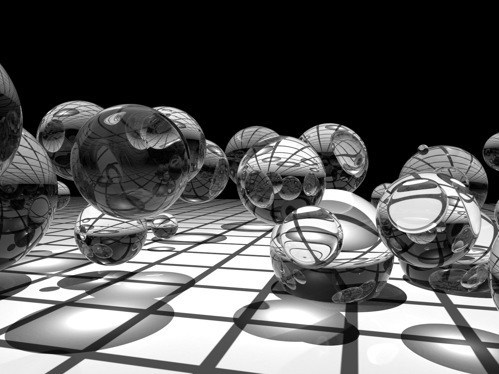图 1.11： 早期光线追踪场景原型。注意镜面和玻璃物体的使用，这突显了算法处理这些表面的能力。(a) 使用 Whitted 1980 年的原始光线追踪算法渲染，(b) 使用 随机渐进光子映射(stochastic progressive photon mapping) (SPPM) 渲染，这是一种现代先进的光传输算法，将在第 sec:photon-mapping 节中介绍。SPPM 能够准确模拟通过球体的光的聚焦。
一般来说，从物体上的一个点到达相机的光量是由物体发出的光（如果它本身是光源）和反射光的总和给出的。这个想法通过 光传输方程(light transport equation)（通常也称为 渲染方程(rendering equation) ）形式化，该方程根据 辐射度(radiance) 来测量光，辐射度是一个将在第 4.1 节中定义的辐射单位。它表示从点 \( \text{p} \) 在方向 \( \omega_o \) 上发出的辐射度 \( L_o(\text{p},\omega_o) \) 等于该点在该方向上的发射辐射度 \( L_e(\text{p},\omega_o) \) ，加上来自围绕球体 \( \text{S}^2 \) 上点 \( \text{p} \) 所有方向的入射辐射度，再乘以 BSDF \( f(\text{p},\omega_o,\omega_i) \) 和一个余弦项：
(1.1) \[ L_o(\text{p},\omega_o) = L_e(\text{p},\omega_o) + \int_{\text{S}^2} f(\text{p},\omega_o,\omega_i) L_i(\text{p},\omega_i) |\cos\theta_i| \text{d}\omega_i \]
我们将在第 4.3.1 节和第 13.1.1 节中展示该方程的更完整推导。除了最简单的场景外，解析地求解这个积分是不可能的，因此我们必须做出简化假设或使用数值积分技术。
Whitted 的光线追踪算法通过忽略来自大多数方向的入射光，简化了这个积分，仅对光源方向以及完美反射和折射的方向进行评估 \( L_i(\text{p},\omega_i) \) 。换句话说，它将积分转化为对少数方向的求和。在 1.3.6 节中，我们将看到简单的随机采样方程（1.1）可以创建包含复杂照明和复杂表面散射效果的真实图像。在本书的其余部分，我们将展示如何使用更复杂的随机采样算法大大提高这种通用方法的效率。
1.2.7 光线传播（Ray Propagation）
图 1.12： 使用参与介质建模的爆炸。因为 pbrt 能够在参与介质的详细模型中模拟光的发射、散射和吸收，因此能够渲染出像这样的图像。（场景由 Jim Price 提供(Scene courtesy of Jim Price)。）
到目前为止的讨论都假设光线在真空中传播。例如，在描述点光源的光分布时，我们假设光的能量在以光源为中心的球面上均匀分布，而在传播过程中没有减弱。烟雾、雾气或灰尘等 参与介质(participating media) 的存在可能会使这一假设失效。这些效应在模拟中非常重要：可以使用参与介质描述一大类有趣的现象。图 1.12 显示了由 pbrt 渲染的爆炸。更不戏剧性的是，几乎所有户外场景都受到参与介质的显著影响。例如，地球的大气使得远处的物体看起来饱和度较低。
参与介质可以通过两种方式影响沿光线传播的光。首先，介质可以 熄灭(extinguish)（或 衰减(attenuate) ）光，或者通过吸收光，或者通过将光散射到不同的方向。我们可以通过计算光线起点与交点之间的 透射率(transmittance) \( T_r \) 来捕捉这种效果。透射率告诉我们在交点散射的光有多少能够返回到光线起点。
参与介质也可以沿着光线增加光的强度。这可以发生在介质发出光（如火焰）或介质将来自其他方向的光散射回光线时。我们可以通过对 体积光传输方程(volume light transport equation) 进行数值计算来找到这个量，方法与我们通过计算光传输方程以找到从表面反射的光的数量相同。我们将把参与介质和体积渲染的描述留到第 11 章和第 14 章。
1.3 pbrt：系统概述（System Overview）
pbrt 是使用标准面向对象技术构建的：对于每一个基本类型，系统指定了实现该类型必须满足的接口。例如， pbrt 要求在场景中表示几何图形的具体形状类型，需要实现一组方法，比如返回形状边界框(bounding box)的方法，和测试与给定光线是否相交的方法。反过来，系统中的大部分功能可以完全基于这些接口来实现；例如，检查光源与被着色点之间是否存在遮挡物的代码，只需调用形状的相交方法，而不必考虑场景中存在的具体形状类型。
表 1.1：主要接口类型。 pbrt 的大部分是基于 14 种关键基础类型实现的，如下所示。可以轻松地将每种实现添加到系统中以扩展其功能。
基础类型 源文件 章节 Spectrum base/spectrum.h, util/spectrum.h, util/spectrum.cpp 4.5 Camera base/camera.h, cameras.h, cameras.cpp 5.1 Shape base/shape.h, shapes.h, shapes.cpp 6.1 Primitive cpu/primitive.h, cpu/primitive.cpp,cpu/accelerators.h, cpu/accelerators.cpp 7.1 Sampler base/sampler.h, samplers.h, samplers.cpp 8.3 Filter base/filter.h, filters.h, filters.cpp 8.8.1 BxDF base/bxdf.h, bxdfs.h, bxdfs.cpp 9.1.2 Material base/material.h, materials.h, materials.cpp 10.5 FloatTexture SpectrumTexture base/texture.h, textures.h, textures.cpp 10.3 Medium base/medium.h, media.h, media.cpp 11.4 Light base/light.h, lights.h, lights.cpp 12.1 LightSampler base/lightsampler.h, lightsamplers.h, lightsamplers.cpp 12.6 Integrator cpu/integrators.h, cpu/integrators.cpp 1.3.3
这些关键基础类型总共有 14 种，汇总在表 1.1 中。将这些类型中的一个新实现添加到系统中是简单直接的；该实现必须提供所需的方法，必须编译并链接到可执行文件中，并且场景对象创建例程(“routine”（例程）通常指的是一段可以被重复调用的代码)必须修改，以便在解析场景描述文件时根据需要创建对象的实例。C.4 节更详细地讨论了如何扩展系统功能。
在 C++中，传统做法是使用定义纯虚函数的抽象基类为这些类型指定接口，并让实现类从这些基类继承并实现所需的虚函数。然后，编译器会负责生成代码，根据基类类型的指针调用适当的方法。这种方法在 pbrt 的前三个版本中使用，但由于在本版本中增加对图形处理单元（GPU）渲染的支持，促使采用一种更具可移植性的 基于标签调度(tag-based dispatch) 的方法，其中每个特定类型的实现被分配一个唯一的整数，以确定其在运行时的类型。（有关此主题的更多信息，请参见第 1.5.7 节。）在 pbrt 中以这种方式实现的多态(polymorphic)类型都在 base/ 目录中的头文件中定义。
此版本的 pbrt 能够在支持 C++17 并提供光线相交测试 API 的 GPU 上运行。我们精心设计了系统，使得几乎所有的 pbrt 实现都可以在 CPU 和 GPU 上运行，正如第 2 章到第 12 章中所展示的。因此，在接下来的大部分内容中，我们将很少提及 CPU 与 GPU 的区别。
在 pbrt 中，CPU 和 GPU 渲染路径之间的主要区别在于它们的数据流、如何实现高效化并行以及各部分如何连接起来。本章后面描述的基本渲染算法以及第 13 章和第 14 章中描述的光传输算法仅在 CPU 上可用。GPU 渲染管线在第 15 章中讨论，尽管它也可以在 CPU 上运行（但效率不如针对 CPU 的光传输算法）。
虽然 pbrt 在当前实现中可以很好地渲染许多场景，但它经常被学生、研究人员和开发者扩展。本节中有许多来自这些努力的成果展示。图 1.13、1.14 和 1.15 都是由一门渲染课程的学生创作的，最终的课堂项目是通过新功能扩展 pbrt ，以渲染之前无法渲染的图像。这些图像是该课程中最优秀的作品之一。

图 1.13： Guillaume Poncin 和 Pramod Sharma 以多种方式扩展了 pbrt ，实现了多种复杂的渲染算法，以制作这幅斯坦福大学的 CS348b 渲染比赛中的获奖图像。树木采用 L系统（L-systems）进行程序建模，发光图像处理滤镜增强了树上灯光的真实感，雪采用元球（metaballs）进行程序建模，次表面散射算法通过考虑光在雪下传播一段距离后再离开的效果，使雪呈现出真实的外观。
图 1.14： 阿贝·戴维斯、戴维·雅各布斯和郑敏·白渲染了这幅惊人的冰洞图像，赢得了 2009 年斯坦福大学 CS348b 渲染比赛的大奖。他们首先实现了冰川化(glaciation)的物理过程模拟，这一过程是指雪在多年间落下、融化并重新冻结，形成分层的冰层。然后，他们模拟了由于融水径流导致的冰的侵蚀，随后生成了冰的几何模型。体积内的光散射通过体积光子映射进行模拟；冰的蓝色完全是由于对冰体积中光的波长依赖吸收的建模。

图 1.15： 陈林孟、霍伯特·张和志仁·朱渲染了这张看起来美味的棉花糖在茶杯中的图像，以赢得 2018 年斯坦福 CS348b 渲染比赛的大奖。他们使用多层曲线建模棉花糖，然后在中心填充参与介质，以高效地模拟其内部的散射。

图 1.16： 马丁·卢比奇使用 Blender 模拟了这个奥地利皇室皇冠的场景；最初使用 LuxRender 渲染，该软件最初是 pbrt-v1 代码库的一个分支。皇冠由大约 350 万个三角形组成，受到六个区域光源的照明，这些光源的发射光谱基于来自真实光源的测量数据。最初在四核 CPU 上以每像素 1280 个样本的设置渲染，计算耗时 73 小时。在现代 GPU 上， pbrt 以相同的采样率可以在 184 秒内渲染此场景。
1.3.1 执行阶段（Phases of Execution）
pbrt 可以概念上分为三个执行阶段。在第一阶段，它解析用户提供的场景描述文件。场景描述是一个文本文件，指定构成场景的几何形状、它们的材质属性、照亮它们的光源、虚拟相机在场景中的位置，以及系统中使用的所有单个算法的参数。场景文件格式在 pbrt 网站 pbrt.org 上有详细文档。
解析阶段的结果是一个 BasicScene 类的实例，它存储场景规范，但尚未以适合渲染的形式存储。在执行的第二阶段， pbrt 创建与场景对应的特定对象；例如，如果指定了透视投影，则在此阶段会创建一个与指定视图参数对应的 PerspectiveCamera 对象。之前版本的 pbrt 将这两个阶段混合在一起，但在这个版本中我们将它们分开，因为 CPU 和 GPU 的渲染路径在内存中表示场景的某些方式不同。
在第三阶段，执行主渲染循环。这个阶段是 pbrt 通常花费大部分运行时间的地方，本书的大部分内容都专注于在这个阶段执行的代码。为了协调渲染， pbrt 实现了一个 积分器(integrator)，之所以这样命名是因为它的主要任务是评估(evaluate)方程 (1.1) 中的积分。
1.3.2 pbrt 的 main函数（pbrt’s main() Function）
pbrt 可执行文件的 main() 函数在 pbrt 源码的 cmd/pbrt.cpp 中定义，位于 pbrt 分支的 src/pbrt 的目录中。它只有大约一百五十行代码，其中大部分用于处理命令行参数和相关的簿记。
/** 程序入口 */
int main(int argc, char *argv[]) {
/** 将命令行参数转换为字符串向量 */
std::vector<std::string> args = GetCommandLineArguments(argv);
/** 为要解析的命令行申明变量 */
PBRTOptions options;
std::vector<std::string> filenames;
/** 处理命令行参数 */
for (auto iter = args.begin(); iter != args.end(); ++iter) {
if ((*iter)[0] != '-') {
filenames.push_back(*iter);
continue;
}
auto onError = [](const std::string &err) {
usage(err);
exit(1);
};
std::string cropWindow, pixelBounds, pixel, pixelMaterial;
if (ParseArg(&iter, args.end(), "cropwindow", &cropWindow, onError)) {
std::vector<Float> c = SplitStringToFloats(cropWindow, ',');
if (c.size() != 4) {
usage("Didn't find four values after --cropwindow");
return 1;
}
options.cropWindow = Bounds2f(Point2f(c[0], c[2]), Point2f(c[1], c[3]));
} else if (ParseArg(&iter, args.end(), "pixel", &pixel, onError)) {
std::vector<int> p = SplitStringToInts(pixel, ',');
if (p.size() != 2) {
usage("Didn't find two values after --pixel");
return 1;
}
options.pixelBounds =
Bounds2i(Point2i(p[0], p[1]), Point2i(p[0] + 1, p[1] + 1));
} else if (ParseArg(&iter, args.end(), "pixelbounds", &pixelBounds, onError)) {
std::vector<int> p = SplitStringToInts(pixelBounds, ',');
if (p.size() != 4) {
usage("Didn't find four integer values after --pixelbounds");
return 1;
}
options.pixelBounds = Bounds2i(Point2i(p[0], p[2]), Point2i(p[1], p[3]));
} else if (ParseArg(&iter, args.end(), "pixelmaterial", &pixelMaterial, onError)) {
std::vector<int> p = SplitStringToInts(pixelMaterial, ',');
if (p.size() != 2) {
usage("Didn't find two values after --pixelmaterial");
return 1;
}
options.pixelMaterial = Point2i(p[0], p[1]);
} else if (
#ifdef PBRT_BUILD_GPU_RENDERER
ParseArg(&iter, args.end(), "gpu", &options.useGPU, onError) ||
ParseArg(&iter, args.end(), "gpu-device", &options.gpuDevice, onError) ||
#endif
ParseArg(&iter, args.end(), "debugstart", &options.debugStart, onError) ||
ParseArg(&iter, args.end(), "disable-pixel-jitter", &options.disablePixelJitter,
onError) ||
ParseArg(&iter, args.end(), "disable-texture-filtering",
&options.disableTextureFiltering, onError) ||
ParseArg(&iter, args.end(), "disable-wavelength-jitter", &options.disableWavelengthJitter,
onError) ||
ParseArg(&iter, args.end(), "displacement-edge-scale",
&options.displacementEdgeScale, onError) ||
ParseArg(&iter, args.end(), "display-server", &options.displayServer, onError) ||
ParseArg(&iter, args.end(), "force-diffuse", &options.forceDiffuse, onError) ||
ParseArg(&iter, args.end(), "format", &format, onError) ||
ParseArg(&iter, args.end(), "log-level", &logLevel, onError) ||
ParseArg(&iter, args.end(), "log-utilization", &options.logUtilization, onError) ||
ParseArg(&iter, args.end(), "log-file", &options.logFile, onError) ||
ParseArg(&iter, args.end(), "mse-reference-image", &options.mseReferenceImage, onError) ||
ParseArg(&iter, args.end(), "mse-reference-out", &options.mseReferenceOutput, onError) ||
ParseArg(&iter, args.end(), "nthreads", &options.nThreads, onError) ||
ParseArg(&iter, args.end(), "outfile", &options.imageFile, onError) ||
ParseArg(&iter, args.end(), "pixelstats", &options.recordPixelStatistics, onError) ||
ParseArg(&iter, args.end(), "quick", &options.quickRender, onError) ||
ParseArg(&iter, args.end(), "quiet", &options.quiet, onError) ||
ParseArg(&iter, args.end(), "render-coord-sys", &renderCoordSys, onError) ||
ParseArg(&iter, args.end(), "seed", &options.seed, onError) ||
ParseArg(&iter, args.end(), "spp", &options.pixelSamples, onError) ||
ParseArg(&iter, args.end(), "stats", &options.printStatistics, onError) ||
ParseArg(&iter, args.end(), "toply", &toPly, onError) ||
ParseArg(&iter, args.end(), "wavefront", &options.wavefront, onError) ||
ParseArg(&iter, args.end(), "write-partial-images", &options.writePartialImages,
onError) ||
ParseArg(&iter, args.end(), "upgrade", &options.upgrade, onError)) {
// success
} else if (*iter == "--help" || *iter == "-help" || *iter == "-h") {
usage();
return 0;
} else {
usage(StringPrintf("argument \"%s\" unknown", *iter));
return 1;
}
}
/** 初始化 pbrt */
InitPBRT(options);
/** 解析提供的场景描述文件 */
BasicScene scene;
BasicSceneBuilder builder(&scene);
ParseFiles(&builder, filenames);
/** 渲染场景 */
if (Options->useGPU || Options->wavefront)
RenderWavefront(scene);
else
RenderCPU(scene);
/** 渲染场景后的清理 */
CleanupPBRT();
}
相较于直接操作提供给 main() 函数的 argv 值， pbrt 将提供的参数转换为 std::string 的vector。这样做不仅是为了 string 类的更好的便利性，还支持非 ASCII 字符集。B.3.2 节提供了有关字符编码及其在 pbrt 中处理的更多信息。
/** 将命令行参数转换为字符串向量 */
std::vector<std::string> args = GetCommandLineArguments(argv);
我们将在书中仅包含一些 main 函数片段的定义。某些片段，例如处理用户提供的命令行参数的片段，既简单又长，不值得增加几页书的长度。然而，我们将包含声明存储选项值变量的片段。
/** 为要解析的命令行的申明变量 */
PBRTOptions options;
std::vector<std::string> filenames;
GetCommandLineArguments() 函数和 PBRTOptions 类型出现在页面边缘的 迷你索引(mini-index) 中，并附有它们定义所在页面的页码。迷你索引指向几乎所有在每页中使用或提及的函数、类、方法和成员变量的定义。（为了简洁起见，我们将从迷你索引中省略非常广泛使用的类，如 Ray ，以及在前几页刚刚介绍的类型或方法。）
PBRTOptions 类存储各种渲染选项，这些选项通常更适合在命令行中指定，而不是在场景描述文件中指定。例如， pbrt 在渲染过程中应该以何种详细程度报告其进度。它被传递给 InitPBRT() 函数，该函数汇总在进行其他工作之前必须执行的各种系统级初始化任务。例如，它初始化日志系统并启动一组用于 pbrt 并行化的线程。
/** 初始化 pbrt */
InitPBRT(options);
在参数被解析和验证后， ParseFiles() 函数接管处理前面描述的三个执行阶段中的第一个。借助于两个类 BasicSceneBuilder 和 BasicScene ，它们分别在 C.2 和 C.3 节中描述，它循环遍历提供的文件名，逐个解析每个文件。如果 pbrt 在没有提供文件名的情况下运行，它会从标准输入中查找场景描述。本书中不会描述场景描述文件的标记化和解析机制，但解析器的实现可以在 src/pbrt 目录中的 parser.h 和 parser.cpp 文件中找到。
/** 解析提供的场景描述文件 */
BasicScene scene;
BasicSceneBuilder builder(&scene);
ParseFiles(&builder, filenames);
在场景描述被解析后，将调用两个函数中的一个来渲染场景。 RenderWavefront() 同时支持 CPU 和 GPU 渲染路径，能够并行处理大约一百万个图像采样(image samples)。它是第 15 章的主题。 RenderCPU() 使用 Integrator 的实现来渲染场景，且仅支持在 CPU 上运行。它的并行性远低于 RenderWavefront() ，仅并行渲染与 CPU 线程数量相同的图像采样。
这两个函数首先都将 BasicScene 转换为适合高效渲染的形式，然后将控制权传递给特定处理器的积分器(processor-specific integrator)。（有关此过程的更多信息，请参见 C.3 节。）我们暂时略过这一转换的细节，以便专注于 RenderCPU() 中的主要渲染循环，这要有趣得多。为此，我们将高效的场景表示视为已获取。
/** 渲染场景 */
if (Options->useGPU || Options->wavefront)
RenderWavefront(scene);
else
RenderCPU(scene);
在图像渲染完成后， CleanupPBRT() 负责优雅地关闭系统，包括例如终止由 InitPBRT() 启动的线程。
/** 渲染场景后的清理 */
CleanupPBRT();
1.3.3 积分器接口（Integrator Interface）
在 RenderCPU() 渲染路径中，由实现 Integrator 接口的类的实例负责渲染。由于 Integrator 实现仅在 CPU 上运行，我们将定义 Integrator 作为具有纯虚方法的标准基类。 Integrator 类和各种实现分别定义在文件 cpu/integrators.h 和 cpu/integrators.cpp 中。
/** 积分器定义 */
class Integrator {
public:
/** 积分器公有方法 */
virtual ~Integrator();
static std::unique_ptr<Integrator> Create(const std::string &name,
const ParameterDictionary ¶meters,
Camera camera, Sampler sampler,
Primitive aggregate,
std::vector<Light> lights,
const RGBColorSpace *colorSpace,
const FileLoc *loc);
virtual std::string ToString() const = 0;
virtual void Render() = 0;
pstd::optional<ShapeIntersection> Intersect(const Ray &ray,
Float tMax = Infinity) const;
bool IntersectP(const Ray &ray, Float tMax = Infinity) const;
bool Unoccluded(const Interaction &p0, const Interaction &p1) const {
return !IntersectP(p0.SpawnRayTo(p1), 1 - ShadowEpsilon);
}
SampledSpectrum Tr(const Interaction &p0, const Interaction &p1,
const SampledWavelengths &lambda) const;
/** 积分器公有成员 */
Primitive aggregate;
std::vector<Light> lights;
std::vector<Light> infiniteLights;
protected:
/** 积分器保护方法 */
Integrator(Primitive aggregate, std::vector<Light> lights)
: aggregate(aggregate), lights(lights) {
// 积分器构造函数实现
Bounds3f sceneBounds = aggregate ? aggregate.Bounds() : Bounds3f();
for (auto &light : lights) {
light.Preprocess(sceneBounds);
if (light.Type() == LightType::Infinite)
infiniteLights.push_back(light);
}
}
};
Integrator 基类构造函数接受一个呈现场景中的所有几何对象的Primitive，以及一个包含场景中的所有光源的数组。
/** 积分器保护方法 */
Integrator(Primitive aggregate, std::vector<Light> lights)
: aggregate(aggregate), lights(lights) {
// 积分器构造函数实现
Bounds3f sceneBounds = aggregate ? aggregate.Bounds() : Bounds3f();
for (auto &light : lights) {
light.Preprocess(sceneBounds);
if (light.Type() == LightType::Infinite)
infiniteLights.push_back(light);
}
}
场景中的每个几何对象都由一个 Primitive 表示，该对象主要负责结合指定其几何形状的 Shape ，和描述其外观的 Material（例如，对象的颜色，或它的表面是哑光还是光泽的）。反过来，场景中的所有几何图元都被收集到一个存储在 Integrator::aggregate 成员变量中的单一聚合图元(single aggregate primitive)中。这个聚合是一个特殊类型的图元，它本身持有对许多其他图元的引用。聚合实现将场景中的所有图元存储在一个加速数据结构中，从而减少与距离给定光线较远的图元进行不必要的光线相交测试的次数。由于它实现了 Primitive 接口，因此对系统的其余部分来说，它与单个图元没有区别。
/** 积分器公共成员 */
Primitive aggregate;
std::vector<Light> lights;
场景中的每个光源由实现 Light 接口的对象表示，该接口允许光源指定其形状和发射的能量分布。有些光源需要知道整个场景的边界框，而在它们首次创建时这些信息是不可用的。因此， Integrator 构造函数调用它们的 Preprocess() 方法，提供这些边界。此时任何“无限”的光源也会存储在一个单独的数组中。这种光源将在第 12.5 节中介绍，为无限远的光源建模，例如，这是一个用于模拟地球表面接收到的天光(skylight)的合理的模型。有时仅循环遍历这些无限光源是有必要的，对于有成千上万光源的场景，循环遍历所有光源以找到这些无限光源是低效的。
// 积分器构造函数实现
Bounds3f sceneBounds = aggregate ? aggregate.Bounds() : Bounds3f();
for (auto &light : lights) {
light.Preprocess(sceneBounds);
if (light.Type() == LightType::Infinite)
infiniteLights.push_back(light);
}
/** 积分器公有成员 */
std::vector<Light> infiniteLights;
Integrators 必须提供 Render() 方法的实现，该方法不接受其他参数。该方法在场景表示初始化完成后由 RenderCPU() 函数调用。积分器的任务是根据聚合图元和光源渲染场景。除此之外，具体的积分器使用其所需的其他类（例如，相机模型）来定义它要渲染的场景。此接口有意设计得非常通用，以允许广泛的实现——例如，可以实现一个 Integrator ，它仅在分布在场景中的稀疏点集上测量光，而不是生成常规的 2D 图像。
/** 积分器公有方法 */
virtual void Render() = 0;
Integrator 类提供了两个与光线-图元相交相关的方法供其子类使用。 Intersect() 接受一条光线和一个最大参数距离 tMax ，在场景中追踪给定的光线，如果在 tMax 之前沿光线有交点的话，返回一个被光线击中最近的图元对应的 ShapeIntersection 对象。（ ShapeIntersection 结构在第 6.1.3 节中定义。）需要注意的是，此方法使用类型 pstd::optional 作为返回值，而不是来自 C++ 标准库的 std::optional ；我们在 pstd 命名空间中重新实现了标准库的部分内容，原因在第 1.5.5 节中讨论。
/** 积分器方法定义 */
pstd::optional<ShapeIntersection>
Integrator::Intersect(const Ray &ray, Float tMax) const {
if (aggregate) return aggregate.Intersect(ray, tMax);
else return {};
}
请注意 Intersect() 函数签名中首字母大写的浮点类型 Float ：几乎 pbrt 中所有的浮点值都被声明为 Float 。 (唯一的例外是少数情况下需要特定的 32 位 float 或 64 位 double （例如，当将二进制值保存到文件时）。) 根据 pbrt 的编译标志， Float 是 float 或 double 的别名，尽管在实践中单精度 float 几乎总是足够的。 Float 的定义在 pbrt.h 头文件中，该文件被 pbrt 中的所有其他源文件包含。
/** Float 浮点类型定义 */
#ifdef PBRT_FLOAT_AS_DOUBLE
using Float = double;
#else
using Float = float;
#endif
Integrator::IntersectP() 与 Intersect() 方法密切相关。它检查沿着光线是否存在交点，但仅返回一个布尔值，指示是否找到交点。（其名称中的“P”表示它是一个评估谓词(evaluates a predicate)的函数(在编程中，谓词（predicate）通常指的是一个返回布尔值（true或false）的函数。)，使用了 Lisp 编程语言中的常见命名约定。）由于它不需要搜索最近的交点或返回关于交点的额外几何信息， IntersectP() 通常比 Integrator::Intersect() 更高效。此例程用于阴影光线。
/** 积分器方法定义 */
bool Integrator::IntersectP(const Ray &ray, Float tMax) const {
if (aggregate) return aggregate.IntersectP(ray, tMax);
else return false;
}
1.3.4 图像块积分器和主渲染循环（ImageTileIntegrator and the Main Rendering Loop）
在实现一个基本的积分器以模拟光传输来渲染图像之前，我们将定义两个 Integrator 子类，这些子类提供该积分器以及许多后续积分器实现所需的额外通用功能。我们从 ImageTileIntegrator 开始，它继承自 Integrator 。下一节定义 RayIntegrator ，它继承自 ImageTileIntegrator 。
pbrt 的所有基于 CPU 的积分器都使用相机模型来定义视图参数并渲染图像，并通过将图像分割成块(tile)并让不同的处理器处理不同的块来实现渲染的并行化。因此， pbrt 包含一个 ImageTileIntegrator ，为这些任务提供通用功能。
/** 图像块积分器定义 */
class ImageTileIntegrator : public Integrator {
public:
/** 图像块积分器公有方法 */
ImageTileIntegrator(Camera camera, Sampler sampler,
Primitive aggregate, std::vector<Light> lights)
: Integrator(aggregate, lights), camera(camera),
samplerPrototype(sampler) {}
void Render();
virtual void EvaluatePixelSample(Point2i pPixel, int sampleIndex,
Sampler sampler, ScratchBuffer &scratchBuffer) = 0;
protected:
/** 图像块积分器保护成员 */
Camera camera;
Sampler samplerPrototype;
};
除了聚合和光源， ImageTileIntegrator 构造函数接受一个 Camera，该参数指定视图和镜头参数，如位置、方向、焦距和视场。由相机存储的 Film 处理图像存储。 Camera 类是第 5 章的大部分内容， Film 在第 5.4 节中描述。 Film 负责将最终图像写入文件。
构造函数还接受一个 Sampler ；它的作用更为微妙，但其实现可以显著影响系统生成的图像质量。首先，采样器负责选择图像平面上的点，以确定最初追踪到场景中的光线。其次，它负责提供随机样本值，这些值被积分器用于估计光传输积分的值，方程（1.1）。例如，一些积分器需要选择光源上的随机点，以计算来自区域光源的照明。生成这些样本的良好分布是渲染过程中的一个重要部分，可以显著影响整体效率；这个主题是第 8 章的主要焦点。
/** 图像块积分器公有方法 */
ImageTileIntegrator(Camera camera, Sampler sampler,
Primitive aggregate, std::vector<Light> lights)
: Integrator(aggregate, lights), camera(camera),
samplerPrototype(sampler) {}
/** 图像块积分器保护成员 */
Camera camera;
Sampler samplerPrototype;
对于 pbrt 的所有积分器，每个像素计算的最终颜色基于随机采样算法。如果每个像素的最终值是多个样本的平均值，则图像质量会提高。在样本数量较少时，采样误差(sampling error)表现为图像中的颗粒状高频噪声(grainy high-frequency noise)，随着样本数量的增加，误差以可预测的速率下降。（此主题在第 2.1.4 节中有更深入的讨论。）因此， ImageTileIntegrator::Render() 将图像分成若干 波次(waves) 进行渲染，每个像素每次只处理少量样本。在前两波中，每个像素只取一个样本。在下一波中，每个像素取两个样本，每波的样本数量逐渐翻倍，直到达到一个限制。虽然最终图像的效果与图像是按波次渲染还是在一个像素中取完所有样本再转到下一个像素没有区别，但这种计算方式使得在渲染过程中可以看到最终图像的预览，其中所有像素都有一些样本，而不是只有少数像素有许多样本，其余像素没有样本。
因为 pbrt 是并行化以使用多个线程运行的，因此这种方法需要找到一个平衡。线程在获取新图像块的工作时会产生一定的开销，而一些线程在每波次结束时可能会变得空闲，因为它们没有更多的工作可做，而其他线程仍在处理它们被分配的图像块。这些考虑促使了限制翻倍方法的使用。
/** 图像块积分器方法定义 */
void ImageTileIntegrator::Render() {
/** 声明用于分块渲染图像的公共变量 */
ThreadLocal<ScratchBuffer> scratchBuffers(
[]() { return ScratchBuffer(); } );
ThreadLocal<Sampler> samplers(
[this]() { return samplerPrototype.Clone(); });
Bounds2i pixelBounds = camera.GetFilm().PixelBounds();
int spp = samplerPrototype.SamplesPerPixel();
ProgressReporter progress(int64_t(spp) * pixelBounds.Area(), "Rendering",
Options->quiet);
int waveStart = 0, waveEnd = 1, nextWaveSize = 1;
/** 按波次渲染图像 */
while (waveStart < spp) {
/** 并行渲染当前波次的图像块 */
ParallelFor2D(pixelBounds, [&](Bounds2i tileBounds) {
/** 渲染 tileBounds 提供的图像块 */
ScratchBuffer &scratchBuffer = scratchBuffers.Get();
Sampler &sampler = samplers.Get();
for (Point2i pPixel : tileBounds) {
/** 渲染像素 pPixel 中的样本 */
for (int sampleIndex = waveStart; sampleIndex < waveEnd; ++sampleIndex) {
sampler.StartPixelSample(pPixel, sampleIndex);
EvaluatePixelSample(pPixel, sampleIndex, sampler, scratchBuffer);
scratchBuffer.Reset();
}
}
progress.Update((waveEnd - waveStart) * tileBounds.Area());
});
/** 更新开始和结束波次 */
waveStart = waveEnd;
waveEnd = std::min(spp, waveEnd + nextWaveSize);
nextWaveSize = std::min(2 * nextWaveSize, 64);
/** 可选的将当前图像写入磁盘 */
if (waveStart == spp || Options->writePartialImages || referenceImage) {
ImageMetadata metadata;
metadata.renderTimeSeconds = progress.ElapsedSeconds();
metadata.samplesPerPixel = waveStart;
if (waveStart == spp || Options->writePartialImages) {
camera.InitMetadata(&metadata);
camera.GetFilm().WriteImage(metadata, 1.0f / waveStart);
}
}
}
}
在渲染开始之前，需要一些额外的变量。首先，积分器的实现需要分配少量临时内存，以存储在计算每条光线的贡献过程中表面散射属性。大量的内存分配可能会轻易地压倒系统的常规内存分配例程（例如， new ），这些例程必须协调多线程维护复杂的数据结构以跟踪空闲内存。一个简单的实现可能会在内存分配器中花费相当大一部分的计算时间。
为了解决这个问题， pbrt 提供了一个 ScratchBuffer 类，该类管理一块小的预分配内存缓冲区。 ScratchBuffer 分配非常高效，只需增加偏移量。 ScratchBuffer 不允许独立释放分配；相反，所有分配必须一次性释放，但这样做只需重置该偏移量。
因为 ScratchBuffer 在多个线程同时使用时不安全，所以为每个线程使用 ThreadLocal 模板类创建一个单独的实例。它的构造函数接受一个返回其管理的对象类型的新实例的 lambda 函数：在这里，调用默认的 ScratchBuffer 构造函数就足够了。 ThreadLocal 然后处理了为每个线程维护对象的独立副本的细节，并按需分配这些副本。
/** 声明用于分块渲染图像的公共变量 */
ThreadLocal<ScratchBuffer> scratchBuffers(
[]() { return ScratchBuffer(); } );
大多数 Sampler 实现发现维护一些状态是有用的，例如当前像素的坐标。这意味着多个线程不能同时使用单个 Sampler ，因此 ThreadLocal 也用于 Sampler 管理。 Samplers 提供了一个 Clone() 方法，用于创建其采样器类型的新实例。在开始时提供给 ImageTileIntegrator 构造函数的采样器 samplerPrototype ，在这里提供这些副本。
/** 声明用于分块渲染图像的公共变量 */
ThreadLocal<Sampler> samplers(
[this]() { return samplerPrototype.Clone(); });
提供给用户渲染工作完成多少以及还需要多长时间的指示是很有帮助的。这个任务由 ProgressReporter 类处理，它的第一个参数是工作项的总数。在这里，工作总量是每个像素采样的数量乘以总像素数。使用 64 位精度来计算这个值是很重要的，因为 32 位 int 可能不足以处理具有多个每像素样本的高分辨率图像。
/** 声明用于分块渲染图像的公共变量 */
Bounds2i pixelBounds = camera.GetFilm().PixelBounds();
int spp = samplerPrototype.SamplesPerPixel();
ProgressReporter progress(int64_t(spp) * pixelBounds.Area(), "Rendering",
Options->quiet);
接下来，当前波次中要采集的样本范围由 waveStart 和 waveEnd 给出； nextWaveSize 给出下一波中要采集的样本数量。
/** 声明用于分块渲染图像的公共变量 */
int waveStart = 0, waveEnd = 1, nextWaveSize = 1;
手握这些变量，渲染继续进行，直到在所有像素中采集到所需数量的样本。
/** 按波次渲染图像 */
while (waveStart < spp) {
/** 并行渲染当前波次的图像块 */
ParallelFor2D(pixelBounds, [&](Bounds2i tileBounds) {
/** 渲染 tileBounds 提供的图像块 */
ScratchBuffer &scratchBuffer = scratchBuffers.Get();
Sampler &sampler = samplers.Get();
for (Point2i pPixel : tileBounds) {
/** 渲染像素 pPixel 中的样本 */
for (int sampleIndex = waveStart; sampleIndex < waveEnd; ++sampleIndex) {
sampler.StartPixelSample(pPixel, sampleIndex);
EvaluatePixelSample(pPixel, sampleIndex, sampler, scratchBuffer);
scratchBuffer.Reset();
}
}
progress.Update((waveEnd - waveStart) * tileBounds.Area());
});
/** 更新开始和结束波次 */
waveStart = waveEnd;
waveEnd = std::min(spp, waveEnd + nextWaveSize);
nextWaveSize = std::min(2 * nextWaveSize, 64);
/** 可选的将当前图像写入磁盘 */
if (waveStart == spp || Options->writePartialImages || referenceImage) {
ImageMetadata metadata;
metadata.renderTimeSeconds = progress.ElapsedSeconds();
metadata.samplesPerPixel = waveStart;
if (waveStart == spp || Options->writePartialImages) {
camera.InitMetadata(&metadata);
camera.GetFilm().WriteImage(metadata, 1.0f / waveStart);
}
}
}
ParallelFor2D() 函数遍历图像块，多个循环迭代并发运行；它是第 B.6 节中介绍的与并行相关的实用函数的一部分。C++ lambda 表达式提供了循环体。 ParallelFor2D() 自动选择图像块的大小，以平衡两个方面：一方面，我们希望图像块的数量显著多于系统中的处理器数量。某些块的处理时间可能会少于其他块，因此如果处理器与块之间存在 1:1 的映射，那么一些处理器在完成工作后将处于空闲状态，而其他处理器则继续处理其图像区域。（图 1.17 显示了渲染示例图像块所需时间的分布，说明了这一问题。）另一方面，块过多也会影响效率。线程在并行 for 循环中获取更多工作时，会有一个小的固定开销，块越多，这个开销付出的代价就越大。因此， ParallelFor2D() 选择的块大小考虑了待处理区域的范围和系统中的处理器数量。
/** 并行渲染当前波次的图像块 */
ParallelFor2D(pixelBounds, [&](Bounds2i tileBounds) {
/** 渲染 tileBounds 提供的图像块 */
ScratchBuffer &scratchBuffer = scratchBuffers.Get();
Sampler &sampler = samplers.Get();
for (Point2i pPixel : tileBounds) {
/** 渲染像素 pPixel 中的样本 */
for (int sampleIndex = waveStart; sampleIndex < waveEnd; ++sampleIndex) {
sampler.StartPixelSample(pPixel, sampleIndex);
EvaluatePixelSample(pPixel, sampleIndex, sampler, scratchBuffer);
scratchBuffer.Reset();
}
}
progress.Update((waveEnd - waveStart) * tileBounds.Area());
});
图 1.17：图 1.11 中场景每个瓦片渲染所花费时间的直方图。 横轴以秒为单位测量时间。注意执行时间的广泛变化，说明图像的不同部分需要的计算量有显著差异。
给定一个要渲染的瓦片，实现在开始时会为当前执行的线程获取 ScratchBuffer 和 Sampler 。如前所述， ThreadLocal::Get() 方法负责为每个线程分配和返回它们的独立实例的细节。
有了这些，实现使用基于范围的 for 循环遍历图像块中的所有像素，该循环使用 Bounds2 类提供的迭代器，然后通知 ProgressReporter 已完成的工作量。
/** 渲染 tileBounds 提供的图像块 */
ScratchBuffer &scratchBuffer = scratchBuffers.Get();
Sampler &sampler = samplers.Get();
for (Point2i pPixel : tileBounds) {
/** 渲染像素 pPixel 中的样本 */
for (int sampleIndex = waveStart; sampleIndex < waveEnd; ++sampleIndex) {
sampler.StartPixelSample(pPixel, sampleIndex);
EvaluatePixelSample(pPixel, sampleIndex, sampler, scratchBuffer);
scratchBuffer.Reset();
}
}
progress.Update((waveEnd - waveStart) * tileBounds.Area());
给定一个像素以进行一个或多个采样，通过 StartPixelSample() 通知线程的 Sampler 应该开始为当前像素生成样本，这使采样器能够根据当前正在处理的像素来设置任何内部状态。积分器的 EvaluatePixelSample() 方法负责确定具体样本的值，之后调用 ScratchBuffer::Reset() 来释放它在 [ScratchBuffer] 中分配的临时内存。
/** 渲染像素 pPixel 中的样本 */
for (int sampleIndex = waveStart; sampleIndex < waveEnd; ++sampleIndex) {
sampler.StartPixelSample(pPixel, sampleIndex);
EvaluatePixelSample(pPixel, sampleIndex, sampler, scratchBuffer);
scratchBuffer.Reset();
}
提供了纯虚方法 Integrator::Render() 的实现后， ImageTileIntegrator 现在要求其子类实现接下来的 EvaluatePixelSample() 方法。
/** 图像块积分器公有方法 */
virtual void EvaluatePixelSample(Point2i pPixel, int sampleIndex,
Sampler sampler, ScratchBuffer &scratchBuffer) = 0;
在当前波次的并行 for 循环完成后，计算下一波要处理的样本索引范围。
/** 更新开始和结束波次 */
waveStart = waveEnd;
waveEnd = std::min(spp, waveEnd + nextWaveSize);
nextWaveSize = std::min(2 * nextWaveSize, 64);
如果用户提供了 –write-partial-images 命令行选项，则在处理下一波样本之前，正在进行的图像会写入磁盘。我们在这里不包括处理此操作的片段，可选的将当前图像写入磁盘。
1.3.5 光线积分器实现（RayIntegrator Implementation）
正如 ImageTileIntegrator 集中处理与将图像分解为瓦片的积分器相关的功能， RayIntegrator 为从相机开始追踪光线路径的积分器提供通用功能。在第 13 章和第 14 章中实现的所有积分器都继承自 RayIntegrator 。
/** 光线积分器定义 */
class RayIntegrator : public ImageTileIntegrator {
public:
/** 光线积分器公有方法 */
RayIntegrator(Camera camera, Sampler sampler, Primitive aggregate,
std::vector<Light> lights)
: ImageTileIntegrator(camera, sampler, aggregate, lights) {}
void EvaluatePixelSample(Point2i pPixel, int sampleIndex,
Sampler sampler, ScratchBuffer &scratchBuffer) final;
virtual SampledSpectrum Li(
RayDifferential ray, SampledWavelengths &lambda, Sampler sampler,
ScratchBuffer &scratchBuffer, VisibleSurface *visibleSurface) const = 0;
};
它的构造函数只是将提供的对象传递给 ImageTileIntegrator 构造函数。
/** 光线积分器公有方法 */
RayIntegrator(Camera camera, Sampler sampler, Primitive aggregate,
std::vector<Light> lights)
: ImageTileIntegrator(camera, sampler, aggregate, lights) {}
RayIntegrator 实现了来自 ImageTileIntegrator 的纯虚方法 EvaluatePixelSample() 。在给定的像素处，它使用其 Camera 和 Sampler 生成一条射线进入场景，然后调用由子类提供的 Li() 方法，以确定沿该射线到达图像平面的光量。正如我们将在后面的章节中看到的，该方法返回的值的单位与射线起点的入射光谱辐射有关，通常在方程中用符号 \( L_\text{i} \) 表示——该方法的名称也因此而来。该值被传递给 Film ，记录射线对图像的贡献。
图 1.18 总结了该方法中使用的主要类及他们之间的数据流。
图 1.18： RayIntegrator::EvaluatePixelSample() 中执行计算的类之间的关系。 Sampler 为每个要采样的图像提供样本值。 Camera 将样本转换为来自胶片平面(film plane)的相应光线， Li() 方法计算到达胶片的该光线上的辐射亮度(radiance)。样本及其辐射亮度被传递给 Film ，后者将它们的贡献存储在图像中。
/** 光线积分器方法定义 */
void RayIntegrator::EvaluatePixelSample(Point2i pPixel, int sampleIndex,
Sampler sampler, ScratchBuffer &scratchBuffer) {
/** 采样光线的波长 */
Float lu = sampler.Get1D();
SampledWavelengths lambda = camera.GetFilm().SampleWavelengths(lu);
/** 为当前样本初始化CameraSample */
Filter filter = camera.GetFilm().GetFilter();
CameraSample cameraSample = GetCameraSample(sampler, pPixel, filter);
/** 为当前样本生成摄像机光线 */
pstd::optional<CameraRayDifferential> cameraRay =
camera.GenerateRayDifferential(cameraSample, lambda);
/** 追踪有效的摄像机光线(cameraRay) */
SampledSpectrum L(0.);
VisibleSurface visibleSurface;
if (cameraRay) {
/** 根据图像采样率缩放摄像机光线微分 */
Float rayDiffScale =
std::max<Float>(.125f, 1 / std::sqrt((Float)sampler.SamplesPerPixel()));
cameraRay->ray.ScaleDifferentials(rayDiffScale);
/** 沿摄像机光线评估辐射亮度 */
bool initializeVisibleSurface = camera.GetFilm().UsesVisibleSurface();
L = cameraRay->weight *
Li(cameraRay->ray, lambda, sampler, scratchBuffer,
initializeVisibleSurface ? &visibleSurface : nullptr);
/** 如果返回意外的辐射亮度值，则发出警告 */
if (L.HasNaNs()) {
LOG_ERROR("Not-a-number radiance value returned for pixel (%d, "
"%d), sample %d. Setting to black.",
pPixel.x, pPixel.y, sampleIndex);
L = SampledSpectrum(0.f);
} else if (IsInf(L.y(lambda))) {
LOG_ERROR("Infinite radiance value returned for pixel (%d, %d), "
"sample %d. Setting to black.",
pPixel.x, pPixel.y, sampleIndex);
L = SampledSpectrum(0.f);
}
}
/** 将摄像机光线的贡献值添加到图像中 */
camera.GetFilm().AddSample(pPixel, L, lambda, &visibleSurface,
cameraSample.filterWeight);
}
每个光线在多个离散波长 \( \lambda \) （默认四个）上携带辐射。当计算每个像素的颜色时， pbrt 在不同的像素样本中选择不同的波长，以便最终结果更好地反映所有波长的正确结果。为了选择这些波长，首先由 Sampler 提供一个样本值 lu 。该值在范围 \( [0,1) \) 内均匀分布。然后， Film::SampleWavelengths() 方法将此样本映射到一组特定波长，把它的胶片传感器响应模型当作一个关于波长的函数。大多数 Sampler 实现确保如果在一个像素中采样多个样本，这些样本在总体上均匀分布在 \( [0,1] \) 上。相应的，它们确保采样的波长在有效波长范围内也均匀分布，从而提高图像质量。
/** 采样光线的波长 */
Float lu = sampler.Get1D();
SampledWavelengths lambda = camera.GetFilm().SampleWavelengths(lu);
CameraSample 结构记录了相机应生成光线的胶片位置。该位置受到采样器提供的样本位置和用于将给像素的多个样本值过滤为单个值的重建滤波器(reconstruction filter)的影响。 GetCameraSample() 处理这些计算。 CameraSample 还存储与光线相关的时间以及镜头位置样本，这些在渲染移动物体的场景和模拟非针孔光圈的相机模型时使用。
/** 为当前样本初始化CameraSample */
Filter filter = camera.GetFilm().GetFilter();
CameraSample cameraSample = GetCameraSample(sampler, pPixel, filter);
Camera 接口提供了两种生成光线的方法： GenerateRay() 返回给定图像采样位置的光线，以及 GenerateRayDifferential() 返回 光线微分(ray differential) ，包含相机在图像平面的 \( x \) 和 \( y \) 方向上与样本相距一个像素的位置生成的光线的信息。光线微分用于从第 10 章中定义的一些纹理函数中获得更好的结果，通过使得能够计算纹理随像素间距变化的速度，这是一种纹理抗锯齿的关键组成部分。
某些 CameraSample 值可能与给定相机的有效光线不一致。因此，用 pstd::optional 来包装相机返回的 CameraRayDifferential 。
/** 为当前样本生成摄像机光线 */
pstd::optional<CameraRayDifferential> cameraRay =
camera.GenerateRayDifferential(cameraSample, lambda);
如果摄像机光线有效，它将在一些额外准备后传递给 RayIntegrator 子类的 Li() 方法实现。除了返回沿光线 \( \text{L} \) 的辐射亮度外，子类还负责初始化 VisibleSurface 类的一个实例，该实例记录光线在每个像素处与表面相交（如果有的话）的几何信息，以供 Film 实现使用，例如 GBufferFilm ，它在每个像素处存储的不仅仅是颜色的信息。
/** 追踪有效的摄像机光线(cameraRay) */
SampledSpectrum L(0.);
VisibleSurface visibleSurface;
if (cameraRay) {
/** 根据图像采样率缩放摄像机光线微分 */
/** 沿摄像机光线评估辐射亮度 */
/** 如果返回意外的辐射亮度值，则发出警告 */
}
在将光线传递给 Li() 方法之前， ScaleDifferentials() 在每个像素进行多个采样时，会调整微分光线的比例，以考虑到胶片平面上样本之间的实际间距。。
/** 根据图像采样率缩放摄像机光线微分 */
Float rayDiffScale =
std::max<Float>(.125f, 1 / std::sqrt((Float)sampler.SamplesPerPixel()));
cameraRay->ray.ScaleDifferentials(rayDiffScale);
对于不在每个像素处存储几何信息的 Film 实现，节省填充 VisibleSurface 类的工作是值得的。因此，只有在必要时，才会在调用 Li() 方法时传递指向该类的指针，否则传递空指针。积分器实现应仅在 VisibleSurface 非空时进行初始化。
CameraRayDifferential 还携带与光线相关的权重，用于缩放返回的辐射值。对于简单的相机模型，每条光线的权重相等，但更准确模拟透镜系统成像过程的相机模型可能会生成一些贡献大于其他光线的光线。这种相机模型可能会模拟在胶片平面的边缘到达的光线少于中心的效果，这种效果称为 渐晕(vignetting) 。
/** 沿摄像机光线评估辐射亮度 */
bool initializeVisibleSurface = camera.GetFilm().UsesVisibleSurface();
L = cameraRay->weight *
Li(cameraRay->ray, lambda, sampler, scratchBuffer,
initializeVisibleSurface ? &visibleSurface : nullptr);
RayIntegrator 子类必须实现纯虚方法 Li() 。它返回在指定波长采样时，给定光线的起点处的入射辐射，。
/** 光线积分器公有方法 */
virtual SampledSpectrum Li(
RayDifferential ray, SampledWavelengths &lambda, Sampler sampler,
ScratchBuffer &scratchBuffer, VisibleSurface *visibleSurface) const = 0;
渲染过程中的出现的 bugs 的一个常见副作用是计算出不可能的辐射值。例如，除以零会导致辐射值等于 IEEE 浮点无穷大或“不是一个数字(not a number)”值。渲染器会查找这些可能性，并在遇到时打印错误消息。这里我们不包括执行此操作的片段，/** 如果返回意外的辐射亮度值，则发出警告 */。如果您对其细节感兴趣，请参见 cpu/integrators.cpp 中的实现。
在已知光线起始处的辐射亮度后，调用 Film::AddSample() 更新图像中相应的像素，给定样本的加权辐射亮度。样本值如何记录在胶片中的细节在第 5.4 节和第 8.8 节中解释。
/** 将摄像机光线的贡献值添加到图像中 */
camera.GetFilm().AddSample(pPixel, L, lambda, &visibleSurface,
cameraSample.filterWeight);
1.3.6 随机游走积分器（Random Walk Integrator）
尽管我们花了几页时间整理积分器基础设施的实现终于完成了 RayIntegrator ，但现在我们可以在一个比实现完整的 Integrator::Render() 方法更简单的上下文中转向实现光传输积分算法。本节中我们将描述的 RandomWalkIntegrator 继承自 RayIntegrator ，因此多线程的所有细节、从相机生成初始光线以及沿着该光线将辐射度添加到图像的过程都已处理好。积分器在一个更简单的上下文中操作：给定一条光线，其任务是计算到达其起点的辐射度。
请回忆在第 1.2.7 节中我们提到，在没有参与介质的情况下，光线通过自由空间时所携带的光是不变的。在实现这个积分器时，我们将忽略参与介质的可能性，这使我们能够迈出第一步：给定光线与场景中几何体的第一次交点，到达光线起点的辐射度等于从交点朝向光线起点发出的辐射度。该出射辐射(outgoing radiance)由光传输方程（1.1）给出，尽管以封闭形式评估它是不可能的。需要采用数值方法，而在 pbrt 中使用的方法基于蒙特卡罗积分(Monte Carlo integration)，这使得可以通过对被积函数进行逐点计算来估计积分的值。第 2 章提供了蒙特卡罗积分的介绍，额外的蒙特卡罗技术将在书中使用到时进行介绍。
为了计算出射辐射， RandomWalkIntegrator 实现了一种基于增量构建 随机游走(random walk) 的简单蒙特卡洛方法，其在场景表面上连续随机选择一系列点，以构建从相机开始的光携带路径。这种方法有效地反向模拟了现实世界中的图像形成，从相机而不是从光源发出光线。在这方面向后推导在物理上仍然是有效的，因为 pbrt 所基于的光的物理模型是时间可逆的。

图 1.19：使用 RandomWalkIntegrator 渲染的 水彩(Watercolor) 场景的图像。 由于 RandomWalkIntegrator 无法完美处理镜面表面，桌子上的两个玻璃杯呈黑色。此外，即使使用每像素 8,192 个样本来渲染此图像，结果仍然布满高频噪声。（例如，请注意远处的墙壁和椅子的底部。） （场景由 Angelo Ferretti 提供。）(Scene courtesy of Angelo Ferretti)
尽管随机游走采样算法的实现总共只有二十多行代码，但它能够模拟复杂的光照和着色效果；图 1.19 显示了使用该算法渲染的图像。（不过，该图像的计算耗费了许多小时才能达到这样的质量。）在本节的其余部分，我们将略过一些积分器实现的数学细节，专注于对该方法的直观理解，后续章节将填补这些空白，并更严格地解释这一点以及更复杂的技术。
/** 随机游走积分器定义 */
class RandomWalkIntegrator : public RayIntegrator {
public:
/** 随机游走积分器 公有方法 */
RandomWalkIntegrator(int maxDepth, Camera camera, Sampler sampler,
Primitive aggregate, std::vector<Light> lights)
: RayIntegrator(camera, sampler, aggregate, lights), maxDepth(maxDepth) {}
static std::unique_ptr<RandomWalkIntegrator> Create(
const ParameterDictionary ¶meters, Camera camera, Sampler sampler,
Primitive aggregate, std::vector<Light> lights, const FileLoc *loc);
std::string ToString() const;
SampledSpectrum Li(RayDifferential ray, SampledWavelengths &lambda,
Sampler sampler, ScratchBuffer &scratchBuffer,
VisibleSurface *visibleSurface) const {
return LiRandomWalk(ray, lambda, sampler, scratchBuffer, 0);
}
private:
/** 随机游走积分器 私有方法 */
SampledSpectrum LiRandomWalk(RayDifferential ray,
SampledWavelengths &lambda, Sampler sampler,
ScratchBuffer &scratchBuffer, int depth) const {
/** 让光线与场景相交并在没有交点时返回 */
pstd::optional<ShapeIntersection> si = Intersect(ray);
if (!si) {
/** 返回从无限远光源发出的光 */
SampledSpectrum Le(0.f);
for (Light light : infiniteLights)
Le += light.Le(ray, lambda);
return Le;
}
SurfaceInteraction &isect = si->intr;
/** 获取表面交点的发射辐射 */
Vector3f wo = -ray.d;
SampledSpectrum Le = isect.Le(wo, lambda);
/** 如果达到最大递归深度则终止随机游走 */
if (depth == maxDepth)
return Le;
/** 在随机游走交点计算 BSDF */
BSDF bsdf = isect.GetBSDF(ray, lambda, camera, scratchBuffer, sampler);
/** 为随机游走随机采样离开表面时的方向 */
Point2f u = sampler.Get2D();
Vector3f wp = SampleUniformSphere(u);
/** 在采样方向评估表面的 BSDF */
SampledSpectrum fcos = bsdf.f(wo, wp) * AbsDot(wp, isect.shading.n);
if (!fcos)
return Le;
/** 递归追踪光线以估计表面的入射辐射亮度 */
ray = isect.SpawnRay(wp);
return Le + fcos * LiRandomWalk(ray, lambda, sampler, scratchBuffer,
depth + 1) / (1 / (4 * Pi));
}
/** 随机游走积分器 私有成员 */
int maxDepth;
};
这个积分器递归地评估随机游走。因此，它的 Li() 方法实现几乎只是通过调用 LiRandomWalk() 方法来启动递归。大多数传递给 Li() 的参数只是被传递下去，因此这个简单的积分器忽略 VisibleSurface ，取而代之添加一个额外的参数来跟踪递归的深度。
/** 随机游走积分器 公有方法 */
SampledSpectrum Li(RayDifferential ray, SampledWavelengths &lambda,
Sampler sampler, ScratchBuffer &scratchBuffer,
VisibleSurface *visibleSurface) const {
return LiRandomWalk(ray, lambda, sampler, scratchBuffer, 0);
}
/** 随机游走积分器 私有方法 */
SampledSpectrum LiRandomWalk(RayDifferential ray,
SampledWavelengths &lambda, Sampler sampler,
ScratchBuffer &scratchBuffer, int depth) const {
/** 让光线与场景相交并在没有交点时返回 */
/** 获取表面交点的发射辐射 */
/** 如果达到最大递归深度则终止随机游走 */
/** 在随机游走交点计算 BSDF */
/** 为随机游走随机采样离开表面时的方向 */
/** 在采样方向评估表面的 BSDF */
/** 递归追踪光线以估计表面的入射辐射亮度 */
}
第一步是找到光线与场景中形状的最近交点。如果没有找到交点，那么光线就已经离开场景。否则，作为 ShapeIntersection 结构一部分返回的 SurfaceInteraction 提供了关于交点局部几何属性的信息。
/** 让光线与场景相交并在没有交点时返回 */
pstd::optional<ShapeIntersection> si = Intersect(ray);
if (!si) {
/** 返回从无限远光源发出的光 */
SampledSpectrum Le(0.f);
for (Light light : infiniteLights)
Le += light.Le(ray, lambda);
return Le;
}
SurfaceInteraction &isect = si->intr;
如果没有找到交点，辐射仍然可能沿着光线传播，因为存在一些没有几何形状的光源，例如 ImageInfiniteLight 。 Light::Le() 方法允许这些光源为给定光线返回其辐射。
/** 返回从无限远光源发出的光 */
SampledSpectrum Le(0.f);
for (Light light : infiniteLights)
Le += light.Le(ray, lambda);
return Le;
如果找到了有效的交点，我们必须在交点处评估光传输方程。第一个项，\( L_\text{e}(\text{p},\omega_\text{o}) \) ，即发射辐射，比较简单：发射是场景规格的一部分，发射辐射可以通过调用 SurfaceInteraction::Le() 方法获得，该方法接受关注的出射方向。在这里，我们关注的是沿光线方向发射回来的辐射。如果物体不是发射体，该方法将返回一个零值的光谱分布(zero-valued spectral distribution)。
/** 获取表面交点的发射辐射 */
Vector3f wo = -ray.d;
SampledSpectrum Le = isect.Le(wo, lambda);
评估光传输方程的第二项需要计算在交点 \( \text{p} \) 周围的方向球面上的积分。可以应用蒙特卡罗积分原理来表明，如果以相等的概率选择所有可能的方向 \( \omega' \) ，则积分的估值可以计算为 BSDF \( f \) （材质在 \( \text{p} \) 处的的光散射特性）、入射光照 \( L_\text{i} \) 以及一个余弦因子的加权乘积：
\[ \int_{\text{S}^2}^{} f(\text{p},\omega_\text{o},\omega_\text{i}) L_\text{i}(\text{p},\omega_\text{i}) |\cos{\theta_\text{i}}| \text{d}\omega_\text{i} \approx \frac{f(\text{p},\omega_\text{o},\omega') L_\text{i}(\text{p},\omega') |\cos{\theta'}|}{1/4\pi} \]
换句话说，给定一个随机方向 \( \omega' \) ，估计积分的值需要评估该方向下被积函数中的项，然后乘以一个因子 \( 4\pi \) 进行缩放。（这个因子在 A.5.2 节中推导，与单位球的表面积有关。）由于只考虑一个方向，因此与积分的真实值相比，蒙特卡洛估计几乎总是存在误差。然而，可以证明像这样的估计 在期望上(in expectation) 是正确的：非正式地说，它们在平均上给出了正确的结果。对多个独立估计取平均通常会减少这种误差——因此，采取每个像素多个样本的做法。
BSDF 和估计的余弦因子很容易评估，那么只剩下一个未知的 \( L_\text{i} \) ，即入射辐射。然而，请注意，我们发现自己又回到了最初调用 LiRandomWalk() 的地方：我们有一条光线，我们希望找到起点的入射辐射——这将通过对 LiRandomWalk() 的递归调用来提供。
在计算积分的估计值之前，我们必须考虑递归的终止条件。 RandomWalkIntegrator 在预定的最大深度 maxDepth 处停止。如果没有这个终止条件，算法可能永远不会终止（例如，想象一个镜子迷宫的场景）。这个成员变量在构造函数中根据可以在场景描述文件中设置的参数进行初始化。
/** 随机游走积分器 私有成员 */
int maxDepth;
/** 如果达到最大递归深度则终止随机游走 */
if (depth == maxDepth)
return Le;
如果随机游走没有终止，则调用 SurfaceInteraction::GetBSDF() 方法找到交点处的 BSDF。它评估纹理函数以确定表面属性，然后初始化 BSDF 的表示。通常需要为构成 BSDF 表示的对象分配内存；因为这段内存只需要在处理当前光线时激活，所以提供 ScratchBuffer 供其进行分配。
/** 在随机游走交点计算 BSDF */
BSDF bsdf = isect.GetBSDF(ray, lambda, camera, scratchBuffer, sampler);
接下来，我们需要随机采样一个方向 \( \omega' \) 来计算方程(1.2)中的估值。 SampleUniformSphere() 函数返回单位球面上的均匀分布方向，输入由采样器提供的两个均匀值 \( [0, 1) \) 。
/** 为随机游走随机采样离开表面时的方向 */
Point2f u = sampler.Get2D();
Vector3f wp = SampleUniformSphere(u);
除了入射辐射外，蒙特卡洛估计的所有因素现在都可以轻松评估。 BSDF 类提供了一个 f() 方法，该方法评估一对指定方向的 BSDF，并且可以使用 AbsDot() 函数计算与表面法线夹角的余弦，该函数返回两个向量之间点积的绝对值。如果向量是归一化的（在这里都是），则该值等于它们之间夹角余弦的绝对值（第 3.3.2 节）。
BSDF 在提供的方向上可能为零值，因此 fcos 也可能为零——例如，当表面不透光而两个方向位于其相对两侧时，BSDF 为零。在这种情况下，没有理由继续随机游走，因为后续点对结果没有贡献。
/** 在采样方向评估表面的 BSDF */
SampledSpectrum fcos = bsdf.f(wo, wp) * AbsDot(wp, isect.shading.n);
if (!fcos)
return Le;
剩余的任务是计算在采样方向 \( \omega' \) 上离开表面的新光线。这个任务由 SpawnRay() 方法处理，该方法返回在提供方向上离开交点的光线，确保光线与表面有足够的偏移，以避免因舍入误差而错误地重新相交。给定光线后，可以递归调用 LiRandomWalk() 来估计入射辐射，从而完成方程 (1.2) 的估计。
/** 递归追踪光线以估计表面的入射辐射亮度 */
ray = isect.SpawnRay(wp);
return Le + fcos * LiRandomWalk(ray, lambda, sampler, scratchBuffer,
depth + 1) / (1 / (4 * Pi));
这种简单的方法有许多缺点。例如，如果发射表面很小，大多数光线路径将找不到任何光照，但是需要追踪许多光线以形成准确的图像。在点光源的极限情况下，图像将是黑色，因为与这样的光源相交的概率为零。类似的问题也适用于在集中方向上散射光的 BSDF 模型。在完美镜子的极限情况下，它沿单一方向散射入射光， RandomWalkIntegrator 将永远无法随机采样该方向。
这些问题以及更多问题可以通过更复杂的蒙特卡罗积分技术来解决。在后续章节中，我们将介绍一系列改进，以获得更准确的结果。第 13 到 15 章中定义的积分器是这些发展的巅峰。所有这些仍然基于 RandomWalkIntegrator 中使用的基本思想，但比它更高效和稳健。图 1.20 将 RandomWalkIntegrator 与其中一个改进的积分器进行比较，并展示了可能的改进程度。
(a) RandomWalkIntegrator 随机游走积分器

(b) PathIntegrator 路径积分器

图 1.20：使用每像素 32 个样本渲染的 水彩(Watercolor) 场景。 (a) 使用 RandomWalkIntegrator 渲染。(b) 使用 PathIntegrator 渲染，采用相同的一般方法，但使用更复杂的蒙特卡洛技术。 PathIntegrator 在大致相同的工作量下提供了显著更好的图像，均方误差减少了 \( 54.5\times \) 。
1.4 如何阅读本书（How to Proceed through This Book）
我们编写本书时假设读者会大致按照从前到后的顺序阅读。我们尽量减少对尚未介绍的概念和接口的前向引用，但我们假设读者在文章的任何特定点上都熟悉之前的内容。有些章节深入探讨了一些高级主题，某些读者可能希望在第一次阅读时跳过；每个高级章节在标题中用星号标识。
由于系统的模块化特性，主要要求读者需要熟悉如 Point3f 、 Ray 和 SampledSpectrum 的底层类、表 1.1 中列出的抽象基类定义的接口、以及最终调用积分器的 RayIntegrator::Li() 方法的渲染循环。有了这些知识，假如读者如果不关心基于透视投影矩阵的相机模型如何将 CameraSample 映射到光线，可以跳过该相机的实现，只需记住 Camera::GenerateRayDifferential() 方法以某种方式将 CameraSample 转换为 RayDifferential 。
本书的其余部分分为四个主要部分，每个部分包含几章。首先，第 2 章到第 4 章介绍了系统的基础。第 2 章简要介绍了蒙特卡罗积分的关键思想，第 3 章描述了广泛使用的几何类，如 Point3f 、 Ray 和 Bounds3f 。第 4 章介绍了用于测量光的物理单位以及 pbrt 用于表示光谱分布的 SampledSpectrum 类。它还讨论了颜色和人类对光谱的感知，这影响了输入如何提供给渲染器以及它如何生成输出。
本书的第二部分涵盖了图像形成以及场景几何的表示。第 5 章定义了 Camera 接口和几种不同的相机实现，然后讨论将到达胶片的光谱辐射转化为图像的整体过程。第 6 章介绍了 Shape 接口，并给出了多个形状的实现，包括如何与它们进行光线相交测试。第 7 章描述了加速结构的实现，这些结构通过跳过与光线可以明确不相交的图元的测试，使光线追踪更高效。最后，第 8 章的主题是 Sampler 类，这些类在图像平面上放置样本，并为蒙特卡洛积分提供随机样本。
书的第三部分讲述了光以及光如何在表面和参与介质中散射。第 9 章包括一系列定义不同类型表面反射的类。第 10 章中描述的材质使用这些反射函数来实现多种不同的表面类型，如塑料、玻璃和金属。材料属性（颜色、粗糙度等）的空间变化通过纹理建模，这些纹理在第 10 章中也有描述。第 11 章介绍了描述光在参与介质中如何散射和吸收的抽象，而第 12 章则描述了光源的接口和各种光源实现。
最后一部分将书中其余部分的所有想法汇集在一起，以实现一些有趣的光传输算法。第 13 章和第 14 章中的积分器代表了蒙特卡罗积分在计算光传输方程的更准确近似值方面的多种不同应用，相较于 随机游走积分器 。第 15 章随后描述了在 GPU 上运行的高性能积分器的实现，该实现基于与 CPU 积分器实现中使用的相同类的实现。
第 16 章，书的最后一章，提供了对系统设计决策的简要回顾和讨论，以及一些比练习中更具深远意义的项目建议。附录包含更多的蒙特卡罗采样算法，描述工具函数，并解释在解析输入文件时场景描述的创建细节。
1.4.1 练习（The Exercises）
在每一章的末尾，您会找到与该章所涵盖的内容相关的练习。每个练习被标记为三种难度级别之一：
① 一个应该只需一到两个小时便能完成的练习
② 适合当作课后作业的阅读和实现任务，预计需要 10 到 20 小时来完成
③ 可能需要 40 小时或更长时间才能完成的课程的最终项目
1.4.2 查看图像（Viewing the Images）
本书中的图表比较了使用不同算法渲染同一场景的结果。与本书的前几版一样，我们尽力确保这些差异在印刷页上显而易见，尽管即使是高质量的印刷也无法与现代显示技术相匹配，尤其是在高动态范围显示器广泛可用的情况下。
因此，我们已将本章中使用的所有渲染图像在线提供。例如，本章中作为图 1.1 显示的第一张图像可以在网址 pbr-book.org/4ed/fig/1.1 找到。其他所有图像均遵循相同的命名规则。
1.4.3 在线版（The Online Edition）
从 2023 年 11 月 1 日起，本书的全部内容将在 pbr-book.org/4ed 上免费在线提供。（本书的前一版已在该网站上提供。）
在线版包含了由于页面限制无法包含在印刷书籍中的额外内容。所有这些材料都是本书内容的补充。例如，它包括一个额外相机模型的实现、一个 kd-tree 加速结构，以及关于双向光传输算法的完整章节。（几乎所有额外材料都在本书的前一版中出现过。）
1.5 使用和理解代码（Using and Understanding the Code）
pbrt 源代码分发可从 pbrt.org 获取。该网站还包括额外的文档、使用 pbrt 渲染的图像、示例场景、勘误表以及错误报告系统的链接。我们鼓励您访问该网站并订阅 pbrt 邮件列表。
pbrt 是用 C++编写的，但我们努力限制使用语言的复杂特性来使其对非 C++专家更易理解。紧密围绕核心语言特性也有助于系统的可移植性。我们会在适用时利用 C++的扩展标准库，但在文本中不会讨论对标准库函数调用的语义。我们期望读者在必要时查阅标准库的文档。
我们将偶尔在书中省略 pbrt 的源代码的短部分。例如，当有多个几乎相同的代码需要处理时，我们将展示一个案例，并说明其余案例的代码已从文本中省略。默认的类构造函数通常不显示，文本中也不包括每个源文件开头的各种 #include 指令等细节。所有省略的代码可以在 pbrt 源代码分发中找到。
1.5.1 源代码组织（Source Code Organization）
用于构建 pbrt 的源代码位于 pbrt 发行版中的 src 目录下。在该目录中有 src/ext ，其中包含 pbrt 使用的各种第三方库的源代码，以及 src/pbrt ，其中包含 pbrt 的源代码。我们在书中不会讨论第三方库的实现。
src/pbrt 目录中的源文件主要由各种接口类型的实现组成。例如， shapes.h 和 shapes.cpp 实现了 Shape 接口， materials.h 和 materials.cpp 实现了材质，等等。该目录还包含解析 pbrt 的场景描述文件的源代码。
src/pbrt 中的 pbrt.h 头文件是系统中所有其他源文件包含的第一个文件。它包含了一些宏和广泛使用的前向声明，因此我们尽量保持其简短，并最小化它包含的其他头文件数量，以提高编译时间效率。
src/pbrt 目录还包含多个子目录。它们具有以下作用：
- base : 头文件定义了表 1.1 中列出的 12 种常见类型的接口（ Primitive 和 Integrator 仅限 CPU 运行，因此在 cpu 目录中的文件中定义）。
- cmd : 包含为 pbrt 构建的可执行文件的 main() 函数的源文件。 （除了 pbrt 可执行文件之外，还包括 imgtool ，它执行各种图像处理操作，以及 pbrt_test ，它包含单元测试。）
- cpu : CPU 特定代码，包括 Integrator 的实现。
- gpu : GPU 特定代码，包括在 GPU 上分配内存和启动工作的函数。
- util : 底层工具程序代码，其中大部分与渲染无关。
- wavefront : WavefrontPathIntegrator的实现 ，该内容在第 15 章中介绍。该积分器可在 CPU 和 GPU 上运行。
1.5.2 命名约定（Naming Conventions）
函数和类通常使用驼峰命名法命名，每个单词的首字母大写且没有空格分隔。一个例外是某些容器类的方法，当它们具有相应的功能时，遵循 C++标准库的命名约定（例如， size() 和 begin() 和 end() 用于迭代器）。变量也使用驼峰命名法，但首字母小写，除了少数全局变量。
我们还尝试在命名中匹配数学符号：例如，我们使用变量 p 表示点 \( \text{p} \) ，使用 w 表示方向 \( \omega \) 。我们有时会在变量的末尾添加一个 p 来表示带撇号的符号： wp 表示 \( \omega' \) 。下划线用于表示方程中的下标：例如 theta_o 表示 \( \theta_\text{o} \) 。
然而，我们对下划线的使用并不完全一致。短变量名通常省略下划线——我们使用 wi 表示 \( \omega_\text{i} \) ，并且我们已经看到 Li 用于 \( L_\text{i} \) 。我们有时也使用下划线将一个单词与小写数学符号分开。例如，我们使用 Sample_f 表示一个对函数 \( f \) 进行采样的方法，而不是 Samplef ，这样会更难阅读，或者 SampleF ，这会模糊与函数 \( f \) 的联系（“函数 \( F \) 是在哪里定义的？”）。
1.5.3 指针还是引用？(Pointer or Reference?)
C++ 提供了两种不同的机制来将对象引用传递给函数或方法：指针和引用。如果函数参数不打算作为输出变量，可以使用任一方式来节省在栈上传递整个结构的开销。在 pbrt 中的约定是，当参数会被函数或方法完全改变时使用指针，当其内部状态会被改变但不会完全重新初始化时使用引用，而当参数根本不会被改变时使用 const 引用。这个规则的一个重要例外是，当我们希望能够传递 nullptr 来指示参数不可用或不应使用时，我们将始终使用指针。
1.5.4 抽象与效率（Abstraction versus Efficiency）
在设计软件系统的接口时，主要的关注点之一是合理权衡抽象与效率。例如，许多程序员严格地将所有类中的所有数据设为 private ，并提供方法来获取或修改数据项的值。对于简单类（例如， Vector3f ），我们认为这种方法无谓地隐藏了实现的一个基本属性——该类持有三个浮点坐标——我们可以合理地期望它们永远不会改变。当然，不使用隐藏信息并暴露所有类内部的细节会导致代码维护的噩梦，但我们认为在系统中明智地暴露基本设计决策没有任何问题。例如， Ray 用一个点、一个向量、一个时间和它所处的介质来表示的事实是一个不需要隐藏在抽象层背后的决策。当这些细节被暴露时，其他地方的代码更简洁且更易于理解。
在编写软件系统并进行这些权衡时，重要的一点是要考虑系统的预期最终规模。 pbrt 大约有 70,000 行代码，永远不会增长到一百万行代码；这一事实应体现在系统中使用的信息隐藏量上。设计接口以适应一个复杂度更高的系统将浪费程序员的时间（并可能导致运行时效率低下）。
1.5.5 pstd
我们在 pstd 命名空间中重新实现了 C++ 标准库的一个子集；这是为了能够在 CPU 和 GPU 上可互换地使用这些部分。为了阅读 pbrt 的源代码， pstd 中的任何内容都提供与 std 中相应实体相同的功能、类型和方法。因此，我们在此文本中将不记录 pstd 的使用。
1.5.6 分配器（Allocators）
几乎所有在 pbrt 中表示场景的对象的动态内存分配都是使用提供给对象创建方法的 Allocator 实例进行的。在 pbrt 中， Allocator 是 C++标准库的 pmr::polymorphic_allocator 类型的简写。它的定义在 pbrt.h 中，以便所有其他源文件都可以使用。
/** 定义 Allocator */
using Allocator = pstd::pmr::polymorphic_allocator<std::byte>;
std::pmr::polymorphic_allocator 实现提供了一些分配和释放对象的方法。下列三种方法在 pbrt 中被广泛使用：†（由于 pmr::polymorphic_allocator 是最近才添加到 C++ 中且未被广泛使用，于是我们破例再此列出标准库功能）
void *allocate_bytes(size_t nbytes, size_t alignment);
template <class T> T *allocate_object(size_t n = 1);
template <class T, class... Args> T *new_object(Args &&... args);
第一个， allocate_bytes() 分配指定字节数量的内存。接下来， allocate_object() 分配一个指定类型 T 的包含 n 个对象的数组，使用其默认构造函数初始化每个对象。最后一个方法， new_object() ，分配一个类型为 T 的单个对象，并使用提供的参数调用其构造函数。每种分配类型都有相应的释放方法： deallocate_bytes() ， deallocate_object() 和 delete_object() 。
与 C++ 标准库中的数据结构使用分配器相关的一个棘手细节是，一旦容器的构造函数运行完毕，其分配器是固定的。因此，如果一个容器被赋值给另一个容器，目标容器的分配器不会改变，即使它存储的所有值都已更新。（即使在 C++ 的移动语义下也是如此。）因此，常见的情况是，在 pbrt 中的对象构造函数在成员初始化列表中传递分配器给它们存储的容器，即使它们尚未准备好设置存储在其中的值。
使用显式内存分配器而不是直接调用 new 和 delete 有几个优点。它不仅使跟踪已分配内存的总量变得简单，而且还使替换为许多小分配优化的分配器变得容易，这在第 7 章构建加速结构时非常有用。以这种方式使用分配器还使在使用 GPU 渲染时将场景对象存储在 GPU 可见的内存中变得简单。
1.5.7 动态调度（Dynamic Dispatch）
如第 1.3 节所述，虚函数通常不用于 pbrt 中的多态类型的动态调度（主要例外是 Integrator ）。相反， TaggedPointer 类用于表示指向指定类型集合之一的指针；它包括运行时类型识别及随之而来的动态调度的机制。（其实现可以在附录 B.4.4 中找到。）使用它的原因有两个。
首先，在 C++中，继承自抽象基类的对象实例包含一个隐藏的虚函数表指针，用于解析虚函数调用。在大多数现代系统中，这个指针使用八个字节的内存。虽然八个字节看起来不算多，但我们发现，在使用之前版本的 pbrt 渲染复杂场景时，仅用于形状和图元的虚函数指针就会消耗大量内存。使用 TaggedPointer 类时，类型信息没有增量存储成本。
虚函数表的另一个问题是它们存储指向可执行代码的函数指针。当然，这正是它们应该做的，但这一特性意味着虚函数表可以有效地用于来自 CPU 或 GPU 的方法调用，但不能同时用于两者，因为不同处理器的可执行代码存储在不同的内存位置。当使用 GPU 进行渲染时，能够从两个处理器调用方法是很有用的。
对于所有仅调用多态对象方法的代码，使用 pbrt 的 TaggedPointer 代替虚函数没有任何区别，除了方法调用是使用 . 运算符进行的，就像用 C++ 引用一样。第 4.5.1 节介绍了 Spectrum ，这是书中出现的第一个基于 TaggedPointer 的类，关于 pbrt 的动态调度方案的实现有更多细节。
1.5.8 代码优化（Code Optimization）
我们试图通过使用精心选择的算法而不是局部微优化来使 pbrt 高效，以便系统更容易理解。然而，效率是渲染的一个不可或缺的部分，因此我们在整本书中都会讨论性能问题。
对于 CPU 和 GPU 而言，处理器性能的增长速度持续快于从主内存加载数据到处理器的速度。这意味着等待从内存中获取值可能成为一个主要的性能瓶颈。我们讨论的最重要的优化与最小化不必要的内存访问以及以有助于一致访问模式的方式组织算法和数据结构有关；关注这些问题可以比减少执行的总指令数更大程度地加快程序执行速度。
1.5.9 调试和日志记录（Debugging and Logging）
调试渲染器可能很具挑战性，特别是在结果大多数时候是正确的但并非总是正确的情况下。 pbrt 包含了许多便利工具来简化调试。
最重要的之一是一套单元测试。我们发现单元测试在 pbrt 的开发中是不可或缺的，因为它提供了被测试功能很可能是正确的保证。有了这种保证，可以减轻调试时诸如“我能确定这里使用的哈希表不是我错误的来源吗？”这样的问题背后的担忧。或者，失败的单元测试几乎总是比渲染器生成的不正确图像更容易调试；许多测试是在调试 pbrt 的过程中添加的。文件 code.cpp 的单元测试位于 code_tests.cpp 。所有单元测试都是通过调用 pbrt_test 可执行文件来执行的，特定的测试可以通过命令行选项进行选择。
在 pbrt 代码库中有许多断言，其中大多数未包含在书本文本中。这些断言检查在运行时绝不应该为真的条件，如果发现为真，则会发出错误并立即退出。（有关 pbrt 中使用的断言宏的定义，请参见第 B.3.6 节。）失败的断言提供了错误来源的初步线索；像单元测试一样，断言有助于集中调试，至少提供了一个起点。在 pbrt 中一些计算开销较大的断言仅在调试构建中启用；如果渲染器崩溃或以其他方式产生不正确的输出，尝试运行调试构建以查看这些额外的断言是否失败并提供线索是值得的。
我们还努力使在给定像素样本下执行 pbrt 具有确定性。调试渲染器的一大挑战是有些崩溃只在渲染计算几分钟或几小时后发生。通过确定性执行，可以在单个像素样本处重新启动渲染，以更快地返回到崩溃点。此外，在崩溃时， pbrt 将打印一条消息，例如“在 pixel (16, 27) sample 821 处渲染失败。使用 --debugstart 16,27,821 进行调试”。“debugstart”后打印的值取决于所使用的积分器，但足以在接近崩溃的地方重新启动其计算。
最后，在调试过程中，打印出存储在数据结构中的值通常是有用的。我们为几乎所有的 pbrt 类实现了 ToString() 方法。它返回 std::string ，以便在程序执行期间轻松打印其完整的对象状态。此外， pbrt 的自定义 Printf() 和 StringPrintf() 函数（第 B.3.3 节）在格式字符串中找到 %s 指定符时，会自动使用 ToString() 返回的对象字符串。
1.5.10 并行性和线程安全（Parallelism and Thread Safety）
在 pbrt （对于大多数光线追踪器来说都是如此），在渲染时绝大多数数据是只读的（例如，场景描述和纹理图像）。场景文件的解析和场景表示在内存中的创建主要是通过单线程执行完成的，因此在执行的这一阶段几乎没有同步问题。†在渲染过程中，多个线程对所有只读数据的并发读取在 CPU 和 GPU 上都没有问题；我们只需关注内存中数据被修改的情况。
作为一般规则，系统中的底层类和结构不是线程安全的。例如， Point3f 类存储三个 float 值以表示 3D 空间中的一个点，让多个线程同时调用修改它的方法是不安全的。（当然，多个线程可以同时将 Point3f 作为只读数据使用。）使 Point3f 线程安全的运行时开销将对性能产生重大影响，而回报却微乎其微。
对于像 Vector3f 、 Normal3f 、 SampledSpectrum 、 Transform 、 Quaternion 和 SurfaceInteraction 这样的类也是如此。这些类通常是在场景构建时创建的，然后作为只读数据使用，或者在渲染过程中在栈上分配，仅由单个线程使用。
实用类 ScratchBuffer （用于高性能临时内存分配）和 RNG （伪随机数生成）也不适合多个线程使用；这些类存储的状态在调用其方法时会被修改，而保护其状态修改的互斥开销相对于它们执行的计算量来说过于庞大。因此，在之前的 ImageTileIntegrator::Render() 方法中， pbrt 在栈上为每个线程分配这些类的实例。
除了两个例外，表 1.1 中列出的基本类型的实现是安全的，可以被多个线程同时使用。只需稍加注意，通常可以简单地实现这些基类的新实例，以便它们在其方法中不修改任何共享状态。
第一个例外是 Light Preprocess() 方法实现。这些方法在场景构建期间由系统调用，通常会修改其对象中的共享状态。因此，允许实现者假设只有一个线程会调用这些方法是有帮助的。（这与考虑到计算密集型的这些方法实现可能使用 ParallelFor() 来并行化其计算是一个独立的问题。）
第二个例外是 Sampler 类实现；它们的方法也不被期望是线程安全的。这是另一个例子，在这种情况下，这一要求会对性能和可扩展性产生过大的影响；许多线程同时尝试从单个 Sampler 获取样本会限制系统的整体性能。因此，如第 1.3.4 节所述，为每个渲染线程使用 Sampler::Clone() 创建一个唯一的 Sampler 。
pbrt 中的所有独立函数都是线程安全的（前提是多个线程不将指针传递给相同的数据）。
1.5.11 扩展系统（Extending the System）
我们编写本书和构建 pbrt 系统的目标之一是让开发者和研究人员更容易地实验新的（或旧的！）渲染创意。计算机图形学的一大乐趣是编写新的软件以生成新的图像；即使是对系统的小改动也能带来有趣的实验体验。本书中的练习建议对系统进行许多更改，从小调整到大型开放式研究项目。附录 C 的 C.4 节提供了有关添加表 1.1 中列出的接口新实现的机制的更多信息。
1.5.12 Bugs
尽管我们通过广泛的测试尽力使 pbrt 尽可能正确，但不可避免地仍然存在一些错误。
如果您认为在系统中发现了一个错误，请执行以下操作：
- 使用未修改的最新版本 pbrt 重现该错误。
- 检查在线讨论论坛和 pbrt.org 的缺陷跟踪系统。您的问题可能是一个已知的错误，或者可能是一个常被误解的功能。
- 尝试找到最简单的测试用例来演示这个错误。许多错误可以通过仅几行的场景描述文件来演示，使用简单场景进行调试比复杂场景要容易得多。
- 通过我们的在线缺陷跟踪系统提交详细的缺陷报告。确保您包含演示缺陷的场景文件，以及您认为 pbrt 在场景中表现不正确的详细描述。如果您能提供修复缺陷的补丁，那就更好了！
我们将定期更新 pbrt 源代码库，修复错误并进行小幅增强。（请注意，我们通常会让错误报告积累几个月再处理；不要将此视为我们不重视它们的迹象！）然而，我们不会对 pbrt 源代码进行重大更改，以确保它与本书中描述的系统保持一致。
1.6 基于物理的渲染简史（A Brief History of Physically Based Rendering）
在 1970 年代计算机图形学的早期阶段，最重要的问题是解决基本问题，如可见性算法和几何表示。当一兆字节的 RAM 是一种稀有且昂贵的奢侈品，而一台能够每秒进行一百万次浮点运算的计算机的价格高达数十万美元时，计算机图形学中可能实现的复杂性相应地受到限制，任何尝试准确模拟物理以进行渲染的努力都是不可行的。
随着计算机变得更强大且成本更低，考虑更具计算需求的渲染方法变得可能，这反过来使得基于物理的方法变得可行。这个进展可以通过 布林定律(Blinn’s law) 很好地解释：“随着技术的进步，渲染时间保持不变。”
吉姆·布林的简单陈述捕捉了一个重要的限制：给定必须渲染的图像数量（无论是为研究论文准备的少量图像，还是为一部特效电影准备的十万多张图像），每张图像所能花费的处理时间是有限的。可用的计算量是有限的，而在渲染必须完成之前可用的时间也是有限的，因此每张图像的最大计算量必然受到限制。
布林定律还表达了一个评论-，即人们希望能够渲染的图像与他们能够渲染的图像之间仍然存在差距：随着计算机变得更快，内容创作者继续利用增强的计算能力来渲染更复杂的场景，使用更复杂的渲染算法，而不是仅仅更快地渲染之前的相同场景。渲染继续消耗所有可用的计算能力。
1.6.1 研究（Research）
基于物理的渲染方法在 1980 年代开始受到图形研究人员的认真考虑。Whitted 的论文（1980）提出了使用光线追踪进行全局光照效果的想法，为准确模拟场景中光的分布打开了大门。他的方法所生成的渲染图像与之前看到的任何图像截然不同，这激发了人们对这种方法的兴奋。
另一个值得注意的早期物理基础渲染进展是 Cook 和 Torrance 的反射模型（1981 年，1982 年），该模型将微面反射模型引入图形学。除了其他贡献，他们还表明，准确建模微面反射使得能够准确渲染金属表面；早期的方法无法很好地渲染金属。
不久之后，Goral 等人（1984）将热传递文献与渲染联系起来，展示了如何使用基于物理的光传输近似来融入全局漫反射光照效果。该方法基于有限元技术，场景中表面的区域相互交换能量。这种方法被称为“辐射度”，以一个相关的物理单位命名。随后，Cohen 和 Greenberg（1985）以及 Nishita 和 Nakamae（1985）的工作引入了重要的改进。再次，基于物理的方法导致了在渲染图像中未曾见过的光照效果，这促使许多研究人员在这一领域追求改进。
尽管辐射度方法基于物理单位和能量守恒，但随着时间的推移，显然它不会导致实用的渲染算法：渐近计算复杂度是一个难以管理的 \( O(n^2) \) ，并且为了获得良好的结果，有必要沿着阴影边界重新细分几何模型；研究人员在为此开发稳健且高效的细分算法方面遇到了困难。辐射度在实践中的应用受到限制。
在辐射度年代，一小组研究人员追求基于物理的渲染方法，这些方法基于光线追踪和蒙特卡罗积分。当时，许多人对他们的工作持怀疑态度；由于蒙特卡罗积分误差导致图像中的噪声似乎是不可避免的，而基于辐射度的方法在相对简单的场景中很快就能产生视觉上令人满意的结果。
在 1984 年，Cook、Porter 和 Carpenter 引入了分布式光线追踪，将 Whitted 的算法推广到从相机计算运动模糊和散焦模糊、从光滑表面计算模糊反射以及从区域光源计算照明（Cook et al. 1984），显示出光线追踪能够生成一系列重要的柔和光照效果。
不久之后，Kajiya（1986）引入了路径追踪；他提出了渲染问题的严格公式（光传输积分方程），并展示了如何应用蒙特卡洛积分来解决它。这项工作需要巨大的计算量：在 IBM 4341 计算机上渲染一个包含两个球体的 \( 256 \times 256 \ \) 像素图像需要 7 小时的计算时间，该计算机在首次发布时的价格大约为 $280,000 美元（Farmer 1981）。与 von Herzen 一起，Kajiya 还将体积渲染方程引入图形学（Kajiya 和 von Herzen 1984）；该方程描述了参与介质中光的散射。
库克等人和加吉亚的工作再次产生了前所未见的图像，展示了基于物理的方法的价值。在随后的几年中，阿尔沃和柯克（1990）以及柯克和阿尔沃（1991）在论文中描述了关于蒙特卡罗用于真实图像合成的重要工作。肖利的博士论文（1990）及肖利等人（1996）的后续工作是基于蒙特卡罗的努力的重要贡献。霍尔的书 《计算机生成图像中的照明与色彩》(Illumination and Color in Computer Generated Imagery)（1989）是第一本以基于物理的框架呈现渲染的书籍之一，安德鲁·格拉斯纳的 《数字图像合成原理》(Principles of Digital Image Synthesis) 奠定了该领域的基础（1995）。沃德的 Radiance 渲染系统是早期的开源基于物理的渲染系统，专注于照明设计（沃德 1994），斯卢萨莱克的 Vision 渲染器旨在弥合基于物理的方法与当时广泛使用的非基于物理的 RenderMan 接口之间的差距（斯卢萨莱克 1996）。
在托兰斯和库克的研究之后，康奈尔大学计算机图形学项目的许多研究调查了基于物理的方法。格林伯格等人（1997）总结了这项工作的动机，他们强烈主张基于对现实世界物体材料属性的测量和对人类视觉系统的深入理解进行物理准确的渲染。
物理基础渲染的一个关键进展是 Veach 的工作，详细描述在他的论文中（Veach 1997）。Veach 推进了蒙特卡罗渲染的关键理论基础，同时开发了多重重要性采样、双向路径追踪和 Metropolis 光传输等新算法，这大大提高了其效率。我们相信，以 Blinn 定律为指导，这些效率的显著提升对这些方法的实际应用至关重要。
在这个时候，随着计算机变得更快和更并行，许多研究人员开始追求实时光线追踪；Wald、Slusallek 和 Benthin 撰写了一篇有影响力的论文，描述了一种高度优化的光线追踪器，其效率远高于之前的光线追踪器（Wald et al. 2001b）。许多后续论文介绍了越来越高效的光线追踪算法。尽管大多数工作并不是基于物理的，但这些结果在光线追踪加速结构和光线追踪几何组件的性能上取得了重大进展。由于基于物理的渲染通常大量使用光线追踪，因此这项工作也产生了与更快的计算机相同的积极效果，使得使用物理方法渲染更复杂的场景成为可能。
我们在此结束对基于物理的渲染研究进展关键步骤的总结，尽管还有更多的工作已完成。本书后续章节中的“进一步阅读”部分详细介绍了这些工作。
1.6.2 生产（Production）
随着 1980 年代计算机性能的提升，计算机图形开始被用于动画和电影制作。早期的例子包括吉姆·布林（Jim Blinn）在 1981 年渲染的“ 旅行者 2 号(Voyager 2 ) ”飞掠土星的画面，以及电影 《星际迷航 II：可汗之 wrath》(Star Trek II: The Wrath of Khan) （1982）、 《创战纪》(Tron) （1982）和 《最后的星际战士》(The Last Starfighter) （1984）中的视觉特效。
在早期计算机生成图像的生产使用中，基于光栅化的渲染（特别是 Reyes 算法（Cook 等，1987））是唯一可行的选择。一个原因是当时可用的计算能力不足以处理复杂的反射模型或物理基础光线追踪所能提供的全局光照效果。更重要的是，光栅化具有一个重要的优势，即它不要求整个场景表示能够装进主内存。
当 RAM 还不够充足时，几乎任何有趣的场景都太大，无法完全放入主内存中。基于光栅化的算法使得在任何时候只需在内存中保留完整场景表示的一小部分就能渲染场景成为可能。如果整个场景无法放入主内存，全局光照效果就很难实现；多年来，由于计算机系统的限制，内容创作者有效地决定几何和纹理复杂性对视觉真实感比光照复杂性（进而物理准确性）更为重要。
许多从业者在这个时候也认为基于物理的方法在制作中是不可取的：计算机图形学的一个伟大之处在于，可以不受惩罚地欺骗现实，以实现所需的艺术效果。例如，常规电影中的灯光设计师常常努力将光源放置在不被摄像机看到的位置，或者花费大量精力将光源放置在照亮演员的同时，不让背景受到过多光照。计算机图形学提供了这样的机会，例如，可以实现一个光源模型，使角色上照射的光是背景物体的两倍。多年来，这种能力似乎比物理准确性更有用。
在 1990 年代末和 2000 年代初，具有将渲染图像与拍摄的真实环境相匹配特定需求的视觉效果从业者开创了捕捉真实世界光照和着色效果的技术，并早期采用了基于物理的方法。（例如，参见 Snow（2010）关于 ILM 在该领域早期工作的历史。）
在此期间，蓝天工作室(Blue Sky Studios)采用了基于物理的管道（Ohmer 1997）。他们在 1992 年为博朗剃须刀制作的广告的照片真实感引起了许多人的关注，而他们在 1998 年展示的短片 《兔子》(Bunny) 是蒙特卡罗全局照明在制作中早期应用的一个例子。其视觉效果与使用 Reyes 渲染的电影和短片有显著不同，广受关注。蓝天后来的动画长片也遵循了这种方法。不幸的是，蓝天从未发布其方法的重大技术细节，限制了其更广泛的影响。
在 2000 年代初，mental ray 光线追踪系统被许多工作室使用，主要用于视觉特效。它是一款高效的光线追踪器，具有复杂的全局光照算法实现。其开发者的主要关注点是计算机辅助设计和产品设计应用，因此缺乏处理极其复杂场景和电影制作所需的大量纹理贴图的功能。
在 兔子(Bunny) 之后，另一个重要的时刻出现在 2001 年，当时马尔科斯·法哈多带着他早期版本的 阿诺德(Arnold) 渲染器参加了 SIGGRAPH 会议。他在蒙特卡罗图像合成过程中展示的图像不仅具有复杂的几何形状、纹理和全局光照，而且渲染时间仅需数十分钟。虽然这些场景的复杂性不及当时电影制作中使用的场景，但他的结果向许多人展示了全局光照与复杂场景结合所带来的创作机会。
法哈多将 Arnold 带到了索尼影业图像工作室，在那里开始将其转变为一个具备生产能力的物理基础渲染系统。许多问题需要解决，包括高效的运动模糊、可编程着色、对极其复杂场景的支持，以及场景几何体和纹理的延迟加载。 Arnold 首次用于电影 《怪兽屋》(Monster House)，现在作为商业产品可用。
在 2000 年代初，皮克斯的 RenderMan 渲染器开始支持混合光栅化和光线追踪算法，并包含了一些用于计算复杂场景中全局光照解决方案的创新算法。 RenderMan 最近被重写为一个基于物理的光线追踪器，遵循 pbrt （Christensen 2015）的通用系统架构。
基于物理的蒙特卡罗渲染方法在生产中成功的主要原因之一是它们最终提高了艺术家的生产力。这些是一些重要因素：
- 所涉及的算法基本上只有一个质量调节器：每个像素采样的数量；这对艺术家非常有帮助。光线追踪算法也适合渐进式细化和通过每个像素仅取少量样本快速计算粗略预览；基于光栅化的渲染器没有相应的能力。
- 采用基于物理的反射模型使得表面材料的设计变得更加容易。早期，当使用不一定能量守恒的反射模型时，一个物体可能被放置在单一的照明环境中，同时调整其表面反射参数。该物体在该环境中看起来很好，但当移动到另一个照明环境时，往往会显得完全不对，因为表面反射的能量过少或过多：表面属性被设置为不合理的值。
- 使用光线追踪计算的阴影质量远远优于光栅化。消除了调整阴影贴图分辨率、偏差和其他参数的需要，减轻了灯光艺术家的不愉快工作。此外，基于物理的方法带来了反射光和其他软光效果，这些效果是由方法本身产生的，而不是通过艺术家手动调节的。
截至本文撰写时，基于物理的渲染已广泛用于制作电影的计算机生成图像；图 1.21 和图 1.22 展示了两部最近使用基于物理方法的电影中的图像。

图 1.21： 电影 《地心引力》(Gravity)（2013）展示了逼真的太空环境的壮观计算机生成图像，具有体积散射和大量各向异性金属表面。该图像是使用 Arnold 生成的，这是一种考虑全局光照的物理基础渲染系统。图片由华纳兄弟和 Framestore 提供。

图 1.22： 这张来自 《阿丽塔：战斗天使》(Alita: Battle Angel)（2019）的图像也是使用基于物理的渲染系统渲染的。图像由 Weta Digital 提供，© 2018 二十世纪福克斯电影公司。版权所有。
延伸阅读（Further Reading）
在一篇开创性的早期论文中，Arthur Appel（1968）首次描述了光线追踪的基本思想，以解决隐藏表面问题并计算多边形场景中的阴影。Goldstein 和 Nagel（1971）随后展示了光线追踪如何用于渲染具有二次曲面的场景。Kay 和 Greenberg（1979）描述了一种渲染透明度的光线追踪方法，而 Whitted 的开创性 CACM 文章描述了一种通用递归光线追踪算法，准确模拟了镜面表面的反射和折射以及点光源的阴影（Whitted 1980）。Whitted 最近撰写了一篇文章，描述了光线追踪早期发展的情况（Whitted 2020）。
除了第 1.6 节中讨论的内容，早期关于基于物理的渲染和图像合成的著名书籍还包括 Cohen 和 Wallace 的 《辐射度与真实图像合成》(Radiosity and Realistic Image Synthesis) （1993 年）、Sillion 和 Puech 的 《辐射度与全局光照》(Radiosity and Global Illumination) （1994 年）以及 Ashdown 的 《辐射度：程序员的视角》(Radiosity: A Programmer’s Perspective) （1994 年），这些书籍主要描述了有限元辐射度方法。SIGGRAPH 的蒙特卡罗光线追踪课程的课程笔记包含了大量实用信息（Jensen 等，2001a，2003），其中许多内容在近二十年后仍然相关。
在一篇关于光线追踪系统设计的论文中，Kirk 和 Arvo（1988）提出了许多现在已成为渲染器设计经典的原则。他们的渲染器被实现为一个核心内核，封装了基本的渲染算法，并通过精心构建的面向对象接口与图元和着色例程进行交互。这种方法使得用新的图元和加速方法扩展系统变得容易。 pbrt 的设计基于这些思想。
至今，关于基本光线追踪器设计的一个良好参考是 《光线追踪导论》(Introduction to Ray Tracing)（Glassner 1989a），该书描述了当时光线追踪的最新技术，并有 Heckbert 撰写的一章，概述了基本光线追踪器的设计。最近，Shirley 和 Morley 的 《真实光线追踪》(Realistic Ray Tracing) （2003）提供了一个易于理解的光线追踪入门，并包括一个基本光线追踪器的完整源代码。Suffern 的书（2007）也提供了对光线追踪的温和介绍。Shirley 的 《七天入门光线追踪》(Ray Tracing in One Weekend) 系列（2020）是一个容易体验到光线追踪编写乐趣的入门。
康奈尔大学的研究人员经过多年的努力开发了一个渲染测试平台；其设计和整体结构由 Trumbore、Lytle 和 Greenberg（1993）描述。其前身由 Hall 和 Greenberg（1983）描述。该系统是一个松散耦合的模块和库集合，每个模块都旨在处理单一任务（光线-物体相交加速、图像存储等），并以易于组合适当模块的方式编写，以便研究和开发新的渲染算法。这个测试平台非常成功，成为了 1990 年代康奈尔大学进行的大部分渲染研究的基础。
Radiance 是第一个广泛可用的基于物理量的开源渲染器。它旨在为建筑设计执行准确的光照模拟。Ward 在一篇论文和一本书中描述了它的设计和历史（Ward 1994；Larson 和 Shakespeare 1998）。 Radiance 采用 UNIX 风格设计，作为一组相互作用的程序，每个程序处理渲染过程的不同部分。这种一般类型的渲染架构首次由 Duff（1985）描述。
Glassner（1993）的 Spectrum 渲染架构也专注于基于物理的渲染，通过基于信号处理的问题公式进行处理。它是一个可扩展的系统，采用插件架构； pbrt 使用参数/值列表来初始化主要抽象接口实现的方法 Spectrum 的类似。 Spectrum 的一个显著特点是，描述场景的所有参数都可以是时间的函数。
Slusallek 和 Seidel (1995, 1996; Slusallek 1996) 描述了 Vision 渲染系统，该系统同样是基于物理的，旨在支持多种光传输算法。特别是，它有一个雄心勃勃的目标，即支持蒙特卡罗和有限元基础的光传输算法。
许多论文描述了其他渲染系统的设计和实现，包括用于娱乐和艺术应用的渲染器。Reyes 架构是皮克斯 RenderMan 渲染器的基础，首次由 Cook 等人（1987 年）描述，Apodaca 和 Gritz（2000 年）总结了对原有算法的一些改进。Gritz 和 Hahn（1996 年）描述了 BMRT 光线追踪器。 Maya 建模和动画系统中的渲染器由 Sung 等人（1998 年）描述，mental ray 渲染器的一些内部结构在 Driemeyer 和 Herken 的 API 书中有所描述（Driemeyer 和 Herken 2002 年）。高性能 Manta 交互式光线追踪器的设计由 Bigler 等人（2006 年）描述。
OptiX 引入了一种特别有趣的高性能光线追踪设计方法：它基于在运行时进行即时编译，以生成专用版本的光线追踪器，将用户提供的代码（例如材料评估和采样）与渲染器提供的代码（例如高性能光线-物体相交）交织在一起。该方法由 Parker 等人（2010）描述。
最近，Eisenacher 等人讨论了迪士尼 Hyperion 渲染器的光线排序架构（Eisenacher 等人 2013），而 Lee 等人则撰写了关于梦工厂 MoonRay 渲染系统实现的文章（Lee 等人 2017）。 Iray 光线追踪器的实现由 Keller 等人描述（2017）。
在 2018 年，ACM 图形学会刊(ACM Transactions on Graphics) 的特刊中包含了描述五个用于电影制作的渲染系统实现的论文。这些论文详细介绍了各种渲染器；阅读它们是值得的。它们包括 Burley 等人对迪士尼 Hyperion 渲染器的描述（2018），Christensen 等人关于皮克斯最新的 RenderMan 的论文（2018），Fascione 等人描述的 Weta Digital 的 Manuka（2018），Georgiev 等人关于 Solid Angle 的 Arnold 版本的论文（2018），以及 Kulla 等人关于索尼影像工作室使用的 Arnold 版本的论文（2018）。
标准渲染算法是从 3D 场景描述生成图像，而 Mitsuba 2 系统则围绕相应的逆问题进行设计。它使用 JIT 编译的内核计算与场景参数相关的导数，这些内核可以高效地在 GPU 和 CPU 上运行。这些内核随后在优化算法的内循环中使用，以重建与用户提供的输入图像一致的 3D 场景。该主题在第 16.3.1 节中进一步讨论。该系统的设计和实现由 Nimier-David 等人（2019）描述。
参考文献（References）
- Apodaca, A. A., and L. Gritz. 2000. Advanced RenderMan: Creating CGI for Motion Pictures. San Francisco: Morgan Kaufmann.
- Appel, A. 1968. Some techniques for shading machine renderings of solids. In AFIPS 1968 Spring Joint Computer Conference 32, 37–45.
- Arvo, J., and D. Kirk. 1990. Particle transport and image synthesis. Computer Graphics (SIGGRAPH ’90 Proceedings) 24 (4), 63–66.
- Ashdown, I. 1994. Radiosity: A Programmer’s Perspective. New York: John Wiley & Sons.
- Bigler, J., A. Stephens, and S. Parker. 2006. Design for parallel interactive ray tracing systems. IEEE Symposium on Interactive Ray Tracing, 187–95.
- Burley, B., D. Adler, M. J-Y. Chiang, H. Driskill, R. Habel, P. Kelly, P. Kutz, Y. K. Li, and D. Teece. 2018. The design and evolution of Disney’s Hyperion renderer. ACM Transactions on Graphics 37 (3), 33:1–22.
- Christensen, P. 2015. The path-tracing revolution in the movie industry. ACM SIGGRAPH 2015 Course, 24:1–7.
- Christensen, P., J. Fong, J. Shade, W. Wooten, B. Schubert, A. Kensler, S. Friedman, C. Kilpatrick, C. Ramshaw, M. Bannister, B. Rayner, J. Brouillat, and M. Liani. 2018. RenderMan: An advanced path-tracing architecture for movie rendering. ACM Transactions on Graphics 37 (3), 30:1–21.
- Cohen, M., and D. P. Greenberg. 1985. The hemi-cube: A radiosity solution for complex environments. SIGGRAPH Computer Graphics 19 (3), 31–40.
- Cohen, M., and J. Wallace. 1993. Radiosity and Realistic Image Synthesis. San Diego: Academic Press Professional.
- Cook, R. L., and K. E. Torrance. 1981. A reflectance model for computer graphics. Computer Graphics (SIGGRAPH ’81 Proceedings) 15, 307–16.
- Cook, R. L., and K. E. Torrance. 1982. A reflectance model for computer graphics. ACM Transactions on Graphics 1 (1), 7–24.
- Cook, R. L., L. Carpenter, and E. Catmull. 1987. The Reyes image rendering architecture. Computer Graphics (Proceedings of SIGGRAPH ’87) 21 (4), 95–102.
- Cook, R. L., T. Porter, and L. Carpenter. 1984. Distributed ray tracing. Computer Graphics (SIGGRAPH ’84 Proceedings) 18, 137–45.
- Driemeyer, T., and R. Herken. 2002. Programming mental ray. Wien: Springer-Verlag.
- Duff, T. 1985. Compositing 3-D rendered images. Computer Graphics (Proceedings of SIGGRAPH ’85) 19, 41–44.
- Eisenacher, C., G. Nichols, A. Selle, and B. Burley. 2013. Sorted deferred shading for production path tracing. Computer Graphics Forum (Proceedings of the 2013 Eurographics Symposium on Rendering) 32 (4), 125–32.
- Farmer, D. F. 1981. Comparing the 4341 and M80/40. Computerworld 15 (6), 9–20.
- Fascione, L., J. Hanika, M. Leone, M. Droske, J. Schwarzhaupt, T. Davidovič, A. Weidlich, and J. Meng. 2018. Manuka: A batch-shading architecture for spectral path tracing in movie production. ACM Transactions on Graphics 37 (3), 31:1–18.
- Georgiev, I., T. Ize, M. Farnsworth, R. Montoya-Vozmediano, A. King, B. Van Lommel, A. Jimenez, O. Anson, S. Ogaki, E. Johnston, A. Herubel, D. Russell, F. Servant, and M. Fajardo. 2018. Arnold: A brute-force production path tracer. ACM Transactions on Graphics 37 (3), 32:1–12.
- Glassner, A. (ed.) 1989a. An Introduction to Ray Tracing. San Diego: Academic Press.
- Glassner, A. 1993. Spectrum: An architecture for image synthesis, research, education, and practice. Developing Large-Scale Graphics Software Toolkits, SIGGRAPH ’93 Course Notes, 3, 1:14–43.
- Glassner, A. 1995. Principles of Digital Image Synthesis. San Francisco: Morgan Kaufmann.
- Goldstein, R. A., and R. Nagel. 1971. 3-D visual simulation. Simulation 16 (1), 25–31.
- Goral, C. M., K. E. Torrance, D. P. Greenberg, and B. Battaile. 1984. Modeling the interaction of light between diffuse surfaces. Proceedings of the 11th Annual Conference on Computer Graphics and Interactive Techniques (SIGGRAPH ’84) 18 (3), 213–22.
- Greenberg, D. P., K. E. Torrance, P. S. Shirley, J. R. Arvo, J. A. Ferwerda, S. Pattanaik, E. P. F. Lafortune, B. Walter, S.-C. Foo, and B. Trumbore. 1997. A framework for realistic image synthesis. Proceedings of SIGGRAPH ’97, Computer Graphics Proceedings, Annual Conference Series, 477–94.
- Gritz, L., and J. K. Hahn. 1996. BMRT: A global illumination implementation of the RenderMan standard. Journal of Graphics Tools 1 (3), 29–47.
- Hall, R. 1989. Illumination and Color in Computer Generated Imagery. New York: Springer-Verlag.
- Hall, R. A., and D. P. Greenberg. 1983. A testbed for realistic image synthesis. IEEE Computer Graphics and Applications 3 (8), 10–20.
- Jensen, H. W., J. Arvo, M. Fajardo, P. Hanrahan, D. Mitchell, M. Pharr, and P. Shirley. 2001a. State of the art in Monte Carlo ray tracing for realistic image synthesis. In SIGGRAPH 2001 Course 29, Los Angeles.
- Jensen, H. W., J. Arvo, P. Dutré, A. Keller, A. Owen, M. Pharr, and P. Shirley. 2003. Monte Carlo ray tracing. In SIGGRAPH 2003 Courses, San Diego.
- Kajiya, J. T. 1986. The rendering equation. In Computer Graphics (SIGGRAPH ’86 Proceedings) 20, 143–50.
- Kajiya, J. T., and B. P. Von Herzen. 1984. Ray tracing volume densities. In Computer Graphics (Proceedings of SIGGRAPH ’84), Volume 18, 165–74.
- Kay, D. S., and D. P. Greenberg. 1979. Transparency for computer synthesized images. In Computer Graphics (SIGGRAPH ’79 Proceedings), Volume 13, 158–64.
- Keller, A., C. Wächter, M. Raab, D. Seibert, D. van Antwerpen, J. Korndörfer, and L. Kettner. 2017. The Iray light transport simulation and rendering system. arXiv:1705.01263 [cs.GR].
- Kirk, D. B., and J. Arvo. 1991. Unbiased sampling techniques for image synthesis. Computer Graphics (SIGGRAPH ’91 Proceedings), Volume 25, 153–56.
- Kirk, D., and J. Arvo. 1988. The ray tracing kernel. In Proceedings of Ausgraph ’88, 75–82.
- Kulla, C., A. Conty, C. Stein, and L. Gritz. 2018. Sony Pictures Imageworks Arnold. ACM Transactions on Graphics 37 (3), 29:1–18.
- Larson, G. W., and R. A. Shakespeare. 1998. Rendering with Radiance: The Art and Science of Lighting Visualization. San Francisco: Morgan Kaufmann.
- Lee, M., B. Green, F. Xie, and E. Tabellion. 2017. Vectorized production path tracing. In Proceedings of High Performance Graphics (HPG ’17), 10:1–11.
- Nimier-David, M., D. Vicini, T. Zeltner, W. Jakob. 2019. Mitsuba 2: A retargetable forward and inverse renderer. ACM Transactions on Graphics (Proceedings of SIGGRAPH 2019) 38 (6), 203:1–17.
- Nishita, T., and E. Nakamae. 1985. Continuous tone representation of three-dimensional objects taking account of shadows and interreflection. SIGGRAPH Computer Graphics 19 (3), 23–30.
- Ohmer, S. 1997. Ray Tracers: Blue Sky Studios. Animation World Network, http://www.awn.com/animationworld/ray-tracers-blue-sky-studios.
- Parker, S. G., J. Bigler, A. Dietrich, H. Friedrich, J. Hoberock, D. Luebke, D. McAllister, M. McGuire, K. Morley, A. Robison, and M. Stich. 2010. OptiX: A general purpose ray tracing engine. ACM Transactions on Graphics (Proceedings of SIGGRAPH 2010) 29 (4), 66:1–13.
- Shirley, P. 1990. Physically based lighting calculations for computer graphics. Ph.D. thesis, Department of Computer Science, University of Illinois, Urbana–Champaign.
- Shirley, P. 2020. Ray Tracing in One Weekend Series. https://raytracing.github.io/.
- Shirley, P., and R. K. Morley. 2003. Realistic Ray Tracing. Natick, Massachusetts: A. K. Peters.
- Shirley, P., C. Y. Wang, and K. Zimmerman. 1996. Monte Carlo techniques for direct lighting calculations. ACM Transactions on Graphics 15 (1), 1–36.
- Sillion, F., and C. Puech. 1994. Radiosity and Global Illumination. San Francisco: Morgan Kaufmann.
- Slusallek, P. 1996. Vision—An architecture for physically-based rendering. Ph.D. thesis, University of Erlangen.
- Slusallek, P., and H.-P. Seidel. 1995. Vision—An architecture for global illumination calculations. IEEE Transactions on Visualization and Computer Graphics 1 (1), 77–96.
- Slusallek, P., and H.-P. Seidel. 1996. Towards an open rendering kernel for image synthesis. In Eurographics Rendering Workshop 1996, 51–60.
- Snow, J. 2010. Terminators and Iron Men: Image-based lighting and physical shading at ILM. SIGGRAPH 2010 Course: Physically-Based Shading Models in Film and Game Production.
- Suffern, K. 2007. Ray Tracing from the Ground Up. Natick, Massachusetts: A. K. Peters.
- Sung, K., J. Craighead, C. Wang, S. Bakshi, A. Pearce, and A. Woo. 1998. Design and implementation of the Maya renderer. In Pacific Graphics ’98.
- Trumbore, B., W. Lytle, and D. P. Greenberg. 1993. A testbed for image synthesis. In Developing Large-Scale Graphics Software Toolkits, SIGGRAPH ’93 Course Notes, Volume 3, 4-7–19.
- Veach, E. 1997. Robust Monte Carlo methods for light transport simulation. Ph.D. thesis, Stanford University.
- Wald, I., P. Slusallek, and C. Benthin. 2001b. Interactive distributed ray tracing of highly complex models. In Rendering Techniques 2001: 12th Eurographics Workshop on Rendering, 277–88.
- Ward, G. J. 1994. The Radiance lighting simulation and rendering system. In Proceedings of SIGGRAPH ’94, 459–72.
- Whitted, T. 1980. An improved illumination model for shaded display. Communications of the ACM 23 (6), 343–49.
- Whitted, T. 2020. Origins of global illumination. IEEE Computer Graphics and Applications 40 (1), 20–27.
练习（Exercise）
① 理解 pbrt 的一个好方法是通过调试器跟踪计算单个光线的辐射值的过程。构建一个带有调试符号的 pbrt 版本，并设置调试器以在不太复杂的场景中运行 pbrt 。在 ImageTileIntegrator::Render() 方法中设置断点，并跟踪光线是如何生成的、其辐射值是如何计算的，以及其贡献是如何添加到图像中的。第一次这样做时，您可能希望通过将 –nthreads 1 作为命令行参数提供给 pbrt 来指定仅使用单个执行线程；这样可以确保所有计算都在主处理线程中完成，这可能会使您更容易理解正在发生的事情，具体取决于您的调试器在运行多个线程时逐步跟踪程序的难易程度。随着您在书中对系统细节的理解加深，重复此过程并更仔细地跟踪系统的特定部分。
2 蒙特卡罗积分（Monte Carlo Integration）
渲染充满了集成问题。除了光传输方程（1.1），在接下来的章节中，我们将看到积分方程还描述了与光相关的各种附加量，包括相机中的传感器响应 (sensor response) 、参与介质中光的衰减 (attenuation) 和散射 (scattering) ，以及来自皮肤等材质的散射。这些积分方程通常没有解析解，因此我们必须转向数值方法。尽管标准的数值积分技术，如梯形积分 (trapezoidal integration) 或高斯求积法 (Gaussian quadrature) ，在解决低维光滑积分时效果显著，但它们在渲染中常见的高维和不连续积分的收敛速度较差。蒙特卡罗积分技术为这个问题提供了一种解决方案。它们使用随机抽样来评估积分，其收敛速度与被积函数的维度无关。
蒙特卡罗积分具有一个有用的特性，即它只需要能够在定义域内的任意点评估被积函数 \( f(x) \) ，就可以估计其积分的值 \( \int f(x) \text{d}x \) 。这一特性不仅使得蒙特卡罗方法易于实现，还使得该技术适用于各种被积函数。它自然地扩展到多维函数；在第 13 章中，我们将看到在 RandomWalkIntegrator 中实现的光传输算法可以被证明是在估计一个无限维积分的值。
随机性的明智使用彻底改变了算法设计领域。随机算法大致分为两类： 拉斯维加斯算法(Las Vegas) 和 蒙特卡罗算法(Monte Carlo) 。拉斯维加斯算法是指那些使用随机性但最终总是给出相同结果的算法（例如，在快速排序中选择一个随机数组元素作为基准元素）。另一方面，蒙特卡罗算法则根据所使用的特定随机数给出不同的结果，但能给出在 平均(on average) 上正确的答案。因此，通过对同一输入的多次运行蒙特卡罗算法的结果进行平均，可以找到一个在统计上非常可能接近真实答案的结果。
以下部分讨论了蒙特卡罗积分的基本原理，重点关注在 pbrt 中广泛使用的原理。另见附录 A，其中包含在系统中较少使用的额外蒙特卡罗采样函数的实现。
2.1 蒙特卡罗：基础知识（Monte Carlo: Basics）
由于蒙特卡罗积分基于随机性（randomization），我们将以对概率（probability）和统计学（statistics）概念的简要回顾开始本章，这些概念为该方法提供了基础。这样做将使我们能够介绍基本的蒙特卡罗算法以及评估其误差的数学工具。
2.1.1 背景与概率回顾（Background and Probability Review）
我们将首先定义一些术语并回顾概率的基本概念。我们假设读者已经熟悉基本的概率概念；想要更全面了解这一主题的读者应参考谢尔顿·罗斯的 《概率模型导论》(Introduction to Probability Models)（2002）。
随机变量（random variable） \( X \) 是由某种随机过程选择的值。我们通常使用大写字母来表示随机变量，但对于一些表示特殊随机变量的希腊字母则另作例外。随机变量总是从某个定义域中抽取，这个定义域可以是离散的（例如，一个固定的有限可能集合），也可以是连续的（例如，实数集 \( \mathbf{R} \) ）。对随机变量 \( X \) 应用一个函数 \( f \) 会产生一个新的随机变量 \( Y = f(X) \) 。
例如，掷骰子的结果是从事件集合 \( X_i \in \{1,2,3,4,5,6\} \) 中抽取的离散随机变量。每个事件的概率为 \( p_i = \frac{1}{6} \) ，而概率的总和 \( \sum p_i \) 必然为一。像这样的随机变量，对于其所有潜在值具有相同的概率，称为 均匀的（uniform） 。给出离散随机变量概率的函数 \( p(X) \) 称为 概率质量函数（probability mass function）（PMF），因此在这种情况下我们可以等效地写作 \( p(X) = \frac{1}{6} \) 。
两个随机变量是 独立的（independent） ，如果一个的概率不影响另一个的概率。在这种情况下，两个随机变量的 联合概率（joint probability） \( p(X, Y) \) 由它们的概率的乘积给出：
\[ p(X,Y) = p(X)p(Y) \]
例如，表示骰子六个面的随机样本的两个随机变量是独立的。
对于 相依（dependent） 随机变量，一个的概率会影响另一个的概率。想象一个装有若干个黑球和若干个白球的袋子。如果我们从袋子中随机选择两个球，第二个球是白色的概率会受到第一个球颜色的影响，因为第一个球的选择改变了袋子中剩下的某种类型球的数量。我们将说第二个球的概率是以第一个球的选择 为条件的（conditioned） 。在这种情况下，选择两个球 \( X \) 和 \( Y \) 的联合概率为
\[ p(X,Y) = p(X)p(Y|X) \]
其中 \( p(Y|X) \) 是在给定 \( X \) 的值时 \( Y \) 的 条件概率（conditional probability）。
在后面的内容中，随机变量的概率通常会依赖于多个值；例如，在选择光源以进行照明采样时，第 12.6.3 节中的 BVHLightSampler 考虑了接收点的三维位置及其表面法线，因此光源的选择依赖于这些因素。然而，在随机变量依赖于多个变量且列举这些变量会使符号变得模糊的情况下，我们通常会省略这些变量。
一个特别重要的随机变量是 标准均匀随机变量（canonical uniform random variable） ，我们将其写作 \( \xi \) 。该变量在其定义域 \( [0,1) \) 中独立地以均匀概率取所有值。这个特定变量重要的原因有两个。首先，在软件中生成具有这种分布的变量很简单——大多数运行时库都有一个伪随机数生成器（pseudo-random number generator），正是用来实现这一点的。†（虽然蒙特卡罗理论是基于使用真正的随机数，但在实际应用中，一个编写良好的伪随机数生成器（PRNG）已经足够。pbrt 使用了一个质量非常高的伪随机数生成器，它返回的伪随机数序列在效果上与真正的随机数一样“随机”。真正的随机数可以通过测量诸如原子衰变或大气噪声等随机现象获得，对于那些认为伪随机数生成器不可接受的人来说，可以从诸如 www.random.org 之类的来源获取。）其次，我们可以将标准均匀随机变量 \( \xi \) 映射到一个离散随机变量，选择 \( X_i \), 若
\[ \sum_{j=1}^{i-1}{p_i} \leq \xi < \sum_{j=1}^{i}{p_j} \]
对于照明应用，我们可能希望根据场景中每个光源相对于所有光源的总功率 \( \Phi_i \) 来定义从每个光源采样照明的概率：
\[ p_i = \frac{\Phi_i}{\sum_j{\Phi_j}} \]
注意，这些 \( p_i \) 值的总和也为 1。给定这样的每个光源的概率，\( \xi \) 可以用来选择一个光源以采样照明。
随机变量的 累积分布函数（cumulative distribution function）（CDF）\( P(x) \) 是指从该变量的分布中取出的值小于或等于某个值 \( x \) 的概率（"随机变量 \( X \) 小于或等于 \( x \) 的概率"）：
\[ P(x) = \text{Pr}\{ X \leq x \} \]
对于骰子的例子，\( P(2) = \frac{1}{3} \) ，因为六种可能性中有两个小于或等于 2。
连续随机变量（Continuous random variables） 在连续域的范围内取值（例如，实数、单位球面上的方向或场景中形状的表面）。除了 \( \xi \) ，另一个连续随机变量的例子是取值于 0 到 2 之间的实数的随机变量，其中其取特定值 \( x \) 的概率与值 \( 2 - x \) 成正比：该随机变量取值接近 0 的可能性是取值接近 1 的两倍，依此类推。
概率密度函数（probability density function） （PDF）形式化了这一概念：它描述了随机变量取特定值的相对概率，是概率质量函数（PMF）的连续模拟（continuous analog）。PDF \( p(x) \) 是随机变量累积分布函数（CDF）的导数，
\[ p(x) = \frac{\text{d}P(x)}{\text{d}x} \]
对于均匀随机变量， \( p(x) \) 是一个常数；这是均匀性的直接结果。对于 \( \xi \) 我们有
\[ p(x) = \begin {cases} 1 &\text{x} \in [0, 1) \\ 0 &\text{otherwise} \end {cases} \]
PDF 必然是非负的，并且在其定义域上总是积分为 1。请注意，它们在某一点 \( x \) 的值 不 一定小于 1。
在定义域内给定一个区间 \( [a, b] \) ，对 PDF 进行积分可以得到随机变量位于该区间内的概率：
\[ \text{Pr}\{ x \in [a, b] \} = \int_{a}^{b}{p(x) \text{d}x} = P(b) - P(a) \]
这直接源于微积分的第一基本定理和 PDF 的定义。
2.1.2 期望值（Expected Values）
函数 \( f \) 的 期望值（expected value） \( E_p[f(x)] \) 被定义为在其定义域 \( D \) 上某些值 \( p(x) \) 的分布下函数的平均值。它被定义为
\[ E_p[f(x)] = \int_{D}{f(x)p(x)\text{d}x} \]
作为一个例子，考虑在 \( 0 \) 和 \( \pi \) 之间寻找余弦函数的期望值，其中 \( p \) 是均匀分布的。因为 PDF \( p(x) \) 必须在该区间内积分为 1， \( p(x) = 1 / \pi \) ，所以†（当计算均匀分布的期望值时，我们将从 \( E_p \) 中删除下标 \( p \) ）
\[ E[\cos{x}] = \int_{0}^{\pi} \frac{\cos{x}}{\pi} \text{d}x = \frac{1}{\pi}(\sin{\pi} - \sin{0}) = 0 \]
这正是预期的结果。（考虑 \( \cos{x} \) 在 \( [0,\pi] \) 区间的图形以了解原因。）
期望值具有一些有用的属性，这些属性源于其定义：
\[ E[af(x)] = aE[f(x)] \]
\[ E\left[\sum_{i=1}^{n}{f(X_i)}\right] = \sum_{i=1}^{n}{E[f(X_i)]} \]
我们将在后面章节的推导中反复使用这些性质。
2.1.3 蒙特卡罗估计（The Monte Carlo Estimator）
我们现在可以定义蒙特卡罗估计，它用于近似任意积分的值。假设我们想要评估一个一维积分 \( \int_{a}^{b}{f(x)\text{d}x} \) 。给定一组独立均匀随机变量 \( X_i \in [a,b] \) ，蒙特卡罗估计表示估计量(estimator)的期望值为
\[ F_n = \frac{b-a}{n} \sum_{i=1}^{n}{f(X_i)} \]
\( E[F_n] \) 等于积分。这个事实可以通过几个步骤来证明。首先，注意到与随机变量 \( X_i \) 对应的 PDF \( p(x) \) 必须等于 \( 1/(b-a) \) ，因为 \( p \) 不仅必须是一个常数，还必须在域 \( [a,b] \) 上积分为 1。然后，利用方程 (2.4) 和 (2.5) 的性质进行代数运算，可以得出：
\[ \begin{align} E[F_n] &= E\left[\frac{b-a}{n}\sum_{i=1}^{n}{f(X_i)}\right] \\ &= \frac{b-a}{n}\sum_{i=1}^{n}{E[f(X_i)]} \\ &= \frac{b-a}{n}\sum_{i=1}^{n}{\int_{a}^{b}{f(x)p(x)\text{d}x}} \\ &= \frac{1}{n}\sum_{i=1}^{n}{\int_{a}^{b}{f(x)\text{d}x}} \\ &= \int_{a}^{b}{f(x)\text{d}x} \end{align} \]
将此估计量推广到多个维度或复杂积分域是简单的：从均匀多维的 PDF 中取 \( n \) 个独立样本 \( X_i \) ，并以相同的方式应用估计量。例如，考虑三维积分
\[ \int_{z_0}^{z_1} \int_{y_0}^{y_1} \int_{x_0}^{x_1} f(x,y,z) \text{d}x \text{d}y \text{d}z \]
如果样本 \( X_i = (x_i,y_i,z_i) \) 是从立方体 \( [x_0,x_1] \times [y_0,y_1] \times [z_0,z_1] \) 中均匀选择的，则 PDF \( p(X) \) 是常数值
\[ \frac{1}{(x_1-x_0)} \frac{1}{(y_1-y_0)} \frac{1}{(z_1-z_0)} \]
估计量是
\[ \frac{(x_1-x_0)(y_1-y_0)(z_1-z_0)}{n} \sum_{i=1}^{n} f(X_i) \]
对均匀随机变量的限制可以通过小的推广来放宽。这是一个重要的步骤，因为仔细选择抽取样本的 PDF 可以引出减少蒙特卡罗方法中的误差的关键技术，这将在第 2.2.2 节中介绍。如果随机变量 \( X_i \) 是从 PDF \( p(x) \) 中抽取的，则估计量
\[ F_n = \frac{1}{n} \sum_{i=1}^{n} \frac{f(X_i)}{p(X_i)} \]
可以用来估计积分。对 \( p(x) \) 的唯一限制是对于 \( |f(x)| > 0 \) 所有的 \( x \) 必须是非零的。
同样不难看出，这个估计量的期望值是所需的函数 \( f \) 的积分：
\[ \begin{align} E[F_n] &= E \left[ \frac{1}{n} \sum_{i=1}^{n} \frac{f(X_i)}{p(X_i)} \right] \\ &= \frac{1}{n} \sum_{i=1}^{n} \int_{a}^{b} \frac{f(x)}{p(x)} p(x) \text{d}x \\ &= \frac{1}{n} \sum_{i=1}^{n} \int_{a}^{b} f(x) \text{d}x \\ &= \int_{a}^{b} f(x) \text{d}x \end{align} \]
我们现在可以理解在 RandomWalkIntegrator 的实现中系数 \( 1/(4\pi) \) 的含义：在面积为 \( 4\pi \) 的单位球面上均匀采样方向。由于 PDF 在采样域上是归一化的，因此它必须具有常数值 \( 1/(4\pi) \) 。当应用方程（2.7）的估计量时，该值出现在除数中。
通过蒙特卡罗方法，可以任意选择样本数量 \( n \) ，而不受被积函数维度的限制。这是蒙特卡罗方法相对于传统确定性求积技术的另一个重要优势，后者通常需要的样本数量在维度上是指数级的。
2.1.4 蒙特卡罗估计量的误差（Error in Monte Carlo Estimators）
显示蒙特卡罗估计量收敛到正确答案并不足以证明其使用的合理性；其收敛速度也很重要。 方差（Variance） ，即一个函数与其期望值之间的期望平方偏差，是表征蒙特卡罗估计量收敛性的一种有用方法。估计量 \( F \) 的方差定义为
\[ V[F] = E[(F - E[F])^2] \]
由此可得
\[ V[aF] = a^2 V[F] \]
该性质和方程（2.5）提供了方差的另一种表达式：
\[ V[F] = E[F^2] - E[F]^2 \]
因此，方差是平方的期望值减去期望值的平方。
如果估计量是独立随机变量的和（如蒙特卡罗估计量 \( Fn \) ），那么和的方差是各个随机变量方差的总和：
\[ V \left[ \sum_{i=1}^{n} X_i \right] = \sum_{i=1}^{n} V[X_i] \]
从方程（2.10）可以很容易地证明，方差随着样本数量 \( n \) 的增加而线性减少 。由于方差是平方误差，因此蒙特卡罗估计中的误差仅以样本数量的 \( O(n^{-1/2}) \) 的速率下降。尽管标准求积技术在一维中以更快的速率收敛，但随着被积函数维度的增加，它们的性能会呈指数级恶化，而蒙特卡罗的收敛速率与维度无关，使得蒙特卡罗成为高维积分的唯一实用数值积分算法。
蒙特卡罗误差减少的 \( O(n^{-1/2}) \) 特性在观察在所有像素中逐步采集额外样本的场景的渐进渲染时显而易见。因为这相对较少的额外工作，在前几个样本中，当样本数量翻倍时，图像迅速改善。随后，一旦采集了数十或数百个样本，每增加一个样本的翻倍所需的时间就会大大增加，图像中剩余的误差消失也需要很长时间。
随着样本数量的增加，方差线性减少使得比较不同的蒙特卡罗估计量变得容易。考虑两个估计量，其中第二个的方差是第一个的一半，但计算一个估计所需的时间是第一个的三倍；那么这两者中哪个更好？在这种情况下，第一个是更可取的：它可以在第二个所消耗的时间内获取三倍的样本，这样就能实现 \( 3\times \) 的方差减少。这个概念可以用估计量 \( F \) 的 效率（efficiency） 来概括，效率定义为
\[ \epsilon[F] = \frac{1}{V[F]T[F]} \]
其中 \( V[F] \) 是其方差，\( T[F] \) 是计算其值的运行时间。
并非所有积分的估计量都有期望值等于积分的值。这些估计量被称为 有偏的（biased），其中差值
\[ \beta = E[F] - \int f(x)\text{d}x \]
是偏差的量。如果有偏估计量能够比无偏估计量更快地接近正确结果，它们仍然可能是可取的。Kalos 和 Whitlock（1986 年，第 36-37 页）给出了以下例子：考虑计算均匀分布 \( X_i \sim p \) 在区间 0 到 1 上的均值估计的问题。可以使用以下估计量：
\[ \frac{1}{n} \sum_{i=1}^{n} X_i \]
或者可以使用有偏估计量
\[ \frac{1}{2} \max(X_1,X_2,...,X_n) \]
第一个估计量是无偏的，但其方差的阶数为 \( O(n^{-1}) \) 。第二个估计量的期望值是
\[ 0.5 \frac{n}{n+1} \neq 0.5 \]
因此它是有偏的，尽管它的方差是要好得多的 \( O(n^{-2}) \) 。这个估计量具有一个有用的特性，即当样本数量 \( n \) 趋向于无穷大时，它的误差趋向于 0；这样的估计量是 一致的（consistent） 。†（作为一个技术性说明，一个具有无限方差的估计量可能是无偏的，但不一致。然而，这样的估计量通常不会出现在渲染中。） 在 pbrt 中使用的大多数蒙特卡罗估计量是无偏的，唯一的例外是 SPPMIntegrator ，它实现了光子映射算法。
均方误差（mean squared error）（MSE）与方差密切相关，其定义为估计量与真实值之间平方差的期望
\[ MSE[F] = E \left[ (F - \int f(x) \text{d}x)^2 \right] \]
对于无偏估计量，均方误差 MSE 等于方差；否则，它是方差与估计量的平方偏差之和。
可以以封闭形式计算一些简单估计量的方差和均方误差，但对于大多数在渲染中感兴趣的估计量，这并不可行。然而，能够量化这些值仍然是有用的。为此，可以使用一组独立随机变量 \( X_i \) 计算 样本方差（sample variance） 。方程 (2.8) 指出了一种计算一组 \( n \) 个随机变量 \( X_i \) 的样本方差的方法。如果 样本均值（sample mean） 被计算为它们的平均值 \( \overline{X} = (1/n) \sum X_i \) ，那么样本方差为
\[ \frac{1}{n-1} \sum_{i=1}^{n}(X_i - \overline{X})^2 \]
对 \( n-1 \) 而不是 \( n \) 的除法是 贝塞尔校正（Bessel’s correction） ，确保样本方差是方差的无偏估计。（另见 B.2.11 节，其中介绍了一种数值稳定的样本方差计算方法。）
样本方差本身就是方差的一个估计，因此它本身也有方差。例如，考虑一个随机变量，其值在 99.99% 的时间里为 1，而在 0.01% 的时间里为 一百万 。如果我们对它进行了十次随机抽样，所有样本的值都是 1，那么样本方差会表明这个随机变量的方差为零，尽管它的实际方差要高得多。
如果可以计算出积分 \( \tilde{F} \approx \int f(x)\text{d}x \) 的准确估计（例如，使用大量样本），那么均方误差可以通过以下方式估计
\[ MSE[F] \approx \frac{1}{n} \sum_{i=1}^{n}(f(X_i) - \tilde{F})^2 \]
在 pbrt 的发行版中提供的 imgtool 工具程序可以通过其 diff 选项计算图像相对于参考图像的均方误差（MSE）。
2.2 提高效率（Improving Efficiency）
鉴于这是一个无偏的蒙特卡罗估计量，我们有幸能够在采样数量与方差（导致的误差）之间建立可靠的关系。如果我们有一幅不可接受的噪声渲染图像，增加样本数量将以可预测的方式减少误差，并且——在计算量足够的情况下——可以生成足够质量的图像。
然而，计算需要时间，而时间往往不够。电影的截止日期可能即将到来，或者实时渲染器中的六十分之一秒时间片可能即将结束。鉴于样本数量的限制，减少方差的唯一选择是寻找方法以获取更多可用的样本。幸运的是，已经开发出多种技术，通过充分利用所采样本来改进基本的蒙特卡罗估计量；在这里，我们将讨论在 pbrt 中使用的最重要的技术。
2.2.1 分层抽样（Stratified Sampling）
一种经典且有效的方差减少技术系列基于样本的精确放置，以更好地捕捉被积函数的特征（更准确地说，是尽可能少地错过重要特征）。这些技术在 pbrt 中被广泛使用。分层抽样将积分域分解为多个区域，并在每个区域中放置样本；在这里，我们将从方差缩减的特性方面分析该方法。稍后，在第 8.2.1 节中，我们将回到基于傅里叶分析的工具，以提供关于它的进一步见解。
分层抽样将积分域 \( \Lambda \) 细分为 \( n \) 个不重叠的区域 \( \Lambda_1,\Lambda_2,...,\Lambda_n \) 。每个区域称为一个 层（stratum），它们必须完全覆盖原始域：
\[ \bigcup_{i=1}^{n} \Lambda_i = \Lambda \]
为了从 \( \Lambda \) 中抽取样本，我们将根据每个层内部的密度 \( p_i \) ，从每个 \( \Lambda_i \) 中抽取 \( n_i \) 个样本。一个简单的例子是对一个像素进行超采样。使用分层抽样，像素周围的区域被划分为一个 \( k \times k \) 的网格，并在每个网格单元内均匀抽取一个样本。这比抽取 \( k^2 \) 个随机样本要好，因为样本位置不太可能聚集在一起。在这里，我们将展示为什么这种技术可以减少方差。
只有一个层 \( \Lambda_i \) 的蒙特卡罗估计是
\[ F_i = \frac{1}{n_i} \sum_{j=1}^{n_i} \frac{f(X_{i,j})}{p_i(X_{i,j})} \]
其中 \( X_{i,j} \) 是从密度 \( p_i \) 中抽取的第 \( j \) 个样本。总体估计为 \( F = \sum_{i} v_i F_i \) ，其中 \( v_i \) 是层 \( i \) 的分布体积（fractional volume） ( \( v_i \in (0,1] \) )。
在层 \( i \) 中被积函数的真实值是
\[
\mu_i = E[f(X_{i,j})] = \frac{1}{v_i} \int_{\Lambda_i} f(x) \text{d}x
\]
该层的方差是
\[ \sigma_{i}^2 = \frac{1}{v_i} \int_{\Lambda_i} (f(x) - \mu_i)^2 \text{d}x \]
因此，在该层中有 \( n_i \) 个样本时，每层估计量的方差为 \( \sigma_i^2 / n_i \) 。这表明总体估计量的方差为
\[ \begin{align} V[F] &= V \left[ \sum v_i F_i \right] \\ &= \sum V [v_i F_i] \\ &= \sum v_i^2 V [F_i] \\ &= \sum \frac{v_i^2 \sigma_i^2}{n_i} \end{align} \]
如果我们合理地假设样本数量 \( n_i \) 与体积 \( v_i \) 成正比，那么我们有 \( n_i = v_i n \) ，总体估计量的方差为
\[
V[F_n] = \frac{1}{n} \sum v_i \sigma_i^2
\]
为了将此结果与未分层的方差进行比较，我们注意到选择一个未分层样本等同于根据由体积 \( v_i \) 定义的离散概率分布选择一个随机层 \( I \) ，然后在 \( \Lambda_I \) 中选择一个随机样本 \( X \) 。从这个意义上说， \( X \) 是在 \( I \) 的 条件（conditionally） 下选择的，因此可以使用条件概率证明
\[ V[F] = \frac{1}{n} \left[ \sum v_i \sigma_i^2 + \sum v_i (\mu_i - Q)^2 \right] \]
其中 \( Q \) 是整个定义域 \( \Lambda \) 上 \( f \) 的均值。†（有关这个结果的推导，请参见Veach（1997）。）
关于方程（2.12），有两点需要注意。首先，我们知道右侧的和一定是非负的，因为方差总是非负的。其次，它表明分层抽样永远不会增加方差。分层总是减少方差，除非右侧的和恰好为 0。只有当函数 \( f \) 在每个层 \( \Lambda_i \) 上具有相同的均值时，它才可能为 0。为了使分层抽样效果最佳，我们希望最大化右侧的和，因此最好使各层的均值尽可能不均等。这解释了为什么如果对函数 \( f \) 一无所知，紧凑的（compact） 层是理想的。如果层的范围很广，它们将包含更多的变异性，并且 \( \mu_i \) 将更接近真实均值 \( Q \) 。
图 2.1 显示了在渲染包含光泽反射的图像时，使用分层抽样与独立随机分布进行抽样的效果对比。方差有合理的降低，而运行时间几乎没有增加。
（a）独立

（b）分层

图 2.1： 当使用（a）独立随机采样时，方差更高且图像噪声更多，而当使用（b）分层样本方向分布时则情况较好。（兔子模型由斯坦福计算机图形实验室提供。）（(Bunny model courtesy of the Stanford Computer Graphics Laboratory.)）
分层抽样的主要缺点是它与标准数值积分一样，遭受“维数灾难（curse of dimensionality）”。在 \( D \) 维中进行完全分层，每个维度有 \( S \) 层，需要 \( S^D \) 个样本，这很快就变得不可承受。幸运的是，通常可以独立地对某些维度进行分层，然后随机关联来自不同维度的样本；这种方法将在第 8.5 节中使用。选择分层的维度时，应以分层那些在对被积函数值的影响上往往具有较高相关性的维度为准。（Owen 1998）。
2.2.2 重要性采样（Importance Sampling）
重要性采样是一种强大的方差减少技术，它利用了蒙特卡罗估计量的事实
\[
F_n = \frac{1}{n} \sum_{i=1}^{n} \frac{f(X_i)}{p(X_i)}
\]
如果样本来自与被积函数 \( f(x) \) 相似的分布 \( p(x) \) ，则收敛速度更快。在这种情况下，当被积函数的大小相对较大时，样本更有可能被采样。重要性采样是渲染中最常用的方差减少技术之一，因为它易于应用，并且在使用良好的采样分布时非常有效。
要了解为什么这样的抽样分布可以减少误差，首先考虑使用分布 \( p(x) \propto f(x) \) 或 \( p(x) = cf(x) \) 的效果。†（我们通常假设 \( f(x) \geq 0 \)；如果 \( f(x) \) 为负值，我们可能会设置 \( p(x) \propto |f(x)| \)。有关更多讨论，请参见“延伸阅读”部分。）证明概率密度函数 PDF 的归一化的要求是微不足道的
\[
c = \frac{1}{\int f(x) \text{d}x}
\]
找到这样的 PDF 需要我们知道积分的值，而这正是我们最初试图估计的内容。尽管如此，如果我们 能够（could） 从这个分布中进行采样，估计量中每一项的值将会是
\[ \frac{f(X_i)}{p(X_i)} = \frac{1}{c} = \int f(x) \text{d}x \]
估计量的方差为零！当然，这听起来荒谬，因为如果我们可以直接对 \( f \) 进行积分，就不需要使用蒙特卡罗方法。然而，如果能找到一个形状与 \( f(x) \) 相似的密度 \( p(x) \) ，方差就会减少。
作为一个更现实的例子，考虑高斯函数 \( f(x) = e^{-1000(x-1/2)^2} \) ，其在图 2.2(a)中绘制，范围为 \( [0,1] \) 。在大部分定义域内，其值接近于零。样本 \( X \) 在 \( X < 0.2 \) 或 \( X > 0.3 \) 时在估计积分值帮助不大，因为它们无法提供关于函数值在 \( 1/4 \) 附近的峰值大小的信息。使用均匀采样和基本的蒙特卡罗估计器时，方差大约为 \( 0.0365 \) 。
如果样本是从分段常数分布（piecewise-constant distribution）中抽取的
\[ p(x) = \begin {cases} 0.1 &\ x \in [0,0.45) \\ 9.1 &\ x \in [0.45,0.55) \\ 0.1 &\ x \in [0.55,1) \end {cases} \]
如图 2.2(b)所示，如果使用方程(2.7)中的估计量，则方差减少了大约 \( 6.7 \) 倍。图 2.2(c)显示了该分布中 6 个代表性点的集合；我们可以看到， \( f(x) \) 的大多数评估位于有趣的区域，在该区域中它的值并非接近于零。
 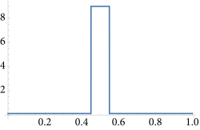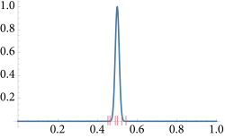
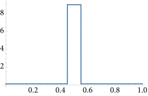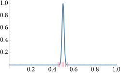图 2.2： （a）一个在 \( [0,1] \) 大部分范围内接近零的窄高斯函数。如果使用方程（2.6）的基本蒙特卡罗估计器来积分这个函数，由于大多数样本的值接近零，因此方差相对较高。（b）一个大致近似该函数分布的概率密度函数（PDF）。如果使用这个 PDF 生成样本，方差会显著降低。（c）根据（b）生成的样本的代表性分布（representative distribution）。
然而，重要性采样如果使用不当的分布可能会增加方差。考虑使用下面这种分布
\[ p(x) = \begin {cases} 1.2 &\ x \in [0,0.4) \\ 0.2 &\ x \in [0.4,0.6) \\ 1.2 &\ x \in [0.6,1) \end {cases} \]
来估计高斯函数的积分。该 PDF 增加了在函数值接近零的地方采样的概率，并减少了在其幅度较大时采样的概率。
这个概率密度函数不仅在被积函数较大时生成的样本更少，而且当它生成时，由于在该区域 \( p(x)=0.4 \)，蒙特卡洛估计器中的 \( f(x)/p(x) \) 值会特别高。结果是方差大约比均匀采样高 \( 5.4 \) 倍，并且比上述更好的概率密度函数高近 \( 36 \) 倍。在渲染的蒙特卡罗积分背景下，评估被积函数通常涉及追踪光线的开销，因此希望最小化采样数量；使用劣质采样分布并通过评估更多样本来弥补这一点并不是一个令人满意的选择。
2.2.3 多重重要性采样（Multiple Importance Sampling）
我们经常会遇到两个或多个函数相乘的积分：\( \int f_a(x)f_b(x) \text{d}x \) 。通常可以为各个因子(factors)单独推导出重要性采样策略，但无法推导出与它们的乘积相类似的策略。这种情况在涉及光传输相关的积分中尤其常见，例如在光传输方程（1.1）中 BSDF、入射辐射和余弦因子的乘积。
要理解将蒙特卡罗方法应用于此类乘积所面临的挑战，暂时假设我们有两个采样分布 \( p_a \) 和 \( p_b \) ，它们与 \( f_a \) 和 \( f_b \) 的分布完全匹配。（在实际情况中，这通常不会成立。）使用方程（2.7）的蒙特卡罗估计量，我们有两个选择：我们可以使用 \( p_a \) 进行抽样，这样得到的估计量为
\[
\frac{f(X)}{p_a(X)} = \frac{f_a(X)f_b(X)}{p_a(X)} = cf_b(X)
\]
其中 \( c \) 是一个常数，等于 \( f_a \) 的积分，因为 \( p_a(x) \propto f_a(x) \) 。该估计量的方差与 \( f_b \) 的方差成正比，而 \( f_b \) 的方差可能本身就很高。†（请注意，方程 (2.8) 中方差的定义并不排除计算函数自身的方差。） 相反，我们可能会从 \( p_b \) 中抽样，尽管这样做会给我们一个方差与 \( f_a \) 的方差成正比的估计量，而 \( f_a \) 的方差同样可能很高。在更常见的情况下，抽样分布仅大致匹配其中一个因子，情况通常会更糟。
遗憾的是，从每个分布中取一些样本，然后对两个估计量取平均，这种显而易见的解决方案并没有好多少。由于方差是可加的，一旦方差渗入一个估计量，我们无法通过将其与另一个低方差估计量相加来消除它。
多重重要性采样（MIS）正是针对这个问题，提供了一种易于实现的方差减少技术。基本思想是，在估计积分时，我们应该从多个采样分布中抽取样本，选择这些分布的目的是希望至少有一个能够合理地匹配被积函数的形状，即使我们不知道具体是哪一个。MIS 随后提供了一种方法来加权每种技术的样本，从而消除由于被积函数值与采样密度之间的不匹配而导致的大方差峰值。甚至鼓励使用仅考虑不寻常特殊情况的专门采样程序，因为在这些情况发生时，它们能够减少方差，而一般来说成本相对较低。
有两个采样分布 \( p_a \) 和 \( p_b \) ，从每个分布中各取一个样本 \( X \sim p_a \) 和 \( Y \sim p_b \) ，MIS 蒙特卡罗估计量为
\[
w_a(X) \frac{f(X)}{p_a(X)} + w_b(Y) \frac{f(Y)}{p_b(Y)}
\]
其中 \( w_a \) 和 \( w_b \) 是加权函数，选择它们的来使得该估计量的期望值等于 \( f(x) \) 的积分值。
更一般地说，给定 \( n \) 个采样分布 \( p_i \) ，从第 \( i \) 个分布中抽取 \( n_i \) 个样本 \( X_{i,j} \) ，MIS 蒙特卡罗估计量为
\[
F_n = \sum_{i=1}^{n} \frac{1}{n_i} \sum_{j=1}^{n_i} w_i(X_{i,j}) \frac{f(X_{i,j})}{p_i(X_{i,j})}
\]
（估计量无偏的加权函数的完整条件是，当 \( f(x) \neq 0 \) 、 \( \sum_{i=1}^{n} w_i(x) = 1 \) 时，它们的和为 1，并且如果 \( p_i(x) = 0 \) ，则 \( w_i(x) = 0 \) 。）
设置 \( w_i(X) = 1/n \) 对应于对各种估计量求和的情况，我们已经看到这是一种降低方差的无效方法。如果加权函数在相应的采样技术与被积函数匹配良好时相对较大，而在不匹配时相对较小，这样可以减少高方差样本的贡献，将会更好。
在实践中，权重函数的一个良好选择是 平衡启发式（balance heuristic） 方法，它试图通过考虑样本生成的所有不同方式来实现这一目标，而不仅仅是用于生成样本的特定方式。对于第 \( i \) 种采样技术的平衡启发式权重函数是
\[
w_i(x) = \frac{n_i p_i (x)}{\sum_{j} n_j p_j(x)}
\]
通过平衡启发式和我们从两种抽样技术中各取一个样本的样本，方程（2.13）的估计量计算结果为
\[
\frac{f(X)}{p_a(X) + p_b(X)} + \frac{f(Y)}{p_a(Y) + p_b(Y)}
\]
每次对 \( f \) 的评估都要除以对应样本的所有概率密度函数（PDF）的总和，而不仅仅是生成样本的那个。因此，如果 \( p_a \) 在 \( p_b \) 具有更高概率的点生成了一个低概率的样本，那么除以 \( p_a(X) + p_b(X) \) 会减少该样本的贡献。实际上，这样的样本在从 \( p_a \) 中抽样时被降低权重，因为与 \( p_b \) 相关的抽样技术在积分域的相应点上更为有效。只要其中一种抽样技术在抽样函数值较大的点上具有合理的概率，MIS 权重就能显著降低方差。
BalanceHeuristic() 计算了方程 (2.14) 在两个分布 \( p_a \) 和 \( p_b \) 的特定情况下的结果。我们在 pbrt 中不需要更一般的多分布情况。
/** 采样内联函数（Sampling Inline Functions） */
Float BalanceHeuristic(int nf, Float fPdf, int ng, Float gPdf) {
return (nf * fPdf) / (nf * fPdf + ng * gPdf);
}
在实践中，幂启发式（power heuristic） 通常会进一步减少方差。对于指数（exponent） \( \beta \) ，幂启发式是
\[ w_i(x) = \frac{(n_i p_i (x))^{\beta}}{\sum_{j} (n_j p_j (x))^{\beta}} \]
注意，幂启发式与平衡启发式具有相似的形式，但它进一步减少了相对低概率的贡献。我们的实现中硬编码了 \( \beta = 2 \) ；该参数值在实践中通常效果良好。
/** 采样内联函数（Sampling Inline Functions） */
Float PowerHeuristic(int nf, Float fPdf, int ng, Float gPdf) {
Float f = nf * fPdf, g = ng * gPdf;
return Sqr(f) / (Sqr(f) + Sqr(g));
}
多重重要性采样即使在不从所有分布中抽样的情况下也可以应用。这种方法被称为 单样本模型（single sample model） 。我们在这里不包括推导，但可以证明，给定一个被积函数 \( f(x) \) ，如果从一组抽样技术中以概率 \( q_i \) 选择了一种抽样技术 \( p_i \) ，并从 \( p_i \) 中抽取了一个样本 \( X \) ，那么 单样本估计量（single sample estimator）
\[
\frac{w_i(X)}{q_i} \frac{f(X)}{p_i(X)}
\]
提供了积分的无偏估计。对于单样本模型，平衡启发式是可证明的最优（provably optimal）。
多重重要性采样的一个缺点是，如果其中一种采样技术与被积函数非常匹配，MIS 可能会略微增加方差。对于渲染程序，MIS 几乎总是值得的，因为它在可能具有高方差的情况下提供了方差减少。
多重重要性采样补偿（MIS Compensation）
多重重要性采样通常使用各自有效的概率分布来对被积函数进行重要性采样，确保在被积函数非零的任何地方都有非零的生成样本概率。然而，当使用多重重要性采样时，并不要求所有概率密度函数在函数值非零的地方都为非零；只需其中一个为非零即可。
这一观察促使了一种称为 MIS 补偿（MIS compensation） 的技术的发展，该技术可以进一步减少方差。其动机在于，如果所有的采样分布都将一些概率分配给积分函数值较小的采样区域，那么通常情况下，该积分函数的该区域最终会被过度采样，而积分函数值较高的区域则会被采样不足。
MIS 补偿基于一个理念，即对一个或多个（但不是全部）概率分布进行锐化——例如，通过调整它们在之前低概率区域的概率为零。一个新的采样分布 \( p' \) 可以例如被定义为
\[
p'(x) = \frac{\max(0,p(x) - \delta)}{\int \max(0, p(x) - \delta) \text{d} x}
\]
对于某个固定值 \( \delta \) 。
这种技术在 表格化采样分布（tabularized sampling distributions） 的情况下特别容易应用。在第 12.5 节中，它被有效地用于采样环境地图光源。
2.2.4 俄罗斯轮盘赌（Russian Roulette）
俄罗斯轮盘赌是一种可以通过跳过对对最终结果贡献较小的样本的评估来提高蒙特卡罗估计效率的技术。在渲染中，我们通常有以下形式的估计器
\[
\frac{f(X)v(X)}{p(X)}
\]
在这里，积分被积函数由一些容易评估的因子 \( f(X) \) 组成（例如，与表面如何散射光线相关的因子），以及一些评估成本较高的因子，例如需要追踪光线的二元可见性因子（binary visibility factor） \( v(X) \) 。在这些情况下，评估估计量的大部分计算开销集中在 \( v \) 上。
如果 \( f(x) \) 为零，显然值得跳过评估 \( v(X) \) 的工作，因为它的值不会影响估计量的值。然而，如果我们也跳过评估 \( f(x) \) 小但非零的估计量，那么我们将引入估计量的偏差，并系统性地低估被积函数的值。俄罗斯轮盘赌解决了这个问题，使得在 \( f(x) \) 的值小但不一定为 0 时也可以跳过光线追踪，同时仍然能够平均计算出正确的值。
为了应用俄罗斯轮盘赌，我们选择一些终止概率 \( q \) 。这个值几乎可以以任何方式选择；例如，它可以基于对特定样本所选积分函数值的估计，随着积分函数值变小而增加。当概率为 \( q \) ，该估计量不会针对特定样本进行评估，而是使用某个常数值 \( c \) 代替（通常使用 \( c=0 \) ）。当概率为 \( 1-q \) ，估计量仍然会被评估，但会被加权因子 \( 1/(1-q) \) 加权，这有效地补偿了被跳过的样本。
我们有了新的估计器
\[ F' = \begin {cases} \frac{F-qc}{1-q} & \xi > q \\ c & otherwise \\ \end {cases} \]
很容易看出，它的期望值与原始估计量的期望值相同：
\[
E[F'] = (1-q) \left( \frac{E[F] - qc}{1 - q} \right) + qc = E[F]
\]
俄罗斯轮盘赌从不减少方差。事实上，除非以某种方式 \( c = F \) ，否则它总是会增加方差。然而，如果选择的概率使得那些可能对最终结果贡献较小的样本被跳过，它确实提高了蒙特卡罗效率。
2.2.5 分裂（Splitting）
俄罗斯轮盘赌减少了样本数量，而分裂则通过在多维积分的某些维度上增加样本数量，来提高效率。作为一个例子，考虑一个一般形式的积分
\[
\int_{A} \int_{B} f(x,y)\text{d}x \text{d}y
\]
使用标准重要性采样估计器，我们可能从独立分布 \( X_i \sim p_x \) 和 \( Y_i \sim p_y \) 中抽取 \( n \) 个样本，并计算
\[
\frac{1}{n} \sum_{i=1}^{n} \frac{f(x_i,Y_i)}{p_x(X_i)p_y(Y_i)}
\]
分裂使我们能够形式化在 \( A \) 中每个样本的 \( B \) 积分时取多个样本的想法。通过分裂，我们可能为每个样本 \( X_i \) 取 \( m \) 个样本 \( Y_{i,j} \) ，从而得到估计量
\[
\frac{1}{n} \sum_{i=1}^{n} \frac{1}{m} \sum_{j=1}^{m} \frac{f(X_i,Y_{i,j})}{p_x(X_i)p_y(Y_{i,j})}
\]
如果可以对每个 \( X_i \) 评估 \( f(X_{i,\cdot}) \) ，那么我们可以比使用方程（2.18）所取的 \( nm \) 个独立 \( X_i \) 值更有效地计算总共 \( nm \) 个样本。
在渲染的一个例子中，方程（2.17）形式的积分被用来计算图像中像素的颜色：在像素区域 \( A \) 上进行积分，在像素 \( x \) 中的每个点，向场景中追踪一条光线，并使用对追踪一条或多条光线的半球的积分（此处用 \( B \) 表示）计算交点处的反射辐射。通过分裂，我们可以为每个照明积分获取多个样本，通过摊销从相机追踪初始光线的成本来提高效率。
2.3 使用反演法进行采样（Sampling Using the Inversion Method）
为了评估方程（2.7）中的蒙特卡洛估计，有必要能够从选定的概率分布中抽取随机样本。实现这一点有多种技术，但对于渲染而言，最重要的方法之一是 反演法（inversion method） ，它通过反转分布的累积分布函数（CDF）来将 \( [0,1) \) 的均匀样本映射到给定的一维概率分布。（在第 2.4.2 节中，我们将看到如何通过鉴于一系列一维分布将这种方法应用于高维函数。）当与第 8 章中定义的采样器生成的分布良好的样本一起使用时，反演法可以特别有效。在本书的其余部分，我们将看到反演法在从 BSDF、光源、相机和散射介质定义的分布中生成样本的应用。
2.3.1 离散情况（Discrete Case）
方程（2.2）导出了一个使用均匀随机变量从一组离散概率中采样的算法。假设我们有一个过程，其可能的四个结果的概率分别为 \( p_1 \) 、 \( p_2 \) 、 \( p_3 \) 和 \( p_4 \) ，总和为 \( \sum_{i} p_i = 1 \) 。相应的概率质量函数（PMF）如图 2.3 所示。

图 2.3：四个事件的 PMF ，每个事件的概率为 \( p_i \) 。 它们的概率之和 \( \sum_{i} p_i \) 必然为 1。
方程（2.2）中的和与累积分布函数（CDF）的定义之间存在直接联系。离散的 CDF 由以下公式给出
\[
P_i = \sum_{j=1}^{i} p_j
\]
可以通过将概率质量函数（PMF）的条形图从左侧开始逐个叠加来图形化解释。这一思想在图 2.4 中展示。
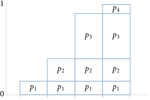图 2.4：离散 CDF ，对应于图 2.3 中的 PMF。 每一列的高度由其所代表事件的 PMF 加上之前事件的 PMF 之和给出， \( P_i = \sum_{j=1}^{i} p_j \) 。
方程 (2.2) 的采样操作可以表示为寻找 \( i \) 使得
\[
P_{i-1} \leq \xi < P_i
\]
可以将其解释为反转 CDF \( P \) ，该技术也因此得名。继续图形解释，这种采样操作可以被视为将事件的概率投影到纵坐标的 \( [0,1] \) 范围上，并使用随机变量 \( \xi \) 在它们之间进行选择（见图 2.5）。显然，这是从正确的分布中抽取的——均匀样本击中任何特定条形的概率恰好等于该条形的高度。
SampleDiscrete() 函数实现了该算法。它接受一组不一定归一化的非负权重、一个均匀随机样本 u ，并返回一个权重的索引，其概率与该权重成正比。它执行的采样操作对应于寻找 \( i \) 使得
\[
\sum_{i=1}^{i-1} w_j \leq \xi \sum w_i < \sum_{j=1}^{i} w_j
\]
这对应于将方程（2.19）乘以 \( \sum w_i \) 。（不要求归一化的 PMF 对于调用代码来说是一种便利，并且在函数的实现中并没有太多额外的工作。）提供了两个可选参数，以返回样本的 PMF 值以及一个新的均匀随机样本，该样本源自 u 。
该函数旨在处理仅需从权重分布中生成单个样本的情况；如果需要多个样本，则通常应使用将在 A.1 节中介绍的 AliasTable ：它在经过一个 \( O(n) \) 的预处理步骤后以 \( O(1) \) 时间生成样本，而 SampleDiscrete() 则需要为每个生成的样本花费 \( O(n) \) 时间。
/** 采样内联函数（Sampling Inline Functions） */
int SampleDiscrete(pstd::span<const Float> weights, Float u, Float *pmf,
Float *uRemapped) {
/** 处理离散采样的空权重（Handle empty **weights** for discrete sampling）*/
/** 计算权重的总和（Compute sum of **weights**）*/
/** 计算重缩放后的 u' 样本（Compute rescaled u' sample）*/
/** 在权重中找到 u' 对应的偏移量（Find offset in **weights** corresponding to u'）*/
/** 计算 PMF 并重新映射 u 的值（如有必要）（Compute PMF and remapped u value, if necessary）*/
return offset;
}
首先处理 weights 为空的情况，以便后续代码可以假设至少存在一个权重。
/** 处理离散采样的空权重（Handle empty **weights** for discrete sampling）*/
if (weights.empty()) {
if (pmf)
*pmf = 0;
return -1;
}
采样第 i 个元素的离散概率由 weights[i] 除以所有权重值的总和给出。因此，该函数接下来计算该总和。
/** 计算权重的总和（Compute sum of **weights**）*/
Float sumWeights = 0;
for (Float w : weights)
sumWeights += w;
根据方程（2.20），均匀样本 u 通过权重之和进行缩放，以获得值 \( u' \) ，该值将用于从中进行采样。尽管提供的 u 值应在范围 \( [0,1) \) 内，但由于浮点数舍入的原因， u * sumWeights 可能等于 sumWeights 。在这种罕见情况下， up 被降低到下一个较低的浮点值，以便后续代码可以假设 up < sumWeights 。
/** 计算重缩放后的 u' 样本（Compute rescaled u' sample）*/
Float up = u * sumWeights;
if (up == sumWeights)
up = NextFloatDown(up);
我们现在想要找到权重数组 \( i \) 中最后一个使随机样本 up 大于 \( i \) 之前权重总和的偏移量。采样是通过从数组开头开始的线性搜索进行的，累积权重总和，直到该总和大于 \( u' \)。
/** 在权重中找到 u' 对应的偏移量（Find offset in **weights** corresponding to u'）*/
int offset = 0;
Float sum = 0;
while (sum + weights[offset] <= up)
sum += weights[offset++];
在 while 循环终止后，提供的样本 u 中的随机性仅用于选择数组中的一个元素——一个离散选择。样本在包围它的 CDF 值之间的偏移量本身是一个均匀随机值，可以很容易地重新映射到 \( [0,1) \) 。如果请求，该值将在 uRemapped 中返回给调用者。
有人可能会问：为什么要这样做？生成均匀随机变量并不太困难，因此提供这个选项的好处似乎微不足道。然而，对于第 8 章中一些高质量的样本生成算法，以这种方式重用样本而不是生成新样本可能是有益的——因此，提供了这个选项。
/** 计算 PMF 并重新映射 u 的值（如有必要）（Compute PMF and remapped **u** value, if necessary）*/
if (pmf)
*pmf = weights[offset] / sumWeights;
if (uRemapped)
*uRemapped = std::min((up - sum) / weights[offset], OneMinusEpsilon);
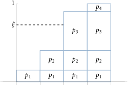图 2.5： 为了使用反演方法从图 2.3 中的 PMF 描述的分布中抽取样本，标准均匀随机变量（canonical uniform random variable）被绘制在纵轴上。根据构造， \( \xi \) 的水平延伸线将以概率 \( p_i \) 与表示第 \( i \) 个结果的框相交。如果为一组随机变量 \( \xi \) 选择了相应的事件，则结果事件的分布将根据 PMF 进行分布。
2.3.2 连续情况（Continuous Case）
为了将这一技术推广到连续分布，考虑当离散可能性的数量趋近于无穷大时会发生什么。图 2.3 中的概率质量函数（PMF）变为概率密度函数（PDF），而图 2.4 中的累积分布函数（CDF）则变为其积分。投影过程仍然相同，但它具有一个方便的数学解释——它表示对 CDF 进行反转并在 \( \xi \) 处评估逆值。
更准确地说，我们可以通过以下步骤从 PDF \( p(X) \) 中抽取样本 \( X_i \) ：
-
对 PDF 积分以找到 CDF \( P(x) = \int_{0}^{x} p(x') \text{d} x' \).†（一般来说，积分的下限应该是 -∞，不过如果 p(x) = 0 且 x < 0，那么这个方程是等效的。）
-
获取一个均匀分布的随机数 \( \xi \) 。
-
通过求解 \( \xi = P(X) \) 来为 \( X \) 生成一个样本；换句话说，找到 \( X = P^{-1}(\xi) \) 。
我们将用一个简单的例子来说明这个算法；有关其在多个附加函数中的应用，请参见 A.4 节。
采样线性函数（Sampling a Linear Function）
函数 \( f(x) = (1-x)a + xb \) 在 \( [0,1] \) 上定义，在 \( x = 0 \) 的 \( a \) 和 \( x = 1 \) 的 \( b \) 之间线性插值。这里我们将假设 \( a,b \geq 0 \) ；章节末尾有一个练习讨论了更一般的情况。
/** 数学内联函数（Math Inline Functions） */
Float Lerp(Float x, Float a, Float b) {
return (1 - x) * a + x * b;
}
该函数的积分为 \( \int_{0}^{1} f(x) \text{d}x = (a+b)/2 \) ，这给出了归一化常数 \( 2/(a+b) \) 以定义其 PDF,
\[
p(x) = \frac{2f(x)}{a+b}
\]
/** 采样内联函数（Sampling Inline Functions） */
Float LinearPDF(Float x, Float a, Float b) {
if (x < 0 || x > 1)
return 0;
return 2 * Lerp(x, a, b) / (a + b);
}
对 PDF 积分得到 CDF，其为二次函数
\[
P(x) = \frac{x(a(2-x) + bx)}{a+b}
\]
反转 \( \xi = P(X) \) 给出了一个采样方案
\[
X = \frac{a - \sqrt{(1 - \xi)a^2 + \xi b^2}}{a-b}
\]
请注意，在这种形式下，当 \( a=b \) 时会给出一个不确定的结果。更稳定的方程
\[ X = \frac{\xi(a+b)}{a+\sqrt{(1-\xi)a^2 + \xi b^2}} \]
计算出相同的结果，并在此实现。
/** 采样内联函数（Sampling Inline Functions） */
Float SampleLinear(Float u, Float a, Float b) {
if (u == 0 && a == 0) return 0;
Float x = u * (a + b) / (a + std::sqrt(Lerp(u, Sqr(a), Sqr(b))));
return std::min(x, OneMinusEpsilon);
}
需要注意的一个细节是返回语句中的 std::min 调用，它确保返回的值在范围 \( [0,1) \) 内。尽管采样算法在给定 \( \xi \in [0,1) \) 的情况下会生成该范围内的值，但舍入误差可能导致结果等于 1。由于一些调用采样例程的代码依赖于返回值在指定范围内，因此采样例程必须确保这一点。
除了提供从分布中采样和计算样本的 PDF 的函数外， pbrt 通常还提供反转采样操作的函数，返回与值 \( x \) 对应的随机样本 \( \xi \) 。在一维情况下，这相当于评估 CDF。
/** 采样内联函数（Sampling Inline Functions） */
Float InvertLinearSample(Float x, Float a, Float b) {
return x * (a * (2 - x) + b * x) / (a + b);
}
2.4 分布之间的转换（Transforming between Distributions）
在描述反演方法时，我们引入了一种通过以特定方式转换典型均匀随机变量来生成符合某种分布的样本的技术。在这里，我们将研究一个更一般的问题，即当我们使用函数 \( f \) 将来自任意分布的样本转换为某种其他分布时，结果是如何分布的。理解这种转换的影响是有用的，尽管在这里我们将重点关注它们如何使我们能够推导出多维采样算法。
假设我们有一个从某个 CDF 为 \( P(x) \) 的 PDF \( p(x) \) 中抽取的随机变量 \( X \) 。给定一个函数 \( f(x) \) ，其具有 \( y=f(x) \) ，如果我们计算 \( Y = f(X) \) ，我们希望找到新随机变量 \( Y \) 的分布。在这种情况下，函数 \( f(x) \) 必须满足一对一变换；如果多个 \( x \) 值映射到相同的 \( y \) 值，那么就不可能明确描述特定 \( y \) 值的概率密度。 \( f \) 是一对一的直接结果是其导数必须严格大于 0 或严格小于 0，这意味着对于给定的 \( x \) ，
\[ \Pr\{ Y \leq f(x) \} = \Pr\{ X \leq x \} \]
根据 CDF 的定义，方程（2.3），我们可以看出
\[
P_f(y) = P_f(f(x)) = P(x)
\]
这个 CDF 之间的关系直接导致了它们的 PDF 之间的关系。如果我们假设 \( f \) 的导数大于 0，进行微分得到
\[ p_f(y) \frac{\text{d}f}{\text{d}x} = p(x) \]
因此
\[ p_f(y) = \left( \frac{\text{d}f}{\text{d}x} \right)^{-1} p(x) \]
一般来说， \( f \) 的导数要么严格为正，要么严格为负，密度之间的关系是
\[ p_f(y) = \left| \frac{\text{d}f}{\text{d}x} \right|^{-1} p(x) \]
我们如何使用这个公式？假设在定义域 \( [0,1] \) 上的 \( p(x) = 2x \) ，并设 \( f(x) = \sin{x} \) 。随机变量 \( Y = f(X) \) 的 PDF 是什么？因为我们知道 \( \text{d}f/\text{d}x = \cos{x} \) ，
\[
p_f(y) = \frac{p(x)}{|\cos{x}|} = \frac{2x}{\cos{x}} = \frac{2\arcsin(y)}{\sqrt{1 - y^2}}
\]
这个过程可能看起来有些反常——通常我们有一些想要从中采样的 PDF，而不是给定变换。例如，我们可能有从某个 \( p(x) \) 中抽取的 \( X \)，并希望从某个分布 \( p_f(y) \) 计算 \( Y \) 。我们应该使用什么变换？我们所需要的只是 CDF 相等，或者 \( P_f(y) = P(x) \) ，这立即给出了变换
\[
f(x) = P_f^{-1}(P(x))
\]
这是反演法的一个概括，因为如果 \( X \) 在 \( [0,1) \) 上均匀分布，那么 \( P(x) = x \) ，我们有与之前介绍的相同的过程。
2.4.1 多维中的变换（Transformation in Multiple Dimensions）、
在一般的 \( d \) 维情况下，类似的推导给出了不同密度之间的类比关系。我们在这里不展示推导；它遵循与一维情况相同的形式。假设我们有一个 \( d \) 维随机变量 \( X \) ，其密度函数为 \( p(x) \) 。现在设 \( Y=T(X) \) ，其中 \( T \) 是一个双射（bijection）。在这种情况下，密度之间的关系为
\[
p_T(y) = p_T(T(x)) = \frac{p(x)}{|J_T(x)|}
\]
其中 \( |J_T| \) 是 \( T \) 的雅可比矩阵（Jacobian matrix）的行列式的绝对值，
\[ \left( \begin{matrix} {\partial T_1 / \partial x_1}&{\cdots}&{\partial T_1 / \partial x_d} \\ {\vdots}&{\ddots}&{\vdots} \\ {\partial T_d / \partial x_1}&{\cdots}&{\partial T_d / \partial x_d} \\ \end{matrix} \right) \]
其中下标索引 \( T(x) \) 和 \( x \) 的维度。
对于方程（2.21）的二维示例，极坐标变换将笛卡尔坐标 \( (x,y) \) 与极半径和角度相关联，
\[ x = r \cos{\theta} \] \[ y = r \sin{\theta} \]
假设我们从某个密度 \( p(r,\theta) \) 中抽取样本。那么对应的密度 \( p(x,y) \) 是什么？该变换的雅可比行列式为
\[ J_T = \left( \begin {matrix} \frac{\partial x}{\partial r} & \frac{\partial x}{\partial \theta} \\ \frac{\partial y}{\partial r} & \frac{\partial y}{\partial \theta} \\ \end {matrix} \right) = \left( \begin {matrix} \cos{\theta} & -r\sin{\theta} \\ \sin{\theta} & r\cos{\theta} \\ \end {matrix} \right) \]
行列式为 \( r(\cos^2\theta + \sin^2\theta) = r \) 。所以， \( p(x,y) = p(r,\theta)/r \) 。当然，这与我们通常想要的相反——通常我们的采样策略是想从笛卡尔坐标系开始，将其转换为极坐标系。在这种情况下，我们将会有
\[
p(r,\theta) = rp(x,y)
\]
在三维空间中，给定方向的球坐标表示，方程（[3.7](../3_Geometry_and_Transformations/3_8_Spherical_Geometry.md#equation-3-7），该变换的雅可比行列式为 \( |J_T| = r^2\sin{\theta} \) ，因此相应的密度函数为
\[
p(r,\theta,\phi) = r^2\sin\theta p(x,y,z)
\]
这种变换很重要，因为它帮助我们将方向表示为单位球面上的点 \( (x,y,z) \) 。
2.4.2 具有多维变换的采样（Sampling with Multidimensional Transformations）
假设我们有一个二维联合密度函数 \( p(x,y) \) ，我们希望从中抽取样本 \( (X,Y) \) 。如果这些密度是独立的，它们可以表示为一维密度的乘积
\[
p(x,y) = p_x(x)p_y(y)
\]
而随机变量 \( (X,Y) \) 可以通过独立地从 \( p_x \) 中抽样 \( X \) 和从 \( p_y \) 中抽样 \( Y \) 来找到。然而，许多有用的密度并不是可分离的，因此我们将介绍在一般情况下如何从多维分布中抽样的理论。
给定一个二维密度函数，边缘密度函数（marginal density function） \( p(x) \) 是通过“整合出（integrating out）”其中一个维度获得的：
\[
p(x) = \int p(x,y) \text{d}y
\]
这可以被视为仅针对 \( X \) 的密度函数。更准确地说，它是特定的 \( x \) 在 所有 可能的 \( y \) 值上的平均密度。
如果我们可以抽取一个样本 \( X \sim p(x) \) ，那么——使用方程（2.1）——我们可以看到，为了抽取 \( Y \) ，我们需要从条件概率密度 \( Y \sim p(y|x) \) 中抽样，该密度由以下公式给出：
\[
p(y|x) = \frac{p(x,y)}{\int p(x,y) \text{d}y}
\]
从高维分布中进行采样可以以类似的方式进行，整合出所有维度中除了一个维度的部分，采样那个维度，然后对剩余的条件分布应用相同的技术，该条件分布的维度减少了一维。
采样双线性函数（Sampling the Bilinear Function）
双线性函数
\[
f(x,y) = (1-x)(1-y)w_0 + x(1-y)w_1 + y(1-x)w_2 + xyw_3
\]
在 \( [0,1]^2 \) 的四个角点处的四个值 \( w_i \) 之间进行插值。（ \( w_0 \) 位于 \( (0,0) \) ， \( w_1 \) 位于 \( (1,0) \) ， \( w_2 \) 位于 \( (0,1) \) ， \( w_3 \) 位于 \( (1,1) \) 。）经过积分和归一化后，我们可以发现其概率密度函数（PDF）是
\[
p(x,y) = \frac{4f(x,y)}{w_0 + w_1 + w_2 + w_3}
\]
/** 采样内联函数（Sampling Inline Functions） */
Float BilinearPDF(Point2f p, pstd::span<const Float> w) {
if (p.x < 0 || p.x > 1 || p.y < 0 || p.y > 1)
return 0;
if (w[0] + w[1] + w[2] + w[3] == 0)
return 1;
return 4 * ((1 - p[0]) * (1 - p[1]) * w[0] + p[0] * (1 - p[1]) * w[1] +
(1 - p[0]) * p[1] * w[2] + p[0] * p[1] * w[3]) /
(w[0] + w[1] + w[2] + w[3]);
}
该函数的两个维度并不是独立的，因此采样方法在采样结果条件分布之前先对边缘分布进行采样。
/** 采样内联函数（Sampling Inline Functions） */
Point2f SampleBilinear(Point2f u, pstd::span<const Float> w) {
Point2f p;
/** 对双线性边缘分布采样 y（Sample **y** for bilinear marginal distribution） */
/** 对双线性条件分布采样 x（Sample **x** for bilinear conditional distribution） */
return p;
}
我们可以选择 \( x \) 或 \( y \) 作为边缘分布。如果我们选择 \( y \) 并对 \( x \) 进行积分，我们发现
\[ \begin {align} p(y) = \int_{0}^{1} p(x,y) \text{d}x &= 2 \frac{(1-y)(w_0+w_1)+y(w_2+w_3)}{w_0+w_1+w_2+w_3} \\ &\propto (1-y)(w_0+w_1)+y(w_2+w_3) \end {align} \]
\( p(y) \) 在两个常数值之间执行线性插值，因此我们可以使用 SampleLinear() 从简化的比例函数中进行采样，因为它对相关的 PDF 进行了归一化。
/** 对双线性边缘分布采样 y（Sample **y** for bilinear marginal distribution） */
p.y = SampleLinear(u[1], w[0] + w[1], w[2] + w[3]);
应用方程（2.1），并再次消去公因子，我们得到
\[
p(x|y) = \frac{p(x,y)}{p(y)} \propto (1-x)[(1-y)w_0 + yw_2] + x[(1-y)w_1 + yw_3]
\]
可以在 \( x \) 中使用 SampleLinear() 进行采样。
/** 对双线性条件分布采样 x（Sample **x** for bilinear conditional distribution） */
p.x = SampleLinear(u[0], Lerp(p.y, w[0], w[2]), Lerp(p.y, w[1], w[3]));
由于双线性采样过程是基于两个一维线性采样操作的组合，因此可以通过反向应用这两个操作的逆来进行反演。
/** 采样内联函数（Sampling Inline Functions） */
Point2f InvertBilinearSample(Point2f p, pstd::span<const Float> w) {
return {InvertLinearSample(p.x, Lerp(p.y, w[0], w[2]),
Lerp(p.y, w[1], w[3])),
InvertLinearSample(p.y, w[0] + w[1], w[2] + w[3])};
}
请参见 A.5 节以获取更多多维采样算法的示例，包括在单位球体和半球上采样方向的技术、采样单位圆盘以及其他用于渲染的有用分布。
延伸阅读（Further Reading）
蒙特卡罗方法是在数字计算机发展后不久由斯坦尼斯瓦夫·乌拉姆和约翰·冯·诺依曼引入的（乌拉姆等，1947），尽管恩里科·费米似乎也独立发明了该方法（梅特罗波利斯，1987）。关于蒙特卡罗的早期论文是由梅特罗波利斯和乌拉姆撰写的（1949）。
关于蒙特卡罗积分，已经有许多书籍问世。Hammersley 和 Handscomb（1964）、Spanier 和 Gelbard（1969）以及 Kalos 和 Whitlock（1986）是经典参考文献。关于该主题的更近期书籍包括 Sobol（1994）、Fishman（1996）和 Liu（2001）的著作。我们还发现 Owen 的在编书籍（2019）是一个宝贵的资源。Motwani 和 Raghavan（1995）撰写了一本关于随机算法更广泛主题的优秀介绍。
在渲染中，大多数感兴趣的函数是非负的；对负函数应用重要性采样需要特别小心。一种简单的选择是定义一个与函数的绝对值成比例的采样分布。有关此类函数的更有效的采样方法，请参见 Owen 和 Zhou（2000）。
多重重要性采样是由 Veach 和 Guibas（Veach 和 Guibas 1995；Veach 1997）开发的。通常，使用每种采样技术会预先确定样本数量；有关自适应分配样本以减少方差的策略，请参见 Pajot 等人（2011）和 Lu 等人（2013）。Grittmann 等人（2019）跟踪了每种采样技术的方差，然后动态调整 MIS 权重。MIS 补偿方法是由 Karlík 等人（2019）开发的。
Sbert 及其合作者（2016, 2017, 2018）对 MIS 估计量进行了进一步的方差分析，并基于根据每种技术的方差和成本分配样本的方法进行了改进。Kondapaneni 等人（2019）考虑了 MIS 的推广，以包括负权重，并在该设置中推导出最优估计量。West 等人（2020）考虑了可用的连续采样技术的情况，并为该情况推导出最优的 MIS 估计量，而 Grittmann 等人（2021）在样本之间存在相关性时（例如，在双向光传输算法中）开发了改进的 MIS 估计量。
Heitz（2020）描述了一种基于反演的采样方法，当一维函数的累积分布函数（CDF）反演不可行时可以应用。该方法基于从一个近似于第一个函数的第二个函数中进行采样，然后使用第二个随机变量来调整样本，以匹配原始函数的分布。Anderson 等人（2017）描述了一种有趣的替代手动推导采样技术的方法，他们开发了一种特定领域的采样语言，在给定采样算法实现的情况下，概率会自动计算。他们通过简洁的实现展示了他们方法的有效性，涵盖了多种复杂的采样技术。
在 SampleLinear() 中使用的数值稳定采样技术是基于 Muller 方法（1956）的应用，来源于 Heitz（2020）。
在图形学中蒙特卡罗应用中，积分函数通常是多个因子的乘积，而没有适合整个乘积的采样分布。虽然多重重要性采样在这种情况下可以给出合理的结果，至少可以减少无效采样技术带来的方差，但仍然更倾向于对整个乘积进行采样。Talbot 等（2005）将 重要性重采样（importance resampling） 应用于这个问题，从某个分布中进行多次采样，然后根据与完整积分函数成比例的概率在这些样本中进行选择。最近，Hart 等（2020）提出了一种基于扭曲均匀样本的简单技术，可以用来近似乘积采样。有关此主题的更多信息，请参见第 13 章和第 14 章的“延伸阅读”部分，这些部分讨论了特定光传输算法背景下的乘积采样方法。
调试蒙特卡罗算法可能具有挑战性，因为决定其正确性的是它们的期望行为：很难判断特定样本的程序执行是否正确。统计测试可以是检查其正确性的有效方法。有关适用技术，请参见 Subr 和 Arvo（2007a）以及 Jung 等人（2020）的论文。
另见附录 A 中的“延伸阅读”部分，其中包含有关实现采样算法以及相关方法的信息。
参考文献（References）
- Anderson, L., T.-M. Li, J. Lehtinen, and F. Durand. 2017. Aether: An embedded domain specific sampling language for Monte Carlo rendering. ACM Transactions on Graphics (Proceedings of SIGGRAPH 2017) 36 (4), 99:1–16.
- Fishman, G. S. 1996. Monte Carlo: Concepts, Algorithms, and Applications. New York: Springer-Verlag.
- Grittmann, P., I. Georgiev, and P. Slusallek. 2021. Correlation-aware multiple importance sampling for bidirectional rendering algorithms. Computer Graphics Forum (Proceedings of Eurographics) 40 (2), 231–38.
- Grittmann, P., I. Georgiev, P. Slusallek, and J. Křivánek. 2019. Variance-aware multiple importance sampling. ACM Transactions on Graphics (Proceedings of SIGGRAPH Asia 2019) 38 (6), 152:1–9.
- Hammersley, J., and D. Handscomb. 1964. Monte Carlo Methods. New York: John Wiley.
- Hart, D., M. Pharr, T. Müller, W. Lopes, M. McGuire, and P. Shirley. 2020. Practical product sampling by fitting and composing warps. Computer Graphics Forum 39 (4), 149–58.
- Heitz, E. 2020. Can’t invert the CDF? The triangle-cut parameterization of the region under the curve. Computer Graphics Forum 39 (4), 121–32.
- Jung, A., J. Hanika, and C. Dachsbacher. 2020. Detecting bias in Monte Carlo renderers using Welch’s t-test. Journal of Computer Graphics Techniques (JCGT) 9 (2), 1–25.
- Kalos, M. H., and P. A. Whitlock. 1986. Monte Carlo Methods: Volume I: Basics. New York: Wiley.
- Karlík, O., M. Šik, P. Vévoda, T. Skřivan, and J. Křivánek. 2019. MIS compensation: Optimizing sampling techniques in multiple importance sampling. ACM Transactions on Graphics (Proceedings of SIGGRAPH Asia) 38 (6), 151:1–12.
- Kondapaneni, I., P. Vévoda, P. Grittmann, T. Skřivan, P. Slusallek, and J. Křivánek. 2019. Optimal multiple importance sampling. ACM Transactions on Graphics (Proceedings of SIGGRAPH) 37 (4), 37:1–14.
- Liu, J. S. 2001. Monte Carlo Strategies in Scientific Computing. New York: Springer-Verlag.
- Lu, H., R. Pacanowski, and X. Granier. 2013. Second-order approximation for variance reduction in multiple importance sampling. Computer Graphics Forum 32 (7), 131–36.
- Metropolis, N. 1987. The beginning of the Monte Carlo method. Los Alamos Science Special Issue 15, 125–30.
- Metropolis, N., and S. Ulam. 1949. The Monte Carlo method. Journal of the American Statistical Association 44 (247), 335–41.
- Motwani, R., and P. Raghavan. 1995. Randomized Algorithms. Cambridge, U.K.: Cambridge University Press.
- Muller, D. E. 1956. A method for solving algebraic equations using an automatic computer. Mathematical Tables and Other Aids to Computation 10 (56), 208–15.
- Owen, A. B. 1998. Latin supercube sampling for very high-dimensional simulations. Modeling and Computer Simulation 8 (1), 71–102.
- Owen, A. B. 2019. Monte Carlo theory, methods and examples. https://statweb.stanford.edu/ owen/mc/.
- Owen, A., and Y. Zhou. 2000. Safe and effective importance sampling. Journal of the American Statistical Association 95 (449), 135–43.
- Pajot, A., L. Barthe, M. Paulin, and P. Poulin. 2011. Representativity for robust and adaptive multiple importance sampling. IEEE Transactions on Visualization and Computer Graphics 17 (8), 1108–21.
- Ross, S. M. 2002. Introduction to Probability Models (8th ed.). San Diego: Academic Press.
- Sbert, M., and V. Havran. 2017. Adaptive multiple importance sampling for general functions. The Visual Computer 33, 845–55.
- Sbert, M., V. Havran, and L. Szirmay-Kalos. 2016. Variance analysis of multi-sample and one-sample multiple importance sampling. Computer Graphics Forum 35 (7), 451–60.
- Sbert, M., V. Havran, and L. Szirmay-Kalos. 2018. Multiple importance sampling revisited: Breaking the bounds. EURASIP Journal on Advances in Signal Processing 15, 1–15.
- Sobol, I. M. 1994. A Primer for the Monte Carlo Method. Boca Raton: CRC Press.
- Spanier, J., and E. M. Gelbard. 1969. Monte Carlo Principles and Neutron Transport Problems. Reading, Massachusetts: Addison-Wesley.
- Subr, K., and J. Arvo. 2007a. Statistical hypothesis testing for assessing Monte Carlo estimators: Applications to image synthesis. In Pacific Graphics ’97, 106–15.
- Talbot, J., D. Cline, and P. Egbert. 2005. Importance resampling for global illumination. Rendering Techniques 2005: 16th Eurographics Workshop on Rendering, 139–46.
- Ulam, S., R. D. Richtmyer, and J. von Neumann. 1947. Statistical methods in neutron diffusion. Los Alamos Scientific Laboratory Report LAMS-551.
- Veach, E. 1997. Robust Monte Carlo methods for light transport simulation. Ph.D. thesis, Stanford University.
- Veach, E., and L. J. Guibas. 1995. Optimally combining sampling techniques for Monte Carlo rendering. In Computer Graphics (SIGGRAPH ’95 Proceedings), 419–28.
- West, W., I. Georgiev, A. Gruson, and T. Hachisuka. 2020. Continuous multiple importance sampling. ACM Transactions on Graphics (Proceedings of SIGGRAPH) 39 (4), 136:1–12.
练习（Exercises）
② 1.编写一个程序，比较蒙特卡洛方法和一种或多种可替代的数值积分技术。将该程序结构化，以便于替换被积分的特定函数。验证不同技术在足够样本数量的情况下计算出相同的结果。修改您的程序，使其从均匀分布以外的分布中抽取样本用于蒙特卡洛估计，并验证在使用正确的估计量（方程（2.7））时仍能计算出正确的结果。（确保您使用的任何替代分布在选择任何使 \( f(x) > 0 \) 的 \( x \) 时具有非零概率。）
① 2.编写一个程序，计算给定函数的积分的无偏蒙特卡洛估计。通过进行一系列试验，逐步增加样本数量，并计算每个试验的均方误差，以估计估计值的方差。通过数值演示方差以 \( O(n) \) 的速率减少。
② 3.在第 2.3.2 节中，线性插值函数的采样算法隐含地假设 \( a,b \geq 0 \) ，因此 \( f(x) \geq 0 \) 。如果 \( f \) 为负，则重要性采样 PDF 应与 \( |f(x)| \) 成正比。将 SampleLinear() 及其相关的 PDF 和反演函数推广到处理 \( f \) 始终为负的情况，以及由于 \( a \) 和 \( b \) 具有不同符号而穿越零的情况。
3 几何与变换（Geometry and Transformations）
几乎所有非凡的图形程序都是建立在表示数学结构如点（points）、向量（vectors）和光线（rays）的几何类的基础之上的。由于这些类在系统中无处不在（ubiquitous），良好的抽象和高效的实现至关重要。本章介绍了 pbrt 的几何基础的接口和实现。请注意，这些并不是表示实际场景几何（如三角形（triangles）、球体（spheres）等）的类；那些类是第 6 章的主题。
3.1 坐标系（Coordinate Systems）
鉴于计算机图形学中的常识， pbrt 使用三个坐标值：\( x \) ，\( y \) 和 \( z \) 来表示三维空间中的点（points）、向量（vectors）和法向量（normal vectors）。这些值在没有定义空间原点并给出三个定义 \( x \) 、 \( y \) 和 \( z \) 轴的线性无关向量的 坐标系（coordinate system） 中是没有意义的。原点和三个向量统称为定义坐标系的 框架（frame） 。给定三维中的任意点或方向，其 \( (x,y,z) \) 坐标值取决于它与框架的关系。图 3.1 显示了一个在二维中说明这一概念的例子。

图 3.1： 在二维空间中，点 \( \text{p} \) 的坐标 \( (x,y) \) 由该点与特定二维坐标系的关系定义。这里显示了两个坐标系；相对于坐标轴用实线绘制的坐标系，该点的坐标可能为 \( (3,3) \) ，但相对于坐标轴为虚线的坐标系，其坐标可能为 \( (2,-4) \) 。无论哪种情况，二维点 \( \text{p} \) 在空间中的绝对位置是相同的。
在一般的 \( n \) 维情况下，一个框架的原点 \( \text{p}_\text{o} \) 及其 \( n \) 个线性无关的基向量（basis vectors）定义了一个 \( n \) 维 仿射空间（affine space） 。该空间中的所有向量 \( \mathbf{v} \) 都可以表示为基向量的线性组合。给定一个向量 \( \mathbf{v} \) 和基向量 \( \mathbf{v}_i \) ，存在一组唯一的标量值 \( s_i \) ，使得
\[
\mathbf{v} = s_1\mathbf{v}_1 + \cdots + s_n\mathbf{v}_n
\]
标量 \( s_i \) 是向量 \( \mathbf{v} \) 相对于基向量 \( \{ \mathbf{v}_1,\mathbf{v}_2,\cdots,\mathbf{v}_n \} \) 的 表示形式（representation），并且是我们与向量一起存储的坐标值。同样，对于所有点 \( \text{p} \) ，存在唯一的标量 \( s_i \) ，使得该点可以用原点 \( \text{p}_\text{o} \) 和基向量表示
\[
\text{p} = \text{p}_\text{o} + s_1\mathbf{v}_1 + \cdots + s_n\mathbf{v}_n
\]
注意，尽管点和向量在三维空间中都由 \( x \) 、 \( y \) 和 \( z \) 坐标表示，但它们是不同的数学实体，不能随意交换。
这种通过坐标系统定义点和向量的方式揭示了一个悖论：要定义一个框架，我们需要一个点和一组向量，但我们只能在特定框架下才能有意义地讨论点和向量。因此，在三维空间中，我们需要一个有原点 \( (0,0,0) \) 和基向量 \( (1,0,0) \) 、 \( 0,1,0 \) 和 \( 0,0,1 \) 的 标准框架（standard frame） 。所有其他框架将相对于这个我们称为 世界空间（world space） 的标准坐标系进行定义。
3.1.1 坐标系的左右手性（Coordinate System Handedness）
三条坐标轴可以以两种不同的方式排列，如图 3.2 所示。给定垂直的 \( x \) 和 \( y \) 坐标轴， \( z \) 轴可以指向两个方向中的一个。这两种选择被称为 左手坐标系（left-handed） 和 右手坐标系（right-handed）。两者之间的选择是任意的，但对系统中某些几何操作的实现有许多影响。 pbrt 使用左手坐标系。
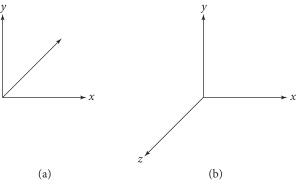图 3.2： （a）在左手坐标系中，当 \( x \) 轴指向右侧和 \( y \) 轴指向上方时， \( z \) 轴指向屏幕内。（b）在右手坐标系中， \( z \) 轴指向屏幕外。
3.2 n-元组基类（n-Tuple Base Classes）
pbrt 中表示二维和三维点、向量以及表面法线的类，均基于通用的 \( n \)-元组类，我们将从这些类的定义开始。这些类的定义以及继承自它们的类型都在 pbrt 源代码的 util/vecmath.h 和 util/vecmath.cpp 中定义。
尽管本节及接下来的几节定义的类在大多数方法实现中只有简单的逻辑，但它们比我们在 pbrt 中通常使用的更充分地利用了高级 C++编程技术。这样做减少了实现点、向量和法线类所需的冗余代码，并使它们在之后可以更好地扩展。如果您不是 C++专家，可以略过这些细节，专注于理解这些类提供的功能。或者，您也可以借此机会学习语言的更多细节。
Tuple2 和 Tuple3 都是模板类。它们不仅在存储坐标值的类型上进行了模板化，还在继承自它的类的类型上进行了模板化，以定义特定的二维或三维类型。如果之前没有见过，这是一种奇怪的构造：通常，继承就足够了，基类不需要知道子类的类型。†（这种继承形式在C++中通常被称为 奇异递归模板模式（curiously recurring template pattern）（CRTP）。）在这种情况下，让基类知道子类的类型使得编写操作子类型并返回子类型值的泛型方法成为可能，正如我们稍后将看到的。
/** Tuple2 定义 */
template <template <typename> class Child, typename T>
class Tuple2 {
public:
/** Tuple2 公有方法 */
/** Tuple2 公有成员 */
};
二维元组将其值存储为 x 和 y ，并将它们作为公有成员变量提供。每个变量后的一对大括号确保成员变量被 默认初始化（default initialized）；对于数值类型，会将其初始化为 0。
/** Tuple2 公有成员 */
T x{}, y{};
我们将专注于本节剩余部分的 Tuple3 实现。 Tuple2 除了少一个坐标，几乎完全相同。
/** Tuple3 定义 */
template <template <typename> class Child, typename T>
class Tuple3 {
public:
/** Tuple3 公有方法 */
/** Tuple3 公有成员 */
};
默认情况下，\( (x,y,z) \) 的值被设置为零，当然类的用户可以选择为每个分量提供初始值。如果用户确实提供了初始值，构造函数会使用 DCHECK() 宏检查这些值中是否有浮点数“不是一个数字（not a number）”（NaN）。在优化模式下编译时，该宏会从编译后的代码中消失，从而节省验证此情况的开销。NaN 几乎肯定表示系统中存在错误；如果某个计算生成了 NaN，我们希望尽快捕获它，以便更容易地隔离其来源。（有关 NaN 值的更多讨论，请参见第 6.8.1 节。）
/** Tuple3 公有方法 */
Tuple3(T x, T y, T z) : x(x), y(y), z(z) { DCHECK(!HasNaN()); }
接触过面向对象设计的读者可能会质疑我们将元组分量值公开访问的决定。通常，成员变量仅在其类内部可访问，外部代码如果希望访问或修改类的内容，必须通过一个明确定义的 API 来实现，该 API 可能包括选择器（selector）和修改器（mutator）函数。尽管我们对封装（encapsulation）原则表示同情，但在这里并不合适。选择器和修改器函数的目的是隐藏类的内部实现细节。在三维元组的情况下，隐藏其设计的基本部分没有任何好处，反而增加了使用它们的代码的复杂性。
/** Tuple3 公有成员 */
T x{}, y{}, z{};
HasNaN() 测试单独检查每个分量。
/** Tuple3 公有方法 */
bool HasNaN() const { return IsNaN(x) || IsNaN(y) || IsNaN(z); }
这两个元组类的另一种实现方式是使用一个单一的模板类，该类用一个整数参数作为维度，并用一个包含相应数量 T 值的数组来表示坐标。虽然这种方法通过消除对单独的二维和三维元组类型的需求来减少代码总量，但向量的各个分量无法像 v.x 那样被访问。我们认为，在这种情况下，向量实现中多一些代码是值得的，以换取对分量的更透明访问。然而，一些例程确实发现能够轻松遍历向量的分量是有用的；元组类还提供了一个 C++运算符来索引分量，例如给定实例 v ， v[0] == v.x 等。
/** Tuple3 公有方法 */
T operator[](int i) const {
if (i == 0) return x;
if (i == 1) return y;
return z;
}
如果元组类型不是 const ，则索引返回一个引用，允许设置元组的分量。
/** Tuple3 公有方法 */
T &operator[](int i) {
if (i == 0) return x;
if (i == 1) return y;
return z;
}
我们现在可以转向对存储在元组中的值进行算术运算的实现。它们的代码相当难懂。例如，下面是将两个某种类型的三元组相加的方法（例如， Child 可能是 Vector3 ，即即将出现的三维向量类型）。
/** Tuple3 公有方法 */
template <typename U>
auto operator+(Child<U> c) const -> Child<decltype(T{} + U{})> {
return {x + c.x, y + c.y, z + c.z};
}
在实现 operator+ 时，有几点需要注意。由于它是基于另一种类型 U 的模板方法，因此它支持将两个同为 Child 模板类型的元素相加，尽管它们可能使用不同的类型来存储其分量（这里代码中的 T 和 U ）。然而，由于该方法参数的基类型是 Child ，因此此方法只能相加两个相同子类型的值。如果该方法的参数改为 Tuple3 ，那么它将默认允许与任何继承自 Tuple3 的类型进行相加，这可能不是预期的。
在方法参数列表后的 -> 运算符右侧，返回类型的声明中有两个有趣的地方。首先，基本返回类型是 Child ；因此，如果将两个 Vector3 值相加，返回的值将是 Vector3 类型。这也消除了一类潜在的错误：如果返回了一个 Tuple3 ，那么就可以将两个 Vector3 相加并将结果赋值给一个 Point3 ，这显然是没有意义的。其次，返回类型的分量类型是基于类型为 T 和 U 的值相加后表达式的类型来确定的。因此，这个方法遵循 C++的标准类型提升规则：如果一个存储整数值的 Vector3 与一个存储 Float 的 Vector3 相加，那么结果是一个存储 Float 的 Vector3 。
出于篇幅考虑，我们将不在此处包含其他 Tuple3 的算术运算符，也不会包含对它们执行逐元素操作的各种其他工具函数。 Tuple2 和 Tuple3 提供的完整功能列表：
- 每个分量的基本算术运算符，包括加法、减法和取反，以及它们的“复合赋值（in place）”形式（例如，operator+= ）。
- 使用标量值按分量进行的乘法和除法，包括“复合赋值”变体。
- Abs(a) ，它返回一个值，其中包含元组类型的每个分量的绝对值。
- Ceil(a) 和 Floor(a) ，分别返回一个值，其中分量被向上或向下取整到最接近的整数值。
- Lerp(t, a, b) ，它返回线性插值的结果 (1-t)a + tb 。
- FMA(a, b, c) ，它接受三个元组并返回按分量融合乘加（fused multiply-add）的结果 a*b + c 。
- Min(a, b) 和 Max(a, b) ，分别返回给定元组的分量最小值和最大值。
- MinComponentValue(a) 和 MaxComponentValue(a) ，分别返回元组分量的最小值和最大值。
- MinComponentIndex(a) 和 MaxComponentIndex(a) ，分别返回具有最小值或最大值的元组元素的零基索引。
- Permute(a, perm) ，它根据索引数组返回元组的排列（permutation）。
- HProd(a) ，它返回横向积（horizontal product）——各个分量值相乘。
3.3 向量（Vectors）
pbrt 提供了基于相应二维和三维元组类的二维和三维向量类。这两种向量的类型都是由传入的向量元素参数的类型决定的，因此可以轻松实例化整数和浮点类型的向量。
/** Vector2 定义 */
template <typename T>
class Vector2 : public Tuple2<Vector2, T> {
public:
/** Vector2 公有方法 */
};
浮点数和整数类型的二维向量被广泛使用，因此我们将为这两种类型定义别名（aliases）。
/** Vector2* 定义 */
using Vector2f = Vector2<Float>;
using Vector2i = Vector2<int>;
与 Tuple2 类似，我们将不再包含关于 Vector2 的更多细节，因为它与 Vector3 非常相似，我们将对此进行更详细的讨论。
一个 Vector3 的元组分量值给出了它在被定义的空间的 \( x \) 、 \( y \) 和 \( z \)（在三维中）轴上的表示。三维向量 \( \mathbf{v} \) 的各个分量将写作 \( \mathbf{v}_x \) 、 \( \mathbf{v}_y \) 和 \( \mathbf{v}_z \) 。
/** Vector3 定义 */
template <typename T>
class Vector3 : public Tuple3<Vector3, T> {
public:
/** Vector3 公有方法 */
};
我们也为两种常用的三维向量类型定义了类型别名。
/** Vector3* 定义 */
using Vector3f = Vector3<Float>;
using Vector3i = Vector3<int>;
Vector3 提供了一些构造函数，包括一个默认构造函数（此处未显示）和一个允许直接指定每个分量值的构造函数。
/** Vector3 公有方法 */
Vector3(T x, T y, T z) : Tuple3<pbrt::Vector3, T>(x, y, z) {}
还有一个接受一个不同元素类型的 Vector3 的构造函数。它被限定为 explicit ，以防止无意中的隐式自动类型转换（automatic）；必须使用强制类型转换（cast）来显示指定类型。
/** Vector3 公有方法 */
template <typename U>
explicit Vector3(Vector3<U> v)
: Tuple3<pbrt::Vector3, T>(T(v.x), T(v.y), T(v.z)) {}
最后，还提供了用来转换即将介绍的 Point3 和 Normal3 类型的构造函数。它们的简单实现不在此处包含。这些构造函数也带有 explicit 关键字，以帮助确保它们仅在转换有意义的情况下使用。
/** Vector3 公有方法 */
template <typename U>
explicit Vector3(Point3<U> p);
template <typename U>
explicit Vector3(Normal3<U> n);
向量的加法和减法是通过 Tuple3 中的方法按分量逐一进行的。向量加法和减法的常见几何解释如图 3.3 和图 3.4 所示。向量的长度可以通过让各分量与标量逐一相乘或相除来改变。这些功能同样由 Tuple3 提供，因此在 Vector3 类中不需要任何额外的实现。
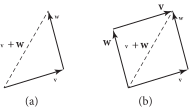图 3.3： (a) 向量加法: \( \mathbf{v} + \mathbf{w} \) 。(b) 注意 \( \mathbf{v} + \mathbf{w} \) 的和形成了由 \( \mathbf{v} \) 和 \( \mathbf{w} \) 组成的平行四边形的对角线，这显示了向量加法的交换性: \( \mathbf{v} + \mathbf{w} = \mathbf{w} + \mathbf{v} \) 。

图 3.4：（a）向量减法。（b）如果我们考虑由这两个向量形成的平行四边形，那么对角线由 \( \mathbf{w} - \mathbf{v} \)（虚线）和 \( - \mathbf{v} - \mathbf{w} \)（未显示）给出。
3.3.1 归一化与向量的长度（Normalization and Vector Length）
通常需要对向量进行 归一化（normalize）——即计算一个指向相同方向但只有单位长度的新向量。归一化的向量通常称为 单位向量（unit vector）。本书中对归一化向量的表示法是 \( \hat{\mathbf{v}} \)，即 \( \mathbf{v} \) 的归一化版本。在进行归一化之前，我们将先计算向量的长度。
向量的平方长度由其分量值的平方和给出。
/** Vector3 内联函数 */
template <typename T>
T LengthSquared(Vector3<T> v) { return Sqr(v.x) + Sqr(v.y) + Sqr(v.z); }
讲到计算向量的长度会引发一个困惑： Length() 函数应该返回什么类型？例如，如果 Vector3 存储的是整数类型，那么该类型可能不是一个合适的返回类型，因为向量的长度不一定是整数值。在这种情况下， Float 会是一个更好的选择，但是我们不应该对所有情况都标准化为 Float ，因为对于一组双精度值的 Vector3 ，我们也应该将长度返回为 double 。在我们继续深入高级 C++的旅程中，我们使用一种被称为 类型特征（type traits） 的技术来解决这个困境。
首先，我们定义一个通用的 TupleLength 模板类，该类包含一个类型定义 type 。默认值在这里设置为 Float 。
/** TupleLength 定义 */
template <typename T>
struct TupleLength { using type = Float; };
对于 double 类型的 Vector3，我们还提供了一种模板特化（template specialization），当给定的元素类型为 double 时，定义长度的类型为 double。
/** TupleLength 定义 */
template <>
struct TupleLength<double> { using type = double; };
现在我们可以实现 Length()，使用 TupleLength 来确定返回哪种类型。请注意，在函数声明完成之前，返回类型无法指定，因为在解析函数参数之前，类型 T 是未知的。因此，函数被声明为 auto ，返回类型在参数列表之后指定。
/** Vector3 内联函数 */
template <typename T>
auto Length(Vector3<T> v) -> typename TupleLength<T>::type {
using std::sqrt;
return sqrt(LengthSquared(v));
}
在这几行代码中还有一个 C++的细微之处：读者可能会想，为什么在 Length() 的实现中有一个 using std::sqrt 的声明，然后再调用 sqrt() ，而不是直接调用 std::sqrt() ？之所以使用这种结构，是因为我们希望能够使用分量类型 T 即使他们没有可用的 std::sqrt() 重载。例如，我们稍后用到的 Vector3 会使用即将介绍的 Interval 类来存储每个分量的数值区间。根据这里的代码写法，如果 std::sqrt() 支持类型 T ，则调用该函数的 std 变体。如果不支持，那么我们只要定义一个接受我们自定义类型的名为 sqrt() 的函数，就会使用该版本。
有了这些， Normalize() 的实现就变得简单了。使用 auto 作为返回类型可以确保，例如，如果 Normalize() 被调用时传入一个整数分量的向量，则根据除法运算符的类型转换，返回的向量类型具有 Float 类型的分量。
/** Vector3 内联函数 */
template <typename T>
auto Normalize(Vector3<T> v) { return v / Length(v); }
3.3.2 点积与叉积（Dot and Cross Product）
两个有用的向量运算是点积（也称为标量积或内积）和叉积。对于两个三维向量 \( \mathbf{v} \) 和 \( \mathbf{w} \) ，它们的 点积（dot product） \( ( \mathbf{v} \cdot \mathbf{w} ) \) 定义为
\[
\mathbf{v}_x \mathbf{w}_x + \mathbf{v}_y \mathbf{w}_y + \mathbf{v}_z \mathbf{w}_z
\]
并且实现如下。
/** Vector3 内联函数 */
template <typename T>
T Dot(Vector3<T> v, Vector3<T> w) {
return v.x * w.x + v.y * w.y + v.z * w.z;
}
从点积的定义可以直接得出一些基本性质。例如，有向量 \( \mathbf{u} \)，\( \mathbf{v} \)，\( \mathbf{w} \) 和一个标量 \( s \)，那么：
\[ \begin{align} ( \mathbf{u} \cdot \mathbf{v} ) &= ( \mathbf{v} \cdot \mathbf{u} ) \\ ( s\mathbf{u} \cdot \mathbf{v} ) &= s( \mathbf{u} \cdot \mathbf{v} ) \\ ( \mathbf{u} \cdot ( \mathbf{v} + \mathbf{w} ) ) &= ( \mathbf{u} \cdot \mathbf{v} ) + ( \mathbf{u} \cdot \mathbf{w} ) \end{align} \]
点积与两个向量的夹角有一个简单的关系：
\[ ( \mathbf{v} \cdot \mathbf{w} ) = \| \mathbf{v} \| \| \mathbf{w} \| \cos \theta \]
其中 \( \theta \) 是 \( \mathbf{v} \) 和 \( \mathbf{w} \) 之间的角度， \( \| \mathbf{v} \| \) 表示向量 \( \mathbf{v} \) 的长度。由此可知，当且仅当 \( \mathbf{v} \) 和 \( \mathbf{w} \) 垂直（perpendicular）时， \( ( \mathbf{v} \cdot \mathbf{w} ) \) 为零，前提是 \( \mathbf{v} \) 和 \( \mathbf{w} \) 都不是 退化的（degenerate）（零向量）——等于 \( (0,0,0)\)。一组两个或多个相互垂直的向量称为 正交（orthogonal）。单位向量的正交集合称为 标准正交（orthonormal）。
根据方程（3.1），如果 \( \mathbf{v} \) 和 \( \mathbf{w} \) 是单位向量，则它们的点积是它们之间夹角的余弦。由于在渲染时常常需要计算两个向量之间夹角的余弦，我们将频繁利用这一性质。
如果我们想要找到两个归一化向量之间的夹角，可以使用标准库的反余弦函数，将两个向量的点积传给它。然而，当两个向量几乎平行或几乎朝相反方向时，这种方法可能会导致精度损失。下面的重新计算更多地使用接近原点的数值，因为那里的浮点精度更高，结果也更精确。
/** Vector3 内联函数 */
template <typename T>
Float AngleBetween(Vector3<T> v1, Vector3<T> v2) {
if (Dot(v1, v2) < 0)
return Pi - 2 * SafeASin(Length(v1 + v2) / 2);
else
return 2 * SafeASin(Length(v2 - v1) / 2);
}
我们还需要频繁计算点积的绝对值。 AbsDot() 函数为我们完成了这一操作，因此在这种情况下不再需要单独调用 std::abs() 。
/** Vector3 内联函数 */
template <typename T>
T AbsDot(Vector3<T> v1, Vector3<T> v2) { return std::abs(Dot(v1, v2)); }

图 3.5： 向量 \( \mathbf{v} \) 在归一化向量 \( \hat{\mathbf{w}} \) 上的正交投影给出了一个与 \( \hat{\mathbf{w}} \) 平行的向量 \( \mathbf{v}_\mathbf{o} \) 。差向量 \( \mathbf{v} - \mathbf{v}_{\mathbf{o}} \) 在此以虚线表示，它垂直于 \( \hat{\mathbf{w}} \) 。
基于点积的一个实用的向量运算是 施密特正交化（Gram–Schmidt process），它将一组形成基（basis）的非正交向量转换为正交向量，这些正交向量张成相同的基。该过程基于对向量 \( \mathbf{v} \) 在归一化向量 \( \hat{\mathbf{w}} \) 上的 正交投影（orthogonal projection） 的连续应用，该投影由 \( ( \mathbf{v} \cdot \hat{\mathbf{w}} ) \hat{\mathbf{w}} \) 给出（见图 3.5）。正交投影可用于计算出新向量
\[ \mathbf{v}_\perp = \mathbf{v} - ( \mathbf{v} \cdot \hat{\mathbf{w}} ) \hat{\mathbf{w}} \]
该向量与 \( \mathbf{w} \) 正交。以这种方式计算 \( \mathbf{v}_\perp \) 的一个优点是 \( \mathbf{v}_\perp \) 和 \( \mathbf{w} \) 张成的子空间与 \( \mathbf{v} \) 和 \( \mathbf{w} \) 相同。
GramSchmidt() 函数实现了方程 (3.2)；它期望向量 w 已经被归一化。
/** Vector3 内联函数 */
template <typename T>
Vector3<T> GramSchmidt(Vector3<T> v, Vector3<T> w) {
return v - Dot(v, w) * w;
}
叉积（cross product） 是三维向量中另一种有用的运算。给定两个三维向量，叉积 \( \mathbf{v} \times \mathbf{w} \) 是一个与它们都垂直的向量。给定正交向量 \( \mathbf{v} \) 和 \( \mathbf{w} \) ，则定义 \( \mathbf{v} \times \mathbf{w} \) 为一个向量，使得 \( ( \mathbf{v},\mathbf{w},\mathbf{v}\times\mathbf{w} ) \) 形成一个正交坐标系。
叉积定义为：
\[ \begin{align} ( \mathbf{v} \times \mathbf{w} )_x &= \mathbf{v}_y \mathbf{w}_z - \mathbf{v}_z \mathbf{w}_y \\ ( \mathbf{v} \times \mathbf{w} )_y &= \mathbf{v}_z \mathbf{w}_x - \mathbf{v}_x \mathbf{w}_z \\ ( \mathbf{v} \times \mathbf{w} )_z &= \mathbf{v}_x \mathbf{w}_y - \mathbf{v}_y \mathbf{w}_x \\ \end{align} \]
记住这一点的一种方法是计算矩阵的行列式：
\[ \mathbf{v} \times \mathbf{w} = \begin{vmatrix} i & j & k \\ \mathbf{v}_x & \mathbf{v}_y & \mathbf{v}_z \\ \mathbf{w}_x & \mathbf{w}_y & \mathbf{w}_z \\ \end{vmatrix} \]
其中 \( i \) 、 \( j \) 和 \( k \) 分别表示轴 \( (1,0,0) \) 、 \( (0,1,0) \) 和 \( (0,0,1) \) 。请注意，这个方程仅仅用于帮助记忆，而不是严谨的数学结构，因为矩阵中的元素混用了标量和向量。
这里叉积的实现使用了在 B.2.9 节中介绍的 DifferenceOfProducts() 函数。给定值 a 、 b 、 c 和 d ，它用一种比直接实现该表达式更好保持浮点精度的方式计算 a*b-c*d 。这个问题并非理论上的：之前的 pbrt 版本不得不使用双精度来实现 Cross() ，以避免数值误差导致渲染图像中的伪影。使用 DifferenceOfProducts() 是一个更好的解决方案，因为它可以完全在单精度下操作，同时仍能计算出低误差的结果。
/** Vector3 内联函数 */
template <typename T>
Vector3<T> Cross(Vector3<T> v, Vector3<T> w) {
return {DifferenceOfProducts(v.y, w.z, v.z, w.y),
DifferenceOfProducts(v.z, w.x, v.x, w.z),
DifferenceOfProducts(v.x, w.y, v.y, w.x)};
}
从叉积的定义出发，我们可以推导出
\[
\| \mathbf{v} \times \mathbf{w} \| = \| \mathbf{v} \| \| \mathbf{w} \| |\sin \theta |
\]
其中 \( \theta \) 是 \( \mathbf{v} \) 和 \( \mathbf{w} \) 之间的夹角。这一点的重要含义是，两个垂直单位向量的叉积本身也是一个单位向量。还要注意，如果 \( \mathbf{v} \) 和 \( \mathbf{w} \) 平行，则叉积的结果是一个零向量（degenerate vector）。
这个定义还展示了一种方便计算平行四边形（parallelogram）面积的方法（图 3.6）。如果平行四边形的两条边由向量 \( \mathbf{v}_1 \) 和 \( \mathbf{v}_2 \) 给出，并且它的高度为 \( h \) ，那么面积为 \( \| \mathbf{v}_1 \| h \) 。由于 \( h = \sin \theta \| \mathbf{v}_2 \| \) ，我们可以使用方程（3.3）得出面积为 \( \| \mathbf{v}_1 \times \mathbf{v}_2 \| \) 。

图 3.6： 由向量 \( \mathbf{v}_1 \) 和 \( \mathbf{v}_2 \) 给出的平行四边形的面积等于 \( \| \mathbf{v}_1 \| h \) 。根据方程 (3.3)，向量 \( \mathbf{v}_1 \) 和 \( \mathbf{v}_2 \) 的叉积的长度等于这两个向量长度的乘积乘以它们之间夹角的正弦——即平行四边形的面积。
3.3.3 基于向量的坐标系（Coordinate System from a Vector）
我们有时会发现，仅用一个归一化的三维向量来构建局部坐标系是有用的。为此，我们必须找到两个额外的归一化向量，使得这三个向量相互垂直。
给定一个向量 \( \mathbf{v} \) ，可以证明这两个向量
\[ \left( 1 - \frac{\mathbf{v}_x^2}{1 + \mathbf{v}_z}, -\frac{\mathbf{v}_x \mathbf{v}_y}{1 + \mathbf{v}_z}, -\mathbf{v}_x \right) \text{和} \left( -\frac{\mathbf{v}_x\mathbf{v}_y}{1+\mathbf{v}_z}, 1 - \frac{\mathbf{v}_y^2}{1+\mathbf{v}_z}, -\mathbf{v}_y \right) \]
满足这些条件。然而，直接计算这些属性时，当 \( \mathbf{v}_z \approx -1 \) 时误差较大，因为计算 \( 1/(1+\mathbf{v}_z) \) 时会损失精度。下面的实现中重新整理了该计算来解决了这个问题。
/** Vector3 内联函数 */
template <typename T>
void CoordinateSystem(Vector3<T> v1, Vector3<T> *v2, Vector3<T> *v3) {
Float sign = pstd::copysign(Float(1), v1.z);
Float a = -1 / (sign + v1.z);
Float b = v1.x * v1.y * a;
*v2 = Vector3<T>(1 + sign * Sqr(v1.x) * a, sign * b, -sign * v1.x);
*v3 = Vector3<T>(b, sign + Sqr(v1.y) * a, -v1.y);
}
3.4 点（Points）
点是二维或三维空间中的零维位置（zero-dimensional location）。 pbrt 中的 Point2 和 Point3 类以直观的方式表示点：使用相对于坐标系的 \( x \) 、 \( y \) 、 \( z \) （在三维中）坐标。尽管向量也使用相同的表示法，但点表示位置而向量表示方向这一性质导致了它们在处理方式上存在许多重要差异。文本中用 \( \text{p} \) 表示点。
在本节中，我们将继续仅在此处包含 Point3 类的三维空间点方法的实现。
/** Point3 定义 */
template <typename T>
class Point3 : public Tuple3<Point3, T> {
public:
/** Point3 公有方法 */
};
与向量一样，为常用的点类型使用较短的类型名称是有帮助的。
/** Point3* 定义 */
using Point3f = Point3<Float>;
using Point3i = Point3<int>;
将一种元素类型的点（如 Point3f ）转换为另一种元素类型的点（如 Point3i ）以及将一个点转换为具有不同基础元素类型的向量是非常有用的。以下构造函数和转换运算符提供了这些转换。两者都需要显式转换，以便在源代码中清楚地表明它们的使用。
/** Point3 公有方法 */
template <typename U>
explicit Point3(Point3<U> p)
: Tuple3<pbrt::Point3, T>(T(p.x), T(p.y), T(p.z)) {}
template <typename U>
explicit Point3(Vector3<U> v)
: Tuple3<pbrt::Point3, T>(T(v.x), T(v.y), T(v.z)) {}
有某些 Point3 方法可以返回或接受 Vector3 。例如，可以将一个点与向量相加，从而在给定方向上偏移该点以获得一个新点。类似的方法（未在文中包含）也允许从一个点中减去一个向量。
/** Point3 公有方法 */
template <typename U>
auto operator+(Vector3<U> v) const -> Point3<decltype(T{} + U{})> {
return {x + v.x, y + v.y, z + v.z};
}
template <typename U>
Point3<T> &operator+=(Vector3<U> v) {
x += v.x; y += v.y; z += v.z;
return *this;
}
或者，可以用一个点减去另一个点，从而获得它们之间的向量，如图 3.7 所示。

图 3.7：获取两点之间的向量。 向量 \( \mathbf{v} = \text{p}' - \text{p} \) 是通过对点 \( \text{p}' \) 和 \( \text{p} \) 进行分量减法得到的。
/** Point3 公有方法 */
template <typename U>
auto operator-(Point3<U> p) const -> Vector3<decltype(T{} - U{})> {
return {x - p.x, y - p.y, z - p.z};
}
两个点之间的距离可以通过相减来计算它们之间的向量，然后计算该向量的长度。请注意，我们可以直接使用 auto 作为返回类型，并让其根据 Length() 的返回类型进行设置；没有必要使用 TupleLength 类型特征来查找该类型。
/** Point3 内联函数 */
template <typename T>
auto Distance(Point3<T> p1, Point3<T> p2) { return Length(p1 - p2); }
两个点之间的平方距离可以使用 LengthSquared() 进行类似的计算。
/** Point3 内联函数 */
template <typename T>
auto DistanceSquared(Point3<T> p1, Point3<T> p2) {
return LengthSquared(p1 - p2);
}
3.5 法线（Normals）
表面法线（surface normal）（或简称法线（normal））是一个在特定位置上与表面垂直的向量。它可以定义为在某一点上与表面相切的任意两个不平行向量的叉积。尽管法线上看起来与向量相似，但区分二者是很重要的：因为法线是根据其与特定表面的关系来定义的，所以在某些情况下，特别是在应用变换时，它们的行为与向量不同。（这一差异在第 3.10 节中讨论。）
/** Normal3 定义 */
template <typename T>
class Normal3 : public Tuple3<Normal3, T> {
public:
/** Normal3 公有方法 */
};
/** Normal3 定义 */
using Normal3f = Normal3<Float>;
Normal3 和 Vector3 的实现非常相似。像向量一样，法线由三个分量 x 、 y 和 z 表示；它们可以相加和相减以计算新的法线；并且可以进行缩放和归一化。然而，法线不能与点相加，也不能对两个法线进行叉乘。请注意，不幸的是，法线 不 一定是归一化的。
除了通常的构造函数（此处不包括）， Normal3 允许在给定显式类型转换的情况下从 Vector3 值进行转换，类似于其他基于 Tuple2 和 Tuple3 的类。
/** Normal3 公有方法 */
template <typename U>
explicit Normal3<T>(Vector3<U> v)
: Tuple3<pbrt::Normal3, T>(T(v.x), T(v.y), T(v.z)) {}
Dot() 和 AbsDot() 函数也被重载以计算法线和向量之间各种可能组合的点积。此代码将在此文本中不予包含。我们也不会在此包含所有其他 Normal3 方法的实现，因为它们与向量的实现类似。
一个新的操作实现源于这样一个事实：通常需要翻转一个表面法线，使其位于与给定向量相同的半球内——例如，常常需要与离开表面的光线位于同一半球的表面法线。 FaceForward() 工具函数封装了这个小计算。（ pbrt 还为其他三种 Vector3 和 Normal3 的组合提供了该函数的变体。）不过，在使用其他实例时要小心：例如，当使用接受两个 Vector3 的版本时，确保第一个参数是应该返回的（可能翻转的）法线，而第二个是要进行测试的向量。反转这两个参数将会产生意想不到的结果。
/** Normal3 内联函数 */
template <typename T>
Normal3<T> FaceForward(Normal3<T> n, Vector3<T> v) {
return (Dot(n, v) < 0.f) ? -n : n;
}
3.6 光线（Rays）
光线（ray） \( \text{r} \) 是由其起点 \( \text{o} \) 和方向 \( \mathbf{d} \) 指定的半无限线（semi-infinite line）；见图 3.8。 pbrt 使用 Point3f 作为起点和 Vector3f 作为方向来表示 Ray；在 pbrt 中不需要非 Float 类型的光线。有关 Ray 类的实现，请参见 pbrt 源代码分支中的 ray.h 和 ray.cpp 。
图 3.8： 光线是由其起点 \( \text{o} \) 和方向向量 \( \mathbf{d} \) 定义的半无限线。
/** Ray 定义 */
class Ray {
public:
/** Ray 公有方法 */
/** Ray 公有成员 */
};
因为我们将在代码中频繁引用这些变量， Ray 的原点和方向成员被简洁地命名为 o 和 d 。请注意，我们再次出于方便将数据公开可用。
/** Ray 公有成员 */
Point3f o;
Vector3f d;
光线的 参数形式（parametric form） 将其表示为标量值 \( t \) 的函数，给出了光线经过的点集：
\[ \text{r}(t) = \text{o} + t\mathbf{d} \quad 0 \leq t < \infty \]
Ray 类重载了光线的函数应用运算符，以便与方程 (3.4) 中的 \( \text{r}(t) \) 符号相匹配。
/** Ray 公有方法 */
Point3f operator()(Float t) const { return o + d * t; }
用这个方法，当我们需要找到沿着光线特定位置的点时，可以编写如下代码：
Ray r(Point3f(0, 0, 0), Vector3f(1, 2, 3));
Point3f p = r(1.7);
每条光线也都有一个与之相关的时间值。在有动画物体的场景中，渲染系统会在每条光线的适当时间构建场景的表示。
/** Ray 公有成员 */
Float time = 0;
每条光线还记录了其原点处的介质。将在第 11.4 节中介绍的 Medium 类封装了参与介质的属性（可能存在空间变化），例如有雾的大气、烟雾或像牛奶这样的散射液体。将这些信息与光线关联，使系统的其他部分能够正确处理光线从一种介质传递到另一种介质的效果。
/** Ray 公有成员 */
Medium medium = nullptr;
构造 Ray 是十分简单。默认构造函数依赖于 Point3f 和 Vector3f 的构造函数来将原点和方向设置为 \( (0,0,0) \) 。另外，可以提供特定的点和方向。如果提供了原点和方向，构造函数允许为光线的时间和介质给出值。
/** Ray 公有方法 */
Ray(Point3f o, Vector3f d, Float time = 0.f, Medium medium = nullptr)
: o(o), d(d), time(time), medium(medium) {}
3.6.1 光线微分（Ray Differentials）
为了能够使第 10 章中定义的纹理函数进行更好的抗锯齿， pbrt 需利用 Ray 的子类 RayDifferential 类，它包含两条辅助光线的额外信息。这些额外的光线代表胶片平面上的主光线在 \( x \) 和 \( y \) 方向上偏移一个样本的相机光线。通过确定这三条光线在被着色的物体上投影的区域， Texture 对象可以估算一个进行适当的抗锯齿处理的平均区域（第 10.1 节）。
因为 RayDifferential 继承自 Ray ，系统中的几何接口可以编写为接受 const Ray & 参数，以便可以向它们传递 Ray 或 RayDifferential 。只有需要考虑抗锯齿和纹理的例程才需要 RayDifferential 参数。
/** RayDifferential 定义 */
class RayDifferential : public Ray {
public:
/** RayDifferential 公有方法 */
/** RayDifferential 公有成员 */
};
RayDifferential 构造函数与 Ray 的构造函数相似。
/** RayDifferential 公有方法 */
RayDifferential(Point3f o, Vector3f d, Float time = 0.f,
Medium medium = nullptr)
: Ray(o, d, time, medium) {}
在某些情况下，微分光线可能不可用。接受 RayDifferential 参数的例程在访问微分光线的起点或方向之前，应检查 hasDifferentials 成员变量。
/** RayDifferential 公有成员 */
bool hasDifferentials = false;
Point3f rxOrigin, ryOrigin;
Vector3f rxDirection, ryDirection;
还有一个构造函数可以从 Ray 创建一个 RayDifferential 。参照前面的构造函数， hasDifferentials 成员变量的默认为 false 保持不变。
/** RayDifferential 公有方法 */
explicit RayDifferential(const Ray &ray) : Ray(ray) {}
pbrt 中 Camera 的实现是在假设摄像机光线间隔一个像素的情况下，计算离开摄像机的光线的微分。积分器通常为每个像素生成多条摄像机光线，在这种情况下，样本之间的实际距离较小，微分也应相应更新；如果不考虑这一因素，图像中的纹理通常会显得过于模糊。下面的 ScaleDifferentials() 方法处理此问题，需传入估计的样本间距 s 。例如，它在第 1 章的代码片段 << 为当前样本生成摄像机光线 >> 中被调用。
/** RayDifferential 公有方法 */
void ScaleDifferentials(Float s) {
rxOrigin = o + (rxOrigin - o) * s;
ryOrigin = o + (ryOrigin - o) * s;
rxDirection = d + (rxDirection - d) * s;
ryDirection = d + (ryDirection - d) * s;
}
3.7 边界框（Bounding Boxes）
系统的许多部分都在轴对齐的空间区域（axis-aligned regions of space）上运行。例如， pbrt 中的多线程是通过将图像细分为可以独立处理的 2D 矩形瓦片来实现的，而第 7.3 节中的包围体层次结构使用 3D 框来包围场景中的几何原件。 Bounds2 和 Bounds3 模板类用于表示这类区域的范围（extent）。两者都由一个用于表示它们范围的坐标的类型 T 来参数化。与之前的向量数学类型一样，我们在这里将重点放在 3D 变体 Bounds3 上，因为 Bounds2 实际上是它的一个子集。
/** Bounds2 定义 */
template <typename T>
class Bounds2 {
public:
/** Bounds2 公有方法 */
/** Bounds2 公有成员 */
};
/** Bounds3 定义 */
template <typename T>
class Bounds3 {
public:
/** Bounds3 公有方法 */
/** Bounds3 公有成员 */
};
我们使用与之前相同的简写来定义常用边界类型的名称。
/** Bounds[23][fi] 定义 */
using Bounds2f = Bounds2<Float>;
using Bounds2i = Bounds2<int>;
using Bounds3f = Bounds3<Float>;
using Bounds3i = Bounds3<int>;
这类边界框有几种可能的表示方式； pbrt 使用 轴对齐边界框（axis-aligned bounding boxes）（AABBs）（AABB包围盒），其中框的边相互垂直并与坐标轴对齐。另一种可能的选择是 定向边界框（oriented bounding boxes）（OBBs）（OBB包围盒），其中框的不同侧的边仍然相互垂直，但不一定与坐标系对齐。一个 3D AABB 可以通过它的一个顶点和三条边的长度来描述，每个长度表示沿 \( x \) 、 \( y \) 和 \( z \) 轴的距离跨度。或者，框的两个对角顶点也可以描述它。我们为 pbrt 的 Bounds2 和 Bounds3 类选择了两点表示法；它们存储具有最小坐标值和最大坐标值的顶点的位置。图 3.9 显示了边界框的 2D 插图及其表示。
/** Bounds3 公有成员 */
Point3<T> pMin, pMax;
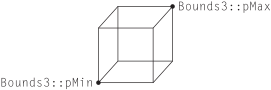图 3.9：轴对齐边界框（AABB）。 Bounds2 和 Bounds3 类仅存储框的最小和最大点的坐标；边界框的其他角在此表示中是隐式的。
默认构造函数通过将范围设置为无效配置（违反不变量 pMin.x <= pMax.x，其他维度类似）来创建一个空框。通过用可表示的最大和最小数字初始化两个角点，任何涉及空框的操作（例如 Union() ）都将产生正确的结果。
/** Bounds3 公有方法 */
Bounds3() {
T minNum = std::numeric_limits<T>::lowest();
T maxNum = std::numeric_limits<T>::max();
pMin = Point3<T>(maxNum, maxNum, maxNum);
pMax = Point3<T>(minNum, minNum, minNum);
}
初始化仅包含一个点的边界也是很有用的：
/** Bounds3 公有方法 */
explicit Bounds3(Point3<T> p) : pMin(p), pMax(p) {}
如果调用者传递两个角点（ p1 和 p2 ）来定义框，构造函数需要找到它们的分量最小值和最大值，因为不一定是 p1.x <= p2.x ，等等。
/** Bounds3 公有方法 */
Bounds3(Point3<T> p1, Point3<T> p2)
: pMin(Min(p1, p2)), pMax(Max(p1, p2)) {}
使用数组索引选择框的两个角点中的一个是很有用的。调试版本中的断言（此处未显示）检查提供的索引是否为 0 或 1。
/** Bounds3 公有方法 */
Point3<T> operator[](int i) const { return (i == 0) ? pMin : pMax; }
Point3<T> &operator[](int i) { return (i == 0) ? pMin : pMax; }
Corner() 方法返回边界框八个角之一的坐标。其逻辑调用 operator[] 方法，针对每个维度使用基于 corner 的低三位中的零或一值，然后提取相应的分量。如果你觉得不够显而易见，那么通过传入 0 到 7 来验证该方法返回的所有八个角的位置是值得的。
给定一个边界框和一个点， Union() 函数返回一个包围该点和原始边界的新边界框。
/** Bounds3 内联函数 */
template <typename T>
Bounds3<T> Union(const Bounds3<T> &b, Point3<T> p) {
Bounds3<T> ret;
ret.pMin = Min(b.pMin, p);
ret.pMax = Max(b.pMax, p);
return ret;
}
一个在这和后续某些函数中应用的细节是，有必要在函数中直接设置 ret 的成员变量 pMin 和 pMax，而不是将 Min() 和 Max() 的返回值传给 Bounds3 构造函数。这个细节源于这样一个事实：如果提供的边界都是退化的（degenerate），那么返回的边界也应该是退化的。如果将退化的范围传递给构造函数，则它会对坐标值进行排序，这最终会导致一个无限的边界。
同样可以构造一个新的边界框，来包围由两个其他边界框所包含的空间。该函数的定义类似于之前的 Union() 方法，该方法接受一个 Point3f ；不同之处在于第二个框的 pMin 和 pMax 被用于 Min() 和 Max() 测试。
/** Bounds3 内联函数 */
template <typename T>
Bounds3<T> Union(const Bounds3<T> &b1, const Bounds3<T> &b2) {
Bounds3<T> ret;
ret.pMin = Min(b1.pMin, b2.pMin);
ret.pMax = Max(b1.pMax, b2.pMax);
return ret;
}
两个边界框的交集可以通过计算它们各自最小坐标的最大值和最大坐标的最小值来找到。（见图 3.10。）

图 3.10：两个边界框的交集。 给定两个边界框， pMin 和 pMax 点用空心圆表示，它们交集区域的边界框（阴影区域）具有一个最小点（左下角填充圆）其坐标由两个框在每个维度的最小点坐标的最大值给出。同样，它的最大点（右上角填充圆）由两个框的最大坐标的最小值给出。
/** Bounds3 内联函数 */
template <typename T>
Bounds3<T> Intersect(const Bounds3<T> &b1, const Bounds3<T> &b2) {
Bounds3<T> b;
b.pMin = Max(b1.pMin, b2.pMin);
b.pMax = Min(b1.pMax, b2.pMax);
return b;
}
我们还可以通过观察两个边界框在 \( x \) 、 \( y \) 和 \( z\ ) 中的范围是否重叠来判断它们是否重叠：
/** Bounds3 内联函数 */
template <typename T>
bool Overlaps(const Bounds3<T> &b1, const Bounds3<T> &b2) {
bool x = (b1.pMax.x >= b2.pMin.x) && (b1.pMin.x <= b2.pMax.x);
bool y = (b1.pMax.y >= b2.pMin.y) && (b1.pMin.y <= b2.pMax.y);
bool z = (b1.pMax.z >= b2.pMin.z) && (b1.pMin.z <= b2.pMax.z);
return (x && y && z);
}
三个一维包含（containment）测试判断给定点是否在边界框内。
/** Bounds3 内联函数 */
template <typename T>
bool Inside(Point3<T> p, const Bounds3<T> &b) {
return (p.x >= b.pMin.x && p.x <= b.pMax.x &&
p.y >= b.pMin.y && p.y <= b.pMax.y &&
p.z >= b.pMin.z && p.z <= b.pMax.z);
}
Inside() 的 InsideExclusive() 变体不将上边界上的点视为在边界内。它主要适用于整数类型的边界。
/** Bounds3 内联函数 */
template <typename T>
bool InsideExclusive(Point3<T> p, const Bounds3<T> &b) {
return (p.x >= b.pMin.x && p.x < b.pMax.x &&
p.y >= b.pMin.y && p.y < b.pMax.y &&
p.z >= b.pMin.z && p.z < b.pMax.z);
}
DistanceSquared() 返回一个点到边界框的平方距离，如果该点在框内，则返回零。计算的几何设置如图 3.11 所示。在每个维度中计算点到框的距离后，通过将每个一维距离的平方相加来找到平方距离。
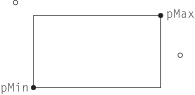图 3.11：计算点到轴对齐边界框（AABB）的平方距离。 首先，我们在每个维度上找到点到框的距离。这里，左上角的空心圆表示的点位于框的左上方，因此其 \( x \) 和 \( y \) 距离分别为 pMin.x - p.x 和 pMin.y - p.y 。另一个空心圆表示的点位于框的右侧，但在 \( y \) 维度上与框重叠，距离分别为 p.x - pMax.x 和零。 Bounds3::DistanceSquared() 中的逻辑是通过找到零与每个维度中最小和最大点的距离中的最大值来计算这些距离。
/** Bounds3 内联函数 */
template <typename T, typename U>
auto DistanceSquared(Point3<T> p, const Bounds3<U> &b) {
using TDist = decltype(T{} - U{});
TDist dx = std::max<TDist>({0, b.pMin.x - p.x, p.x - b.pMax.x});
TDist dy = std::max<TDist>({0, b.pMin.y - p.y, p.y - b.pMax.y});
TDist dz = std::max<TDist>({0, b.pMin.z - p.z, p.z - b.pMax.z});
return Sqr(dx) + Sqr(dy) + Sqr(dz);
}
从一个点到边界框的距离计算很简单，尽管需要间接使用 TupleLength 来判断正确的返回类型。
/** Bounds3 内联函数 */
template <typename T, typename U>
auto Distance(Point3<T> p, const Bounds3<U> &b) {
auto dist2 = DistanceSquared(p, b);
using TDist = typename TupleLength<decltype(dist2)>::type;
return std::sqrt(TDist(dist2));
}
Expand() 函数在所有维度上以一个常数因子扩大边界框。
/** Bounds3 内联函数 */
template <typename T, typename U>
Bounds3<T> Expand(const Bounds3<T> &b, U delta) {
Bounds3<T> ret;
ret.pMin = b.pMin - Vector3<T>(delta, delta, delta);
ret.pMax = b.pMax + Vector3<T>(delta, delta, delta);
return ret;
}
Diagonal() 返回边界框对角线上从最小点指向最大点的向量。
/** Bounds3 公有方法 */
Vector3<T> Diagonal() const { return pMax - pMin; }
计算框六个面的表面积和内部体积的方法也很有用。（这是 Bounds2 和 Bounds3 有区别的地方：这些方法在 Bounds2 中不可用，尽管它确实有一个 Area() 方法。）
/** Bounds3 公有方法 */
T SurfaceArea() const {
Vector3<T> d = Diagonal();
return 2 * (d.x * d.y + d.x * d.z + d.y * d.z);
}
/** Bounds3 公有方法 */
T Volume() const {
Vector3<T> d = Diagonal();
return d.x * d.y * d.z;
}
Bounds3::MaxDimension() 方法返回三个轴中最长的轴的索引。这在例如构建某些光线相交加速结构时，决定要细分哪个轴时是非常有用的。
/** Bounds3 公有方法 */
int MaxDimension() const {
Vector3<T> d = Diagonal();
if (d.x > d.y && d.x > d.z) return 0;
else if (d.y > d.z) return 1;
else return 2;
}
Lerp() 通过给定在各维度上的量值来在框的各个角之间线性插值。
/** Bounds3 公有方法 */
Point3f Lerp(Point3f t) const {
return Point3f(pbrt::Lerp(t.x, pMin.x, pMax.x),
pbrt::Lerp(t.y, pMin.y, pMax.y),
pbrt::Lerp(t.z, pMin.z, pMax.z));
}
Offset() 实际上是 Lerp() 的反向操作。它返回一个点相对于框角的连续位置，其中位于最小角落的点具有偏移 \( (0,0,0) \) ，位于最大角落的点具有偏移 \( (1,1,1) \) ，依此类推。
/** Bounds3 公有方法 */
Vector3f Offset(Point3f p) const {
Vector3f o = p - pMin;
if (pMax.x > pMin.x) o.x /= pMax.x - pMin.x;
if (pMax.y > pMin.y) o.y /= pMax.y - pMin.y;
if (pMax.z > pMin.z) o.z /= pMax.z - pMin.z;
return o;
}
Bounds3 还提供了一种方法，返回包围边界框的球体的中心和半径。一般来说，这可能比直接包围 Bounds3 原始内容的球体适配得松散的多，但对于某些几何操作，使用球体比使用框体更容易，在这种情况下，较差的适配可能是一个可接受的权衡。
/** Bounds3 公有方法 */
void BoundingSphere(Point3<T> *center, Float *radius) const {
*center = (pMin + pMax) / 2;
*radius = Inside(*center, *this) ? Distance(*center, pMax) : 0;
}
下面两个直白的方法测试空的（empty）和退化的（degenerate）边界框。请注意，“空”意味着边界框的体积为零，但并不一定意味着它的表面积为零。
/** Bounds3 公有方法 */
bool IsEmpty() const {
return pMin.x >= pMax.x || pMin.y >= pMax.y || pMin.z >= pMax.z;
}
bool IsDegenerate() const {
return pMin.x > pMax.x || pMin.y > pMax.y || pMin.z > pMax.z;
}
最后，对于整数边界，有一个迭代器类满足 C++ 前向迭代器的要求（即，它只能向前推进）。细节稍显繁琐且不那么有趣，因此书中未包含代码。拥有这个定义使得可以编写使用基于范围的 for 循环来迭代边界框中的整数坐标的代码：
Bounds2i b = ...;
for (Point2i p : b) {
// …
}
根据实现，迭代会达到但不访问每个维度的最大范围的点。
3.8 球面几何（Spherical Geometry）
单位球面上的几何在渲染中也常常非常有用。三维单位方向向量可以等效地表示为单位球面上的点，而方向集可以表示为单位球面上的区域。诸如限定一组方向之类的有用操作通常可以简洁地表示为单位球面上的边界。因此，我们将在本节中介绍一些有用的球面几何原理以及相关的类和函数。
3.8.1 立体角（Solid Angles）
在二维中，平面角（planar angle） 是某个物体相对于某个位置所张的总角（图 3.12）。考虑围绕点 \( \text{p} \) 的单位圆；如果我们将要着色的物体投影到该圆上，圆的某段长度 \( s \) 将被其投影覆盖。 \( s \) 的弧长（与角 \( \theta \) 相同）是物体所张的角度。平面角用 弧度（radians ） 来度量，整个单位圆覆盖 \( 2\pi \) 弧度。

图 3.12：平面角。 从点 \( p \) 观察，一个物体的平面角等于从 \( p \) 观察它时所张的角，或者等价地，等于单位球面上弧 \( s \) 的长度。
立体角将二维的单位圆扩展为三维的单位球（图 3.13）。总面积 \( s \) 是物体所张的立体角。立体角用 球面度（steradians）（sr）来度量。整个球面所张的立体角为 \( 4\pi sr \) ，而半球所张的立体角为 \( 2\pi sr \) 。
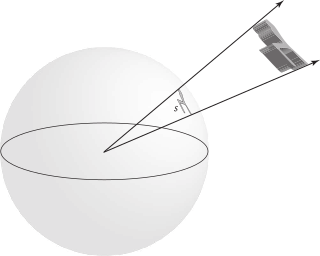图 3.13：立体角。 由三维物体所张的立体角 \( s \) 是通过将物体投影到单位球面上并测量其投影面积来计算的。
通过提供一种在单位球面上测量面积的方法（从而也在单位方向上测量），立体角也为积分球面函数的测度提供了基础；微分立体角（differential solid angle） \( \text{d}\omega \) 对应于单位球面上的微分面积测度。
3.8.2 球面多边形（Spherical Polygons）
我们有时会发现，考虑从一个点到多边形表面的方向集合是有用的。（例如，当计算来自发光多边形到达某点处的照明时，这样做可能很有用。）如果将一个规则平面多边形投影到单位球上，它会形成一个 球面多边形（spherical polygon）。
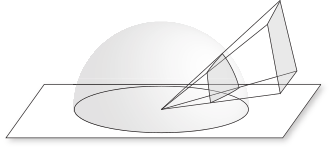图 3.14： 球面多边形对应于多边形在单位球面上的投影。它的顶点对应于指向原始多边形顶点的单位向量，而其边则由球面与经过球心和多边形两个顶点的平面的交线所定义。
球面多边形的顶点可以通过归一化从球心指向原始多边形相应顶点的向量来找到。球面多边形的每一条边由单位球与经过球心和多边形对应两个顶点的平面的交线所定义。结果是在球面上形成一条 大圆（great circle），它是在球面上连接这两个顶点的最短路径（图 3.14）。
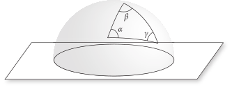图 3.15：一个球面三角形（Spherical Triangle）。 每个顶点的角用与其顶点对应的希腊字母标记。
每个顶点处的角由与该顶点相交的两条边对应的平面之间的夹角给出（图 3.15）。 （两个平面之间的夹角称为 二面角（dihedral angle）。）我们将用与顶点标签对应的希腊字母标记每个顶点的角（ \( \alpha \) 表示顶点 \( \mathbf{a} \) 的角，依此类推）。与平面三角形不同，球面三角形的三个角之和不等于 \( \pi \) 弧度；相反，它们的和为 \( \pi + A \) ，其中 \( A \) 是球面三角形的面积。给定角 \( \alpha \) 、 \( \beta \) 和 \( \gamma \) ，可以使用 吉拉尔定理（Girard’s theorem） 计算出球面三角形的面积，该定理指出，单位球面上三角形的表面积 \( A \) 由“超角（excess angle）”给出
\[
A = \alpha + \beta + \gamma - \pi
\]
直接实现方程（3.5）需要多次调用昂贵的反三角函数，并且由于浮点数消除（floating-point cancellation），其计算可能容易出现错误。一种更高效且准确的方法是应用关系式
\[ \tan\left(\frac{1}{2}A\right)=\frac{\mathbf{a}\cdot(\mathbf{b}\times\mathbf{c})}{1+(\mathbf{a}\cdot\mathbf{b})+(\mathbf{a}\cdot\mathbf{c})+(\mathbf{b}\cdot\mathbf{c})} \]
它可以使用球面三角恒等式从方程（3.5）推导出。该方法在 SphericalTriangleArea() 中使用，需要传入单位球面上与球面三角形的顶点对应的三个向量。
/** 球面几何内联函数 */
Float SphericalTriangleArea(Vector3f a, Vector3f b, Vector3f c) {
return std::abs(2 * std::atan2(Dot(a, Cross(b, c)),
1 + Dot(a, b) + Dot(a, c) + Dot(b, c)));
}
四边形（quadrilateral）投影到单位球上的面积由 \( \alpha + \beta + \gamma + \delta - 2\pi \) 给出，其中 \( \alpha \) 、 \( \beta \) 、 \( \gamma \) 和 \( \delta \) 是其内角（interior angles）。该值通过 SphericalQuadArea() 计算，该方法需传入单位球上的顶点位置。其实现与 SphericalTriangleArea() 非常相似，因此在此不再包含。
/** 球面几何内联函数 */
Float SphericalQuadArea(Vector3f a, Vector3f b, Vector3f c, Vector3f d);
3.8.3 球面参数化（Spherical Parameterizations）
单位球面上用一个点的三维笛卡尔坐标来表示方向并不总是最方便的。例如，如果我们要在单位球上把一个函数制成表格，那么采用利用球面是二维这一事实的二维参数化会更为理想。
在二维平面与球体之间存在多种映射。自制图术（map making）诞生以来，开发满足各种目标的此类映射一直是制图的重要部分。可以证明，任何从平面到球面的映射都会引入某种形式的失真；因此，我们的任务就是选择最能满足特定应用需求的映射方式。pbrt 因此使用了三种不同的球面参数化，每种都有不同的优缺点。
球面坐标（Spherical Coordinates）
球面坐标 \( (\theta,\phi) \) 是球体中众所周知的参数化方式。对于半径为 \( r \) 的一般球体，它们与笛卡尔坐标系的关系为
\[ \begin{align} x &= r\sin\theta\cos\phi \\ y &= r\sin\theta\sin\phi \\ z &= r\cos\theta \\ \end{align} \]
（见图 3.16。）
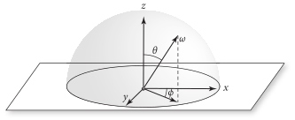图 3.16： 如果给定 \( x \) 、 \( y \) 和 \( z \) 基向量，方向向量可以用球面坐标 \( (\theta,\phi) \) 表示，。球面角公式使得在这两种表示之间转换变得简单。
为了方便，我们将定义一个 SphericalDirection() 函数，该函数直接应用上述方程将一对 \( \theta \) 和 \( \phi \) 转换为单位 \( (x,y,z) \) 向量，。请注意，该函数接收的是 \( \theta \) 的正弦和余弦，而不是 \( \theta \) 本身。这是因为 \( \theta \) 的正弦和余弦通常已经对调用者可用。然而，\( \phi \) 通常不是这种情况，因此 \( \phi \) 按原样传入。
/** 球面几何内联函数 */
Vector3f SphericalDirection(Float sinTheta, Float cosTheta, Float phi) {
return Vector3f(Clamp(sinTheta, -1, 1) * std::cos(phi),
Clamp(sinTheta, -1, 1) * std::sin(phi),
Clamp(cosTheta, -1, 1));
}
将方向 \( (x,y,z) \) 转换为球面坐标可以通过以下方式进行
\[
\begin{align}
\theta &= \arccos z \\
\phi &= \arctan \frac{y}{x} \\
\end{align}
\]
相应的函数如下。请注意， SphericalTheta() 假设在传入之前向量 v 已经被归一化；使用 SafeACos() 代替 std::acos() 可以避免由于浮点数舍入误差导致的 \( |\text{v}.\mathbf{z}| \) 略大于 1 而出现的错误。
/** 球面几何内联函数 */
Float SphericalTheta(Vector3f v) { return SafeACos(v.z); }
SphericalPhi() 返回一个在 \( [0,2\pi] \) 范围中的角，这有时需要对 std::atan2() 返回的值进行调整。
/** 球面几何内联函数 */
Float SphericalPhi(Vector3f v) {
Float p = std::atan2(v.y, v.x);
return (p < 0) ? (p + 2 * Pi) : p;
}
给定一个方向向量 \( \omega \) ，计算类似角 \( \theta \) 的余弦这样的量是很简单的：
\[ \cos\theta = ((0,0,1)\cdot\omega) = \omega_z \]
这比使用一个昂贵的反三角函数先计算 \( \omega \) 对应的 \( \theta \) ，然后再使用另一个昂贵的函数计算它的余弦值要高效得多。下面是计算这个余弦的函数及一些有用的变体。
/** 球面几何内联函数 */
Float CosTheta(Vector3f w) { return w.z; }
Float Cos2Theta(Vector3f w) { return Sqr(w.z); }
Float AbsCosTheta(Vector3f w) { return std::abs(w.z); }
\( \sin^2\theta \) 的值可以通过三角恒等式 \( \sin^2\theta + \cos^2\theta = 1 \) 高效计算得出，然而我们需要小心避免在 1 - Cos2Theta(w) 因浮点舍入误差而小于零的少见情况下返回负值。
/** 球面几何内联函数 */
Float Sin2Theta(Vector3f w) { return std::max<Float>(0, 1 - Cos2Theta(w)); }
Float SinTheta(Vector3f w) { return std::sqrt(Sin2Theta(w)); }
角 \( \theta \) 的正切可以通过恒等式 \( \tan\theta = \sin\theta/\cos\theta \) 计算得出。
/** 球面几何内联函数 */
Float TanTheta(Vector3f w) { return SinTheta(w) / CosTheta(w); }
Float Tan2Theta(Vector3f w) { return Sin2Theta(w) / Cos2Theta(w); }
角 \( \phi \) 的正弦和余弦也可以通过 \( (x,y,z) \) 坐标轻松找到，而无需使用反三角函数（图 3.17）。在 \( z=0 \) 平面中，向量 \( \omega \) 的坐标为 \( (x,y) \) ，分别由 \( r\cos\phi \) 和 \( r\sin\phi \) 给出。半径 \( r \) 为 \( \sin\theta \) ，因此
\[
\begin{align}
\cos\phi &= \frac{x}{r} = \frac{x}{\sin\theta} \\
\sin\phi &= \frac{y}{r} = \frac{y}{\sin\theta} \\
\end{align}
\]

图 3.17： \( \sin\phi \) 和 \( \cos\phi \) 的值可以使用圆坐标方程 \( x=r\cos\phi \) 和 \( y=r\sin\phi \) 计算，其中虚线的长度 \( r \)，等于 \( \sin\theta \) 。
/** 球面几何内联函数 */
Float CosPhi(Vector3f w) {
Float sinTheta = SinTheta(w);
return (sinTheta == 0) ? 1 : Clamp(w.x / sinTheta, -1, 1);
}
Float SinPhi(Vector3f w) {
Float sinTheta = SinTheta(w);
return (sinTheta == 0) ? 0 : Clamp(w.y / sinTheta, -1, 1);
}
最后，两个向量的 \( \phi \) 值之间的角度 \( \Delta\phi \) 的余弦可以通过将它们的 \( z \) 坐标归零以获得在 \( z=0 \) 平面中的二维向量，然后对它们进行归一化来找到。这两个向量的点积给出了它们之间夹角的余弦。下面的实现稍微调整了项的顺序以提高效率，从而只需执行一次平方根操作。
/** 球面几何内联函数 */
Float CosDPhi(Vector3f wa, Vector3f wb) {
Float waxy = Sqr(wa.x) + Sqr(wa.y), wbxy = Sqr(wb.x) + Sqr(wb.y);
if (waxy == 0 || wbxy == 0) return 1;
return Clamp((wa.x * wb.x + wa.y * wb.y) / std::sqrt(waxy * wbxy),
-1, 1);
}
用球面坐标对球面进行参数化对应于球面的 等矩形（equirectangular） 映射。由于在球面两极存在显著的失真，它并不是一种用于表示球面上规则采样数据的特别好的参数化方法。
八面体编码（Octahedral Encoding）
虽然 Vector3f 用来表示单位向量进行的计算时很方便，但它并没有高效利用存储：不仅使用了 12 字节的内存（假设 Float 为 4 字节），而且能够表示任意长度的三维方向向量。然而，归一化向量只是所有可能的 Vector3f 的一个小子集，这意味着这 12 字节所代表的存储并没有很好地分配给它们。当需要在内存中存储许多归一化向量时，更节省空间的表示方式可能是值得的。
球面坐标可以用于此任务。这样做可以把所需的存储减少到两个 Float ，但缺点是需要相对昂贵的三角函数和反三角函数来进行 Vector3 之间的转换。此外，球面坐标在两极附近精度更高，而在赤道附近则精度较低；在所有单位向量之间更均匀的精度分布是更理想的。（由于浮点数的表示方式， Vector3f 在单位球面的不同部分也存在精度不同的问题。）
OctahedralVector 提供了一种紧凑的单位向量表示，具有均匀的精度分布和高效的编码与解码例程。我们的实现仅为每个单位向量使用 4 字节的内存；这 4 字节的所有可能值对应于一个有效的单位向量。它的表示不适合计算，但其与 Vector3f 之间转换非常简单，这使得它成为在内存中存储归一化向量的理想选择。
/** OctahedralVector 定义 */
class OctahedralVector {
public:
/** OctahedralVector 公有方法 */
private:
/** OctahedralVector 私有方法 */
/** OctahedralVector 私有成员 */
};
正如其名，该单位向量基于单位球的八面体映射，如图 3.18 所示。
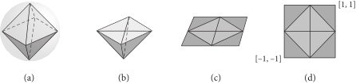图 3.18： 使用 OctahedralVector 对单位球的参数化可以这样理解，首先，想象 (a) 一个内切于球体的八面体。它的二维参数化随后通过 (b) 将顶部的金字塔展平到 \( z=0 \) 平面以及 (c) 展开下半部分并将其三角形投影到同一平面来定义。 (d) 得到的结果允许一个简单的 \( [-1,1]^2 \) 参数化。 (图 2 之后的图源自 Meyer 等人（2010）。)
将单位向量转换为这种表示的算法出奇地简单。第一步是将向量投影到三维八面体的面上；这步可以通过将向量分量除以向量的 L1 范数 \( |\mathbf{v}_x|+|\mathbf{v}_y|+|\mathbf{v}_z| \) 来完成。对于位于上半球的点（即，具有 \( \mathbf{v}_z \geq 0 \) ），投影到 \( z=0 \) 平面只需直接取 \( x \) 和 \( y \) 分量。
/** OctahedralVector 公有方法 */
OctahedralVector(Vector3f v) {
v /= std::abs(v.x) + std::abs(v.y) + std::abs(v.z);
if (v.z >= 0) {
x = Encode(v.x);
y = Encode(v.y);
} else {
/** 编码 z < 0 的八面体向量 */
}
}
对于下半球的方向，投影到 \( [-1,1]^2 \) 中适当的点会稍微复杂一些，然而只需稍加注意即可在没有任何条件控制流的情况下表达出来。（以下是另一种值得理解的简洁代码片段；相比于基于 if 语句处理四个三角形独立展开的代码。）
/** 编码 z < 0 的八面体向量 */
x = Encode((1 - std::abs(v.y)) * Sign(v.x));
y = Encode((1 - std::abs(v.x)) * Sign(v.y));
辅助函数 OctahedralVector::Sign() 使用标准数学库函数 std::copysign() 根据 v 的符号（正/负零被视为普通数字）返回 \( \pm1 \)。
/** OctahedralVector 私有方法 */
static Float Sign(Float v) { return std::copysign(1.f, v); }
图 3.18(d)中的二维参数化随后使用一个 16 位的值来表示每个坐标，该值将范围 \( [-1,1] \) 量化为 \( 2^16 \) 步。
/** OctahedralVector 私有成员 */
uint16_t x, y;
Encode() 将 \( [-1,1] \) 中的值编码为整数编码。
/** OctahedralVector 私有方法 */
static uint16_t Encode(Float f) {
return pstd::round(Clamp((f + 1) / 2, 0, 1) * 65535.f);
}
反向执行相同的操作就可以映射回 Vector3f 。对于上半球的方向，八面体面上的 \( z \) 值很容易找到。对该向量进行归一化后，便得到了相应的单位向量。
/** OctahedralVector 公有方法 */
explicit operator Vector3f() const {
Vector3f v;
v.x = -1 + 2 * (x / 65535.f);
v.y = -1 + 2 * (y / 65535.f);
v.z = 1 - (std::abs(v.x) + std::abs(v.y));
/** 对八面体 z < 0 的部分重新参数化方向 */
return Normalize(v);
}
对于下半球的方向，在方向归一化之前，必须反向执行在 <<编码 z < 0 的八面体向量>> 片段中实现的映射。
/** 对八面体 z < 0 的部分重新参数化方向（Reparameterize directions in the z < 0 portion of the octahedron） */
if (v.z < 0) {
Float xo = v.x;
v.x = (1 - std::abs(v.y)) * Sign(xo);
v.y = (1 - std::abs(xo)) * Sign(v.y);
}
等面积映射（Equal-Area Mapping）
在 pbrt 中使用的第三种球面参数化方法经过精心设计以保持面积：球面上的任何区域都被映射到参数域中与之成比例的区域。这种表示方式对于球面上的制表函数（tabulating functions）是一个很好的选择，因为它是连续的，具有相对较低的失真，并且所有存储的值表示相同的立体角。它结合了在 OctahedralVector 类中使用的八面体映射和 A.5.1 节中从正方形到圆盘映射的变体，该变体以保持面积的方式将单位正方形映射到半球。该映射将单位正方形分成四个区域（sector），每个区域映射到半球的一个区域（见图 3.19）。

图 3.19： 均匀半球映射 (a) 首先将单位正方形转换为单位圆盘，使得正方形的四个着色区域映射到圆盘的相应着色区域。 (b) 然后，圆盘上的点以保持相对面积的方式映射到半球上。
给定 \( (u,v) \in [-1,1]^2 \) ；那么在 \( u \geq 0 \) 和 \( u - |v| \geq 0 \) 的第一个区域，单位圆盘上点的极坐标为
\[ \begin{align} r &= u \\ \phi &= \frac{\pi}{4}\frac{v}{u} \end{align} \]
在 \( \phi \in [-\pi/4,\pi/4] \) 上给出了一个保面积映射（area-preserving mapping）。其他三个区域也可以找到类似的映射。
给定 \( (r, \phi) \) ，则正半球上的对应点为
\[
\begin{align}
x &= (\cos\phi)r\sqrt{2-r^2} \\
y &= (\sin\phi)r\sqrt{2-r^2} \\
z &= 1-r^2 \\
\end{align}
\]
该映射也是保持面积的。
这种映射可以使用与 OctahedralVector 相同的八面体映射扩展到整个球体。然后有三个步骤：
- 首先，将八面体映射应用于方向，得到一个点 \( (u,v) \in [-1,1]^2 \) 。
- 对于上半球的方向，采用同心半球映射（concentric hemisphere mapping），即方程（3.9），应用于八面体映射的内正方形。这需要考虑到它相对于半球映射所期望的正方形旋转了 \( 45^\circ \) 。
- 下半球的方向在应用半球映射之前，会沿着其象限的对角线（quadrant’s diagonal）进行镜像。然后，得到的方向向量的 \( z \) 分量被取反。
以下该方法的实现经过一些处理以确保 无分支（branch free）：无论输入值是什么，函数的控制流只有一条路径。当可能时，这一特性通常对性能有帮助，特别是在 GPU 上，然而我们注意到该函数通常只占 pbrt 执行时间的一小部分，因此这一特性并不会影响系统的整体性能。
/** 正方形-球体映射函数定义（Square–Sphere Mapping Function Definitions） */
Vector3f EqualAreaSquareToSphere(Point2f p) {
/** 将 p 转换到 [-1,1]^2 并计算绝对值 */
/** 以对角线的有符号距离计算半径 r */
/** 计算用于正方体到球体映射的角 Φ */
/** 求球面方向的 z 坐标 */
/** 计算原象限的 cos ϕ 和 sin ϕ 并返回向量 */
}
在将原始点 p 从 \( [0,1]^2 \) 转换到 \( (u,v) \in [-1,1]^2 \) 后，实现还计算了这些坐标的绝对值 \( u'=|u| \) 和 \( v'=|v| \) 。这样做将具有一个或两个负坐标值的三个象限重新映射到正象限，翻转每个象限，使其上半球映射到 \( u' + v' < 1 \) ，这对应于原始正象限中的上半球。（每个下半球映射到 \( u' + v' > 1 \) 区域，对应于原始负象限。）
/** 将 p 转换到 [-1,1]^2 并计算绝对值 */
Float u = 2 * p.x - 1, v = 2 * p.y - 1;
Float up = std::abs(u), vp = std::abs(v);
该函数的大部分实现操作都使用正象限中的 \( (u',v') \) 。其下一步是通过计算到对角线 \( u+v=1 \) 的有符号距离来计算映射到圆盘的半径 \( r \) ，该对角线将上半球和下半球分开，其中下半球的有符号距离为负（图 3.20）。
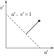图 3.20：正方形到圆盘映射的半径 \( r \) 计算。 计算到直线 \( u' + v' = 1 \) 的有符号距离。1 减去它的绝对值得到介于 0 到 1 之间的半径。
/** 以对角线的有符号距离计算半径 r */
Float signedDistance = 1 - (up + vp);
Float d = std::abs(signedDistance);
Float r = 1 - d;
\( \phi \) 的计算通过增加一个 \( \pi/4 \) 项来进行 \( 45^\circ \) 的旋转。
/** 计算用于正方体到球体映射的角 Φ */
Float phi = (r == 0 ? 1 : (vp - up) / r + 1) * Pi / 4;
先前计算的有符号距离的符号表明了点 \( (u',v') \) 是否位于下半球；返回的 \( z \) 坐标使用其符号。
/** 求球面方向的 z 坐标 */
Float z = pstd::copysign(1 - Sqr(r), signedDistance);
在正象限计算 \( \cos\phi \) 和 \( \sin\phi \) 之后，有必要将这些值重新映射到原始点 \( (u,v) \) 所在的实际象限中的正确值。将 \( u \) 的符号与计算得到的 \( \cos\phi \) 值关联，并将 \( v \) 的符号与 \( \sin\phi \) 关联，便足以做到这一点，此操作可以通过再次使用 copysign() 来实现。
/** 计算原象限的 cos ϕ 和 sin ϕ 并返回向量 */
Float cosPhi = pstd::copysign(std::cos(phi), u);
Float sinPhi = pstd::copysign(std::sin(phi), v);
return Vector3f(cosPhi * r * SafeSqrt(2 - Sqr(r)),
sinPhi * r * SafeSqrt(2 - Sqr(r)), z);
逆映射由 EqualAreaSphereToSquare() 函数执行，该函数以相反的方式有效地执行相同的操作，因此没有包含在此。同样有用且没有包括在此的还有 WrapEqualAreaSquare() 函数，它处理位于 \( [0,1]^2 \) 之外的点 p 的边界情况（在进行图像纹理查找的双线性插值时可能会发生），并将它们映射到可以传给 EqualAreaSquareToSphere() 的适当的有效坐标。
3.8.4 边界方向（Bounding Directions）
除了对空间区域进行边界限定外，有时对一组方向进行边界限定也很有用。例如，如果光源在某些方向上发出光照而在其他方向上不发出，这些信息可以用来排除该光源在其显然不会照亮的点的光照计算中。 pbrt 提供了 DirectionCone 类用于此类用途；它表示一个由中心方向（central direction）和角度扩展（angular spread）参数化的圆锥（见图 3.21）。
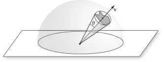图 3.21：用圆锥界定方向集。 方向集在这里以球面上的阴影区域表示，可以使用一个由中心方向向量 \( \mathbf{v} \) 和扩展角 \( \theta \) 描述的圆锥来界定，使得集合中的所有方向都位于圆锥内部。
/** DirectionCone 定义 */
class DirectionCone {
public:
/** DirectionCone 公有方法 */
/** DirectionCone 公有成员 */
};
DirectionCone 提供了多种构造函数，包括一个接受圆锥的中心轴和其扩展角的余弦值的构造函数，以及一个限制单一方向的构造函数。对于构造函数参数和存储在类中的圆锥表示，使用的是扩展角的余弦值，而不是角度本身。这样做使得可以使用高效的点积来替代更昂贵的三角函数，从而使 DirectionCone 执行一些以下操作。
/** DirectionCone 公有方法 */
DirectionCone() = default;
DirectionCone(Vector3f w, Float cosTheta)
: w(Normalize(w)), cosTheta(cosTheta) {}
explicit DirectionCone(Vector3f w) : DirectionCone(w, 1) {}
DirectionCone 的默认构造函数是空的；将 cosTheta 设置成无效的无穷大值来编码该情况。
/** DirectionCone 公共成员 */
Vector3f w;
Float cosTheta = Infinity;
一个报告圆锥是否为空的便捷方法。
/** DirectionCone 公有方法 */
bool IsEmpty() const { return cosTheta == Infinity; }
另一个便捷方法提供了对所有方向的界限。
/** DirectionCone 公有方法 */
static DirectionCone EntireSphere() {
return DirectionCone(Vector3f(0, 0, 1), -1);
}
给定一个 DirectionCone ，很容易检查给定的方向向量是否在其范围内：方向与圆锥中心方向之间的夹角的余弦必须大于圆锥扩展角的余弦。（注意，角度越小，余弦越大。）
/** DirectionCone 内联函数 */
bool Inside(const DirectionCone &d, Vector3f w) {
return !d.IsEmpty() && Dot(d.w, Normalize(w)) >= d.cosTheta;
}
BoundSubtendedDirections() 返回一个约束了给定边界框和相对点 p 所夹方向的 DirectionCone。
/** DirectionCone 内联函数 */
DirectionCone BoundSubtendedDirections(const Bounds3f &b, Point3f p) {
/** 计算 b 的包围球并检查 p 是否在内部 */
/** 计算并返回包围球的 DirectionCone */
}
首先，求出边界 b 的包围球（bounding sphere）。如果给定点 p 在球内，则返回所有方向的方向边界。请注意，点 p 可能在球内但在 b 外，在这种情况下，返回的边界将过于保守（overly conservative）。这个问题在本章末尾的练习中有进一步讨论。
/** 计算 b 的包围球并检查 p 是否在内部 */
Float radius;
Point3f pCenter;
b.BoundingSphere(&pCenter, &radius);
if (DistanceSquared(p, pCenter) < Sqr(radius))
return DirectionCone::EntireSphere();
否则，边界的中心轴由从 p 到球心的向量给出，扩展角的余弦可以通过基本三角函数轻松求出（见图 3.22）。

图 3.22：由点 \( \text{p} \) 求出包围球所形成的角度。 给定一个包围球和一个位于球外的参考点 \( \text{p} \) ，首先通过将球的半径 \( r \) 除以点 \( \text{p} \) 与球心之间距离 \( d \) 计算出 \( \sin\theta \)，然后使用三角恒等式 \( \sin^2\theta + \cos^2\theta = 1 \) 算出角 \( \theta \) 的余弦。
/** 计算并返回包围球的 DirectionCone */
Vector3f w = Normalize(pCenter - p);
Float sin2ThetaMax = Sqr(radius) / DistanceSquared(pCenter, p);
Float cosThetaMax = SafeSqrt(1 - sin2ThetaMax);
return DirectionCone(w, cosThetaMax);
最后，我们会发现能够取两个 DirectionCone 的并集是有用的，求出一个同时包含他们两个的 DirectionCone 。
/** DirectionCone 函数定义 */
DirectionCone Union(const DirectionCone &a, const DirectionCone &b) {
/** 处理一个或两个圆锥为空的情况 */
/** 处理一个圆锥在另一个圆锥内部的情况 */
/** 计算合并后圆锥的扩展角 theta_o */
/** 求出合并后圆锥的轴并返回圆锥集合 */
}
如果其中一个圆锥是空的，我们可以立即返回另一个圆锥。
/** 处理一个或两个圆锥为空的情况 */
if (a.IsEmpty()) return b;
if (b.IsEmpty()) return a;
否则，实现计算了一些有用的角度，包括每个锥体的实际扩展角以及它们两个中心方向向量之间的夹角。这些值提供了足够的信息来确定一个圆锥是否完全被另一个圆锥包围（见图 3.23）。

图 3.23：确定一个方向锥是否完全在另一个方向锥内部。 给定两个方向锥 \( a \) 和 \( b \) ，它们的扩展角 \( \theta_a \) 和 \( \theta_b \) ，以及它们两个中心方向向量之间的夹角 \( \theta_d \) ，我们可以确定一个锥体是否完全在另一个锥体内部。如图，因为 \( \theta_a > \theta_d + \theta_b \) ，所以 \( b \) 在 \( a \) 内部。
/** 处理一个圆锥在另一个圆锥内部的情况 */
Float theta_a = SafeACos(a.cosTheta), theta_b = SafeACos(b.cosTheta);
Float theta_d = AngleBetween(a.w, b.w);
if (std::min(theta_d + theta_b, Pi) <= theta_a)
return a;
if (std::min(theta_d + theta_a, Pi) <= theta_b)
return b;
否则，需要计算一个新的圆锥来包围它们两个。如图 3.24 所示， \( \theta_a \) 、 \( \theta_d \) 和 \( \theta_b \) 的总和给出了新圆锥必须覆盖的完整角度；其一半是其扩展角度。
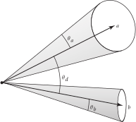图 3.24：计算包围两个其他圆锥的方向圆锥的扩展角。 如果 \( \theta_d \) 是两个圆锥中心轴之间的夹角，而两个圆锥的扩展角分别为 \( \theta_a \) 和 \( \theta_b \) ，那么该圆锥包围的总角度为 \( \theta_a + \theta_d + \theta_b \) ，因此其扩展角为该角度的一半。
/** 计算合并后圆锥的扩展角 theta_o */
Float theta_o = (theta_a + theta_d + theta_b) / 2;
if (theta_o >= Pi)
return DirectionCone::EntireSphere();
新圆锥的方向向量 不 应通过两个圆锥的方向向量的平均值来设定；该向量和一个扩展角 \( \theta_o \) 不一定能够包围这两个给定的圆锥。使用该向量将需要一个大小为 \( \theta_d/2 + \max(2\theta_a, 2\theta_b) \) 的扩展角，而这个角从来不会小于 \( \theta_o \) 。（在纸上画出几个案例以说服自己这一点是值得的。）
相反，我们通过叉积找到与圆锥方向向量垂直的向量，并围绕该轴旋转 a.w，使其能够包围两个圆锥的角。（用于此的 Rotate() 函数将在第 3.9.7 节中介绍。）在 LengthSquared(wr) == 0 的情况下，两向量朝相反方向，此时返回整个球体的边界。†（在这种情况下，其实可以找到更紧的包围，但由于这种情况非常罕见，我们不花时间去更有效地处理它也没关系。）
/** 求出合并后圆锥的轴并返回圆锥集合 */
Float theta_r = theta_o - theta_a;
Vector3f wr = Cross(a.w, b.w);
if (LengthSquared(wr) == 0)
return DirectionCone::EntireSphere();
Vector3f w = Rotate(Degrees(theta_r), wr)(a.w);
return DirectionCone(w, std::cos(theta_o));
3.9 变换（Transformations）
一般来说，变换（transformation） \( \mathbf{T} \) 是从点到点以及从向量到向量的映射：
\[
p'=\mathbf{T}(p) \quad \mathbf{v}'=\mathbf{T}(\mathbf{v})
\]
变换 \( \mathbf{T} \) 可以是任意的程序（arbitrary procedure）。然而，在本章中，我们将考虑所有可能变换的子集。特别地，它们将是
- 线性（Linear）： 如果 \( \mathbf{T} \) 是一个任意线性变换，\( s \) 是一个任意标量，那么 \( \mathbf{T}(s\mathbf{v}) = s\mathbf{T}(\mathbf{v}) \) 且 \( \mathbf{T}(\mathbf{v}_1+\mathbf{v}_2) = \mathbf{T}(\mathbf{v}_1) + \mathbf{T}(\mathbf{v}_2) \) 。这两个性质可以大大简化对变换的推理。
- 连续（Continuous）： 粗略地说，\( \mathbf{T} \) 将 \( \text{p} \) 和 \( \mathbf{v} \) 周围的邻域（neighborhoods）映射到 \( \text{p}' \) 和 \( \mathbf{v}' \) 周围的邻域。
- 一对一且可逆（One-to-one and invertible）： 对于每个 \( \text{p} \) ，\( \mathbf{T} \) 将 \( \text{p} \) 映射到一个唯一的 \( \text{p}' \) 。此外，存在一个逆变换 \( \mathbf{T}^{-1} \) ，将 \( \text{p}' \) 映射回 \( \text{p} \) 。
我们通常希望将相对于一个坐标系定义的点、向量或法线，找到其相对于另一个坐标系的坐标值。利用线性代数的基本性质，可以证明一个 \( 4\times4 \) 矩阵可以表示点或向量从一个坐标系到另一个坐标系的线性变换。此外，这样的 \( 4\times4 \) 矩阵足以表示固定坐标系内所有点和向量的线性变换，例如空间中的平移或围绕某一点的旋转。因此，矩阵可以有两种不同（且不兼容！）的解释方式：
- 坐标系内的变换（Transformation within the frame）： 给定一个点，矩阵可以表示如何在同一坐标系内计算原始点经过变换后的 新 点（例如，通过在某个方向上平移它）。
- 从一个坐标系到另一个坐标系的变换（Transformation from one frame to another）： 矩阵可以根据原始坐标系中的坐标来表示新坐标系中一个点或向量的坐标。
在 pbrt 中，大多数变换的用途是将点从一个坐标系转换到另一个坐标系。
一般来说，变换可以让我们在最方便的坐标空间中工作。例如，我们可以编写例程来定义一个虚拟摄像机，假设摄像机位于原点，朝着 \( z \) 轴方向看，且让 \( y \) 轴指向上方，\( x \) 轴指向右侧。这些假设大大简化了摄像机的实现。为了将摄像机放置在场景中的任意点并朝向任意方向，我们构建一个变换，将场景坐标系中的点映射到摄像机的坐标系中。（有关 pbrt 中摄像机坐标空间的更多信息，请参见第 5.1.1 节。）
3.9.1 齐次坐标（Homogeneous Coordinates）
给定一个由 \( (\text{p}_\text{o},\mathbf{v_1},\mathbf{v_2},\mathbf{v_3}) \) 定义的框架，有着相同 \( (x,y,z) \) 坐标的点 \( (\text{p}_x,\text{p}_y,\text{p}_z) \) 和向量 \( (\mathbf{v}_x,\mathbf{v}_y,\mathbf{v}_z) \) 在表示上存在歧义（ambiguity）。利用本章开头介绍的点和向量的表示，我们可以将点写为内积 \( [s_1\ s_2\ s_3\ 1][\mathbf{v_1}\ \mathbf{v_2}\ \mathbf{v_3}\ \text{p}_\text{o}]^T \) ，将向量写为内积 \( [s'_1\ s'_2\ s'_3\ 0][\mathbf{v_1}\ \mathbf{v_2}\ \mathbf{v_3}\ \text{p}_\text{o}]^T \) 。这些由三个 \( s_i \) 值和一个 0 或 1 组成的四维向量称为点和向量的 齐次（homogeneous ） 表示。齐次表示的第四个坐标有时称为 权重（weight）。对于一个点，其值可以是任何非零的标量：齐次点 \( [1,3,-2,1] \) 和 \( [-2,-6,4,-2] \) 描述相同的笛卡尔点 \( (1,3,-2) \) 。将齐次点转换为普通点需要将前三个分量除以权重：
\[
(x,y,z,w) \rightarrow \left( \frac{x}{w},\frac{y}{w},\frac{z}{w} \right)
\]
我们将利用这些事实来观察变换矩阵如何描述一个坐标系中的点和向量映射到另一个坐标系。考虑一个描述从一个坐标系到另一个坐标系变换的矩阵 \( \mathbf{M} \) ：
\[ \mathbf{M} = \left(\begin{matrix} {m_{0,0}} & {m_{0,1}} & {m_{0,2}} & {m_{0,3}} \\ {m_{1,0}} & {m_{1,1}} & {m_{1,2}} & {m_{1,3}} \\ {m_{2,0}} & {m_{2,1}} & {m_{2,2}} & {m_{2,3}} \\ {m_{3,0}} & {m_{3,1}} & {m_{3,2}} & {m_{3,3}} \\ \end{matrix}\right) \]
（在本书中，我们将矩阵元素索引从零开始定义，以便方程和源代码能够更直接地对应。）然后，如果将由 \( \mathbf{M} \) 表示的变换应用于 \( x \) 轴向量 \( (1,0,0) \) ，我们得到
\[
\mathbf{Mx} = \mathbf{M}[1\ 0\ 0\ 0]^T = [m_{0,0}\ m_{1,0}\ m_{2,0}\ m_{3,0}]^T
\]
因此，直接读取矩阵的列表明了基向量和当前坐标系的原点是如何通过矩阵进行变换的：
\[ \begin {align} \mathbf{My} &= [m_{0,1}\ m_{1,1}\ m_{2,1}\ m_{3,1}]^T \\ \mathbf{Mz} &= [m_{0,2}\ m_{1,2}\ m_{2,2}\ m_{3,2}]^T \\ \mathbf{M}\text{p} &= [m_{0,3}\ m_{1,3}\ m_{2,3}\ m_{3,3}]^T \end {align} \]
一般来说，通过描述基（basis）的变换方式，我们可以知道任何以该基表示的点或向量是如何变换的。因为坐标系中的点和向量是以坐标系的框架表示的，直接对它们应用变换，等同于对坐标系的基应用变换并在变换后的基中找到它们的坐标。
我们在代码中不会显式使用齐次坐标；在 pbrt 中没有 HomogeneousPoint 类。然而，下一节中的各种变换例程将隐式地将点、向量和法线转换为齐次形式，变换齐次点，然后在返回结果之前将其转换回去。这将齐次坐标的细节隔离在一个地方（即变换的实现）。
3.9.2 变换类定义（Transform Class Definition）
Transform 类表示一个 \( 4\times4 \) 变换。它的实现位于文件 util/transform.h 和 util/transform.cpp 中。
/** Transform 定义 */
class Transform {
public:
/** Transform 公有方法 */
private:
/** Transform 私有成员 */
};
变换矩阵由矩阵元素 m 表示，该矩阵由 SquareMatrix<4> 对象表示。（ SquareMatrix 类在 B.2.12 节中定义。）矩阵 m 以 行优先（row-major） 形式存储，因此元素 m[i][j] 对应于 \( m_{i,j} \) ，其中 \( i \) 是行号，\( j \) 是列号。为了方便，Transform 还在其 Transform::mInv 成员变量中存储了 m 的逆；出于 pbrt 的需求，能够方便地获取逆比需要时再反复计算更好。
/** Transform 私有成员 */
SquareMatrix<4> m, mInv;
这种变换的表示方式相当吃内存：假设一个 Float 值需要 4 字节的存储，那么一个 Transform 就需要 128 字节的存储。轻易使用这种方法可能会造成资源浪费；如果一个场景有数百万个形状，但只有几千个唯一的变换，那么就没有必要重复存储相同的矩阵。因此，pbrt 中的 Shape 存储一个指向 Transform 的指针，而在 C.2.3 节中定义的场景规范代码使用一个包含多个 Transform 的 InternCache 来确保所有共享相同变换的形状中的指针指向内存中该变换的单一实例。
3.9.3 基本运算（Basic Operations）
当创建一个新的 Transform 时，它默认是 恒等变换 / 单位变换（identity transformation） ——将每个点和每个向量映射到其自身的变换。该变换由 单位矩阵（identity matrix） 表示：
\[ \mathbf{I} = \left( \begin{matrix} {1} & {0} & {0} & {0} \\ {0} & {1} & {0} & {0} \\ {0} & {0} & {1} & {0} \\ {0} & {0} & {0} & {1} \\ \end{matrix} \right) \]
这里的实现依赖于默认的 SquareMatrix 构造函数来将 m 和 mInv 填充为单位矩阵。
/** Transform 公有方法 */
Transform() = default;
Transform 也可以通过给定的矩阵来创建。在这种情况下，矩阵必须被显式地反转。
/** Transform 公有方法 */
Transform(const SquareMatrix<4> &m) : m(m) {
pstd::optional<SquareMatrix<4>> inv = Inverse(m);
if (inv)
mInv = *inv;
else {
/** 用非数值（NaN）初始化 mInv */
}
}
如果调用者提供的矩阵是退化的（degenerate）并且无法逆转，则 mInv 将被初始化为浮点非数字（floating-point not-a-number）值，这会影响涉及它们的计算：使用非数值进行的算术运算总是会得到非数值。通过这种方式，提供退化矩阵 m 的调用者仍然可以使用 Transform ，只要不调用访问 mInv 的方法。
/** 用非数值（NaN）初始化 mInv */
Float NaN = std::numeric_limits<Float>::has_signaling_NaN
? std::numeric_limits<Float>::signaling_NaN()
: std::numeric_limits<Float>::quiet_NaN();
for (int i = 0; i < 4; ++i)
for (int j = 0; j < 4; ++j)
mInv[i][j] = NaN;
还有一个构造函数允许使用常规的二维数组来指定矩阵的元素。
/** Transform 公有方法 */
Transform(const Float mat[4][4]) : Transform(SquareMatrix<4>(mat)) {}
最常用的构造函数接受一个变换矩阵的引用以及一个显式提供的逆矩阵。这比在构造函数中计算逆矩阵的方式更为优越，因为许多几何变换具有简单的逆矩阵，我们可以避免计算一般的 \( 4\times4 \) 矩阵逆时的开销和潜在的数值精度损失。当然，这就要求调用者必须确保提供的逆矩阵是正确的。
/** Transform 公有方法 */
Transform(const SquareMatrix<4> &m, const SquareMatrix<4> &mInv)
: m(m), mInv(mInv) {}
矩阵及其逆矩阵都可供需要直接访问它们的调用者使用。
/** Transform 公有方法 */
const SquareMatrix<4> &GetMatrix() const { return m; }
const SquareMatrix<4> &GetInverseMatrix() const { return mInv; }
表示一个 Transform 的逆变换的 Transform 可以通过简单地交换 mInv 和 m 的值来返回。
/** Transform 内联函数 */
Transform Inverse(const Transform &t) {
return Transform(t.GetInverseMatrix(), t.GetMatrix());
}
转置变换中的两个矩阵以计算出新的变换也很有用。
/** Transform 内联函数 */
Transform Transpose(const Transform &t) {
return Transform(Transpose(t.GetMatrix()),
Transpose(t.GetInverseMatrix()));
}
Transform 类还提供了相等和不相等测试方法，以及一个用于检查变换是否为恒等变换的 IsIdentity() 方法。
/** Transform 公有方法 */
bool operator==(const Transform &t) const { return t.m == m; }
bool operator!=(const Transform &t) const { return t.m != m; }
bool IsIdentity() const { return m.IsIdentity(); }
3.9.4 平移（Translations）
平移变换（translation transformation） \( \mathbf{T}(\Delta x,\Delta y, \Delta z) \) 是最简单的变换之一。当应用于一个点 \( \text{p} \) 时，它将 \( \text{p} \) 的坐标平移 \( \Delta x \) 、 \( \Delta y \) 和 \( \Delta z \) ，如图 3.25 所示。例如，\( \mathbf{T}(2,2,1)(x,y,z) = (x+2,y+2,z+1) \) 。
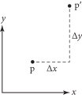图 3.25：二维中的平移。 将偏移量 \( \Delta x \) 和 \( \Delta y \) 添加到点的坐标中，相应地改变其在空间中的位置。
平移具有一些基本特性：
\[ \begin{align} \mathbf{T}(0,0,0) &= \mathbf{I} \\ \mathbf{T}(x_1,y_1,z_1)\mathbf{T}(x_2,y_2,z_2) &= \mathbf{T}(x_1+x_2,y_1+y_2,z_1+z_2) \\ \mathbf{T}(x_1,y_1,z_1)\mathbf{T}(x_2,y_2,z_2) &= \mathbf{T}(x_2,y_2,z_2)\mathbf{T}(x_1,y_1,z_1) \\ \mathbf{T}^{-1}(x,y,z) &= \mathbf{T}(-x,-y,-z) \end{align} \]
平移仅影响点，保持向量不变。以矩阵形式，平移变换为
\[
\mathbf{T}(\Delta x,\Delta y,\Delta z) = \left(
\begin{matrix}
{1}&{0}&{0}&{\Delta x} \\
{0}&{1}&{0}&{\Delta y} \\
{0}&{0}&{1}&{\Delta z} \\
{0}&{0}&{0}&{1} \\
\end{matrix}
\right)
\]
当我们考虑一个变换矩阵作用于一个点时，就会发现齐次坐标的价值。考虑 \( \mathbf{T}(\Delta x,\Delta y,\Delta z) \) 的矩阵与的点 \( \text{p} \) 的齐次坐标 \( [x\ y\ z\ 1]^T \) 的乘积：
\[
\left(
\begin{matrix}
{1}&{0}&{0}&{\Delta x} \\
{0}&{1}&{0}&{\Delta y} \\
{0}&{0}&{1}&{\Delta z} \\
{0}&{0}&{0}&{1} \\
\end{matrix}
\right)\left(
\begin{matrix}
{x} \\
{y} \\
{z} \\
{1} \\
\end{matrix}
\right)=\left(
\begin{matrix}
{x + \Delta x} \\
{y + \Delta y} \\
{z + \Delta z} \\
{1} \\
\end{matrix}
\right)
\]
如预期，我们计算出了一个新点，其坐标偏移了 \( (\Delta x,\Delta y,\Delta z) \) 。然而，如果我们将 \( \mathbf{T} \) 应用于向量 \( \mathbf{v} \) ，我们得到
\[
\left(
\begin{matrix}
{1}&{0}&{0}&{\Delta x} \\
{0}&{1}&{0}&{\Delta y} \\
{0}&{0}&{1}&{\Delta z} \\
{0}&{0}&{0}&{1} \\
\end{matrix}
\right)\left(
\begin{matrix}
{x} \\
{y} \\
{z} \\
{0} \\
\end{matrix}
\right)=\left(
\begin{matrix}
{x} \\
{y} \\
{z} \\
{0} \\
\end{matrix}
\right)
\]
结果是相同的向量 \( \mathbf{v} \) 。这是有道理的，因为向量表示方向，因此平移不会改变它们。
Translate() 函数返回一个 Transform ，表示给定的平移——这是平移矩阵方程的直接应用。平移的逆很容易计算，因此也提供给 Transform 构造函数。
/** Transform 函数定义 */
Transform Translate(Vector3f delta) {
SquareMatrix<4> m(1, 0, 0, delta.x,
0, 1, 0, delta.y,
0, 0, 1, delta.z,
0, 0, 0, 1);
SquareMatrix<4> minv(1, 0, 0, -delta.x,
0, 1, 0, -delta.y,
0, 0, 1, -delta.z,
0, 0, 0, 1);
return Transform(m, minv);
}
3.9.5 缩放（Scaling）
另一个基本变换是 缩放变换（scale transformation） \( \mathbf{S}(s_x,s_y,s_z) \) 。它的作用是将一个点或向量的分量 \( x \) 、 \( y \) 和 \( z \) 乘以缩放因子：\( \mathbf{S}(2,2,1)(x,y,z) = (2x,2y,z) \) 。它具有以下基本属性：
\[
\begin{align}
\mathbf{S}(1,1,1) &= \mathbf{I} \\
\mathbf{S}(x_1,y_1,z_1)\mathbf{S}(x_2,y_2,z_2) &= \mathbf{S}(x_1 x_2,y_1 y_2, z_1 z_2) \\
\mathbf{S}(x_1,y_1,z_1)\mathbf{S}(x_2,y_2,z_2) &= \mathbf{S}(x_2,y_2,z_2)\mathbf{S}(x_1,y_1,z_1) \\
\mathbf{S}^{-1}(x,y,z) &= \mathbf{S}\left( \frac{1}{x},\frac{1}{y},\frac{1}{z} \right)
\end{align}
\]
我们可以区分 均匀缩放（uniform scaling），其中所有三个缩放因子具有相同的值，以及 非均匀缩放（nonuniform scaling），其中它们可能具有不同的值。一般的缩放矩阵是
\[
\mathbf{S}(x,y,z) = \left(
\begin{matrix}
{x}&{0}&{0}&{0} \\
{0}&{y}&{0}&{0} \\
{0}&{0}&{z}&{0} \\
{0}&{0}&{0}&{1} \\
\end{matrix}
\right)
\]
/** Transform 函数定义 */
Transform Scale(Float x, Float y, Float z) {
SquareMatrix<4> m(x, 0, 0, 0,
0, y, 0, 0,
0, 0, z, 0,
0, 0, 0, 1);
SquareMatrix<4> minv(1 / x, 0, 0, 0,
0, 1 / y, 0, 0,
0, 0, 1 / z, 0,
0, 0, 0, 1);
return Transform(m, minv);
}
测试一个变换是否包含缩放项是很有用的；一种简单的做法是变换三个坐标轴，看看它们的长度中是否有明显不等于 1 的。
/** Transform 公有方法 */
bool HasScale(Float tolerance = 1e-3f) const {
Float la2 = LengthSquared((*this)(Vector3f(1, 0, 0)));
Float lb2 = LengthSquared((*this)(Vector3f(0, 1, 0)));
Float lc2 = LengthSquared((*this)(Vector3f(0, 0, 1)));
return (std::abs(la2 - 1) > tolerance ||
std::abs(lb2 - 1) > tolerance ||
std::abs(lc2 - 1) > tolerance);
}
3.9.6 \( x \)、\( y \) 和 \( z \) 轴旋转（\( x \), \( y \), and \( z \) Axis Rotations）
另一种有用的变换类型是 旋转变换（rotation transformation） \( \mathbf{R} \)。一般来说，我们可以从原点定义一个任意方向的轴，然后围绕该轴旋转一个给定的角度。这种类型中最常见的是围绕 \( x \)、 \( y \) 和 \( z \) 坐标轴的旋转。我们将这些旋转写作 \( \mathbf{R}_x(\theta) \) 、 \( \mathbf{R}_y(\theta) \) 等。围绕任意轴 \( (x,y,z) \) 的旋转用 \( \mathbf{R}_{(x,y,z)}(\theta) \) 表示。
旋转也具有一些基本属性：
\[ \begin{align} \mathbf{R}_a(0) &= \mathbf{I} \\ \mathbf{R}_a(\theta_1)\mathbf{R}_a(\theta_2) &= \mathbf{R}_a(\theta_1+\theta_2) \\ \mathbf{R}_a(\theta_1)\mathbf{R}_a(\theta_2) &= \mathbf{R}_a(\theta_2)\mathbf{R}_a(\theta_1) \\ \mathbf{R}_a^{-1}(\theta) &= \mathbf{R}_a(-\theta) = \mathbf{R}_a^T(\theta) \end{align} \]
其中 \( \mathbf{R}^T \) 是 \( \mathbf{R} \) 的矩阵转置。最后这个性质，即 \( \mathbf{R} \) 的逆等于其转置，是因为 \( \mathbf{R} \) 是一个 正交矩阵（orthogonal matrix）；它的前三列（或行）都是归一化的，并且彼此正交。幸运的是，转置比计算一个完整的矩阵的逆要简单得多。
对于左手坐标系，围绕 \( x \) 轴的顺时针（clockwise）旋转矩阵为
\[ \mathbf{R}_x(\theta) = \left( \begin{matrix} {1} & {0} & {0} & {0} \\ {0} & {\cos\theta} & {-\sin\theta} & {0} \\ {0} & {\sin\theta} & {\cos\theta} & {0} \\ {0} & {0} & {0} & {1} \\ \end{matrix} \right) \]
图 3.26 解释了该矩阵是如何运作的。

图 3.26： 围绕 \( x \) 轴顺时针旋转角度 \( \theta \) ，\( x \) 坐标保持不变。 \( y \) 和 \( z \) 轴映射到虚线所示的向量；\( y \) 和 \( z \) 坐标相应移动。
很容易看出，该矩阵保持 \( x \) 轴不变：
\[
\mathbf{R}_x(\theta)[1\ 0\ 0\ 0]^T = [1\ 0\ 0\ 0]^T
\]
它将 \( y \) 轴 \( (0,1,0) \) 映射到 \( (0,\cos\theta,\sin\theta) \) ，将 \( z \) 轴映射到 \( (0,-\sin\theta,\cos\theta) \) 。 \( y \) 和 \( z \) 轴仍保留在同一平面内，与 \( x \) 轴垂直，但被旋转了给定的角度。空间中的任意一点也类似地通过此变换围绕 \( x \) 轴旋转，同时保留在与原来相同的 \( yz \) 平面内。
RotateX() 函数的实现非常直接。
/** Transform 函数定义 */
Transform RotateX(Float theta) {
Float sinTheta = std::sin(Radians(theta));
Float cosTheta = std::cos(Radians(theta));
SquareMatrix<4> m(1, 0, 0, 0,
0, cosTheta, -sinTheta, 0,
0, sinTheta, cosTheta, 0,
0, 0, 0, 1);
return Transform(m, Transpose(m));
}
类似地，对于围绕 \( y \) 和 \( z \) 轴的顺时针旋转，我们有
\[
\mathbf{R}_y(\theta) = \left(
\begin{matrix}
{\cos\theta} & {0} & {\sin\theta} & {0} \\
{0} & {1} & {0} & {0} \\
{-\sin\theta} & {0} & {\cos\theta} & {0} \\
{0} & {0} & {0} & {1} \\
\end{matrix}
\right) \qquad \mathbf{R}_z(\theta) = \left(
\begin{matrix}
{\cos\theta} & {-\sin\theta} & {0} & {0} \\
{\sin\theta} & {\cos\theta} & {0} & {0} \\
{0} & {0} & {1} & {0} \\
{0} & {0} & {0} & {1} \\
\end{matrix}
\right)
\]
RotateY() 和 RotateZ() 的实现同矩阵，不在此处包含。
3.9.7 绕任意轴的旋转（Rotation around an Arbitrary Axis）
我们还提供了一个例程，用于计算绕任意轴旋转的变换。该矩阵的常见推导基于计算将给定轴映射到固定轴（例如 \( z \) 轴）的旋转，在那里执行旋转，然后将固定轴旋转回原始轴。可以使用向量代数构建更优雅的推导。
考虑一个归一化的方向向量 \( \mathbf{a} \) ，作为用于旋转角度 \( \theta \) 的轴，和一个要被旋转的向量 \( \mathbf{v} \)（图 3.27）。

图 3.27： 一个向量 \( \mathbf{v} \) 可以围绕任意轴 \( \mathbf{a} \) 旋转，通过在垂直于轴且经过 \( \mathbf{v} \) 的终点的平面中构建一个坐标系 \( (\text{p},\mathbf{v_1},\mathbf{v_2}) \) ，并围绕 \( \text{p} \) 旋转向量 \( \mathbf{v_1} \) 和 \( \mathbf{v_2} \) 。将此旋转应用于坐标系的轴 \( (1,0,0) \)、 \( (0,1,0) \) 和 \( (0,0,1) \)，得到该旋转的通用旋转矩阵。
首先，我们可以计算沿着轴 \( \mathbf{a} \) 的向量 \( \mathbf{v_c} \) ，该向量位于通过 \( \mathbf{v} \) 的终点的平面内，并且与 \( \mathbf{a} \) 平行。假设 \( \mathbf{v} \) 和 \( \mathbf{a} \) 形成一个夹角 \( \alpha \) ，我们有
\[
\mathbf{v_c} = \mathbf{a} \| \mathbf{v} \| \cos\alpha = \mathbf{a}(\mathbf{v}\cdot\mathbf{a})
\]
我们现在在这个平面中计算一对基向量 \( \mathbf{v_1} \) 和 \( \mathbf{v_2} \) 。显然，其中一个是
\[
\mathbf{v_1} = \mathbf{v} - \mathbf{v_c}
\]
另一个可以通过叉积计算得到
\[ \mathbf{v_2} = (\mathbf{v_1} \times \mathbf{a}) \]
因为 \( \mathbf{a} \) 是归一化的，\( \mathbf{v_1} \) 和 \( \mathbf{v_2} \) 具有相同的长度，等于 \( \mathbf{v} \) 和 \( \mathbf{v_c} \) 之间的向量的长度。现在要计算在旋转平面内围绕 \( \mathbf{v_c} \) 旋转角度 \( \theta \) 的旋转，之前的旋转公式给我们提供了
\[ \mathbf{v}' = \mathbf{v_c} + \mathbf{v_1}\cos\theta + \mathbf{v_2}\sin\theta \]
要将其转换为旋转矩阵，我们将此公式应用于基向量 \( (1,0,0) \)、 \( (0,1,0) \) 和 \( (0,0,1) \)，以获得矩阵行的值。所有这些的结果封装在以下函数中。与其他旋转矩阵一样，逆矩阵等于转置矩阵。
因为某些 Rotate() 函数的调用者已经持有 \( \sin\theta \) 和 \( \cos\theta \)，pbrt 提供了一个可以直接使用这些值的函数变体。
/** Transform 内联函数 */
Transform Rotate(Float sinTheta, Float cosTheta, Vector3f axis) {
Vector3f a = Normalize(axis);
SquareMatrix<4> m;
/** 计算第一个基向量的旋转 */
m[0][0] = a.x * a.x + (1 - a.x * a.x) * cosTheta;
m[0][1] = a.x * a.y * (1 - cosTheta) - a.z * sinTheta;
m[0][2] = a.x * a.z * (1 - cosTheta) + a.y * sinTheta;
m[0][3] = 0;
/** 计算第二第三个基向量的旋转 */
m[1][0] = a.x * a.y * (1 - cosTheta) + a.z * sinTheta;
m[1][1] = a.y * a.y + (1 - a.y * a.y) * cosTheta;
m[1][2] = a.y * a.z * (1 - cosTheta) - a.x * sinTheta;
m[1][3] = 0;
m[2][0] = a.x * a.z * (1 - cosTheta) - a.y * sinTheta;
m[2][1] = a.y * a.z * (1 - cosTheta) + a.x * sinTheta;
m[2][2] = a.z * a.z + (1 - a.z * a.z) * cosTheta;
m[2][3] = 0;
return Transform(m, Transpose(m));
}
/** 计算第一个基向量的旋转 */
m[0][0] = a.x * a.x + (1 - a.x * a.x) * cosTheta;
m[0][1] = a.x * a.y * (1 - cosTheta) - a.z * sinTheta;
m[0][2] = a.x * a.z * (1 - cosTheta) + a.y * sinTheta;
m[0][3] = 0;
其他两个基向量的代码类似，此处不再包含。
第二个 Rotate() 的变体以角度为单位为输入角 \( \theta \)，计算其正弦和余弦，并调用第一个变体。
/** Transform 内联函数 */
Transform Rotate(Float theta, Vector3f axis) {
Float sinTheta = std::sin(Radians(theta));
Float cosTheta = std::cos(Radians(theta));
return Rotate(sinTheta, cosTheta, axis);
}
3.9.8 将一个向量旋转到另一个向量（Rotating One Vector to Another）
有时，找到将一个单位向量 \( \mathbf{f} \) 与另一个单位向量 \( \mathbf{t} \) 对齐的旋转变换是有用的（其中 \( \mathbf{f} \) 表示“from”，\( \mathbf{t} \) 表示“to”）。一种方法是通过两个向量的叉积定义旋转轴，计算它们的点积的反余弦作为旋转角度，然后使用 Rotate() 函数。然而，这种方法不仅在两个向量几乎平行时会变得不稳定，还需要多次调用昂贵的三角函数。
一种推导该旋转矩阵的不同方法是基于寻找一对反射变换，这对反射将 \( \mathbf{f} \) 反射到一个中间向量 \( \mathbf{r} \) ，然后将 \( \mathbf{r} \) 反射到 \( \mathbf{t} \) 。这样一对反射的乘积给出了所需的旋转。 豪斯霍尔德矩阵（Householder matrix） \( \mathbf{H}(\mathbf{v}) \) 提供了一种找到这些反射的方法：它将给定向量 \( \mathbf{v} \) 反射到其反向的 \( -\mathbf{v} \) ，同时保持所有与 \( \mathbf{v} \) 正交的向量不变，定义为
\[
\mathbf{H}(\mathbf{v}) = \mathbf{I} - \frac{2}{\mathbf{v}\cdot\mathbf{v}}\mathbf{v}\mathbf{v}^T
\]
其中 \( \mathbf{I} \) 是单位矩阵。
通过两个反射的乘积
\[
\mathbf{R} = \mathbf{H}(\mathbf{r}-\mathbf{t})\mathbf{H}(\mathbf{r}-\mathbf{f})
\]
第二个矩阵将 \( \mathbf{f} \) 反射到 \( \mathbf{r} \) ，第一个矩阵接着将 \( \mathbf{r} \) 反射到 \( \mathbf{t} \) ，这两个矩阵共同实现了所需的旋转。
/** Transform 内联函数 */
Transform RotateFromTo(Vector3f from, Vector3f to) {
/** 计算向量反射的中间向量 */
/** 初始化旋转矩阵 r */
return Transform(r, Transpose(r));
}
中间反射方向 refl 是通过选择一个与 from 和 to 向量不太对齐的基向量来确定的。在这里的计算中，由于 \( 0.72 \) 略大于 \( \sqrt{2}/2 \) ，因此至少一对匹配坐标的绝对值必须都小于 \( 0.72 \) ，假设向量是归一化的。通过这种方式，当反射方向几乎与 from 或 to 平行时，可以避免精度损失。
/** 计算向量反射的中间向量 */
Vector3f refl;
if (std::abs(from.x) < 0.72f && std::abs(to.x) < 0.72f)
refl = Vector3f(1, 0, 0);
else if (std::abs(from.y) < 0.72f && std::abs(to.y) < 0.72f)
refl = Vector3f(0, 1, 0);
else
refl = Vector3f(0, 0, 1);
给定反射轴，矩阵元素可以直接初始化。
/** 初始化旋转矩阵 r */
Vector3f u = refl - from, v = refl - to;
SquareMatrix<4> r;
for (int i = 0; i < 3; ++i)
for (int j = 0; j < 3; ++j)
/** 初始化矩阵元素 r[i][j] */
展开方程 (3.10) 中 Householder 矩阵的乘积，我们可以得到矩阵元素 \( r_{i,j} \) 的值为
\[
\delta_{i,j} - \frac{2}{\mathbf{u}\cdot\mathbf{u}}\mathbf{u}_i\mathbf{u}_j - \frac{2}{\mathbf{v}\cdot\mathbf{v}}\mathbf{v}_i\mathbf{v}_j + \frac{4(\mathbf{u}\cdot\mathbf{v})}{(\mathbf{u}\cdot\mathbf{u})(\mathbf{v}\cdot\mathbf{v})}\mathbf{v}_i\mathbf{u}_j
\]
其中 \( \delta_{i,j} \) 是 克罗内克函数（Kronecker delta function），当 \( i \) 和 \( j \) 相等时为 1，否则为 0。实现直接依据公式。
/** 初始化矩阵元素 r[i][j] */
r[i][j] = ((i == j) ? 1 : 0) -
2 / Dot(u, u) * u[i] * u[j] -
2 / Dot(v, v) * v[i] * v[j] +
4 * Dot(u, v) / (Dot(u, u) * Dot(v, v)) * v[i] * u[j];
3.9.9 观察变换（The Look-at Transformation）
观察变换（look-at transformation） 对于在场景中放置摄像机特别有用。调用者指定摄像机的期望位置、摄像机观察的点以及一个“up”向量，该向量与前两个参数隐含的观察方向一起确定摄像机的方向。所有这些值通常以世界空间坐标给出；这提供了从世界空间到摄像机空间的变换（图 3.28）。我们将在下面的讨论中假设使用这种方式，但请注意，这种指定变换的方式对于在场景中放置光源也很有用。
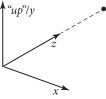图 3.28： 给定一个摄像机位置、从摄像机观察的目标位置以及一个“up”方向，观察变换描述了从一个左手坐标系的变换，其中摄像机位于原点，朝着 \( +z \) 轴方向观察，\( +y \) 轴沿着 up 方向。
为了求出观察变换矩阵的条目，我们使用本节前面描述的原理：变换矩阵的列表示变换对坐标系统基的影响。
/** Transform 函数定义 */
Transform LookAt(Point3f pos, Point3f look, Vector3f up) {
SquareMatrix<4> worldFromCamera;
/** 初始化观察矩阵的第四列 */
/** 初始化观察矩阵的前三列 */
SquareMatrix<4> cameraFromWorld = InvertOrExit(worldFromCamera);
return Transform(cameraFromWorld, worldFromCamera);
}
最简单的列是第四列，它给出了摄像机空间原点 \( [0\ 0\ 0\ 1]^T \) 在世界空间中映射到的点。这显然就是用户提供的摄像机位置。
/** 初始化观察矩阵的第四列 */
worldFromCamera[0][3] = pos.x;
worldFromCamera[1][3] = pos.y;
worldFromCamera[2][3] = pos.z;
worldFromCamera[3][3] = 1;
其他三列并没有更复杂。首先，LookAt() 计算从摄像机位置到观察点的归一化方向向量；这给出了 \( z \) 轴应映射到的向量坐标，从而得到了矩阵的第三列。（在左手坐标系中，摄像机空间的定义是观察方向沿着 \( +z \) 轴。）第一列给出了在摄像机空间中 \( x \) 轴映射到的世界空间方向，通过将用户提供的“up”向量与刚才计算的观察方向向量进行叉乘来求出。最后，通过将观察方向向量与变换后的 \( x \) 轴向量进行叉乘，重新计算“up”向量，从而确保 \( y \) 和 \( z \) 轴是垂直的，并且我们得到一个正交归一化（orthonormal）的观察坐标系。
/** 初始化观察矩阵的前三列 */
Vector3f dir = Normalize(look - pos);
Vector3f right = Normalize(Cross(Normalize(up), dir));
Vector3f newUp = Cross(dir, right);
worldFromCamera[0][0] = right.x;
worldFromCamera[1][0] = right.y;
worldFromCamera[2][0] = right.z;
worldFromCamera[3][0] = 0.;
worldFromCamera[0][1] = newUp.x;
worldFromCamera[1][1] = newUp.y;
worldFromCamera[2][1] = newUp.z;
worldFromCamera[3][1] = 0.;
worldFromCamera[0][2] = dir.x;
worldFromCamera[1][2] = dir.y;
worldFromCamera[2][2] = dir.z;
worldFromCamera[3][2] = 0.;
3.10 应用变换（Applying Transformations）
我们现在可以定义执行适当矩阵乘法来变换点和向量的例程。我们将重载函数应用运算符来描述这些变换；这使我们能够像下面这样编写代码：
Point3f p = ...;
Transform T = ...;
Point3f pNew = T(p);
3.10.1 点（Points）
点变换例程接受一个点 \( (x,y,z) \) 并隐式表示为齐次列向量 \( [x\ y\ z\ 1]^T \) 。然后，通过用变换矩阵左乘（premultiply）这个向量来变换该点。最后，将结果除以 \( w \) 来转换回非齐次点表示。为了提高效率，当权重 \( w=1 \) 时，该方法跳过了对齐次权重 \( w \) 的除法，这对于将在 pbrt 中使用的大多数变换是常见的——只有在第 5 章中定义的投影变换才需要此除法。
/** Transform 内联方法 */
template <typename T>
Point3<T> Transform::operator()(Point3<T> p) const {
T xp = m[0][0] * p.x + m[0][1] * p.y + m[0][2] * p.z + m[0][3];
T yp = m[1][0] * p.x + m[1][1] * p.y + m[1][2] * p.z + m[1][3];
T zp = m[2][0] * p.x + m[2][1] * p.y + m[2][2] * p.z + m[2][3];
T wp = m[3][0] * p.x + m[3][1] * p.y + m[3][2] * p.z + m[3][3];
if (wp == 1)
return Point3<T>(xp, yp, zp);
else
return Point3<T>(xp, yp, zp) / wp;
}
Transform 类还为其变换的每种类型提供了相应的 ApplyInverse() 方法。针对 Point3 的方法对给定点应用其逆变换。调用此方法比先调用 Transform::Inverse() 然后再调用其 operator() 更简洁且通常更高效。
/** Transform 公有方法 */
template <typename T>
Point3<T> ApplyInverse(Point3<T> p) const;
所有后续可以变换的类型也都有 ApplyInverse() 方法，尽管我们不会在书中包含它们。
3.10.2 向量（Vectors）
向量的变换可以以类似的方式计算。然而，矩阵与列向量的乘法被简化，因为隐式齐次 \( w \) 坐标为零。
/** Transform 内联方法 */
template <typename T>
Vector3<T> Transform::operator()(Vector3<T> v) const {
return Vector3<T>(m[0][0] * v.x + m[0][1] * v.y + m[0][2] * v.z,
m[1][0] * v.x + m[1][1] * v.y + m[1][2] * v.z,
m[2][0] * v.x + m[2][1] * v.y + m[2][2] * v.z);
}
3.10.3 法线（Normals）

图 3.29：变换表面法线。(a) 原始的圆，法线在某一点由箭头表示。(b) 当将圆在 \( y \) 方向上缩放为一半高度时，简单地将法线视为一个方向并以相同方式缩放，会导致法线不再垂直于表面。(c) 正确变换的法线。
法线的变换方式与向量不同，如图 3.29 所示。尽管表面的切向量以简单的方式变换，法线却需要特别处理。由于法向量 \( \mathbf{n} \) 和表面上的任何切向量 \( \mathbf{t} \) 在构造上是正交的，我们知道
\[
\mathbf{n}\cdot\mathbf{t} = \mathbf{n}^T\mathbf{t} = 0
\]
当我们通过某个矩阵 \( \mathbf{M} \) 变换表面上的一个点时，变换后点的切向量 \( \mathbf{t}' \) 为 \( \mathbf{M}\mathbf{t} \) 。变换后的法向量 \( \mathbf{n}' \) 应该等于通过某个 \( 4\times4 \) 矩阵 \( \mathbf{S} \) 变换后的 \( \mathbf{S}\mathbf{n} \) 。为了保持正交性要求，我们必须有
\[
\begin{align}
0 &= (\mathbf{n}')^T\mathbf{t}' \\
&= (\mathbf{S}\mathbf{n})^T\mathbf{M}\mathbf{t} \\
&= (\mathbf{n})^T\mathbf{S}^T\mathbf{M}\mathbf{t} \\
\end{align}
\]
该条件在 \( \mathbf{S}^T\mathbf{M} = \mathbf{I} \)，即单位矩阵的情况下成立。因此，\( \mathbf{S}^T = \mathbf{M}^{-1} \)，所以 \( \mathbf{S} = (\mathbf{M}^{-1})^T \)，我们看到法线必须通过变换矩阵的逆的转置进行变换。这个细节是 Transform 包含其逆的原因之一。
请注意，这种方法在变换法线时并不显式计算逆矩阵的转置。它只是以不同的顺序索引逆矩阵（相比于变换 Vector3f 的代码）。
/** Transform 内联方法 */
template <typename T>
Normal3<T> Transform::operator()(Normal3<T> n) const {
T x = n.x, y = n.y, z = n.z;
return Normal3<T>(mInv[0][0] * x + mInv[1][0] * y + mInv[2][0] * z,
mInv[0][1] * x + mInv[1][1] * y + mInv[2][1] * z,
mInv[0][2] * x + mInv[1][2] * y + mInv[2][2] * z);
}
3.10.4 光线（Rays）
变换光线在概念上是非常简单的：只需变换组成它的起点和方向，并复制其他数据成员。（ pbrt 也提供了一个类似的方法来变换 RayDifferential 。）
在 pbrt 中用于管理浮点数舍入误差的方法引入了一些细节，需要对变换后的光线起点进行小幅调整。<<将光线起点偏移到误差界限的边缘并计算 tMax>>片段处理了这些细节；该片段在第 6.8.6 节中定义，其中讨论了舍入误差及 pbrt 处理该误差的机制。
/** Transform 内联方法 */
Ray Transform::operator()(const Ray &r, Float *tMax) const {
Point3fi o = (*this)(Point3fi(r.o));
Vector3f d = (*this)(r.d);
/** 将光线起点偏移到误差界限的边缘并计算 tMax */
if (Float lengthSquared = LengthSquared(d); lengthSquared > 0) {
Float dt = Dot(Abs(d), o.Error()) / lengthSquared;
o += d * dt;
if (tMax)
*tMax -= dt;
}
return Ray(Point3f(o), d, r.time, r.medium);
}
3.10.5 边界框（Bounding Boxes）
变换轴对齐包围盒（AABB）的最简单方法是变换其所有八个角顶点，然后计算一个包含这些点的新的边界框。下面展示了这种方法的实现；本章有一个课后练习要求你实现一种更高效地进行此计算的技术。
/** Transform 方法定义 */
Bounds3f Transform::operator()(const Bounds3f &b) const {
Bounds3f bt;
for (int i = 0; i < 8; ++i)
bt = Union(bt, (*this)(b.Corner(i)));
return bt;
}
3.10.6 变换的复合（Composition of Transformations）
在定义了如何构建表示单个变换类型的矩阵之后，我们现在可以考虑由一系列单个变换所产生的总变换。我们终于将看到用矩阵表示变换的真正价值。
考虑一系列变换 \( \mathbf{A}\mathbf{B}\mathbf{C} \) 。我们希望计算一个新的变换 \( \mathbf{T} \) ，使得应用 \( \mathbf{T} \) 的结果与反向应用 \( \mathbf{A} \)、 \( \mathbf{B} \) 和 \( \mathbf{C} \) 的结果相同；即 \( \mathbf{A}(\mathbf{B}(\mathbf{C}(\text{p}))) = \mathbf{T}(\text{p}) \) 。这样的变换 \( \mathbf{T} \) 可以通过将变换 \( \mathbf{A} \)、 \( \mathbf{B} \) 和 \( \mathbf{C} \) 的矩阵相乘来计算。在 pbrt 中，我们可以写：
Transform T = A * B * C;
然后我们可以像往常一样将 T 应用于 Point3f 的 p ， Point3f pp = T(p) ，而不是依次应用每个变换： Point3f pp = A(B(C(p))) 。
我们在 Transform 类中重载 C++ * 运算符，以计算用另一个变换 t2 后乘（postmultiply） 该变换所得到的新变换。在矩阵乘法中，结果矩阵的地 \( (i,j) \) 个元素是第一个矩阵的第 \( i \) 行与第二个矩阵的第 \( j \) 列的内积。
结果变换的逆等于 t2.mInv * mInv 的乘积。这是矩阵恒等式的结果
\[
(\mathbf{AB})^{-1} = \mathbf{B}^{-1}\mathbf{A}^{-1}
\]
/** Transform 方法定义 */
<<Transform Method Definitions>>+=
Transform Transform::operator*(const Transform &t2) const {
return Transform(m * t2.m, t2.mInv * mInv);
}
3.10.7 变换与坐标系手性（Transformations and Coordinate System Handedness）
某些类型的变换会将左手坐标系变成右手坐标系，反之亦然。一些例程需要知道源坐标系的手性是否与目标坐标系不同。特别是，想要确保表面法线始终指向表面“外部”的例程，在手性发生变化时，可能需要在变换后翻转法线的方向。
幸运的是，判断变换是否改变了手性是很简单的：只有当变换的左上角 \( 3\times3 \) 子矩阵的行列式为负时，才会发生这种情况。
/** Transform 方法定义 */
<<Transform Method Definitions>>+=
bool Transform::SwapsHandedness() const {
SquareMatrix<3> s(m[0][0], m[0][1], m[0][2],
m[1][0], m[1][1], m[1][2],
m[2][0], m[2][1], m[2][2]);
return Determinant(s) < 0;
}
3.10.8 向量框架（Vector Frames）
有时定义一个旋转使得坐标系统中的三个规范正交向量（Orthonormal vectors）与 \( x \)、 \( y \) 和 \( z \) 轴对齐是有用的。将这种变换应用于该坐标系中的方向向量可以简化后续计算。例如，在 pbrt 中，BSDF 评估是在一个表面法线与 \( z \) 轴对齐的坐标系中进行的。除此之外，这使得可以高效地使用诸如第 3.8.3 节中介绍的 CosTheta() 函数来计算三角函数。
Frame 类高效地表示并执行此类变换，避免了 Transform 类的完全通用性（因此也避免了复杂性）。它只需要存储一个 \( 3\times 3 \) 矩阵，存储逆矩阵是没有必要的，因为在规范正交基向量（orthonormal basis vectors）的情况下，逆矩阵仅仅是该矩阵的转置。
/** Frame 定义 */
class Frame {
public:
/** Frame 公有方法 */
Frame() : x(1, 0, 0), y(0, 1, 0), z(0, 0, 1) {}
Frame(Vector3f x, Vector3f y, Vector3f z);
static Frame FromXZ(Vector3f x, Vector3f z) {
return Frame(x, Cross(z, x), z);
}
static Frame FromXY(Vector3f x, Vector3f y) {
return Frame(x, y, Cross(x, y));
}
static Frame FromZ(Vector3f z) {
Vector3f x, y;
CoordinateSystem(z, &x, &y);
return Frame(x, y, z);
}
static Frame FromX(Vector3f x) {
Vector3f y, z;
CoordinateSystem(x, &y, &z);
return Frame(x, y, z);
}
static Frame FromY(Vector3f y) {
Vector3f x, z;
CoordinateSystem(y, &z, &x);
return Frame(x, y, z);
}
static Frame FromX(Normal3f x) {
Vector3f y, z;
CoordinateSystem(x, &y, &z);
return Frame(Vector3f(x), y, z);
}
static Frame FromY(Normal3f y) {
Vector3f x, z;
CoordinateSystem(y, &z, &x);
return Frame(x, Vector3f(y), z);
}
PBRT_CPU_GPU
static Frame FromZ(Normal3f z) { return FromZ(Vector3f(z)); }
Vector3f ToLocal(Vector3f v) const {
return Vector3f(Dot(v, x), Dot(v, y), Dot(v, z));
}
Normal3f ToLocal(Normal3f n) const {
return Normal3f(Dot(n, x), Dot(n, y), Dot(n, z));
}
Vector3f FromLocal(Vector3f v) const {
return v.x * x + v.y * y + v.z * z;
}
Normal3f FromLocal(Normal3f n) const {
return Normal3f(n.x * x + n.y * y + n.z * z);
}
std::string ToString() const {
return StringPrintf("[ Frame x: %s y: %s z: %s ]", x, y, z);
}
/** Frame 公有成员 */
Vector3f x, y, z;
};
给定三个规范正交向量 \( \mathbf{x} \)、 \( \mathbf{y} \) 和 \( \mathbf{z} \) ，将向量变换到其空间的矩阵 \( \mathbf{F} \) 是
\[ \mathbf{F} = \left( \begin{matrix} {\mathbf{x}_x} & {\mathbf{x}_y} & {\mathbf{x}_z} \\ {\mathbf{y}_x} & {\mathbf{y}_y} & {\mathbf{y}_z} \\ {\mathbf{z}_x} & {\mathbf{z}_y} & {\mathbf{z}_z} \\ \end{matrix} \right) = \left( \begin{matrix} {x} \\ {y} \\ {z} \end{matrix} \right) \]
Frame 使用三个 Vector3f 来存储此矩阵。
/** Frame 公有成员 */
Vector3f x, y, z;
三个基向量可以被明确指定；在调试构建中，构造函数中的 DCHECK() 确保提供的向量是规范正交的（orthonormal）。
/** Frame 公有方法 */
Frame() : x(1, 0, 0), y(0, 1, 0), z(0, 0, 1) {}
Frame(Vector3f x, Vector3f y, Vector3f z);
Frame 还提供了便利的方法，可以仅使用两个基向量来构造一个框架，通过叉积计算第三个向量。
/** Frame 公有方法 */
static Frame FromXZ(Vector3f x, Vector3f z) {
return Frame(x, Cross(z, x), z);
}
static Frame FromXY(Vector3f x, Vector3f y) {
return Frame(x, y, Cross(x, y));
}
也可以仅提供 \( z \) 轴向量，在这种情况下，其他向量被任意设置。
/** Frame 公有方法 */
static Frame FromZ(Vector3f z) {
Vector3f x, y;
CoordinateSystem(z, &x, &y);
return Frame(x, y, z);
}
其他多种未在此列出的函数允许使用法向量指定一个框架，和仅通过 \( x \) 或 \( y \) 基向量来指定它。
将向量变换至框架的坐标空间是通过 \( \mathbf{F} \) 矩阵完成的。由于 Vector3f 被用来存储其行，因此矩阵-向量的乘积可以表示为三个点积。
/** Frame 公有方法 */
Vector3f ToLocal(Vector3f v) const {
return Vector3f(Dot(v, x), Dot(v, y), Dot(v, z));
}
还提供了一种用于法向量的 ToLocal() 方法。在这种情况下，我们不需要计算 \( \mathbf{F} \) 的逆转置来变换法线（回顾第 3.10.3 节关于变换法线的讨论）。因为 \( \mathbf{F} \) 是一个规范正交矩阵（其行和列相互正交且都是单位长度），它的逆等于它的转置，所以它已经是它自己的逆转置。
/** Frame 公有方法 */
Normal3f ToLocal(Normal3f n) const {
return Normal3f(Dot(n, x), Dot(n, y), Dot(n, z));
}
将向量从框架的局部空间变换出来的方法是转置 \( \mathbf{F} \) 以找到其逆，然后再与向量相乘。在这种情况下，计算的结果可以表示为矩阵列的三个缩放版本的总和。与之前一样，表面法线作为常规向量进行变换。（该方法不在此处包含。）
/** Frame 公有方法 */
Vector3f FromLocal(Vector3f v) const {
return v.x * x + v.y * y + v.z * z;
}
为了方便，Transform 还有一个接受 Frame 的构造函数。其简单的实现不在此处包含。
/** Transform 公有方法 */
explicit Transform(const Frame &frame);
3.11 交互（Interactions）
本章中的最后两个抽象，SurfaceInteraction 和 MediumInteraction，分别表示在表面上和参与介质中的点的局部信息。例如，第 6 章中的光线-形状相交例程用一个 SurfaceInteraction 返回有关相交点的局部微分几何的信息。随后，第 10 章中的纹理代码使用 SurfaceInteraction 中的值来计算材料属性。与之密切相关的 MediumInteraction 类被用来表示光与参与介质（如烟雾或云）相互作用的点。这些类的所有实现都在文件 interaction.h 和 interaction.cpp 中。
SurfaceInteraction 和 MediumInteraction 都继承自一个通用的 Interaction 类，该类提供了通用的成员变量和方法，这使得系统中对于表面和介质交互之间差异不重要的部分可以纯粹通过 Interaction 来实现。
/** Interaction 定义 */
class Interaction {
public:
/** Interaction 公有方法 */
Interaction() = default;
Interaction(Point3fi pi, Normal3f n, Point2f uv, Vector3f wo, Float time)
: pi(pi), n(n), uv(uv), wo(Normalize(wo)), time(time) {}
Point3f p() const { return Point3f(pi); }
bool IsSurfaceInteraction() const { return n != Normal3f(0, 0, 0); }
bool IsMediumInteraction() const { return !IsSurfaceInteraction(); }
const SurfaceInteraction &AsSurface() const {
CHECK(IsSurfaceInteraction());
return (const SurfaceInteraction &)*this;
}
SurfaceInteraction &AsSurface() {
CHECK(IsSurfaceInteraction());
return (SurfaceInteraction &)*this;
}
// used by medium ctor
PBRT_CPU_GPU
Interaction(Point3f p, Vector3f wo, Float time, Medium medium)
: pi(p), time(time), wo(wo), medium(medium) {}
PBRT_CPU_GPU
Interaction(Point3f p, Normal3f n, Float time, Medium medium)
: pi(p), n(n), time(time), medium(medium) {}
PBRT_CPU_GPU
Interaction(Point3f p, Point2f uv)
: pi(p), uv(uv) {}
PBRT_CPU_GPU
Interaction(const Point3fi &pi, Normal3f n, Float time = 0,
Point2f uv = {})
: pi(pi), n(n), uv(uv), time(time) {}
PBRT_CPU_GPU
Interaction(const Point3fi &pi, Normal3f n, Point2f uv)
: pi(pi), n(n), uv(uv) {}
PBRT_CPU_GPU
Interaction(Point3f p, Float time, Medium medium)
: pi(p), time(time), medium(medium) {}
PBRT_CPU_GPU
Interaction(Point3f p, const MediumInterface *mediumInterface)
: pi(p), mediumInterface(mediumInterface) {}
PBRT_CPU_GPU
Interaction(Point3f p, Float time, const MediumInterface *mediumInterface)
: pi(p), time(time), mediumInterface(mediumInterface) {}
PBRT_CPU_GPU
const MediumInteraction &AsMedium() const {
CHECK(IsMediumInteraction());
return (const MediumInteraction &)*this;
}
PBRT_CPU_GPU
MediumInteraction &AsMedium() {
CHECK(IsMediumInteraction());
return (MediumInteraction &)*this;
}
std::string ToString() const;
Point3f OffsetRayOrigin(Vector3f w) const {
return pbrt::OffsetRayOrigin(pi, n, w);
}
Point3f OffsetRayOrigin(Point3f pt) const {
return OffsetRayOrigin(pt - p());
}
RayDifferential SpawnRay(Vector3f d) const {
return RayDifferential(OffsetRayOrigin(d), d, time, GetMedium(d));
}
Ray SpawnRayTo(Point3f p2) const {
Ray r = pbrt::SpawnRayTo(pi, n, time, p2);
r.medium = GetMedium(r.d);
return r;
}
PBRT_CPU_GPU
Ray SpawnRayTo(const Interaction &it) const {
Ray r = pbrt::SpawnRayTo(pi, n, time, it.pi, it.n);
r.medium = GetMedium(r.d);
return r;
}
Medium GetMedium(Vector3f w) const {
if (mediumInterface)
return Dot(w, n) > 0 ? mediumInterface->outside :
mediumInterface->inside;
return medium;
}
Medium GetMedium() const {
return mediumInterface ? mediumInterface->inside : medium;
}
/** Interaction 公有成员 */
Point3fi pi;
Float time = 0;
Vector3f wo;
Normal3f n;
Point2f uv;
const MediumInterface *mediumInterface = nullptr;
Medium medium = nullptr;
};
有多种 Interaction 构造函数可用；根据所构建的交互类型以及相关的信息类型，接受相应的参数集。下面这个其中最通用的一种。
/** Interaction 公有方法 */
Interaction(Point3fi pi, Normal3f n, Point2f uv, Vector3f wo, Float time)
: pi(pi), n(n), uv(uv), wo(Normalize(wo)), time(time) {}
所有交互都有一个与它们相关的点 \( \text{p} \)。这个点使用 Point3fi 类进行存储，该类使用 Interval 来表示每个坐标值。存储一小段浮点值而不是单个 Float 使得能够表示交点的数值误差的边界，这种情况发生在通过光线交点计算得出点 \( \text{p} \) 时。该信息将有助于避免光线离开表面时出现不正确的自交，如第 6.8.6 节将讨论的。
/** Interaction 公有成员 */
Point3fi pi;
Interaction 提供了一种便捷的方法，返回一个常规的 Point3f ，用于系统中不需要考虑任何误差的交互点（例如，纹理评估例程）。
/** Interaction 公有方法 */
Point3f p() const { return Point3f(pi); }
所有交互也都有一个与它们相关的时间。除了其他用途外，这个值对于设置离开交互的生成光线（a spawned ray leaving the interaction）的时间是必要的。
/** Interaction 公有成员 */
Float time = 0;
对于沿光线的交互（无论是来自光线与形状的交点还是光线穿过参与介质），负光线方向存储在成员变量 wo 中，对应于 \( \omega_\text{o} \) ，这是我们在计算光照时用于表示出射方向的符号。对于其他类型的交互点，其中出射方向的概念不适用的（例如，通过随机采样形状表面上的点求出的点），wo 的值为 \( (0,0,0) \)。
/** Interaction 公有成员 */
Vector3f wo;
对于表面上的交互，n 存储了该点的表面法线，而 uv 存储了其 \( (u,v) \) 参数坐标。可以合理地问，为什么这些值存储在基类 Interaction 中而不是在 SurfaceInteraction 中？原因是系统中有一些部分 通常 不关心表面和介质交互之间的区别——例如，一些在要照亮给定点的光源进行采样点的例程。如果这些值可用，它们会被使用；如果设置为零，则会被忽略。通过接受这里将它们放在错误位置的小不和谐，这些方法的实现和调用它们的代码变得更加简单。
/** Interaction 公有成员 */
Normal3f n;
Point2f uv;
可以检查指向 Interaction 的指针或引用是否属于两个子类之一。非零的表面法线被用作表面的区分符。
/** Interaction 公有方法 */
bool IsSurfaceInteraction() const { return n != Normal3f(0, 0, 0); }
bool IsMediumInteraction() const { return !IsSurfaceInteraction(); }
还提供了将类型转换为子类类型的方法。这是进行运行时检查的好地方，以确保请求的转换是有效的。此方法的 non-const 变体和对应的 AsMedium() 方法都与之类似，未包含在文本中。
/** Interaction 公有方法 */
const SurfaceInteraction &AsSurface() const {
CHECK(IsSurfaceInteraction());
return (const SurfaceInteraction &)*this;
}
交互也可以表示两种使用第 11.4 节中定义的 MediumInterface 类实例的参与介质之间的接口，或在其点上使用 Medium 的散射介质的属性。在这里，Interaction 的抽象也会泄漏（abstraction leaks）：表面可以表示介质之间的接口，而在介质内部的某一点上，虽然没有接口，但存在当前介质。这两个值都存储在 Interaction 中，出于与 n 和 uv 相同的便利原因。
/** Interaction 公有成员 */
const MediumInterface *mediumInterface = nullptr;
Medium medium = nullptr;
3.11.1 表面交互（Surface Interaction）
如前所述，表面上某一点的几何结构（通常是通过将光线与表面相交计算出的位置）由 SurfaceInteraction 表示。拥有这种抽象使得系统的大部分能够处理表面上的点，而无需考虑点所处的特定几何形状。
/** SurfaceInteraction 定义 */
class SurfaceInteraction : public Interaction {
public:
/** SurfaceInteraction 公有方法 */
SurfaceInteraction() = default;
SurfaceInteraction(Point3fi pi, Point2f uv, Vector3f wo, Vector3f dpdu,
Vector3f dpdv, Normal3f dndu, Normal3f dndv, Float time,
bool flipNormal)
: Interaction(pi, Normal3f(Normalize(Cross(dpdu, dpdv))), uv, wo, time),
dpdu(dpdu), dpdv(dpdv), dndu(dndu), dndv(dndv) {
<<Initialize shading geometry from true geometry>>
<<Adjust normal based on orientation and handedness>>
}
SurfaceInteraction(Point3fi pi, Point2f uv, Vector3f wo,
Vector3f dpdu, Vector3f dpdv, Normal3f dndu,
Normal3f dndv, Float time, bool flipNormal,
int faceIndex)
: SurfaceInteraction(pi, uv, wo, dpdu, dpdv, dndu, dndv, time, flipNormal) {
this->faceIndex = faceIndex;
}
void SetShadingGeometry(Normal3f ns, Vector3f dpdus, Vector3f dpdvs,
Normal3f dndus, Normal3f dndvs, bool orientationIsAuthoritative) {
<<Compute shading.n for SurfaceInteraction>>
<<Initialize shading partial derivative values>>
}
std::string ToString() const;
void SetIntersectionProperties(Material mtl, Light area,
const MediumInterface *primMediumInterface, Medium rayMedium) {
material = mtl;
areaLight = area;
<<Set medium properties at surface intersection>>
}
PBRT_CPU_GPU
void ComputeDifferentials(const RayDifferential &r, Camera camera,
int samplesPerPixel);
PBRT_CPU_GPU
void SkipIntersection(RayDifferential *ray, Float t) const;
using Interaction::SpawnRay;
RayDifferential SpawnRay(const RayDifferential &rayi, const BSDF &bsdf,
Vector3f wi, int /*BxDFFlags*/ flags, Float eta) const;
BSDF GetBSDF(const RayDifferential &ray,
SampledWavelengths &lambda, Camera camera,
ScratchBuffer &scratchBuffer, Sampler sampler);
BSSRDF GetBSSRDF(const RayDifferential &ray,
SampledWavelengths &lambda, Camera camera,
ScratchBuffer &scratchBuffer);
PBRT_CPU_GPU
SampledSpectrum Le(Vector3f w, const SampledWavelengths &lambda) const;
/** SurfaceInteraction 公有成员 */
Vector3f dpdu, dpdv;
Normal3f dndu, dndv;
struct {
Normal3f n;
Vector3f dpdu, dpdv;
Normal3f dndu, dndv;
} shading;
int faceIndex = 0;
Material material;
Light areaLight;
Vector3f dpdx, dpdy;
Float dudx = 0, dvdx = 0, dudy = 0, dvdy = 0;
};
除了来自 Interaction 基类的表面参数设定中的点 \( \text{p} \)、表面法线 \( \mathbf{n} \) 和 \( (u,v) \) 坐标外，SurfaceInteraction 还存储了点的参数偏导数（parametric partial derivatives） \( \partial \text{p}/\partial u \) 和 \( \partial \text{p}/\partial v \)，以及表面法线的偏导数 \( \partial\mathbf{n}/\partial u \) 和 \( \partial\mathbf{n}/\partial v \)。有关这些值的示意图，请参见图 3.30。
/** SurfaceInteraction 公有成员 */
Vector3f dpdu, dpdv;
Normal3f dndu, dndv;
图 3.30：点 \( \text{p} \) 周围的局部微分几何（Local Differential Geometry）。 表面的参数偏导数 \( \partial \text{p}/\partial u \) 和 \( \partial \text{p}/\partial v \) 位于切平面内，但不一定正交。表面法线 \( \mathbf{n} \) 由 \( \partial \text{p}/\partial u \) 和 \( \partial \text{p}/\partial v \) 的叉积给出。向量 \( \partial\mathbf{n}/\partial u \) 和 \( \partial\mathbf{n}/\partial v \) 记录了当我们沿表面移动 \( u \) 和 \( v \) 时表面法线的微分变化。
这种表示隐含地假设形状具有参数描述（parametric description）——即对于某些范围的 \( (u,v) \) 值，表面上的点由某个函数 \( f \) 给出，使得 \( \text{p}=f(u,v) \) 。尽管并非所有形状都符合这一点，但 pbrt 支持的所有形状至少具有一个局部参数描述，因此我们将坚持使用参数表示，因为这一假设在其他地方也是有帮助的（例如，在第 10 章中用于纹理的抗锯齿处理）。
SurfaceInteraction 的构造函数接受参数来设置所有这些值。它通过偏导数的叉积计算法线。
/** SurfaceInteraction 公有方法 */
SurfaceInteraction(Point3fi pi, Point2f uv, Vector3f wo, Vector3f dpdu,
Vector3f dpdv, Normal3f dndu, Normal3f dndv, Float time,
bool flipNormal)
: Interaction(pi, Normal3f(Normalize(Cross(dpdu, dpdv))), uv, wo, time),
dpdu(dpdu), dpdv(dpdv), dndu(dndu), dndv(dndv) {
/** 从真实几何初始化着色几何（Initialize shading geometry from true geometry） */
/** 根据方向和手性调整法线（Adjust normal based on orientation and handedness） */
}
SurfaceInteraction 存储了一个表面法线的第二个实例以及各种偏导数，以表示这些量的可能受到扰动的值——这些值可以通过凹凸映射（bump mapping）或与网格的每个顶点法线插值生成。系统的某些部分使用这种着色几何（shading geometry），而其他部分则需要处理原始量。
/** SurfaceInteraction 公共成员 */
struct {
Normal3f n;
Vector3f dpdu, dpdv;
Normal3f dndu, dndv;
} shading;
着色几何的值在构造函数中初始化，以匹配原始表面几何。如果存在着色几何，通常在 SurfaceInteraction 的构造函数运行后的一段时间内不会计算。稍后将定义的 SetShadingGeometry() 方法更新着色几何。
/** 从真实几何初始化着色几何 */
shading.n = n;
shading.dpdu = dpdu;
shading.dpdv = dpdv;
shading.dndu = dndu;
shading.dndv = dndv;
表面法线对 pbrt 具有特殊意义，它假设对于封闭形状（closed shapes），法线的方向指向形状的外部。对于用作面光源（area light source）的几何体，光默认仅从法线指向的一侧发出；另一侧为黑色。由于法线具有这种特殊意义，pbrt 提供了一种机制，允许用户反转法线的方向，使其指向相反的方向。在 pbrt 输入文件中的 ReverseOrientation 指令（directive）会将法线翻转，使其指向相反、非默认的方向。因此，有必要检查给定的 Shape 是否设置了相应的标志，如果是，则在此处切换法线的方向。
然而，还有一个因素影响法线的方向，也必须在这里考虑。如果一个形状的变换矩阵将对象坐标系的手性从 pbrt 的默认左手坐标系切换到右手坐标系，我们也需要切换法线的方向。要理解为什么会这样，考虑一个缩放矩阵 \( \mathbf{S}(1,1,-1) \) 。我们自然会期望这个缩放会切换法线的方向，尽管因为我们是通过 \( \mathbf{n} = \partial\text{p}/\partial u \times \partial\text{p}/\partial v \) 计算法线的，
\[ \begin{align} \mathbf{S}(1,1,-1)\frac{\partial\text{p}}{\partial u} \times \mathbf{S}(1,1,-1)\frac{\partial\text{p}}{\partial v} &= \mathbf{S}(-1,-1,1)\left(\frac{\partial\text{p}}{\partial u} \times \frac{\partial\text{p}}{\partial v} \right) \\ &= \mathbf{S}(-1,-1,1)\mathbf{n} \\ &\neq \mathbf{S}(1,1,-1)\mathbf{n} \end{align} \]
因此，如果变换改变了坐标系统的手性，则有必要翻转法线的方向，因为使用叉积计算法线方向时不会考虑到这一翻转。调用者传递的标志指示是否需要进行此翻转。
/** 根据方向和手性调整法线 */
if (flipNormal) {
n *= -1;
shading.n *= -1;
}
pbrt 还提供了将整数索引与多边形网格的每个面关联的能力。这些信息用于某些纹理映射操作。一个单独的 SurfaceInteraction 构造函数允许指定它。
/** SurfaceInteraction 公有成员 */
int faceIndex = 0;
当计算着色坐标框架（shading coordinate frame）时，SurfaceInteraction 通过其 SetShadingGeometry() 方法进行更新。
/** SurfaceInteraction 公有方法 */
void SetShadingGeometry(Normal3f ns, Vector3f dpdus, Vector3f dpdvs,
Normal3f dndus, Normal3f dndvs, bool orientationIsAuthoritative) {
/** 计算 SurfaceInteraction 的 shading.n */
shading.n = ns;
if (orientationIsAuthoritative)
n = FaceForward(n, shading.n);
else
shading.n = FaceForward(shading.n, n);
/** 初始化着色偏导数的值 */
shading.dpdu = dpdus;
shading.dpdv = dpdvs;
shading.dndu = dndus;
shading.dndv = dndvs;
}
在执行与之前相同的叉乘（并可能翻转法线的朝向）以计算初始着色法线后，实现接着会根据需要翻转着色法线或真实几何法线，以确保这两个法线位于同一半球内。由于着色法线通常表示几何法线的相对较小的扰动（perturbation），因此它们应该始终位于同一半球内。根据上下文，几何法线或着色法线中的一个可能更权威地指向表面的正确“外侧”，因此调用者传递一个布尔值，以确定在需要时应翻转哪一个。
/** 计算 SurfaceInteraction 的 shading.n */
shading.n = ns;
if (orientationIsAuthoritative)
n = FaceForward(n, shading.n);
else
shading.n = FaceForward(shading.n, n);
在设置法线后，各种偏导数可以被复制。
/** 初始化着色偏导数的值 */
shading.dpdu = dpdus;
shading.dpdv = dpdvs;
shading.dndu = dndus;
shading.dndv = dndvs;
3.11.2 介质互动（Medium Interaction）
如前所述，MediumInteraction 类用于表示在散射介质（如烟雾或云）中的某一点的交互。
/** MediumInteraction 定义 */
class MediumInteraction : public Interaction {
public:
/** MediumInteraction 公有方法 */
MediumInteraction(Point3f p, Vector3f wo, Float time, Medium medium,
PhaseFunction phase)
: Interaction(p, wo, time, medium), phase(phase) {}
std::string ToString() const;
/** MediumInteraction 公有成员 */
PhaseFunction phase;
};
与 SurfaceInteraction 相比，它对基类 Interaction 添加的内容很少。唯一的补充是一个 PhaseFunction ，它描述了介质中的粒子如何散射光。相位函数和 [PhaseFunction] 类在第 11.3 节中介绍。
/** MediumInteraction 公有方法 */
MediumInteraction(Point3f p, Vector3f wo, Float time, Medium medium,
PhaseFunction phase)
: Interaction(p, wo, time, medium), phase(phase) {}
/** MediumInteraction 公有成员 */
PhaseFunction phase;
延伸阅读（Further Reading）
DeRose、Goldman 及其合作者提出了一种优雅的“无坐标（coordinate-free）”方法来描述图形的向量几何，其中位置和方向恰好用特定坐标系的 \( (x,y,z) \) 坐标表示的事实被淡化，而点和向量本身记录了它们所表达的坐标系（Goldman 1985；DeRose 1989；Mann 等，1997）。这使得软件层能够确保常见错误，例如在一个坐标系中将向量与另一个坐标系中的点相加，可以通过先将它们转换为一个公共坐标系来透明地处理。Geisler 等（2020）描述了一种相关的方法，他们使用编程语言的类型系统对坐标系进行了编码。我们在 pbrt 中没有遵循这两种方法，尽管它们背后的原则在处理计算机图形中的坐标系时非常值得理解和牢记。
施耐德和埃伯利的 《计算机图形学的几何工具》（Geometric Tools for Computer Graphics） 受到无坐标方法的影响，涵盖了本章主题的更深层次内容（施耐德和埃伯利 2003）。该书还包含了许多用于图形的有用几何算法。罗杰斯和亚当斯的 《计算机图形学的数学元素》（Mathematical Elements for Computer Graphics）（1990）是本章主题的经典且更传统的介绍。需要注意的是，他们的书使用行向量表示点和向量，这意味着在他们的框架中，我们的矩阵会被转置，并且他们通过矩阵乘以点和向量来进行变换 \( (\text{p}\mathbf{M}) \)，而不是像我们那样将矩阵乘以点 \( \mathbf{M}\text{p} \)。齐次坐标在本章中仅被简要提及，尽管它们是投影几何的基础，许多优雅算法的基础。斯托尔菲的书是该主题的优秀介绍（斯托尔菲 1991）。
关于线性代数和向量几何，有许多优秀的书籍。我们发现 Lang（1986）和 Buck（1978）在这些主题上是很好的参考。另请参阅 Akenine-Möller 等人的 《实时渲染》（Real-Time Rendering） 一书（2018），该书为线性代数提供了扎实的图形基础介绍。Ström 等人撰写了一本优秀的在线线性代数书籍，immersivemath.com，书中包含互动图形，展示了关键概念（2020）。
Donnay 的书（1945）对球面三角学进行了简明而全面的介绍。方程（3.6）中三角形的立体角表达式源于 Van Oosterom 和 Strackee（1983）。
一种设计向量数学库的替代方法是由 Guennebaud、Jacob 等人（2010）提出的广泛使用的 eigen 系统。除了支持 CPU SIMD 向量指令集外，它还广泛使用 表达式模板（expression templates），这是一种 C++编程技术，使得在编译时简化和优化向量及矩阵表达式的评估成为可能。
法向量变换的细微之处在图形学界首次被广泛理解，源于 Wallis（1990）和 Turkowski（1990b）的文章。
Cigolle 等人（2014）比较了多种紧凑编码单位向量的方法。 OctahedralVector 中实现的方法源于 Meyer 等人（2010），他们还表明，如果使用 52 位进行这种表示，精度等同于归一化的 Vector3f。 （我们的实现还包括 Cigolle 等人（2014）建议的改进。）它所基于的八面体编码是由 Praun 和 Hoppe（2003）提出的。
第 3.8.3 节中的等面积球面映射算法源于 Clarberg（2008）；我们对映射函数的实现来自于该论文附带的高性能 CPU SIMD 实现。其基于的正方形到半球的映射是由 Shirley 和 Chiu（1997）开发的。
在 CoordinateSystem() 中使用的算法基于 Frisvad（2012）首次提出的方法。我们在实现中使用的提高数值精度的重构是由 Duff 等人（2017）和 Max（2017）同时提出的。在 RotateFromTo() 中实现的算法是由 Möller 和 Hughes（1999）引入的，Hughes（2021）对反射向量的计算进行了调整。
本章定义的数值稳健的 AngleBetween() 函数源于 Hatch（2003）。
Barequet 和 Elber（2005）提出了一种计算多个方向向量的 紧凑边界圆锥（tight bounding cone） 的算法。
参考文献（References）
- Akenine-Möller, T., E. Haines, N. Hoffman, A. Peesce, M. Iwanicki, and S. Hillaire. 2018. Real-Time Rendering (4th ed.). Boca Raton, FL: CRC Press.
- Arvo, J. 1990. Transforming axis-aligned bounding boxes. In A. S. Glassner (ed.), Graphics Gems I, 548–50. San Diego: Academic Press.
- Barequet, G., and G. Elber. 2005. Optimal bounding cones of vectors in three dimensions. Information Processing Letters 93 (2), 83–89.
- Buck, R. C. 1978. Advanced Calculus. New York: McGraw-Hill.
- Cigolle, Z. H., S. Donow, D. Evangelakos, M. Mara, M. McGuire, and Q. Meyer. 2014. Survey of efficient representations for independent unit vectors. Journal of Computer Graphics Techniques (JCGT) 3 (2), 1–30.
- Clarberg, P. 2008. Fast equal-area mapping of the (hemi)sphere using SIMD. Journal of Graphics Tools 13 (3), 53–68.
- DeRose, T. D. 1989. A Coordinate-Free Approach to Geometric Programming. Math for SIGGRAPH, SIGGRAPH Course Notes #23. Also available as Technical Report No. 89-09-16, Department of Computer Science and Engineering, University of Washington, Seattle.
- Donnay, J. D. H. 1945. Spherical Trigonometry after the Cesàro Method. New York, NY: Interscience Publishers.
- Duff, T., J. Burgess, P. Christensen, C. Hery, A. Kensler, M. Liani, and R. Villemin. 2017. Building an orthonormal basis, revisited. Journal of Computer Graphics Techniques (JCGT) 6 (1), 1–8.
- Frisvad, J. R. 2012. Building an orthonormal basis from a 3d unit vector without normalization. Journal of Graphics Tools 16 (3), 151–159.
- Geisler, D., I. Yoon, A. Kabra, H. He, Y. Sanders, and A. Sampson. 2020. Geometry types for graphics programming. Proceedings of the ACM on Programming Languages (OOPSLA 2020) 4, 173:1–25.
- Goldman, R. 1985. Illicit expressions in vector algebra. ACM Transactions on Graphics 4 (3), 223–43.
- Guennebaud, G., B. Jacob, and others. 2010. Eigen v3. http://eigen.tuxfamily.org.
- Hatch, D. 2003. The right way to calculate stuff. http://www.plunk.org/ hatch/rightway.html.
- Hughes, J. F. 2021. Personal communication.
- Lang, S. 1986. An Introduction to Linear Algebra. New York: Springer-Verlag.
- Möller, T., and J. Hughes. 1999. Efficiently building a matrix to rotate one vector to another. Journal of Graphics Tools 4 (4), 1–4.
- Mann, S., N. Litke, and T. DeRose. 1997. A coordinate free geometry ADT. Research Report CS-97-15, Computer Science Department, University of Waterloo.
- Max, N. 2017. Improved accuracy when building an orthonormal basis. Journal of Computer Graphics Techniques (JCGT) 6 (1), 9–16.
- Meyer, Q., J. Süssmuth, G. Sussner, M. Stamminger, and G. Greiner. 2010. On floating-point normal vectors. Proceedings of the 21st Eurographics Conference on Rendering, 1405–9.
- Praun, E., and Hoppe, H. 2003. Spherical parameterization and remeshing. ACM Transactions on Graphics (Proceedings of SIGGRAPH 2003) 22 (3), 340–49.
- Rogers, D. F., and J. A. Adams. 1990. Mathematical Elements for Computer Graphics. New York: McGraw-Hill.
- Schneider, P. J., and D. H. Eberly. 2003. Geometric Tools for Computer Graphics. San Francisco: Morgan Kaufmann.
- Shirley, P., and K. Chiu. 1997. A low distortion map between disk and square. Journal of Graphics Tools 2 (3), 45–52.
- Stolfi, J. 1991. Oriented Projective Geometry. San Diego: Academic Press.
- Ström, J., K. Åström, and T. Akenine-Möller. 2020. Immersive linear algebra. immersivemath.com.
- Turkowski, K. 1990b. Properties of surface-normal transformations. In A. S. Glassner (ed.), Graphics Gems I, 539–47. San Diego: Academic Press.
- Van Oosterom, A., and J. Strackee. 1983. The solid angle of a plane triangle. IEEE Transactions on Biomedical Engineering BME-30 (2), 125–26.
- Wallis, B. 1990. Forms, vectors, and transforms. In A. S. Glassner (ed.), Graphics Gems I, 533–38. San Diego: Academic Press.
练习（Exercises）
① 1.找到一种更有效的方法来转换轴对齐的包围盒，利用问题的对称性（symmetries）：因为八个角点是三个轴对齐基向量和一个单一角点的线性组合，它们的变换边界框可以比我们所提出的方法（Arvo 1990）更高效地求出。
② 2.可以通过使用许多非正交平面（nonorthogonal slabs）的交集来计算物体周围的更紧密边界，而不是使用框。扩展 pbrt 中的边界框表示，以允许用户指定由任意平面组成的边界。
② 3.DirectionCone::BoundSubtendedDirections() 方法通过首先找到一个包围 Bounds3f 的球体，然后限制其从给定参考点所形成的方向，来界定一个 Bounds3f 的方向。虽然这提供了一个有效的界限，但不一定是可能的最小界限。推导出一个改进的算法，直接作用于包围盒，更新 BoundSubtendedDirections() 的实现，并渲染使用该方法的场景（例如，使用 BVHLightSampler 来采样光源的场景）。运行时间和图像质量会受到怎样的影响？你能找到一个这种变化带来显著好处的场景吗？
① 4.修改 pbrt 使其像 Vector3f 一样变换 Normal3f ，并创建一个由于此错误而产生明显不正确图像的场景。（完成后不要忘记从您的源代码副本中还原此更改！）
4 辐射度量学、光谱与颜色（Radiometry, Spectra, and Color）
为了准确描述光是如何被表示和采样以计算图像，我们必须首先建立一些 辐射度量学（radiometry） 的背景——即环境中电磁辐射传播（propagation of electromagnetic radiation）的研究。在本章中，我们将首先介绍四个描述电磁辐射的关键量：通量（flux）、强度（intensity）、辐照度（irradiance）和辐亮度（radiance）。
这些辐射度的量通常随波长变化而变化。每个量的变化由其 光谱分布（spectral distribution） 描述——一个给出每个波长的光量的分布函数。（我们将交替使用 光谱（spectrum） 来描述光谱分布，使用 光谱（spectra） 来描述多个它们。）在渲染中，我们更感兴趣的是波长（ \( \lambda \) ）介于约在 380 纳米到 780 纳米之间的电磁辐射，对应于人类可见光。†（可感知波长的完整范围略微超出了这个区间，尽管在这些波长下人眼的敏感度低了许多数量级。在绘制光谱曲线时，360–830 纳米的范围通常被用作保守的界限。）在 pbrt 中用于表示光谱分布的各种类在第 4.5 节中定义。
虽然光谱分布是一个纯粹的物理概念，但颜色与人类如何感知光谱有关。光的较短波长（ \( \lambda \approx 400 \text{nm} \) ）被称为蓝色（bluish colors），中等波长（ \( \lambda \approx 500 \text{nm} \) ）为绿色，而较长波长（ \( \lambda \approx 650 \text{nm} \) ）则为红色。准确的颜色模型非常重要，原因有二：首先，显示设备如显示器期望使用颜色而非光谱来描述像素值，因此将光谱准确转换为适当的颜色对于显示渲染图像至关重要。其次，场景中物体的发射（emission）和反射（reflection）特性通常使用颜色来指定；这些颜色必须转换为光谱以便用于渲染。本章末尾的第 4.6 节将更详细地描述颜色的特性，并包括 pbrt 的颜色相关函数的实现。
4.1 辐射度量学（Radiometry）
辐射度量学提供了一套描述光的传播和反射的思想和数学工具。它构成了本书其余部分所使用的渲染算法的推导的基础。有趣的是，辐射度量学最初并不是根据光物理学的第一原理推导出来的，而是基于粒子在空间中流动的光的抽象构建的。因此，像光的偏振（polarization）这样的效应并不能自然地融入这个框架，尽管后来辐射度量学与麦克斯韦方程组之间建立了联系，为辐射度量学奠定了坚实的物理学基础。
辐射传输（Radiative transfer） 是辐射能量传输的现象学研究（phenomenological study）。它基于辐射度量的原理，并在 几何光学（geometric optics） 层面上运作，在这个层面上，光的宏观特性足以描述光如何与比光的波长大得多的物体相互作用。将光的波动光学模型中的现象纳入考虑并不罕见，但这些结果需要用辐射传输的基本抽象语言来表达。
通过这种方式，可以描述光和尺寸与光波长大致相同的物体之间的相互作用，从而为色散（dispersion）和干涉（interference）等效应建模。在更细的细节层面上，需要量子力学来描述光与原子的相互作用。幸运的是，直接模拟量子力学原理并不是解决计算机图形学中的渲染问题所必需的，因此避免了这种方法的难处理性。
在 pbrt 中，我们将假设几何光学是描述光和光散射的适当模型。这导致了一些关于光行为的基本假设，这些假设将在整个系统中隐含使用：
- 线性（Linearity）： 光学系统中两个输入的综合效应（combined effect）始终等于每个独立输入效应的总和。非线性散射行为仅在涉及极高能量的物理实验中观察到，因此这通常是一个合理的假设。
- 能量守恒（Energy conservation）： 当光从表面或参与介质中散射时，散射事件产生的能量永远不会超过其初始能量。
- 无偏振（No polarization）： 包括可见光在内的电磁辐射都是 偏振的（polarized）。偏振的一个容易理解的类比是沿着绷紧的弦传播的振动。拨动弦的一端会产生垂直的波，并传播至另一端。然而，除了简单的线性运动，绷紧的弦还可以传导其他类型的振荡：运动可以是顺时针或逆时针，并呈圆形或椭圆形。所有这些可能性在光的情况下也同样存在。有趣的是，这种光的额外偏振状态在没有额外辅助工具（如专业相机或偏振太阳镜）的情况下，基本上对人类是不可感知的。因此，在 pbrt 中，我们将做出一个常见的假设，即光是不偏振的（unpolarized）——即对于许多不同偏振的波的叠加，我们只能感知到它们的平均行为。因此，与光唯一相关的属性是它的波长（或等同于，频率）的分布。
- 无荧光或磷光（No fluorescence or phosphorescence）： 光在一种波长下的行为与其他波长或时间的光的行为完全独立。与偏振一样，如果需要，包含这些效应并不太困难。
- 稳态（Steady state）： 环境中的光被假设为已达到平衡（equilibrium），因此其辐射分布随时间不发生变化。在现实场景中，光几乎瞬间达到这一状态，因此在实际应用中并不是一个限制。请注意，磷光也违反了稳态假设。
采用几何光学模型最显著的损失是与衍射（diffraction）和干涉（interference）效应的不兼容性。尽管这种不兼容性可以通过某些方法来规避——例如，通过用 维格纳分布函数（Wigner distribution function） 的概念替代辐射亮度（radiance）（Oh 2010，Cuypers 等，2012）——但这些扩展超出了本书的范围。
4.1.1 基本量（Basic Quantities）
渲染中有四个与辐射度量相关的量：通量（flux）、辐射照度（辐照度）/辐射出射度（irradiance / radiant exitance）、强度（intensity）和辐射亮度（辐亮度）（radiance）。它们可以用能量逐次对时间、面积和方向求极限来推导得出。所有这些辐射度量的量通常依赖于波长，尽管我们将在第 4.1.3 节才讨论这一主题。
能量（Energy）
我们的起点是能量，单位为焦耳（J）（joules）。光源发射光子（photons），每个光子具有特定的波长并携带特定的能量。所有基本的辐射度量量实际上是测量光子的不同方式。波长为 \( \lambda \) 的光子携带能量
\[
Q = \frac{hc}{\lambda}
\]
其中 \( c \) 是光速，\( \text{299,472,458m/s} \) ，而 \( h \) 是普朗克常数（Planck’s constant）， \( h \approx 6.626\times10^{-34}\text{m}^2\text{kg/s} \)。
通量（Flux）
能量测量是在一段时间内进行的，但是在渲染中通常使用稳态假设，我们主要关注的是测量瞬时（instant）的光。 辐射通量（Radiant flux），也称为 功率（power），是单位时间内通过某个表面或空间区域的总能量。辐射通量可以通过求每微分时间的微分能量的极限来计算：
\[
\Phi = \lim_{\Delta t \rightarrow 0}\frac{\Delta Q}{\Delta t} = \frac{\text{d}Q}{\text{d}t}
\]
其单位是焦耳/秒（J/s），或更常见的瓦特（W）（watts）。
例如，给定一个光，光在一个小时内发出 \( Q = 200,000\text{J} \)，如果在这一小时内始终发出相同的能量，我们可以得出光源的通量为
\[ \Phi = \text{200,000J/3600s} \approx 55.6\text{W} \]
相反，给定通量作为时间的函数，我们可以在一段时间范围内进行积分，来计算总能量：
\[
Q = \int_{t_0}^{t_1} \Phi(t)\text{d}t
\]
请注意，我们的符号在这里略显非正式：除其他问题外，由于光子是离散的量子，因此对微分时间求趋近于零的极限是没有意义的。对于渲染而言，光子的数量相对于我们感兴趣的测量是巨大的，这一细节并不成问题。
光源的总发射量通常用通量来描述。图 4.1 显示了从点光源测得的通量，即通过围绕光源的假象球体的总能量。请注意，图 4.1 中两个球体上测得的总通量是相同的——尽管通过大球体的任意局部部分的能量少于小球体，但大球体的面积更大，这意味着总通量是相同的。
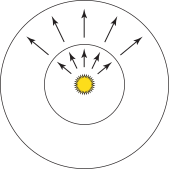图 4.1： 辐射通量 \( \Phi \) 测量通过表面或空间区域的能量。在这里，从点光源发出的通量在环绕光源的球体上进行测量。
辐射照度和辐射出射度（Irradiance and Radiant Exitance）
任何通量的测量都需要一个单位时间测量光子的面积。给定一个有限的面积 \( A \) ，我们可以定义该区域的平均功率密度为 \( E = \Phi / A \)。这个量要么是 辐射照度（irradiance）（E），即到达表面的通量的面积密度（受照面单位面积上的辐射通量），要么是 辐射出射度（radiant exitance）（M），即离开表面的通量的面积密度。这些测量的单位是 \( \text{W/m}^2 \)。（ 辐照度 这个术语有时也用于指离开表面的通量，但为了清晰起见，我们将对这两种情况使用不同的术语。）
对于图 4.1 中的点光源示例，外球面上某点的辐照度小于内球面上某点的辐照度，因为外球面的表面积更大。特别是，如果点光源在所有方向上发出相同的光照量，那么对于半径为 \( r \) 的球体，
\[
E = \frac{\Phi}{4\pi r^2}
\]
这一事实解释了为什么从光源在某一点接收到的能量随着与光源距离的平方而减少。
更一般地，我们可以通过在点 \( \text{p} \) 处求每微分面积的微分功率的极限来定义辐照度和辐射出射度：
\[
E(\text{p}) = \lim_{\Delta A\rightarrow 0}\frac{\Delta \Phi(\text{p})}{\Delta A} = \frac{\text{d}\Phi(\text{p})}{\text{d}A}
\]
我们还可以在一个面积内积分辐照度来求出功率：
\[
\Phi = \int_{A} E(\text{p})\text{d}A
\]
辐照度方程还可以帮助我们理解 朗伯定律（Lambert’s law） 的起源，该定律指出，到达表面的光能量与光线方向和表面法线之间的夹角的余弦成正比（图 4.2）。考虑一个面积为 \( A \) 、通量为 \( \Phi \) 的光源正在照射一个表面。如果光线直接垂直照射到表面（如图左侧所示），那么接收光线的表面面积 \( A_1 \) 等于 \( A \) 。在 \( A_1 \) 内部的任何点的辐照度为
\[ E_1 = \frac{\Phi}{A} \]
然而，如果光线与表面成一定角度，则接收光的表面的面积更大。如果 \( A \) 很小，则接收通量的面积 \( A_2 \) 大约是 \( A/\cos\theta \)。对于在 \( A_2 \) 内部的点，辐照度此时为
\[
E_2 = \frac{\Phi\cos\theta}{A}
\]
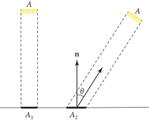图 4.2：朗伯定律。 到达表面的辐照度随着光照的入射角的余弦变化，因为在较大的入射角下，照明覆盖的面积更大。
强度（Intensity）
现在考虑一个发出光子的无穷小光源。如果我们将这个光源置于单位球体的中心，我们可以计算发射功率的角密度（angular density）。 强度（Intensity），用 \( I \) 表示，就是这个量；它的单位是 \( \text{W/sr} \)。在整个球体的方向上，我们有
\[ I = \frac{\Phi}{4\pi} \]
但更一般地说，我们感兴趣的是求方向的微分圆锥的极限：
\[
I = \lim_{\Delta\omega\rightarrow 0}\frac{\Delta\Phi}{\Delta\omega} = \frac{\text{d}\Phi}{\text{d}\omega}
\]
如往常一样，我们可以通过积分强度来还原功率：给定强度作为方向的函数 \( I(\omega) \) ，我们可以在有限的方向集 \( \Omega \) 上进行积分以还原功率：
\[
\Phi = \int_{\Omega} I(\omega)\text{d}\omega
\]
强度描述了光的方向分布，但它仅对点光源有意义。
辐射亮度（Radiance）
最后也是最重要的辐射度量的量是 辐射亮度（radiance） \( L \)。辐照度和辐射出射度为我们提供了在点 \( \text{p} \) 处的微分功率与微分面积的比值，但它们并未区分功率的方向分布。辐亮度完成了最后一步，并相对于立体角测量辐照度或辐射出射度。它的定义为
\[ L(\text{p},\omega) = \lim_{\Delta\omega\rightarrow 0}\frac{\Delta E_{\omega}(\text{p})}{\Delta\omega} = \frac{\text{d}E_{\omega}(\text{p})}{\text{d}\omega} \]
我们使用 \( E_\omega \) 来表示垂直于方向 \( \omega \) 的表面辐照度。换句话说，辐亮度并不是相对于 \( \text{p} \) 所处的表面上入射的辐照度来测量的。实际上，这种测量区域的改变有助于在辐亮度的定义中消除朗伯定律中的 \( \cos\theta \) 因子。
辐亮度是单位面积、单位立体角的通量密度。就通量而言，它的定义为
\[
L = \frac{\text{d}^2\Phi}{\text{d}\omega\text{d}A^{\perp}}
\]
其中 \( \text{d}A^{\perp} \) 是 \( \text{d}A \) 在垂直于 \( \omega \) 的假设表面上的投影面积（图 4.3）。因此，当感兴趣的入射方向的圆锥 \( \text{d}\omega \) 变得非常小，且表面 \( \text{d}A \) 上感兴趣的局部面积也变得非常小时，它是对表面入射光的测量的极限。
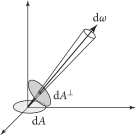图 4.3： 辐亮度 \( L \) 被定义为单位立体角 \( \text{d}\omega \) 单位投影面积 \( \text{d}A^{\perp} \) 上的通量。
在所有这些辐射度量的量中，辐亮度将是本书其余部分中使用最频繁的量。一个直观的原因是，从某种意义上说，它是所有辐射度量的量中最基础的；如果给定辐亮度，那么其他所有值都可以通过对辐亮度在面积和方向上进行积分来计算。辐亮度的另一个优良特性是，它在真空中的光线传播过程中保持不变。因此，它是进行光线追踪计算的自然量。
4.1.2 入射和出射辐射亮度函数（Incident and Exitant Radiance Functions）
当光与场景中的表面交互时，辐射亮度函数 \( L \) 通常在表面边界处是不连续的。在完全不透明表面的最极端情况下（例如，镜子），表面稍上方和稍下方的辐射函数可能完全无关。
因此，在不连续处求单侧极限是有意义的，以区分表面上方和下方的辐射亮度函数。
\[ \begin{align} L^{+}(\text{p},\omega) &= \lim_{t\rightarrow 0^{+}}L(\text{p}+t\mathbf{n}_{\text{p}},\omega) \\ L^{-}(\text{p},\omega) &= \lim_{t\rightarrow 0^{-}}L(\text{p}+t\mathbf{n}_{\text{p}},\omega) \\ \end{align} \]
其中 \( \mathbf{n}_\text{p} \) 是在 \( \text{p} \) 处的表面法线。然而，在整个文本中跟踪单侧极限是不必要且累赘的。
我们倾向于通过区分到达该点的辐射亮度（例如，由光源照明引起的）和离开该点的辐射亮度（例如，由表面反射引起的）来解决这种模糊性。
考虑一个位于物体表面的点 \( \text{p} \) 。到达该点的辐射亮度分布可以用一个位置和方向的函数在数学上描述。这个函数用 \( L_\text{i}(\text{p},\omega) \) 表示（图 4.4）。描述该点表面上反射辐射亮度的函数用 \( L_\text{o}(\text{p},\omega) \) 表示。请注意，在这两种情况下，方向向量 \( \omega \) 的指向远离 \( \text{p} \) 的方向，但要注意一些作者使用的符号，其中 \( omega \) 在 \( L_\text{i} \) 项中是反向的，以便指向 \( \text{p} \) 。

图 4.4：（a）入射辐射亮度函数 \( L_{\text{i}}(\text{p},\omega) \) 将到达某一点的辐射亮度分布描述为位置和方向的函数。（b）出射辐射亮度函数 \( L_{\text{o}}(\text{p},\omega) \) 给出了离开该点的辐射亮度分布。注意，对于这两个函数， \( \omega \) 指向远离表面的方向，因此，例如，\( L_{\text{i}}(\text{p},-\omega) \) 给出了到达表面另一侧的辐射亮度，而不是 \( \omega \) 所在的一侧。
下面是这些更直观的入射和出射辐射亮度函数与方程（4.4）中的单侧极限之间的简单关系：
\[ \begin{align} L_{\text{i}}(\text{p},\omega) &= \begin{cases} L^{+}(\text{p},-\omega), &\omega\cdot\mathbf{n}_{\text{p}} > 0 \\ L^{-}(\text{p},-\omega), &\omega\cdot\mathbf{n}_{\text{p}} < 0 \end{cases} \\ L_{\text{o}}(\text{p},\omega) &= \begin{cases} L^{+}(\text{p},\omega), &\ \ \omega\cdot\mathbf{n}_{\text{p}} > 0 \\ L^{-}(\text{p},\omega), &\ \ \omega\cdot\mathbf{n}_{\text{p}} < 0 \end{cases} \end{align} \]
在整本书中，我们将使用入射和出射辐射亮度函数的概念来解决边界处辐射亮度函数的模糊性。
另一个需要记住的特性是，在没有表面的空间（例如，自由空间）的点上，\( L \) 是连续的，因此 \( L^{+}=L^{-} \)，这意味着
\[
L_{\text{o}}(\text{p},\omega) = L_{\text{i}}(\text{p},-\omega) = L(\text{p},\omega)
\]
换句话说，\( L_{\text{i}} \) 和 \( L_{\text{o}} \) 仅在方向上有所不同。
4.1.3 辐射度量光谱分布（Radiometric Spectral Distributions）
迄今为止，所有的辐射度量量都在没有考虑其在波长分布变化的情况下被定义。因此，它们实际上是对感兴趣的（未指定的）波长范围内的波长依赖量的积分。正如我们能够通过其他量的极限来定义各种辐射度量量一样，我们也可以通过在小波长范围内求其极限来定义它们的光谱变体。
例如，我们可以将 光谱辐射亮度（spectral radiance） \( L_{\lambda} \) 定义为在一个无穷小波长的区间 \( \Delta\lambda \) 上的辐射亮度的极限，
\[
L_{\lambda} = \lim_{\Delta\lambda\rightarrow 0}\frac{\Delta L}{\Delta\lambda} = \frac{\text{d}L}{\text{d}\lambda}
\]
反之，辐射亮度可以通过在一系列波长范围内对光谱辐射亮度进行积分来找到：
\[
L = \int_{\lambda_0}^{\lambda_1} L_{\lambda}(\lambda)\text{d}\lambda
\]
其他辐射度量量的定义类似。这些光谱变体的单位中都有一个额外的 \( 1/\text{m} \) 因子。
4.1.4 亮度与光度学（Luminance and Photometry）
所有的辐射测量如通量、辐亮度等，都有相应的光度测量。 光度学（Photometry） 是研究可见电磁辐射在人类视觉系统中的感知。每个光谱辐射量都可以通过与光谱响应曲线 \( V(\lambda) \) 进行积分，转换为其相应的光度量，该曲线描述了人眼对不同波长的相对敏感性。
亮度（Luminance） 测量光谱功率分布对人类观察者的亮度感知。例如，亮度考虑到这样一个事实：对于人类而言，在绿色波长中具有特定能量的光谱分布，会比在蓝色波长中具有相同能量的光谱分布看起来更明亮。
我们将用 \( Y \) 表示亮度；它与光谱辐射亮度的关系是
\[
Y = \int_{\lambda}L_{\lambda}(\lambda)V(\lambda)\text{d}\lambda
\]
亮度和光谱响应曲线 \( V(\lambda) \) 与颜色的 XYZ 表示密切相关，将在 4.6.1 节中介绍。
亮度的单位是每平方米坎德拉（ \( \text{cd/m}^2 \) ），其中坎德拉（candelas）是辐射强度的光度等效值。表 4.1 中给出了几个代表性的亮度值。†（各种光度量有着相当不寻常的名称；Jim Kajiya 很好地总结了这种有些令人困惑的情况：“因此，一个尼特（nit）就是每球面度（steradian）一个勒克斯（lux），等于每平方米一个坎德拉（candela），也就是每平方米每球面度一个流明（lumen）。明白了吗？”）
条件 亮度（\( \text{cd/m}^2 \)，或尼特（nits）） 地平线上的太阳 600,000 60 瓦特灯泡 120,000 晴朗的天空 8,000 典型的办公室 100–1,000 典型的计算机显示器 1–100 路灯照明 1–10 阴云密布的月光 0.25
本章中介绍的所有其他辐射度量量都有光度学等同物；它们在表 4.2 中总结。
辐射度量 单位 光度测量 单位 辐射能量 焦耳（\( \text{J} \)） 光能 Talbot（\( \text{T} \)） 辐射通量 瓦特（\( \text{W} \)） 光通量 流明（\( \text{lm} \)） 辐射强度 \( \text{W/sr} \) 发光强度 \( \text{lm/sr}=\) 坎德拉（\( \text{cd} \)） 辐射照度 \( \text{W}/\text{m}^2 \) 光照度 \( \text{lm/m}^2 \) 勒克斯（\( \text{lx} \)） 辐射亮度 \( \text{W}/(\text{m}^2\text{sr}) \) 亮度 \( \text{lm}/(\text{m}^2\text{sr}) = \text{cd/m}^2 = \) 尼特